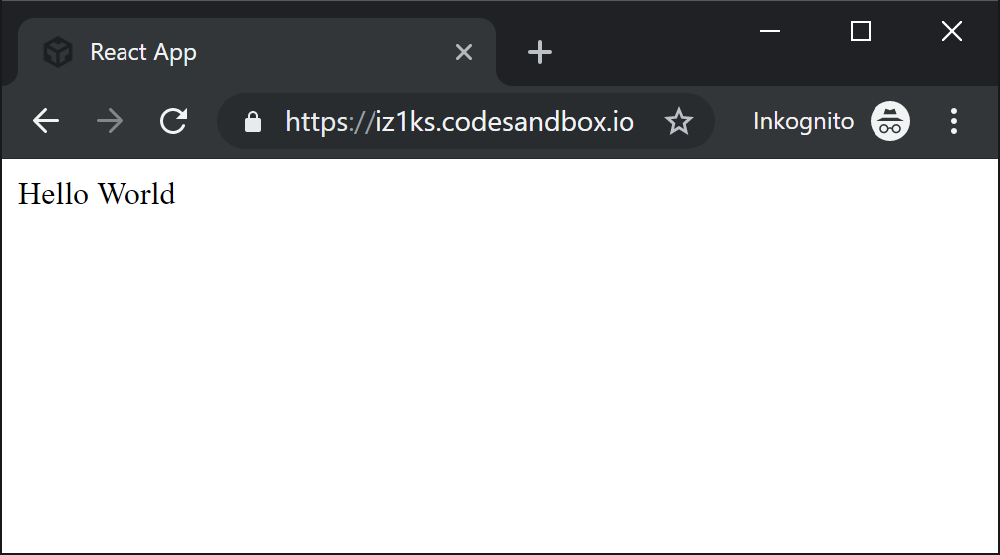
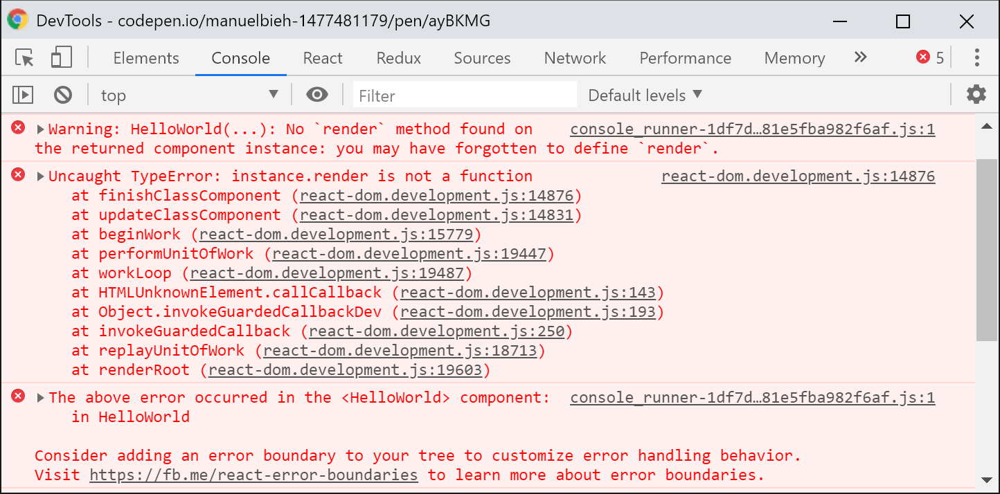
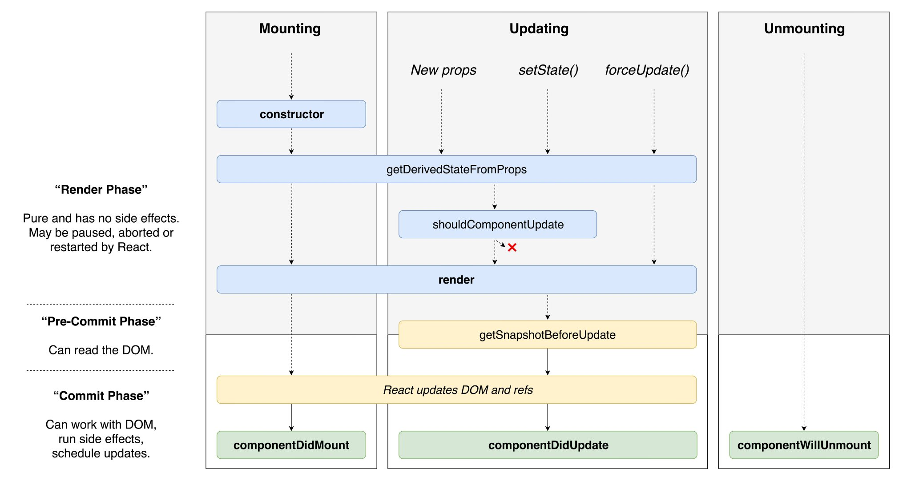
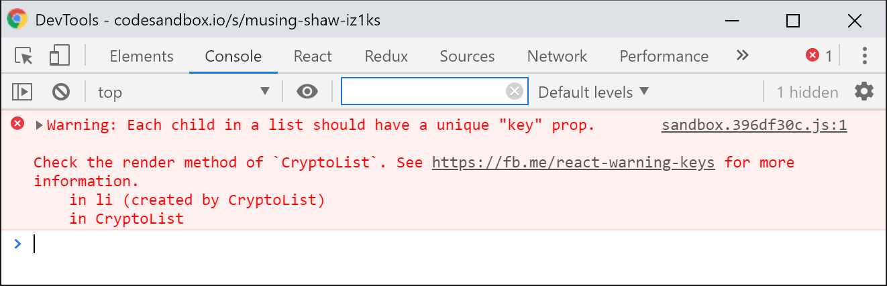

Vorwort
In diesem Buch geht es mir darum einen Einstieg zu ermöglichen, fortgeschrittene Themen aufzugreifen und dabei möglichst React Best-Practices zu vermitteln. Wenn ihr mit dem Buch nicht nur versteht wie etwas funktioniert sondern auch warum, dann habe ich mein Ziel erfüllt. Nun hat jeder Entwickler andere Vorstellungen davon welche Methoden die besten sind und wie man am einfachsten, effizientesten oder schönsten Code schreibt. Allerdings halte ich mich hier stark an die Empfehlungen von den Core-Entwicklern bei Facebook, die die ebenfalls von der Community gut angenommenen Empfehlungen von AirBnB und noch einiger anderer Größen aus der „React-Szene“. Alles gewürzt mit einer Prise eigener Erfahrung.
So gibt es bspw. mehrere Wege wie man seine Anwendung später publiziert, ob man es mit Tools wie Browserify, Rollup oder Webpack zu einem Bundle packt oder nicht. Ob man seine Komponenten als ES2015-Klassen schreibt oder createClass aus „ES5-Zeiten“ verwendet. Dort wo ich es für sinnvoll erachte, werde ich auf die diversen gängigen Methoden eingehen um nicht nur Wege vorzugeben sondern auch Alternativen aufzuzeigen.
Ich möchte hier jedoch primär möglichst auf die modernsten, aktuellsten und in den meisten Fällen auch einfachsten Methoden eingehen, weshalb ich für die meisten Code-Beispiele von einem Setup mit Webpack, Babel und ES2015 (und neuer) ausgehen werde, das ich im weiteren Verlauf aber noch einmal sehr genau beschreiben werde. Wer zuvor nie mit ES2015+ in Berührung kam wird sicherlich einen Augenblick länger benötigen die Beispiele zu verstehen, ich werde mich indes bemühen alle Beispiele verständlich zu halten und auch auf ES2015+ noch genauer eingehen. JavaScript-Grundkenntnisse sollten jedoch bei der Lektüre vorhanden sein.
Dieses Buch deckt außerdem nur das Thema Einstieg in React ab und bietet keinen Einstieg in JavaScript. Grundsätzliche und an einigen wenigen Stellen sicherlich auch etwas tiefergehende Kenntnisse in JavaScript werden daher vorausgesetzt, wobei ich alles möglichst einsteigerfreundlich erkläre, auch wenn man bisher nur einigermaßen oberflächlich mit JavaScript in Kontakt war. Ich setze nicht voraus, dass jeder Leser fehlerfrei erklären kann wie ein JavaScript-Interpreter funktioniert, ich gehe aber sehr wohl davon aus, dass der Leser einigermaßen darüber Bescheid weiß, wie Scopes in JavaScript funktionieren, was ein Callback ist, wie Promise.then() und Promise.catch() funktionieren und wie das Prinzip asynchroner Programmierung mit JavaScript funktioniert.
Aber keine Sorge: das klingt komplizierter als es am Ende eigentlich ist. Jeder Leser der in der Vergangenheit bereits bspw. mit jQuery gearbeitet hat, sollte beim größten Teil dieses Buches keine Verständnisprobleme haben und meinen Erklärungen folgen können.
Über den Autor
Manuel Bieh, seit 2012 als Freelancer im Bereich Frontend-/JavaScript-Entwicklung tätig.
Bevor ich mich dazu entschied als Freelancer zu arbeiten hatte ich ebenfalls bereits fast 10 Jahre Erfahrung als Web-Entwickler, meist mit dem Fokus auf Frontend-Entwicklung, in verschiedenen Unternehmen gesammelt. Lange Zeit habe ich mich eher als Generalist statt als Spezialist gesehen und so gab und gibt es wenige bekannte Frontend-Technologien mit denen ich während meiner beruflichen Laufbahn nicht schon mal zumindest kurz in Berührung gekommen wäre. Als Spezialist habe ich mich aber außer wenn es generell um JavaScript geht nirgendwo gesehen. Dies änderte sich dann schlagartig als mir ein befreundeter Entwickler in 2014 erstmals von React erzählte und ich dann durch Neugierde und ganz konkret durch ein Projekt für Zalando erstmals intensiver mit React in Kontakt kam.
Anfangs fremdelte ich noch etwas, so wie übrigens viele, die neu in React einsteigen, doch je länger und intensiver ich mich mit React auseinandersetzte, desto mehr schlug meine anfängliche Skepsis in Begeisterung um. Seitdem hat mich React so gepackt, dass seitdem meine Projekte allesamt so ausgewählt habe, dass dort React im Einsatz ist (und dessen Einsatz auch sinnvoll ist!). In dieser Zeit habe ich viel gelernt (und lerne auch immer noch jeden Tag dazu), habe dabei in kleinen Teams mit unter 5 und in recht großen Teams mit über 30 Leuten gearbeitet und dort mein React-Wissen eingebracht und selbst immer wieder neue Eindrücke und Wissen mitgenommen.
Die Komplexität von React ist dabei aber nicht zu unterschätzen. Und so ist es zwar möglich relativ schnell in ziemlich kurzer Zeit eine Anwendung mit React zu entwickeln. Wenn man aber Wert auf hohe Qualität legt gibt es dort viele Stellschrauben an denen man drehen kann um Code-Qualität, Performance und Wartbarkeit zu erhöhen, die teilweise auch Leuten nicht bekannt sind die schon viel und lange mit React entwickelt haben. Und so würde ich mich selbst nach mehrjähriger intensiver und täglicher Arbeit mit React sicher noch immer nicht als absoluten Experten bezeichnen. Aber ich denke, dass mit der Zeit dennoch genug Wissen zusammengekommen ist welches ich in Form dieses Buches weitergeben kann um euch den Einstieg zu erleichtern und auch noch den einen oder anderen Profi-Tipp an die Hand zu geben.
I – Einführung
Allgemeines
Was ist React eigentlich und was ist es nicht?
Zitieren wir hier an erster Stelle mal die React-Dokumentation, denn die bringen es sehr prägnant auf den Punkt:
[React is] a library for building user interfaces.
Auch wenn die Erklärung sehr kurz ist kann man aus ihr alle essentiellen Dinge ableiten die wichtig sind für die Arbeit mit React und um zu verstehen worum es sich dreht. React ist erst einmal nur eine Library, kein vollständiges Framework mit unzähligen Funktionen mit dem ihr ohne weitere Abhängigkeiten komplexe Web-Anwendungen entwickeln könnt. Und da kommen wir auch schon zum zweiten Teil des Satzes: for building user interfaces.
React ist also erst einmal lediglich eine Library die es euch einfach macht Benutzerinterfaces zu entwickeln. Keine Services oder Methoden um API-Calls zu machen, keine built-in Models oder ORM. Nur User Interfaces. Sozusagen nur der View-Layer eurer Anwendung. That’s it! In diesem Zusammenhang liest man gelegentlich, dass React das „V“ in MVC (Model-View-Controller) oder MVVM (Model-View-ViewModel) darstellt. Das trifft es in meinen Augen ganz gut.
React bietet einen deklarativen Weg um den Zustand (State) eines User Interfaces zu beschreiben. Vereinfacht gesagt bedeutet das, ihr beschreibt mit eurem Code im Grunde explizit wie euer User Interface aussehen soll, abhängig davon in welchem State eine Komponente sich befindet. Einfaches Beispiel zur Veranschaulichung dieses Prinzips: ist ein Benutzer eingeloggt, zeige das Dashboard, ist er es nicht, zeige das Login-Formular.
Die Logik selbst befindet sich dabei komplett im JavaScript-Teil der Anwendung (dort, wo sie also immer hingehören sollte) und nicht in den Templates selbst, wie das bei den allermeisten anderen Web-Frameworks die Regel ist. Klingt erst einmal kompliziert, wird aber im weiteren Verlauf immer deutlicher was damit eigentlich gemeint ist.
React arbeitet dabei komponentenbasiert, d.h. man entwickelt gekapselte funktionale Komponenten die beliebig zusammengestellt (composed) und wiederverwendet werden können. Erweiterung von Komponenten ist zwar möglich, jedoch sehr unüblich in der React-Welt. Hier wird auch von offizieller Seite das Composition Model propagiert, bei dem mehrere Komponenten zu einem „Gesamtbild“ zusammengefügt werden statt mit Inheritance, also Vererbung zu arbeiten.
Bedeutet das jetzt also, dass ich keine komplexen Web-Anwendungen mit React entwickeln kann? Nein. Absolut nicht. React besitzt ein sehr großes, sehr aktives und zum großen Teil auch sehr hochqualitatives Ecosystem an Libraries, die wiederum auf React basieren, es erweitern oder ergänzen und so zu einem mächtigen Werkzeug werden lassen, das sich hinter großen Frameworks wie Ember oder Angular nicht verstecken braucht. Im Gegenteil. Ist man erst einmal in die Welt des React-Ökosystems eingetaucht und hat sich einen Überblick verschafft, hat man ganz schnell eine Reihe an wirklich guten Tools und Libraries gefunden mit denen man professionelle, super individuelle und hochkomplexe Anwendungen entwickeln kann.
Wann sollte ich React benutzen und wann nicht?
Insbesondere kurz nachdem React an Fahrt aufnahm wurde oft die Frage gestellt ob die Tage von jQuery nun gezählt sind, ob man nun alles mit React entwickeln kann oder gar soll oder wann der Einsatz von React sinnvoll oder vielleicht auch gar nicht sinnvoll ist.
React ist, wie wir bereits geklärt haben erst einmal eine Library für die Erstellung von User Interfaces. User Interfaces bedeuten immer Interaktion. Und Interaktion geht zwangsweise in den meisten Fällen einher mit State-Management. Ich drücke einen Knopf und ein Dropdown öffnet sich. Ich ändere also den Zustand von geschlossen auf offen. Ich gebe Daten in ein Eingabefeld ein und bekomme angezeigt ob meine eingegebenen Daten valide sind. Sind sie es nicht, ändert sich der Zustand des Eingabefeldes von gültig in ungültig. Und genau hier kommt React ins Spiel. Habe ich keine Interaktion oder „sich ändernde Daten“ auf meiner Seite weil ich z.B. eine reine statische Image-Seite für ein Unternehmen entwickle, brauche ich wahrscheinlich kein React.
Falsch umgesetzt kann React hier sogar schaden, da auf einer Image-Website oftmals der Content im Vordergrund steht und sofern man seine React-Komponenten nicht bereits serverseitig vorrendert, können die meisten Suchmaschinen mit der Seite erst einmal wenig anfangen. React macht es uns aber glücklicherweise sehr einfach unsere Komponenten serverseitig zu rendern, von daher ist das noch ein Problem welches sich in der Regel leicht beheben lässt.
Habe ich hingegen sehr viel Interaktion und ein Interface das sich oft aktualisiert, wird der Einsatz von React mit ziemlich hoher Wahrscheinlichkeit sehr viel Zeit und Nerven sparen. Grundsätzlich gilt hier die Faustregel: je mehr Interaktion in einer Website oder Web-Anwendung stattfindet und je komplexer diese ist, desto mehr lohnt sich der Einsatz von React. Das griffigste Beispiel sind hier Single Page Applications (SPA), bei denen die Anwendung nur einmal im Browser aufgerufen und initialisiert wird und jegliche weitere Interaktion und Kommunikation mit dem Server über XHR (den meisten besser bekannt als „AJAX-Requests“) abläuft.
Ich habe es kürzlich selbst in einem Projekt erlebt, dass ich ein Anmeldeformular entwickeln musste, welches mir ziemlich simpel erschien und ich startete erst einmal ohne React. Im Laufe der Entwicklung stellte sich heraus, dass zum Zwecke besserer Usability immer mehr (Hintergrund-)Interaktion nötig wurde. So sollte bspw. nachträglich eine automatische Live-Validierung von Formulardaten eingebaut und der Anmeldeprozess in 2 Schritte unterteilt werden, so dass ich recht zügig dann doch auf React zurückgegriffen habe, weil mir das manuelle State-Management und die imperative Veränderung des User Interfaces einfach zu umständlich wurde.
Imperativ bedeutet in dem Fall, dass ich dem Browser sage was er machen soll, wohingegen ich bei deklarativem Code, wie man ihn mit React schreibt, lediglich das gewünschte Endergebnis anhängig vom aktuellen Zustand beschreibe. Eines der Kernprinzipien von React. Um beim Beispiel von oben zu bleiben: statt zu sagen „ich bin nun eingeloggt, lieber Browser, bitte blende nun das Login-Formular aus und zeige mir das Dashboard“, definiere ich zwei Ansichten: So, lieber Browser, soll mein Interface aussehen wenn ich eingeloggt bin (Dashboard-Ansicht) und so, wenn ich es nicht bin (Login-Ansicht). Welche der Ansichten angezeigt wird entscheidet dann React anhand des Zustands der Komponente.
Wo hat React seinen Ursprung?
React wurde ursprünglich von bzw. bei Facebook entwickelt und später dann, bereits 2013, unter der BSD Lizenz als Open Source der Öffentlichkeit zugänglich gemacht, die nach einigen Protesten in eine MIT-Lizenz geändert wurde. Und so basiert auch ein sehr großer Teil von Facebook auf React. Mittlerweile sollen sich dort sogar über 50.000 eigene Komponenten im Einsatz befinden. Was insofern schön ist, als dass Facebook dadurch natürlich ein großes Interesse an der permanenten Weiterentwicklung hat und man nicht befürchten muss, dass man seine Anwendung auf Basis einer Technologie entwickelt hat die plötzlich nicht mehr weiterentwickelt wird.
Die React Core-Entwickler leisten dabei sehr gute Arbeit darin, die Community frühzeitig in Entscheidungen mit einzubeziehen und mitdiskutieren zu lassen. Eigens dazu gibt es ein Github-Repository mit React RFCs („Request for Comments“), mittels dessen geplante Änderungen frühzeitig zur Diskussion gestellt werden und mittels dessen dem React-Team auch eigene Vorschläge unterbreitet werden können.
Breaking Changes, also Änderungen die nicht abwärtskompatibel sind, folgen einem festen Deprecation Schema und so werden Methoden, Eigenschaften und Funktionen deren Entfernung geplant ist erst einmal für einige Zeit mit aussagekräftigen Deprecation Warnings versehen und sogar Tools bereitgestellt, mit denen sich alter Code weitestgehend automatisiert anpassen lässt (React-Codemod). React hält sich hier strikt an Semver-Konventionen.
Dies bedeutet das nur neue Major-Releases (16.x.x auf 17.x.x) Breaking Changes enthalten, Minor-Releases (bspw. 16.2.x auf 16.3.x) enthalten neue Features oder bekommen Deprecation Warnings, die den Entwickler auf kommende Major-Releases vorbereiten während Patch-Releases (bspw.16.3.0 auf 16.3.1) lediglich Bugfixes beinhalten.
Vor dem Release von Major oder Minor Releases gibt es regelmäßig auch alpha, beta und rc (Release Candidate) Versionen, mit denen man vorab schon einen Blick auf kommende Features werfen kann. Diese sind aber jeweils mit Vorsicht zu genießen, da sich die Funktionsweise neuer Features bis zum endgültigen Release noch ändern könnten.
 Beispiel für eine Deprecation Warning
Beispiel für eine Deprecation Warning
Dies ist sicher dem Umstand geschuldet, dass eben auch bei Facebook sehr viele React-Komponenten im Einsatz sind und man dort nicht einfach mal eben tiefgreifende Änderungen vornehmen kann ohne Probleme zu verursachen. Die Gedanken und Begründungen der Entwickler lassen sich dabei jederzeit ausführlich im Github Issue-Tracker verfolgen, alle wichtigen Änderungen werden dabei in sog. Umbrella-Tickets zusammengefasst.
Ab ins kalte Wasser
Nun hatten wir bereits das „Was“, das „Wann“ und das „Wo“. Kommen wir also zum „Wie“ und schreiben unsere erste kleine React-Komponente. Neben React selbst benötigen wir für die Ausgabe unserer App im Browser auch das Package ReactDOM um unsere Anwendung mounten zu können, also grob gesagt: im Browser nutzbar zu machen.
Ein sehr minimalistisches Setup um schnell mit React loslegen zu können, sieht wie folgt aus:
<!DOCTYPE html>
<html>
<head>
<meta charset="UTF-8" />
<title>Hallo React!</title>
</head>
<body>
<div id="app"></div>
<script crossorigin src="https://unpkg.com/react@16.8.4/umd/react.development.js"></script>
<script crossorigin src="https://unpkg.com/react-dom@16.8.4/umd/react-dom.development.js"></script>
<script>
</script>
</body>
</html>
Wir erstellen also das Grundgerüst für ein gewöhnliches HTML-Dokument und laden React und ReactDOM in der jeweils aktuellsten Stable-Version vom unpkg-CDN die uns dann jeweils als globale Variable im window Objekt unter window.React und window.ReactDOM zur Verfügung stehen. Ansonsten sehen wir hier vorerst nur eine leere Seite mit einem (noch inhaltlosen) <div id="app">. Dieses div nutzen wir gleich als sogenannte Mount-Node, um dort unsere erste React-Komponente anzuzeigen.
Sind mehrere React-Komponenten im Spiel redet man üblicherweise von einer App, WebApp oder Single Page App. Die Grenzen ab wann eine Komponente als App bezeichnet wird sind dabei aber fließend. Einige Entwickler reden auch schon bei einer einzigen Komponente von einer App.
Eine feste Definition gibt es dafür nicht.
Starten wir also klassischerweise mit dem üblichen „Hello World“ Beispiel und setzen das Script an die Stelle an der sich oben der Platzhalter befindet:
<script>
class HelloWorld extends React.Component {
render() {
return React.createElement(
'div',
{id: 'hello-world'},
'Hello World'
);
}
}
ReactDOM.render(
React.createElement(HelloWorld),
document.getElementById('app')
);
</script>
Und damit haben wir bereits die erste einfache React-Komponente implementiert! Setzen wir diesen Code nun an die Stelle unseres Platzhalters aus dem vorangegangenen Code-Snippet. Sehen wir im Browser die folgende Ausgabe:
Unsere erste React-Komponente im Browser.
Sieht für’s Erste einmal gar nicht so kompliziert aus, oder? Gehen wir den Code einmal Schritt für Schritt durch. Die relevanten Stellen im Code habe ich fett hervorgehoben.
class HelloWorld
Hier geben wir dem Kind seinen Namen. Unsere Komponente hat in dem Fall den Namen HelloWorld. Bei der Namensgebung sind der Fantasie grundsätzlich keine Grenzen gesetzt, doch Achtung: React-Komponenten müssen stets mit einem Großbuchstaben beginnen! So wäre helloWorld also kein gültiger Name für eine Komponente, HELLOWORLD hingegen schon (wenn auch sehr unüblich).
Die gängige Art der Benennung von Komponenten folgt der UpperCamelCase-Form. Auch längere, selbsterklärende Namen sind nicht unüblich. So wäre also ein Name wie UserNotificationView für eine Komponente keineswegs exotisch.
extends React.Component
Hier erweitern wir schließlich die React interne Klasse React.Component wodurch unsere Klasse erst einmal zu einer Komponente wird die wir in React nutzen können. Neben der React.Component gibt es außerdem auch die React.PureComponent als Komponenten-Klasse, sowie eine zweite Form, die sogenannte Stateless Functional Component. Diese ist lediglich eine JavaScript-Funktion, die einem bestimmten Muster folgt. Beide werden im weiteren Verlauf noch ausführlich beleuchtet und sind an dieser Stelle zum Grundverständnis erst einmal weniger wichtig.
render();
Unsere Komponente besteht lediglich aus dem einzigen zwingenden Bestandteil einer Komponente, nämlich der render()-Methode. Mittels dieser wird React mitgeteilt wie die entsprechende Komponente dargestellt (sprich: „gerendert“) werden soll. Eine Komponente hat zwingend einen return-Wert. Dieser kann entweder ein explizites null sein, um bewusst nichts anzuzeigen (jedoch nicht undefined!), ein React-Element oder ab Version 16 auch ein Array.
Im Falle eines Arrays darf dieser Strings, Numbers, React-Elemente oder ebenfalls null als Werte enthalten. Die render()-Methode dient also dazu deklarativ den Zustand unseres Interfaces zu beschreiben. All das, was wir aus ihr per return zurückgeben, zeigt uns React beim Render als Ausgabe im Browser an.
Auch wenn man in der Gestaltung seiner JavaScript-Klassen natürlich vollkommen frei ist und dies daher nicht zwingend notwendig ist, so wird die render()-Methode der Übersicht halber in der Regel meist als letzte Methode einer Komponente definiert. So wird es z.B. in den Code-Guidelines von AirBnB, dessen Entwickler in der React-Szene sehr aktiv sind, aber auch von vielen anderen bekannten Entwicklern vorgegeben oder zumindest empfohlen. Aus eigener Erfahrung kann ich sagen, dass es die tägliche Arbeit mit React deutlich erleichtert sich an diese Empfehlung zu halten.
Fehlermeldungen bei fehlender render()-Methode
 Fehlermeldung bei fehlerhafter render()-Methode
Fehlermeldung bei fehlerhafter render()-Methode
React.createElement();
Wie erwähnt gibt die render()-Methode einer React-Komponente in den meisten Fällen ein React-Element zurück. React-Elemente sind sozusagen die kleinsten aber dennoch gleichzeitig auch die wesentlichen Bausteine in einer React-Anwendung und beschreiben, was der Benutzer letztendlich auf seinem Bildschirm sieht. Neben React.cloneElement() und React.isValidElement() ist React.createElement() zudem eine von lediglich 3 Top-Level API-Methoden (sieht man von mittlerweile veralteten (deprecated) Methoden einmal ab).
Die Methode erwartet 1-n Parameter:
- „Typ“, das können HTML-Elemente als String sein, also bspw.
'div', 'span' oder 'p' aber auch andere React-Komponenten
- sog. „Props“, das sind im grundlegenden Sinn schreibgeschützte (readonly) „Eigenschafts-Objekte“ einer Komponente. Abgeleitet vom engl. Properties eben.
- sowie beliebig viele Child-Elemente, die selbst wieder React-Elemente, Arrays, Funktionen oder auch einfacher Text sein können. Eine Komponente muss aber nicht zwingend auch Child-Elemente besitzen.
Letztendlich ist ein React-Element unter der Haube nichts weiter als ein unveränderliches (immutable) JavaScript-Objekt zur Beschreibung von Eigenschaften, die React mitteilen wie etwas (und was) dargestellt werden soll. React erstellt nach dieser Beschreibung den sog. Virtual DOM. Dieser stellt eine Repräsentation des HTML-Baums in Form eines JavaScript-Objekts dar. Dieser Virtual DOM wird anschließend von React dazu verwendet, um möglichst nur die Teile einer Anwendung zu aktualisieren, in denen auch tatsächlich eine Änderung vorgenommen wurde wenn der Benutzer mit der Anwendung interagiert, Daten verändert oder Events auslöst.
Dadurch, dass React nicht einfach bei jeder State-Änderung die komplette Anwendung neu in den DOM schreibt, was aus Performance-Sicht sehr kostspielig wäre, sondern mittels eines Reconciliation (zu deutsch etwa „Abgleich“) genannten Prozesses zuvor vergleicht was geändert wurde, somit die Schreibvorgänge auf ein Minimum reduziert, wird ein zum Teil enormer Geschwindigkeitsvorteil erreicht gegenüber anderen Frameworks und Libraries die viele DOM-Operationen vornehmen.
Bei der täglichen Arbeit wird man React.createElement() jedoch für gewöhnlich niemals in dieser Form aufrufen, da uns JSX, eine von Facebook entwickelte Syntax-Erweiterung für JavaScript, diese Arbeit abnehmen und massiv erleichtern wird. Dennoch halte ich es für wichtig von ihrer Existenz zu wissen um zu verstehen wie JSX im Hintergrund arbeitet um so mögliche Fehlerquellen ausschließen zu können.
JSX sieht auf den ersten Blick aus wie HTML bzw. XML/XHTML, jedoch mit deutlich erweitertem Funktionsumfang und der Möglichkeit JavaScript-Ausdrücke darin zu verwenden. JSX ist eine Abstraktion um die Art, wie man React-Elemente erstellt, für den Entwickler deutlich zu vereinfachen. So würde unser obiges Beispiel:
React.createElement('div', { id: 'hello-world' }, 'Hello World');
würde in JSX ganz einfach wie folgt geschrieben werden:
<div id="hello-world">Hello World</div>
Was für viele Einsteiger in React erst einmal sehr befremdlich wirkt, ich habe in diesem Zusammenhang mal den schönen Begriff JSX-Schock gelesen, stellt sich aber nach etwas Rumspielerei jedoch sehr schnell als unglaublich praktisch heraus und ist meines Erachtens einer der wesentlichen Gründe warum React letztendlich so viel an Beliebtheit in so kurzer Zeit gewonnen hat.
Zurück zum Wesentlichen: unsere Komponente bekommt hier also über den return-Wert der render()-Methode mitgeteilt, dass sie ein Element vom typ div mit der id hello-world und dem Child-Element (in dem Fall ein Textknoten) mit dem Inhalt Hallo Welt darstellen soll.
ReactDOM.render(Element, Container);
Zu guter Letzt kommt mit ReactDOM die zweite Library ins Spiel. ReactDOM ist zuständig für das Zusammenspiel von React mit dem DOM (Document Object Model), also oberflächlich ausgedrückt: dem Web-Browser. Wie auch schon React selbst besitzt ReactDOM nur sehr wenige Top-Level API-Methoden. Wir konzentrieren uns vorerst mal auf die render()-Methode, die sozusagen das Herzstück von ReactDOM im Browser ist.
Trotz der Namensgleichheit hat diese erst einmal nicht direkt etwas mit der Methode innerhalb von React-Komponenten zu tun sondern dient lediglich dazu ein React-Element in eine angegebene „Root-Node“ zu rendern, also stumpf ausgedrückt: anzuzeigen. In unserem Fall wird hier unsere HelloWorld-Komponente in das <div id="app"> gerendert. Die Root-Node wird dabei nicht ersetzt, sondern die Komponente wird innerhalb des Containers eingesetzt.
ReactDOM sorgt also dafür, dass wir die angegebene Komponente überhaupt erst einmal im Browser sehen können. Was wir dort genau sehen haben wir zuvor in der render()-Methode der Komponente über das angegebene React-Element als return-Wert beschrieben. Beim Aufruf von ReactDOM.render() wird dabei das als ersten Parameter angegebene React-Element in den als zweiten Parameter angegebenen Container gerendert.
Beim ersten Aufruf der ReactDOM.render() Funktion wird sämtlicher möglicherweise vorhandene Inhalt des Ziel-Containers durch den von React ermittelten, darzustellenden Inhalt ersetzt. Bei jedem weiteren Aufruf verwendet React einen internen Vergleichs-Algorithmus für bestmögliche Effizienz, um nicht die komplette Anwendung vollständig neu zu rendern!
In der Praxis ist das allerdings weniger von Relevanz, da die ReactDOM.render() Funktion bei der Erstellung von Single Page Apps üblicherweise nur einmalig ausgeführt wird, für gewöhnlich beim Laden einer Seite. React verändert dabei auch niemals den Ziel-Container selbst, sondern lediglich dessen Inhalt. Besitzt das Container-Element also eigene Attribute wie Klassen, IDs oder data-Attribute bleiben diese auch nach dem Aufruf von ReactDOM.render() erhalten.
Damit ist das generelle Funktionsprinzip von React erst einmal erklärt, unsere erste Komponente ist implementiert und im Browser zu sehen!
Um störungsfrei und komfortabel mit React arbeiten zu können sollten einige Bedingungen erfüllt sein. Nicht alles davon ist zwingend notwendig, es erleichtert das Entwicklerleben jedoch ungemein, weswegen ich dennoch dringend dazu rate und auch bei allen folgenden Beispielen davon ausgehen werde, dass ihr diese Tools installiert habt:
Node.js und npm
Node werden die meisten möglicherweise als „serverseitiges JavaScript“ kennen, das ist allerdings nicht die ganze Wahrheit. In erster Linie ist Node einmal eine JavaScript-Laufzeitumgebung, die sich eben hervorragend für Netzwerkanwendungen eignet, also klassische Webserver. Darüber hinaus bringt Node auch ein Tool zur Paketverwaltung mit, nämlich npm, mit dem sich spielend einfach neue JavaScript-Libraries auf dem eigenen Rechner installieren lassen. Außerdem lassen sich auch eigene Kommandozeilen-Scripts damit schreiben und ausführen, was sich später noch als sehr praktisch erweisen wird.
Statt Node direkt zu installieren, empfehle ich nvm (Node Version Manager) für Mac und Linux bzw. nvm-windows für Windows. Nvm hat den Vorteil, dass es einerseits keine Admin-Rechte benötigt um Packages global zu installieren und man andererseits mit einem simplen Befehl auf der Kommandozeile (nvm install [version]) die auf dem System installierte Version aktualisieren kann. Für einer Liste aller verfügbaren Version kannst du ganz einfach nvm ls-remote (Mac/Linux) bzw. nvm list available (Windows) benutzen. Ich empfehle im weiteren Verlaufe dieses Buch die aktuelle LTS (Long Term Support) Version zu benutzen. LTS Versionen sind stabile Versionen die auch längere Zeit Updates erhalten.
Yarn
Während Node mit npm bereits einen guten und soliden Package-Manager mitbringt, geht yarn noch ein Stück weiter, bietet besseres caching, dadurch auch bessere Performance, einfachere Kommandos und kommt darüber hinaus, wie React, ebenfalls aus dem Hause Facebook und wurde dort entwickelt u.a. um die Arbeit mit React noch etwas angenehmer zu gestalten. Während alles, was hier im weiteren Verlauf des Buches beschrieben wird, auch mit npm ausgeführt werden kann, würde ich dennoch empfehlen Yarn zu installieren, da dies gerade in React-Kreisen mehr und mehr an Gewicht gewinnt, insbesondere wegen seiner Einfachheit und seiner verbesserten Performance ggü. npm. Sind Node und npm erst einmal installiert, lässt sich yarn als globales Package über npm installieren:
npm install --global yarn
oder einfach kurz:
npm i -g yarn
Wir haben gerade außerdem unser erstes Package installiert. Easy! Das Commandline-Flag --global (bzw. -g) sorgt dabei dafür, dass die yarn Executable global installiert wird und von überall auf eurem Gerät auf der Kommandozeile ausgeführt werden kann.
Babel
Babel ist ein Tool, das für gewöhnlich lediglich als Dependency (Abhängigkeit) und für gewöhnlich als npm-Paket in React basierten Projekten zum Einsatz kommt und an dieser Stelle nicht explizit installiert werden muss. Babel erlaubt es nicht oder noch-nicht standardkonformen oder noch nicht von allen gängigen Browsern unterstützten JavaScript-Code in interpretierbaren und ausführbaren Code zu transpilieren.
Transpilieren (engl. transpiling) nennt man einen Prozess, bei dem der Sourcecode von einer Sprache in ein entsprechendes funktional identisches Gegenstück einer anderen Sprache umgewandelt wird. In unserem Fall eben von JSX oder ES2015+ in valides, ausführbares und vom Browser unterstütztes JavaScript.
Babel besteht aus einem Core-Modul (@babel/core) das lediglich einige APIs bereitstellt, die dann von Plugins für das entsprechende Transpiling verwendet werden. Diese Plugins werden oft zu sog. Presets zusammengefasst, die dann wiederum mehrere Plugins gleichzeitig installieren. Die in React basierten Projekten üblichsten Presets sind @babel/preset-react (um JSX zu lesen und zu übersetzen) und @babel/preset-env, welches abhängig von einer Ziel-Umgebung modernes JavaScript so umschreibt, dass es eben auch ältere Browser verstehen.
Das @-Zeichen vor dem Namen bedeutet dabei, dass es sich um eine Organisation innerhalb der npm Registry (dem npm-Paketverzeichnis) handelt und kann als eine Art Namespace betrachtet werden. Im Fall von Babel findet man dort die offiziellen Pakete die von den Babel-Maintainern dort veröffentlich werden. Bevor Babel in der Version 7 erschien gab es diese Organisation noch nicht und die Pakete wurden mit einem Bindestrich im Namen getrennt. So hieß @babel/preset-react eben babel-preset-react, @babel/core war babel-core usw. Also nicht verwirren lassen, sollte euch in einem Projekt mal babel-core statt @babel/core begegnen. In diesem Fall handelt es sich also einfach um Babel 6 (oder eine ältere Version). Allerdings kommt es gelegentlich vor, dass Entwickler deren Plugins oder Presets nicht offizieller Teil von Babel sind, diese ebenfalls mit babel- prefixen während die Pakete dennoch mit Babel 7 arbeiten. Hier hilft in der Regel nur ein Blick in die Readme des jeweiligen Pakets.
Die Presets, die ich bei der Arbeit mit React verwende (und gleichzeitig auch empfehle) sind:
@babel/preset-env@babel/preset-react@babel/plugin-proposal-object-rest-spread@babel/plugin-proposal-class-properties@babel/plugin-syntax-dynamic-import
Wer mit Flow oder TypeScript als statischen Type Checkern arbeiten möchte benötigt darüber hinaus noch @babel/preset-flow für Flow bzw. @babel/preset-typescript für TypeScript.
Installiert werden alle erwähnten Pakete via yarn add --dev [paket] bzw npm install --save-dev [paket].
Webpack
Webpack ist ebenfalls eins der zentralen Tools im React-Ecosystem ohne das ein effizentes Arbeiten mit React kaum möglich oder zumindest deutlich umständlicher wäre. Hier handelt es sich um einen sog. Module-Bundler, der Modul basierte Entwicklung, wie sie manch einer vielleicht bereits aus NodeJS kennen mag, in den Browser bringt. Dadurch wird es ermöglicht Anwendungscode übersichtlich in einzelnen Files zu verteilen, die jeweils ihre Abhängigkeiten über import oder require() in ihren eigenen Module-Scope laden und damit innerhalb des Moduls verfügbar machen. Am Ende fällt dann nur noch eine einzelne JavaScript-Datei heraus (auf Wunsch auch mehrere), so dass nicht mehr jede einzelne unserer Komponenten, und das können schnell mal über 100 werden, einzeln über <script src="..."></script> im HTML eingebunden werden muss.
Wow. Klingt unfassbar kompliziert, passiert aber nach einigen wenigen Beispielen nahezu intuitiv von ganz allein und hat man sich erst einmal daran gewöhnt, wird man sich fragen wie man jemals ohne Module-Bundler arbeiten konnte.
Neben dem Module-Bundling selbst kann Webpack auch beigebracht werden Dateien mit JSX durch Babel in JavaScript zu transpilieren, Bilder, Stylesheets oder andere Assets in einen build-Ordner zu kopieren der später auf einen Server deployed wird und viele andere Dinge. Wie eine solche Konfiguration aussehen kann beleuchten wir später noch einmal genau, weshalb das Webpack Kommandozeilen-Tool auch an dieser Stelle noch nicht installiert werden muss.
ESLint
ESLint ist ein sehr praktisches Tool zur statischen Code-Analyse. Es soll in erster Linie dazu dienen um Fehler im Programmcode zu erkennen, kann aber auch dazu genutzt werden um bspw. konsistente Regeln beim Codestil durchzusetzen oder dem Entwickler Hinweise für Optimierungsmöglichkeiten während des Entwickelns zu geben. ESLint bezeichnet sich selbst als „pluggable linting utility“, verspricht also besonderen Wert auf Erweiterbarkeit zu legen. Und so gibt es in der Tat allerhand nützliche Plugins für diverse Tools, Laufzeitumgebungen und Frameworks.
Im professionellen Umfeld aber auch in den meisten Open Source Projekten ist eine ESLint-Konfiguration mittlerweile üblich und nicht mehr wegzudenken. In React-Projekten haben sich insbesondere die ESLint-Plugins eslint-plugin-react, eslint-plugin-babel und eslint-plugin-react-hooks als solide Basis erwiesen.
Bei der Einrichtung entsprechender IDE-Plugins erscheinen dann deutlich sichtbare Warnungen an den Stellen, wo mit dem Code augenscheinlich etwas nicht gemäß den definierten Regeln abläuft:
 Eine Warnung über eine nicht verwendete Variable und ein fehlendes Semikolon in VSCode
Eine Warnung über eine nicht verwendete Variable und ein fehlendes Semikolon in VSCode
IDE-/Editor-Plugins
Alle bekannten Editoren und IDEs wie bspw. Webstorm, Atom, Visual Studio Code oder Sublime (aber auch so ziemlich jeder andere moderne Editor oder IDE) bietet Plugins oder inzwischen sogar bereits nativ integrierte Funktionen für die bessere Unterstützung für React und JSX. Hier rate ich dringend zur Installation dieser Plugins, da diese in der Regel für deutlich besseres Syntax-Highlighting sorgen, teilweise Code-Vervollständigung und andere Nettigkeiten bieten.
In Atom ist das etwa language-babel, in VS Code gibt es hier u.a. Babel ES6/ES7 und in Sublime lohnt sich in Blick auf babel-sublime. Nutzt ihr Webstorm, habt ihr seit Version 10 native Unterstützung für React Syntax-Highlighting. Auch Plugins für das eben erwähnte ESLint sind überaus sinnvoll. Dazu am Besten im Plugin-Manager eurer IDE oder eures Editors einfach nach ESLint suchen und das Plugin mit den meisten Installationen auswählen. Dies ist für gewöhnlich jeweils das offizielle ESLint-Plugin.
Browser-Plugins
Für den Browser empfehle ich dringend jeweils die React-Devtools für Chrome und Firefox zu installieren, für den späteren Verlauf außerdem die Redux-Devtools für beide Browser (Chrome, Firefox). Die Devtools fügen sich nahtlos als neuer Tab in die bestehenden Browser-Devtools ein und bieten einen enormen Mehrwert beim Debugging von React-Komponenten.
 Chrome mit installierten Devtools-Plugins für React und Redux
Chrome mit installierten Devtools-Plugins für React und Redux
So lässt sich bspw. der State direkt im Browser manipulieren und die Auswirkungen live beobachten. Ich würde soweit gehen und behaupten, dass ein effizientes Debugging ohne die Devtools-Erweiterungen kaum oder sogar gar nicht möglich ist.
Zero Config Setup
Manch einer hat in der Vergangenheit darüber gescherzt, dass man gut und gerne Tage damit verbringen kann ein Setup aufzusetzen bevor man die erste Zeile Code schreibt. Und in der Tat: ein ordentliches Setup ist wichtig, bestimmt es doch ein Stück weit auch die Qualität und Wartbarkeit der Anwendung, die man auf Basis seines Setups entwickelt.
Hier hat die große React-Community aber bereits sehr gute Vorarbeit geleistet. Und so listet die Seite JavaScriptStuff aktuell 198 Projekte in der Rubrik React Starter Projects. Auch Facebook selbst, bzw. konkret Dan Abramov, Core-Entwickler bei Facebook und Autor von Redux, ist dort mit Create-React-App („CRA“) vertreten. Das Projekt ist mit über 45.000 Stars auf Github mittlerweile so etwas wie der de-facto Standard wenn es um React Starter Projekte geht und beschreibt sich auf Github selbst mit:
Create React apps with no build configuration
Und in der Tat, Create React App macht es gerade Einsteigern (aber nicht nur diesen) sehr einfach ein sehr robustes und gutes Setup mit nur einem Befehl auf der Kommandozeile zu erzeugen:
yarn create react-app projektname
Wer stattdessen npm bevorzugt, muss momentan noch zwei Befehle ausführen:
npm install -g create-react-app
… um die Create React App Executable global zu installieren und anschließend
create-react-app projektname
Und schon wird im Ordner „projektname“ ein vollständiges React-Setup mit einigen kleinen Beispiel-Komponenten erzeugt. Ich würde empfehlen dies jetzt direkt mal zu tun, denn die ersten Code-Beispiele werden zu Beginn allesamt auf einem gewöhnlichen CRA-Setup basieren und können so recht einfach ausprobiert werden.
Der Projektname muss den Kriterien für die name-Eigenschaft des package.json-Formats von npm haben. Dies bedeutet, neben einigen anderen Kriterien, er darf nur Kleinbuchstaben beinhalten, keine Leerzeichen und darf aus maximal 214 Zeichen bestehen. Die vollständigen Kriterien finden sich in der npm-Dokumentation
Später werde ich euch dann zeigen wie ihr die eject-Funktion benutzt um eigene Änderungen an der Konfiguration vornehmen zu können. [TODO: in die tat umsetzen]. Aber für den Beginn (und auch noch recht weit darüber hinaus) reicht erst einmal das Basis-Setup, da dieses bereits sehr umfangreich ist und viele Themen abdeckt, so dass wir uns weniger mit dem Setup beschäftigen müssen und direkt in den Code eintauchen können.
Nachdem CRA das Basis-Setup erstellt und seine Paket-Abhängigkeiten (Dependencies) installiert hat gibt es uns noch eine kurze Anleitung wie wir mit CRA an unserem ersten React-Projekt arbeiten können.
$ create-react-app foobar
Creating a new React app in /home/manuel/my-react-app.
Installing packages. This might take a couple of minutes.
Installing react, react-dom, and react-scripts...
Success! Created foobar at /home/manuel/my-react-app
Inside that directory, you can run several commands:
yarn start
Starts the development server.
yarn build
Bundles the app into static files for production.
yarn test
Starts the test runner.
yarn eject
Removes this tool and copies build dependencies, configuration files
and scripts into the app directory. If you do this, you can’t go back!
We suggest that you begin by typing:
cd my-react-app
yarn start
Happy hacking!
yarn start
Hiermit starten wir einen Entwicklungs-Server über den wir unsere neu erstellte App im Browser aufrufen können. Dieser kümmert sich auch darum alle Dateien im Ordner zu beobachten und unsere App mit all seinen Abhängigkeiten neu zu „kompilieren“ sobald wir eine Änderung an einem der Files vornehmen.
yarn build
Erstellt einen Build unserer App, die wir dann bspw. auf einen öffentlichen Server deployen können. Dieser Build ist gegenüber dem Development-Build (yarn start) auf Performance optimiert, weswegen das Ausführen von yarn build für gewöhnlich deutlich länger dauert als yarn start.
yarn test
Führt Tests aus. Als Test-Framework bringt CRA das ebenfalls von Facebook entwickelte Jest mit. Jest bringt hier aus meiner Sicht einen sehr entschiedenen Vorteil mit gegenüber anderen Testing-Frameworks, nämlich das sog. Snapshot-Testing bei dem sozusagen eine Art Abbild des aktuellen Zustands einer Komponente erstellt wird, der den Status Quo darstellt und mit dem zukünftige Test-Zustände verglichen werden. So fallen Änderungen, gewünschte wie ungewünschte, sofort ins Auge.
yarn eject
Mit yarn eject können wir uns von Create React App „verabschieden“. Dabei werden alle build-Scripts, Dependencies und Config-Files in das aktuelle Projektverzeichnis kopiert und wir sind fortan selbst verantwortlich das alles korrekt läuft. Dadurch haben wir mehr Verantwortung, aber eben auch deutlich mehr Freiheiten, da wir von nun an eigene Änderungen an der Standard-Konfiguration von CRA vornehmen können. Wann und ob dieser Schritt überhaupt jemals nötig wird ist völlig abhängig vom Projekt. Ich selbst habe bereits in Projekten über Monate mit dem CRA Standard-Setup gearbeitet, in anderen Projekten hat es sich bereits nach wenigen Tagen oder Wochen ergeben, dass Änderungen am Setup vorgenommen werden müssen, so dass ein Eject recht frühzeitig vorgenommen wurde.
Um die Code-Beispiele in diesem Buch nachzuvollziehen empfehle ich an dieser Stelle Create React App zu installieren. Die große Mehrzahl der Beispiele können dann per Copy and Paste in die App.js-Datei aus Create React App übertragen und ausgeführt werden. Um den Lern-Effekt zu erhöhen würde ich sogar empfehlen die Beispiele nicht zu kopieren, sondern tatsächlich abzutippen.
Wer CRA nicht installieren möchte oder es eilig hat, dem sei CodeSandbox ans Herz gelegt. Hier kann in einer per Knopfdruck ein neues Setup mit Create React App als Basis erstellt und dann in einer Browser-Entwicklungsumgebung herumprobiert werden.
II – Grundlagen
Exkurs ES2015+
Das „neue“ JavaScript
ES2015 ist kurz gesagt eine modernisierte, aktuelle Version von JavaScript mit vielen neuen Funktionen und Syntax-Erleichterungen. ES2015 ist der Nachfolger von ECMAScript in der Version 5 (ES5), hieß daher ursprünglich auch einmal ES6 und wird auch in einigen Blogs und Artikeln immer noch so bezeichnet. Stößt du also beim Lesen von Artikeln zu React auf den Begriff ES6 ist damit ES2015 gemeint. Ich schreibe hier meist von ES2015+ und meine damit Änderungen die seit 2015 in JavaScript eingeflossen sind. Dazu gehören ES2016 (ES7), ES2017 (ES8) und ES2018 (ES9).
Das ES in ES2015 und ES6 steht für ECMAScript. Die ECMA International ist die Organisation, die hinter der Standardisierung der ECMA-262 Spezifikation steht, auf der JavaScript basiert. Seit 2015 werden jährlich neue Versionen der Spezifikation veröffentlicht die aus historischen Gründen erst eine fortlaufende Versionsnummer beginnend ab Version 1 hatten, dann jedoch für mehr Klarheit die Jahreszahl ihrer Veröffentlichung angenommen haben. So wird ES6 heute offiziell als ES2015 bezeichnet, ES7 als ES2016, usw.
Wer mit React arbeitet nutzt in vermutlich 99% der Fälle auch Babel als Transpiler um sein JSX entsprechend in createElement()-Aufrufe zu transpilieren. Doch Babel transpiliert nicht nur JSX in ausführbares JavaScript, sondern hieß ursprünglich mal 6to5 und hat genau das gemacht: mit ES6-Syntax geschriebenes JavaScript in ES5 transpiliert, so dass neuere, zukünftige Features und Syntax-Erweiterungen auch in älteren Browsern ohne Unterstützung für „das neue“ JavaScript genutzt werden konnten.
Auf die meiner Meinung nach wichtigsten und nützlichsten neuen Funktionen und Möglichkeiten in ES2015 und den folgenden Versionen möchte ich in diesem Kapitel eingehen. Dabei werde ich mich auf die neuen Funktionen beschränken, mit denen man bei der Arbeit mit React häufiger zu tun haben wird und die euch Entwicklern das Leben am meisten vereinfachen.
Wenn du bereits Erfahrung mit ES2015 und den nachfolgenden Versionen hast kannst du dieses Kapitel überspringen!
Variablen-Deklarationen mit let und const
Gab es bisher nur var um eine Variable zu deklarieren in JavaScript, kommen in ES2015 zwei neue Schlüsselwörter dazu mit denen Variablen deklariert werden können: let und const. Eine Variablendeklaration mit var wird dadurch in fast allen Fällen überflüssig, meist sind let oder const die sauberere Wahl. Doch wo ist der Unterschied?
Anders als var existieren mit let oder const deklarierte Variablen nur innerhalb des Scopes in dem sie deklariert wurden! Ein solcher Scope kann eine Funktion sein wie sie bisher auch schon bei var einen neuen Scope erstellt hat aber auch Schleifen oder gar if Statements!
Grobe Merkregel: überall dort wo man eine öffnende geschweifte Klammer findet, wird auch ein neuer Scope geöffnet. Konsequenterweise schließt die schließende Klammer diesen Scope wieder. Dadurch sind Variablen deutlich eingeschränkter und gekapselter, was für gewöhnlich eine gute Sache ist.
Möchte man den Wert einer Variable nochmal überschreiben, beispielsweise in einer Schleife, ist die Variable dafür mit let zu deklarieren. Möchte man die Referenz der Variable unveränderbar halten, sollte const benutzt werden.
Doch Vorsicht: anders als bei anderen Sprachen bedeutet const nicht, dass der komplette Inhalt der Variable konstant bleibt. Bei Objekten oder Arrays kann deren Inhalt auch bei mit const deklarierten Variablen noch verändert werden. Es kann lediglich das Referenzobjekt auf welche die Variable zeigt nicht mehr verändert werden.
Der Unterschied zwischen let/const und var
Erst einmal zur Demonstration ein kurzes Beispiel wie sich die Variablendeklaration von let und const von denen mit var unterscheiden und was es bedeutet, dass erstere nur in dem Scope sichtbar sind, in dem sie definiert wurden:
for (var i = 0; i < 10; i++) {}
console.log(i);
Ausgabe:
Nun einmal dasselbe Beispiel mit let
for (let j = 0; j < 10; j++) {}
console.log(j);
Ausgabe:
Uncaught ReferenceError: j is not defined
Während auf die Variable var i, einmal definiert, auch außerhalb der for-Schleife zugegriffen werden kann, existiert die Variable let j nur innerhalb des Scopes in dem sie definiert wurde. Und das ist in diesem Fall innerhalb die for-Schleife, die einen neuen Scope erzeugt.
Dies ist ein kleiner Baustein der uns später dabei helfen wird unsere Komponenten gekapselt und ohne ungewünschte Seiteneffekte zu erstellen.
Unterschiede zwischen let und const
Folgender Code ist valide und funktioniert, solange die Variable mittels let (oder var) deklariert wurde:
let myNumber = 1234;
myNumber = 5678;
console.log(myNumber);
Ausgabe:
Der gleiche Code nochmal, nun allerdings mit const:
const myNumber = 1234;
myNumber = 5678;
console.log(myNumber);
Ausgabe:
Uncaught TypeError: Assignment to constant variable.
Wir versuchen hier also eine durch const deklarierte Variable direkt zu überschreiben und werden dabei vom JavaScript-Interpreter zurecht in die Schranken gewiesen. Doch was, wenn wir stattdessen nur eine Eigenschaft innerhalb eines mittels const deklarierten Objekts verändern wollen?
const myObject = {
a: 1,
};
myObject.b = 2;
console.log(myObject);
Ausgabe:
In diesem Fall gibt es keinerlei Probleme, da wir nicht die Referenz verändern, auf die die myObject Variable verweisen soll, sondern das Objekt, auf das verwiesen wird. Dies funktioniert ebenso mit Arrays, die verändert werden können, solange nicht der Wert der Variable selbst geändert wird!
Erlaubt:
const myArray = [];
myArray.push(1);
myArray.push(2);
console.log(myArray);
Ausgabe:
Nicht erlaubt, da wir die Variable direkt überschreiben würden:
const myArray = [];
myArray = Array.concat(1, 2);
Uncaught TypeError: Assignment to constant variable.
Möchten wir myArray also überschreibbar halten, müssen wir stattdessen let verwenden oder uns damit begnügen dass zwar der Inhalt des mittels const deklarierten Arrays veränderbar ist, nicht jedoch die Variable selbst.
Arrow Functions
Arrow Functions sind eine weitere deutliche Vereinfachung die uns ES2015 gebracht hat. Bisher funktionierte eine Funktionsdeklaration so: man schrieb das Keyword function, optional gefolgt von einem Funktionsnamen, Klammern, in der die Funktionsargumente beschrieben wurden, sowie dem Function Body, also dem eigentlichen Inhalt der Funktion:
function(arg1, arg2) {}
Arrow Functions vereinfachen uns das ungemein, indem sie erst einmal das function Keyword überflüssig machen:
(arg1, arg2) => {};
Haben wir zudem nur einen Parameter, sind sogar die Klammern bei den Argumenten optional. Aus unserer Funktion
function(arg) {}
Würde also die folgende Arrow Function werden:
(arg) => {};
Jap, das ist eine gültige Funktion in ES2015!
Und es wird noch wilder. Soll unsere Funktion lediglich einen Ausdruck zurückzugeben als return-Wert, sind auch noch die Klammern optional. Vergleichen wir einmal eine Funktion die eine Zahl als einziges Argument entgegennimmt, diese verdoppelt und als return-Wert wieder aus der Funktion zurück gibt. Einmal in ES5:
function double(number) {
return number * 2;
}
… und als ES2015 Arrow Function:
const double = (number) => number * 2;
In beiden Fällen liefert uns die eben deklarierte Funktion beim Aufruf von bspw. double(5) als Ergebnis 10 zurück!
Aber es gibt noch einen weiteren gewichtigen Vorteil, der bei der Arbeit mit React sehr nützlich sein wird: Arrow Functions haben keinen eigenen Constructor, können also nicht als Instanz in der Form new MyArrowFunction() erstellt werden, und binden auch kein eigenes this sondern erben this aus ihrem Parent Scope. Insbesondere Letzteres wird noch sehr hilfreich werden.
Auch das klingt fürchterlich kompliziert, lässt sich aber anhand eines einfachen Beispiels auch recht schnell erklären. Nehmen wir an wir definieren einen Button der die aktuelle Zeit in ein div schreiben soll, sobald ich ihn anklicke. Eine typische Funktion in ES5 könnte wie folgt aussehen:
function TimeButton() {
var button = document.getElementById('btn');
var self = this;
this.showTime = function() {
document.getElementById('time').innerHTML = new Date();
};
button.addEventListener('click', function() {
self.showTime();
});
}
Da die als Event Listener angegebene Funktion keinen Zugriff auf ihren Parent Scope, also den TimeButton hat, speichern wir hier hilfsweise this in der Variable self. Kein unübliches Muster in ES5. Alternativ könnte man auch den Scope der Funktion explizit an this binden und dem Event Listener beibringen in welchem Scope sein Code ausgeführt werden soll:
function TimeButton() {
var button = document.getElementById('btn');
this.showTime = function() {
document.getElementById('time').innerHTML = new Date();
};
button.addEventListener(
'click',
function() {
this.showTime();
}.bind(this)
);
}
Hier spart man sich zumindest die zusätzliche Variable self. Auch das ist möglich, aber nicht besonders elegant.
An dieser Stelle kommt nun die Arrow Function ins Spiel, die, wie eben erwähnt, this aus ihrem Parent Scope erhält, also in diesem Fall aus unserer TimeButton-Instanz:
function TimeButton() {
var button = document.getElementById('btn');
this.showTime = function() {
document.getElementById('time').innerHTML = new Date();
}
button.addEventListener('click', () {
this.showTime();
});
}
Und schon haben wir im Event Listener Zugriff auf this des überliegenden Scopes!
Keine var self = this Akrobatik mehr und auch kein .bind(this). Wir können innerhalb des Event Listeners so arbeiten als befänden wir uns noch immer im TimeButton Scope! Das ist später insbesondere bei der Arbeit mit umfangreichen React-Komponenten mit vielen eigenen Class Properties und Methods hilfreich, da es Verwirrungen vorbeugt und nicht immer wieder einen neuen Scope erzeugt.
Neue Methoden bei Strings, Arrays und Objekten
Mit ES2015 erhielten auch eine ganze Reihe neue statische und prototype-Methoden Einzug in JavaScript. Auch wenn die meisten davon nicht direkt relevant sind für die Arbeit mit React, erleichtern sie die Arbeit aber gelegentlich doch ungemein, weshalb ich hier ganz kurz auf die wichtigsten eingehen möchte.
String-Methoden
Hat man in der Vergangenheit auf indexOf() oder reguläre Ausdrücke gesetzt um zu prüfen ob ein String einen bestimmten Wert enthält, mit einem bestimmten Wert anfängt oder aufhört, bekommt der String Datentyp nun seine eigenen Methoden dafür.
Dies sind:
string.includes(value);
string.startsWith(value);
string.endsWith(value);
Zurückgegeben wird jeweils ein Boolean, also true oder false. Möchte ich wissen ob mein String Beispielein eis enthält, prüfe ich ganz einfach auf
'Beispiel'.includes('eis');
Analog verhält es sich mit startsWith:
'Beispiel'.startsWith('Bei');
… wie auch mit endsWith:
'Beispiel'.endsWith('spiel');
Die Methode arbeitet dabei case-sensitive, also unterscheidet zwischen Groß- und Kleinschreibung.
Zwei weitere hilfreiche Methoden die mit ES2015 Einzug in JavaScript erhalten haben sind String.prototype.padStart() und String.prototype.padEnd(). Diese Methoden könnt ihr nutzen um einen String auf eine gewisse Länge zu bringen indem ihr am Anfang (.padStart()) oder am Ende (.padEnd()) Zeichen hinzufügt bis die angegebene Länge erreicht ist. Dabei gibt der erste Parameter die gewünschte Länge an, der optionale zweite Parameter das Zeichen mit dem ihr den String bis zu dieser Stelle auffüllen wollt. Gebt ihr keinen zweiten Parameter an, wird standardmäßig ein Leerzeichen benutzt.
Hilfreich ist das bspw. wenn ihr Zahlen auffüllen wollt, so dass diese immer einheitlich dreistellig sind:
'7'.padStart(3, '0');
'72'.padStart(3, '0');
'132'.padStart(3, '0');
String.prototype.padEnd() funktioniert nach dem gleichen Muster, mit dem Unterschied, dass es euren String am Ende auffüllt, nicht am Anfang.
Arrays
Bei den Array-Methoden gibt es sowohl neue statische Methoden als auch Methoden auf dem Array-Prototype. Was bedeutet dies? Prototype-Methoden arbeiten „mit dem Array“ als solches, also mit einer bestehenden Array-Instanz, statische Methoden sind im weiteren Sinne Helper-Methoden, die gewisse Dinge tun, die „mit Arrays zu tun haben“.
Statische Array-Methoden
Fangen wir mit den statischen Methoden an:
Array.of(3);
Array.of(1, 2, 3);
Array.from('Example');
Array.of() erstellt eine neue Array-Instanz aus einer beliebigen Anzahl an Parametern, unabhängig von deren Typen. Array.from() erstellt ebenfalls eine Array-Instanz, allerdings aus einem „Array-ähnlichen“ iterierbaren Objekt. Das wohl griffigste Beispiel für ein solches Objekt ist eine HTMLCollection oder eine NodeList. Solche erhält man bspw. bei der Verwendung von DOM-Methoden wie getElementsByClassName() oder dem moderneren querySelectorAll(). Diese besitzen selbst keine Methoden wie .map() oder .filter(). Möchte man über eine solche also iterieren, muss man sie erst einmal in einen Array konvertieren. Dies geht mit ES2015 nun ganz einfach durch die Verwendung von Array.from().
const links = Array.from(document.querySelectorAll('a'));
Array.isArray(links);
Methoden auf dem Array-Prototypen
Die Methoden auf dem Array-Prototypen können direkt auf eine Array-Instanz angewendet werden. Die gängigsten während der Arbeit mit React und insbesondere später mit Redux sind:
Array.find(function);
Array.findIndex(function);
Array.includes(value);
Die Array.find()-Methode dient, wie der Name es erahnen lässt dazu, das erste element eines Arrays zu finden, das bestimmte Kriterien erfüllt, die mittels der als ersten Parameter übergebenen Funktion geprüft werden.
const numbers = [1, 2, 5, 9, 13, 24, 27, 39, 50];
const biggerThan10 = numbers.find((number) => number > 10);
const users = [
{ id: 1, name: 'Manuel' },
{ id: 2, name: 'Bianca' },
{ id: 3, name: 'Steve' },
];
const userWithId2 = users.find((user) => user.id === 2);
Die Array.findIndex()-Methode folgt der gleichen Signatur, liefert aber anders als die Array.find()-Methode nicht das gefundene Element selbst zurück, sondern nur dessen Index im Array. In den obigen Beispielen wären dies also 3 sowie 1.
Die in ES2016 neu dazu gekommene Methode Array.includes() prüft ob ein Wert innerhalb eines Array existiert und gibt uns endlich einen Boolean zurück. Wer selbiges in der Vergangenheit mal mit Array.indexOf() realisiert hat wird sich erinnern wie umständlich es war. Nun also ein simples Array.includes():
[1, 2, 3, 4, 5].includes(4);
[1, 2, 3, 4, 5].includes(6);
Aufgepasst: die Methode ist case-sensitive. ['a', 'b'].includes('A') gibt also false zurück.
Objekte
Statische Objekt-Methoden
Natürlich haben auch Objekte eine Reihe neuer Methoden und anderer schöner Möglichkeiten spendiert bekommen. Die wichtigsten im Überblick:
Object.assign(target, source[, source[,...]]);
Object.entries(Object)
Object.keys(Object)
Object.values(Object)
Object.freeze(Object)
Wieder der Reihe nach. Die wohl nützlichste ist aus meiner Sicht Object.assign(). Damit ist es möglich die Eigenschaften eines Objekts oder auch mehrerer Objekte zu einem bestehenden Objekt hinzuzufügen (sozusagen ein Merge). Die Methode gibt dabei das Ergebnis als Objekt zurück. Allerdings findet dabei auch eine Mutation des Ziel-Objekts statt, weswegen die Methode mit Bedacht benutzt werden sollte. Beispiele sagen mehr also Worte, bitteschön:
const user = { id: 1, name: 'Manuel' };
const modifiedUser = Object.assign(user, { role: 'Admin' });
console.log(user);
console.log(modifiedUser);
console.log(user === modifiedUser);
Hier fügen wir also die Eigenschaft role aus dem Objekt im zweiten Parameter der Object.assign()-Methode zum bestehenden Ziel-Objekt hinzu.
Da React dem Prinzip von Pure Functions folgt, das sind Funktionen die in sich geschlossen sind und ihre Eingabeparameter nicht modifizieren, sollten deartige Mutationen möglichst vermieden werden. Dies können wir umgehen indem wir als ersten Parameter einfach ein Object-Literal übergeben:
const user = { id: 1, name: 'Manuel' };
const modifiedUser = Object.assign({}, user, { role: 'Admin' });
console.log(user);
console.log(modifiedUser);
console.log(user === modifiedUser);
Durch die Verwendung eines neu erstellten Objekts als Ziel-Objekt bekommen wir hier eben auch als Rückgabewert ein anderes Objekt als im ersten Beispiel. In einigen Fällen kann es gewünscht sein das Ziel-Objekt zu mutieren statt ein neues Objekt zu erstellen, während der Arbeit mit React ist dies jedoch in den deutlich überwiegenden Fällen nicht so.
Die Methode verarbeitet dabei auch beliebig viele Objekte als Parameter. Gibt es gleichnamige Eigenschaften in einem Objekt, haben spätere Eigenschaften Vorrang:
const user = { id: 1, name: 'Manuel' };
const modifiedUser = Object.assign(
{},
user,
{ role: 'Admin' },
{ name: 'Nicht Manuel', job: 'Developer' }
);
console.log(modifiedUser);
Die drei statischen Objekt-Methoden Object.entries(), Object.keys() und Object.values() funktionieren im Grunde sehr ähnlich, sie liefern zu einem übergebenen Objekt die Eigenschaften (keys), die Werte (values) oder die Einträge (entries) ala Array zurück, wobei die Entries ein verschachteltes Array sind in der Form [[key, value], [key2, values2], …].
Angewendet auf unser obiges Beispiel hat dies also folgende Return-Values zum Ergebnis:
Object.keys({ id: 1, name: 'Manuel' });
Object.values({ id: 1, name: 'Manuel' });
Object.entries({ id: 1, name: 'Manuel' });
Zuletzt schauen wir uns Object.freeze() an. Auch diese Methode ist ziemlich selbsterklärend und tut genau was der Name vermuten lässt: sie friert ein Objekt ein, untersagt es dem Entwickler also neue Eigenschaften hinzuzfügen oder alte Eigenschaften zu löschen oder auch nur zu verändern. Auch dies ist im Umgang mit den Objekten, die in React in den meisten Fällen unveränderlich sind (oder zumindest sein sollten) unglaublich praktisch.
const user = Object.freeze({ id: 1, name: 'Manuel' });
user.id = 2;
delete user.name;
user.role = 'Admin';
console.log(user);
Ein mittels Object.freeze() erstelltes Objekt bietet auch guten Schutz vor versehentlicher Mutation mittels der oben beschriebenen, ebenfalls neuen Object.assign()-Methode. Wird versucht ein mittels Object.freeze() erstelltes Objekt per Object.assign() zu modifizieren, führt dies unweigerlich zu seinem TypeError.
Syntax-Erweiterungen und Vereinfachungen
Die letzte Änderungen an der funktionsweise von Objekten sind keine Methode sondern Syntax-Erweiterungen.
Die erste sind die Computed Properties (also etwa berechnete Eigenschaften). Dahinter verbirbt sich die Möglichkeit Ausdrücke (bzw. deren Werte) als Objekt-Eigenschaften zu verwenden. Wollte man bspw. früher eine Eigenschaft in einem Objekt setzen, lief das meist so, dass man das Objekt erstellte (bspw. als Object-Literal {} oder per Object.create()), dieses einer Variablen zuwies und anschließend die neue Eigenschaft zum Objekt hinzufügte:
const nationality = 'german';
const user = {
name: 'Manuel',
};
user[nationality] = true;
console.log(user);
ES2015 erlaubt uns nun, Ausdrücke direkt als Objekt-Eigenschaft zu nutzen, indem wir sie in eckige Klammern [] setzen. Dadurch sparen wir uns den Umweg nachträglich noch Eigenschaften zum Bereits erstellten Objekt hinzuzufügen:
const nationality = 'german';
const user = {
name: 'Manuel',
};
console.log(user);
Das Beispiel ist aus Gründen der einfacheren Verständlichkeit ein simples, doch die Verwendungsmöglichkeiten werden später mitunter noch deutlich komplexer und schaffen uns viele Möglichkeiten um sauberen und gut verständlichen Code zu schreiben, insbesondere wenn es um JSX geht.
Die letzte nennenswerte Neuerung bei Objekten sind die sogenannten Shorthand Property Names. Diese ersparen uns eine Menge unnötige Schreibarbeit. Nicht erst seit React kennt man es, dass man auf Code wie den folgenden stößt:
const name = 'Manuel';
const job = 'Developer';
const role = 'Author';
const user = {
name: name,
job: job,
role: role,
};
Ziemlich viele unnötige Dopplungen wenn man sich das mal genau anschaut, oder? Genau diese nimmt uns die Shorthand Property Name Syntax in ES2015 endlich ab. Und so reicht es nur noch die Variable zu schreiben wenn diese den Namen der entsprechenden Objekt-Eigenschaft trägt. Im obigen Fall also:
const name = 'Manuel';
const job = 'Developer';
const role = 'Author';
const user = {
name,
job,
role,
};
Jep. Seit ES2015 führen beide Schreibweisen tatsächlich zum identischen Objekt! Dabei kann die Shorthand Syntax auch problemlos mit der herkömmlichen Syntax kombiniert werden:
const name = 'Manuel';
const job = 'Developer';
const user = {
name,
job,
role: 'Author',
};
Classes
Mit ES2015 fanden auch Klassen Einzug in JavaScript. Klassen kennt man eher aus objektorientierten Sprachen wie Java, in JavaScript gab es sie so explizit bisher allerdings noch nicht. Zwar war es auch schon vorher möglich durch die Verwendung von Funktionsinstanzen objektorientiert zu arbeiten und durch die prototype-Eigenschaft einer Funktion eigene Methoden und Eigenschaften zu definieren, dies war verglichen mit echten objektorientierten Sprachen jedoch sehr mühsam und schreiblastig.
Dies ändert sich mit ES2015, wo es nun erstmals auch Klassen gibt, die mittels class Keyword definiert werden. Das ist für uns insofern interessant, da React, obwohl es viele Prinzipien der funktionalen Programmierung (Functional Programming) verfolgt, gleichzeitig auch in einem wesentlichen Punkt auf ES2015 Klassen setzt, nämlich bei der Erstellung von Komponenten, in diesem Fall speziell von Class Components. Auch vor der Einführung von ES2015 Klassen war es natürlich möglich Komponenten in React zu definieren, dazu gab es eine eigene createClass()-Methode. Diese ist aber mittlerweile nicht mehr Teil des React Cores und sollte möglichst auch nicht mehr verwendet werden.
Eine Klasse besteht aus einem Namen, kann (optional) einen Constructor haben der bei der Erstellung einer Klassen-Instanz aufgerufen wird und beliebig viele Klassen-Methoden besitzen.
class Customer {
constructor(firstName, lastName) {
this.firstName = firstName;
this.lastName = lastName;
}
getFullName() {
return this.firstName + ' ' + this.lastName;
}
}
const firstCustomer = new Customer('Max', 'Mustermann');
console.log(firstCustomer.getFullName());
Ausgabe:
Auch das Erweitern bestehender Klassen mittels extends ist dabei möglich:
class Customer extends Person {}
Oder eben:
class MyComponent extends React.Component {}
Auch eine super()-Funktion kennt die neu eingeführte ES2015-Klasse, um damit den Constructor ihrer Elternklasse aufzurufen. Im Falle von React ist dies immer notwendig wenn ich in meiner eigenen Klasse eine constructor-Methode definiere. Diese muss dann dann super() aufrufen und ihre props an den Constructor der React.Component Klasse weiterzugeben:
class MyComponent extends React.Component {
constructor(props) {
super(props);
}
}
Tätet ihr das nicht, wäre this.props innerhalb eurer Komponente undefined und ihr könntet nicht auf die Props eurer Komponente zugreifen. Grundsätzlich sollte die Verwendung eines Constructors aber in den allermeisten Fällen nicht nötig sein, denn React stellt eigene sog. Lifecycle-Methoden bereit, die der Verwendung des Constructors vorzuziehen sind.
Rest und Spread Operators und Destrukturierung
Eine weitere deutliche Vereinfachung ist die Einführung der der sog. Rest und Spread Operators für Objekte und Arrays. Streng genommen handelt es sich dabei bei der Verwendung in Kombination mit Objekten noch gar nicht um ES2015 Features, da diese sich noch in der Diskussion befinden und noch gar nicht endgültig in die ECMAScript Spezifikation aufgenommen wurden. Dies ändert sich erst mit ES2018. Eingeführt wurden Rest und Spread in ES2015 erstmals für Arrays. Durch die Verwendung von Babel ist die Nutzung auch mit Objekten aber heute bereits möglich und für gewöhnlich wird davon in React basierten Projekten auch rege Gebrauch gemacht.
Aber was ist das jetzt überhaupt? Fangen wir mit dem Spread Operator an.
Spread Operator
Der Spread Operator sorgt dafür Werte sozusagen „auszupacken“. Wollte man in ES5 mehrere Argumente aus einem Array an eine Funktion übergeben, geschah das bisher meist über Function.prototype.apply():
function sumAll(number1, number2, number3) {
return number1, number2, number3;
}
var myArray = [1, 2, 3];
sumAll.apply(null, myArray);
Ausgabe:
Mit dem Spread Operator, der aus drei Punkten (…) besteht, kann ich diese Argumente nun auspacken oder eben „spreaden“:
function sumAll(number1, number2, number3) {
return number1, number2, number3;
}
var myArray = [1, 2, 3];
sumAll(...myArray);
Ausgabe:
Ich muss also nicht mehr den Umweg über apply() gehen. Aber nicht nur bei Funktionsargumenten ist das hilfreich. Ich kann ihn auch nutzen um bspw. auf einfache Art und Weise zwei Arrays zu einem einzigen zu kombinieren:
const greenFruits = ['kiwi', 'apple', 'pear'];
const redFruits = ['strawberry', 'cherry', 'raspberry'];
const allFruits = [...greenFruits, ...redFruits];
Ergebnis:
['kiwi', 'apple', 'pear', 'strawberry', 'cherry', 'raspberry']
Dabei wird ein neues Array erstellt, welches alle Werte sowohl aus dem greenFruits als auch aus dem redFruits Array enthält. Doch nicht nur das: dabei wird auch ein gänzlich neues Array erstellt und nicht bloß eine Referenz der beiden alten. Dies wird im weiteren Verlauf wenn wir an die readonly-Anforderung unserer Props noch sehr nützlich sein. Und so kann man den Spread Operator auch verwenden um eine einfache Kopie eines Arrays zu erstellen:
const users = ['Manuel', 'Chris', 'Ben'];
const selectedUsers = [...users];
selectedUsers ist in diesem Fall eine Kopie unseres users Arrays mit all seinen Werten. Verändern wir nun das Users Array, hat dies auf unser selectedUsers Array keinerlei Auswirkungen.
Bei Objekten verhält sich der Spread Operator sehr ähnlich. Hier werden statt der einzelnen Werte alle Eigenschaften eines Objekts die „enumerable“ (aufzählbar) sind, also ganz grob gesagt bei der Verwendung in einer for(… in …) Schleife angezeigt werden würden.
Hier eignet sich der Spread Operator hervorragend um neue Objekte zu erstellen:
const globalSettings = { language: 'en-US', timezone: 'Berlin/Germany' };
const userSettings = { mutedUsers: ['Manuel'] };
const allSettings = { ...globalSettings, ...userSettings };
console.log(allSettings);
Ausgabe:
{
language: 'en-US',
timezone: 'Berlin/Germany',
mutedUsers: ['Manuel'],
}
Die Eigenschaften beider Objekte finden sich dabei im neu erstellten, kombinierten allSettings Objekt wieder. Dabei ist der Spread Operator hier nicht auf zwei Objekte beschränkt sondern kann beliebige weitere Objekte zu einem einzelnen neuen Objekt kombinieren. Auch die Kombination mit einzelnen Eigenschaften ist möglich:
const settings = {
...userSettings,
showWarnings: true,
};
Befinden sich in beiden Objekten Eigenschaften mit dem gleichen Namen, hat das letztgenannte Objekt Vorrang:
const globalSettings = { language: 'en-US', timezone: 'Berlin/Germany' };
const userSettings = { language: 'de-DE' };
const allSettings = { ...globalSettings, ...userSettings };
console.log(allSettings);
Ausgabe:
{
language: 'de-DE',
timezone: 'Berlin/Germany',
}
Das zuletzt genannte userSettings Objekt überschreibt hier die gleichnamige Eigenschaft language, die sich auch im globalSettings Objekt befindet. Der Spread Operator funktioniert hier ganz ähnlich wie die in ES2015 neu eingeführte Objekt-Methode Object.assign(). Auch diese wird in ES2015+ basierten Anwendungen gelegentlich genutzt.
Allerdings gibt es hier den nennenswerten Unterschied, dass sie ein bestehendes Objekt mutiert und nicht per se ein neues Objekt generiert, wie das die Object Spread Variante tut. Und Mutation ist bezogen auf React-Komponenten und ihre Props eben das, was wir ja nicht wollen. Dennoch der Vollständigkeit halber ein kurzes Beispiel.
Objekte kombinieren mittels Object.assign()
Object.assign() nimmt beliebig viele Objekte entgegen und kombiniert diese zu einem einzigen Objekt:
const a = { a: 1 };
const b = { b: 2 };
const c = { c: 3 };
console.log(Object.assign(a, b, c));
Ausgabe:
{a: 1, b: 2, c: 3}
Die Funktion gibt uns also ein neues Objekt zurück, in dem alle 3 übergebenen Objekte zu einem einzigen kombiniert wurden. Aber ist das wirklich ein neues Objekt? Nein! Lassen wir uns doch anschließend mal a, b und c in der Console ausgeben:
console.log(a);
console.log(b);
console.log(c);
Ausgabe:
{a: 1, b: 2, c: 3}
{b: 2}
{c: 3}
Wir stellen also fest: Object.assign() hat uns nicht wirklich ein komplett neues Objekt aus den 3 übergebenen Objekten erstellt sondern lediglich die Eigenschaften des zweiten und dritten Objekts zum ersten übergebenen Objekt hinzugefügt. Und das ist, im Bezug auf Pure Functions und Immutable Objects, äußerst schlecht und in jedem Fall zu vermeiden!
Hier gibt es aber einen einfachen Trick um Objekte mittels Object.assign() zu kombinieren und dabei gleichzeitig ein neues Objekt zu erstellen. Dazu übergebt ihr der Funktion als erstes Argument ein leeres Object-Literal {}:
Object.assign({}, a, b, c);
… und schon werden dem neu erstellten {} Objekt die Eigenschaften unserer Objekte a, b und c übertragen, die bestehenden Objekte a, b und c bleiben dabei unangetastet!
Destructuring Assignment / destrukturierende Zuweisung
Bevor ich zum Rest Operator komme, der logisch sehr eng mit dem Spread Operator in Verbindung steht und meist mit diesem in einem Atemzug genannt wird, möchte ich auf das Destructuring Assignment (kurz: Destructuring) oder eben die destrukturierende Zuweisung (kurz: Destrukturierung), wie der schöne Begriff auf Deutsch heißt, eingehen. Ich werde hier wie so oft beim englischen Begriff bleiben, da ich den deutschen Begriff selbst in deutschsprachigen Texten selten bisher gelesen habe.
Mittels Destructuring ist es möglich einzelne Elemente aus Objekten oder Arrays zu extrahieren und Variablen zuzuweisen. Eine weitere deutliche Syntax-Erweiterung die uns ES2015 hier beschert hat.
Destructuring von Arrays
Stellen wir uns vor wir möchten aus einem geordneten Array mit den Olympia-Teilnehmern im 100m Lauf jeweils den Gewinner der Gold-, Silber- und Bronzemedaille in eine eigene Variable schreiben. Auf herkömmlichen (also ES5) Weg funktionierte das bisher folgendermaßen:
const athletes = [
'Usain Bolt',
'Andre De Grasse ',
'Christophe Lemaitre ',
'Adam Gemili',
'Churandy Martina',
'LaShawn Merritt',
'Alonso Edward',
'Ramil Guliyev',
];
const gold = athletes[0];
const silver = athletes[1];
const bronze = athletes[2];
Dank Destructuring können wir dies auf ein einzelnes Statement verkürzen:
const [gold, silver, bronze] = athletes;
Die Werte der Array-Elemente 0, 1 und 2 befinden sich dann der Reihe nach in den Variablen gold, silver und bronze, wie auch im ersten Beispiel, jedoch mit deutlich weniger Schreibarbeit!
Dies funktioniert überall wo wir mit einem Array auf der rechten Seite (also hinter dem = Zeichen) einer Zuweisung arbeiten, also auch wenn wir diesen als return-Wert aus einer Funktion erhalten:
const getAllAthletes = () => {
return [
'Usain Bolt',
'Andre De Grasse ',
'Christophe Lemaitre ',
'Adam Gemili',
'Churandy Martina',
'LaShawn Merritt',
'Alonso Edward',
'Ramil Guliyev',
];
};
const [gold, silver, bronze] = getAllAthletes();
Die Arrow Function hier gibt uns ein Array mit allen Athleten zurück, dementsprechend können wir hier direkt beim Aufruf bereits das Destructuring nutzen und müssen den return-Wert bspw. nicht erst eigens in einer temporären Variable speichern.
Möchten wir auf diese Weise einzelne Elemente des Arrays auslassen, ist das buchstäblich durch Auslassen des entsprechenden Wertes möglich:
const [, silber, bronze] = athletes;
Hier würden wir auf das Deklarieren einer gold Variable verzichten und nur die Gewinner der Silber- und Bronze-Medaille in entsprechenden Variablen speichern.
Doch nicht nur bei der offensichtlichen Variablenzuweisung mittels let oder const kann Array Destructuring verwendet werden. Auch bei weniger offensichtlichen Zuweisungen, wie bei der Übergabe von Funktionsargumenten in Form eines Arrays.
const logWinners = (athletes) => {
const gold = athletes[0];
const silver = athletes[1];
const bronze = athletes[2];
console.log('Winners of Gold, Silver and Bronze are', gold, silver, bronze);
};
Das geht einfacher:
const logWinners = ([gold, silver, bronze]) => {
console.log('Winners of Gold, Silver and Bronze are', gold, silver, bronze);
};
Hier reichen wir das Array in unsere logWinners() Funktion herein und statt für jeden Medaillengewinner eine Variable pro Zeile zu deklarieren, nutzen wir auch in diesem Fall ganz einfach wieder die Destructuring Methode von oben.
Destructuring von Objekten
Das Prinzip des Destructurings ist nicht allein auf Arrays beschränkt. Auch Objekte können auf diese Art Variablen zugeordnet werden, die standardmäßig mit dem Namen einer Eigenschaft übereinstimmen.
Die Schreibweise ist dabei ähnlich zu der bei Arrays, mit dem Unterschied das wir die Werte nicht anhand ihrer Position im Objekt zuweisen sondern anhand ihres Eigenschafts-Namens. Außerdem setzen wir die Zuweisung in die für Objekte typischen geschweiften Klammern, statt in eckige Klammern.
const user = {
firstName: 'Manuel',
lastName: 'Bieh',
job: 'JavaScript Developer',
image: 'manuel.jpg',
};
const { firstName } = user;
Die Variable firstName enthält nun den Wert aus user.firstName!
Das Object Destructuring ist eins der wohl meist verwendeten Features, das man in den meisten React-Komponenten findet. Es erlaubt uns einzelne Props in Variablen zu schreiben und an entsprechenden Stellen im JSX auf unkomplizierte Weise zu verwenden.
Nehmen wir an dieser Stelle einmal die folgende Stateless Functional Component als Beispiel:
const UserPersona = (props) => {
return (
<div>
<img src={props.image} alt="User Image" />
{props.firstName} {props.lastName}
<br />
<strong>{props.job}</strong>
</div>
);
};
Die ständige Wiederholung von props vor jeder Eigenschaft erschwert die Lesbarkeit der Komponente unnötig. Hier können wir uns Object Destructuring zu Nutze machen um einmalig eine Variable für jede Eigenschaft unserer props zu deklarieren.
const UserPersona = (props) => {
const { firstName, lastName, image, job } = props;
return (
<div>
<img src={image} alt="User Image" />
{firstName} {lastName}
<br />
<strong>{job}</strong>
</div>
);
};
Damit wirkt unsere Komponente schon deutlich aufgeräumter uns lesbarer. Doch es geht noch einfacher. Wie auch bei Arrays ist es auch möglich Objekte direkt bei der Übergabe als Funktionsargument zu destrukturieren. Statt des props Arguments nutzen wir dafür das Destructuring Assignment direkt:
const UserPersona = ({ firstName, lastName, image, job }) => (
<div>
<img src={image} alt="User Image" />
{firstName} {lastName}
<br />
<strong>{job}</strong>
</div>
);
Als Bonus nutzen wir hier sogar die direkte Rückgabe aus der Funktion ohne geschweifte Klammern und explizites return Statement aus dem Kapitel über Arrow Functions, da wir ja nun mit unserem auf 5 Zeilen reduzierten JSX einen Ausdruck haben, den wir direkt aus der Arrow Function zurückgeben können.
Während der Arbeit mit React trifft man ständig auf derartige Syntax in SFCs, auch bei Class Components findet man sehr häufig zu Beginn der render()-Methode einer Komponente ein ähnliches Destructuring Assignment in der Form:
render() {
const { firstName, lastName, image, job } = this.props;
}
Auch wenn das euch natürlich hinterher freigestellt ist ob ihr das so macht oder innerhalb der Funktion einfach weiterhin direkt auf this.props.firstName zugreift. Dieses Muster hat sich aber mittlerweile zu einer Art Best Practice entwickelt und wurde in den meisten Projekten so gehandhabt, da es den Code am Ende in den meisten Fällen lesbarer werden lässt und auch leichter verständlich ist.
Umbenennung von Eigenschaften beim Destructuring
Manchmal ist es notwendig Eigenschaften umzubenennen, entweder weil es bereits Variablen mit dem selben Namen gibt oder die Eigenschaften kein gültiger Variablenname wäre. All das ist denkbar und möglich. Und ES2015 bietet uns auch eine Lösung dafür.
const passenger = {
name: 'Manuel Bieh',
class: 'economy',
};
Das obige passenger Objekt enthält die Eigenschaft class, die als Name für eine Eigenschaft gültig ist, als Name für eine Variable jedoch nicht. Ein direktes Destructuring wäre hier also nicht möglich und würde zu einem Fehler führen:
const { name, class } = passenger;
Uncaught SyntaxError: Unexpected token }
Um hier den Namen der Variable umzubenennen muss der Eigenschaft der neue Namen getrennt durch einen Doppelpunkt : übergeben werden. Ein korrektes Destructuring Assignment wäre also in diesem Fall in etwa folgendes:
const { name, class: ticketClass } = passenger;
Hier schreiben wir den Wert der class Eigenschaft in eine Variable ticketClass, was anders als class ein gültiger Name für eine Variable ist. Der Name des Passagiers landet dabei ganz gewöhnlich in einer Variable mit dem Namen name.
Standardwerte beim Destructuring vergeben
Auch die Vergabe von Standardwerten beim Destructuring ist möglich! Ist im Objekt welches destrukturiert wird eine Eigenschaft nicht definiert, wird stattdessen der Default verwendet. Ähnlich wie bei der Umbenennung wird dabei die jeweilige Eigenschaft wie gehabt vorangestellt, jedoch gefolgt von einem Gleich-Zeichen und dem entsprechenden Standardwert:
const { name = 'Unknown passenger' } = passenger;
Der Wert von name wäre nun Unknown passenger wenn im passenger Objekt keine Eigenschaft name existiert oder deren Wert undefined ist. Existiert diese hingegen, ist aber leer (also bspw. ein leerer String oder null) wird der Standardwert nicht an dessen Stelle verwendet!
Kombination von Umbenennung und Standardwerten
Jetzt wird es verrückt, denn auch das ist möglich. Die Umbenennung von Eigenschaften in Variablennamen bei gleichzeitiger Verwendung von Standardwerten. Die Syntax dafür ist allerdings etwas, wo man bei der ersten Begegnung sicherlich einen Moment länger hinschauen muss. Wir bleiben wieder bei unserem passenger Objekt aus den Beispielen zuvor. Anforderung ist nun die Zuweisung der name Eigenschaft zu einer Variable mit dem Namen passengerName, die den Wert Unknown Passenger tragen soll, wenn kein Name vorhanden ist. Außerdem möchten wir weiterhin class in ticketClass umbenennen und den Passagier gleichzeitig in Economy einordnen, sollte es im entsprechenden Objekt keine class Eigenschaft geben.
const {
name: passengerName = 'Unknown passenger',
class: ticketClass = 'economy',
} = passenger;
Hier besitzen die Variablen passengerName und ticketClass die werte Unknown passenger und economy wenn diese nicht im destrukturierten Objekt existieren. Doch Vorsicht: das Objekt selbst darf nicht null sein, andernfalls bekommen wir vom JavaScript Interpreter einen unschönen Fehler geworfen:
const {
name: passengerName = 'Unknown passenger',
class: ticketClass = 'economy',
} = null;
Uncaught TypeError: Cannot destructure property `name` of 'undefined' or 'null'.
Hier gibt es einen unsauberen aber doch oft praktischen Trick um sicherzustellen, dass das Objekt selbst nicht null oder undefined ist. Dazu machen wir uns den Logical OR Operator zu nutze und verwenden ein leeres Objekt als Fallback, falls unser eigentliches Objekt eben null oder undefined ist:
const {
name: passengerName = 'Unknown passenger',
class: ticketClass = 'economy',
} = passenger || {};
Mit dem angehängten || {} sagen wir: ist das passenger Objekt falsy, nutze stattdessen ein leeres Objekt. Die vermutlich „sauberere“ Variante wäre es vorab zu prüfen ob passenger auch wirklich ein Objekt ist und das Destructuring nur dann auszuführen. Die Variante mit dem Logical OR Fallback ist allerdings schön kurz und dürfte in vielen Fällen ausreichen.
Destructuring kann übrigens auch problemlos mit dem Spread Operator zusammen verwendet werden:
const globalSettings = { language: 'en-US' };
const userSettings = { timezone: 'Berlin/Germany' };
const { language, timezone } = { ...globalSettings, ...userSettings };
Hier wird zuerst der Spread Operator aufgelöst, also ein Objekt mit allen Eigenschaften aus den beiden Objekten globalSettings und userSettings erzeugt und anschließend per Destructuring Assignment entsprechenden Variablen zugewiesen.
Rest Operator
Der Rest Operator dient dazu, um sich um die verbliebenen Elemente aus einem Destructuring und in Funktionsargumenten zu kümmern. Daher der Name: der Operator kümmert sich um den verbliebenen „Rest“. Wie auch schon der Spread Operator wird auch der Rest Operator mit drei Punkten … eingeleitet, jedoch nicht auf der rechten Seite einer Zuweisung, sondern auf der linken. Anders als beim Spread Operator kann es pro Ausdruck jedoch nur jeweils einen Rest Operator geben!
Schauen wir uns zuerst einmal den Rest Operator bei Funktionsargumenten an. Sagen wir, wir möchten nun eine Funktion schreiben, die beliebig viele Argumente empfängt. Hier möchten wir natürlich auch auf all diese Argumente zugreifen können, egal ob das 2, 5 oder 25 sind. In ES5 Standardfunktionen gibt es das Keyword argumentsmittels dessen auf ein Array aller übergebenen Funktionsargumente zugegriffen werden kann innerhalb der Funktion:
function Example() {
console.log(arguments);
}
Example(1, 2, 3, 4, 5);
Ausgabe:
Arguments(5) [1, 2, 3, 4, 5, callee: ƒ]
Arrow Functions bieten diese Möglichkeit nicht mehr und werfen stattdessen einen Fehler:
const Example = () => {
console.log(arguments);
};
Example(1, 2, 3, 4, 5);
Ausgabe:
Uncaught ReferenceError: arguments is not defined
Hier kommt nun erstmals der Rest Operator ins Spiel. Dieser schreibt uns sämtliche übergebene Funktionsargumente die wir nicht bereits in benannte Variablen geschrieben haben in eine weitere Variable mit einem beliebigen Namen:
const Example = (...rest) => {
console.log(rest);
};
Example(1, 2, 3, 4, 5);
Ausgabe:
Dies funktioniert nicht nur als einzelnes Funktionsargument sondern auch wenn wir vorher bereits benannte Parameter definiert haben. Hier kümmert sich der Rest Operator dann buchstäblich um den letzten verbliebenen Rest:
const Example = (first, second, third, ...rest) => {
console.log('first:', first);
console.log('second:', second);
console.log('third:', third);
console.log('rest:', rest);
};
Example(1, 2, 3, 4, 5);
Ausgabe:
first: 1 second: 2 third: 3 rest: [4, 5]
Der Rest Operator sammelt hier also die restlichen, verbliebenen Elemente aus einem Destructuring ein und speichert diese in einer Variable mit dem Namen, der hinter den drei Punkten angegeben wird. Dieser muss dabei nicht wie im obigen Beispiel rest heißen sondern kann jeden gültigen JavaScript-Variablennamen annehmen.
Das funktioniert aber nicht nur bei Funktionen sondern ebenso bei Array Destructuring:
const athletes = [
'Usain Bolt',
'Andre De Grasse',
'Christophe Lemaitre',
'Adam Gemili',
'Churandy Martina',
'LaShawn Merritt',
'Alonso Edward',
'Ramil Guliyev',
];
const [gold, silver, bronze, ...competitors] = athletes;
console.log(gold);
console.log(silver);
console.log(bronze);
console.log(competitors);
Ausgabe:
'Usain Bolt'
'Andre De Grasse'
'Christophe Lemaitre'`
[
'Adam Gemili',
'Churandy Martina',
'LaShawn Merritt',
'Alonso Edward',
'Ramil Guliyev'
]
… wie auch beim Object Destructuring:
const user = {
firstName: 'Manuel',
lastName: 'Bieh',
job: 'JavaScript Developer',
hair: 'Brown',
};
const { firstName, lastName, ...other } = user;
console.log(firstName);
console.log(lastName);
console.log(other);
Ausgabe:
Manuel
Bieh
{ job: 'JavaScript Developer', hair: 'Brown' }
All die Werte, die dabei nicht explizit in eine Variable geschrieben wurden während eines Destructuring Assignments können dann in der als Rest deklarierten Variable abgerufen werden.
Template Strings
Template Strings in ES2015 sind eine „dritte Schreibweise“ für Strings in JavaScript. Bisher konnten Strings entweder in einfache Anführungszeichen ('Beispiel') oder in doppelte Anführungszeichen ("Beispiel") gesetzt werden. Nun kommt auch die Möglichkeit hinzu, diese in Backticks (Beispiel) zu setzen.
Template Strings können in zwei Varianten auftreten. Als gewöhnliche Template Strings, die JavaScript Ausdrücke enthalten können, sowie in erweiterter Form als sog. Tagged Template Strings.
Tagged Template Strings sind eine deutlich mächtigere Form von Template Strings. Mit ihnen kann die Ausgabe von Template Strings mittels einer speziellen Funktion modifiziert werden. Das ist bei der gewöhnlichen Arbeit mit React erst einmal weniger wichtig. Später im Kapitel über CSS in React werde ich ihre Funktionsweise nochmal etwas genauer am Beispiel von Styled Components erklären. Styled Components sind eine Möglichkeit um Komponenten in React designen und basieren ganz grundlegend auf Tagged Template Strings.
Wollte man sie mit JavaScript-Ausdrücken oder Werten mischen, griff man in ES5 meist zu einfacher String Concatenation:
var age = 7;
var text = 'Meine Tochter ist ' + age + ' Jahre alt';
var firstName = 'Manuel';
var lastName = 'Bieh';
var fullName = firstName + ' ' + lastName;
Mit Template Strings wurde nun eine Variante von String eingeführt, die selbst wiederum JavaScript-Ausdrücke enthalten kann. Diese werden dazu innerhalb eines Template Strings in eine Zeichenkette in der Form ${ } gesetzt. Um bei den obigen Beispielen zu bleiben:
const age = 7;
const text = `Meine Tochter ist ${age} Jahre alt`;
const firstName = 'Manuel';
const lastName = 'Bieh';
const fullName = `${firstName} ${lastName}`;
Dabei können innerhalb der geschweiften Klammern sämtliche JavaScript Ausdrücke verwendet werden. Also auch Funktionsaufrufe:
console.log(`Das heutige Datum ist ${new Date().toISOString()}`);
console.log(`${firstName.toUpperCase()} ${lastName.toUpperCase()}`);
Promises und async/await
Promises (dt. Versprechen) sind kein grundsätzlich neues Konzept in JavaScript, in ES2015 haben sie aber erstmals Einzug in den Standard erhalten und können nativ ohne eine andere Library (z.B. q, Bluebird, rsvp.js, …) verwendet werden. Ganz grob erlauben Promises es, die asynchrone Entwicklung durch Callbacks zu linearisieren. Ein Promise bekommt eine Executor-Funktion übergeben, die ihrerseits die zwei Argumente resolve und reject übergeben bekommen, und kann einen von insgesamt drei verschiedenen Zuständen annehmen: als Initialwert ist dieser Zustand pending und je nachdem ob eine Operation erfolgreich oder fehlerhaft war, die Executor-Funktion also das erste (resolve) oder das zweite (reject) Argument ausgeführt hat, wechselt dieser Zustand zu fulfilled oder rejected. Auf die beiden Endzustände kann dann mittels der Methoden .then() und .catch() reagiert werden. Wird resolve aufgerufen, wird der ´then()-Teil ausgeführt, wirdrejectaufgerufen, werden **sämtliche**then()Aufrufe übersprungen und dercatch()` Teil wird stattdessen ausgeführt.
Eine Executor-Funktion muss dabei zwangsweise eine der beiden übergebenen Methoden ausführen, andernfalls bleibt das Promise dauerhaft unfulfilled, was zu fehlerhaften Verhalten und in bestimmten Fällen sogar zu Memory Leaks innerhalb einer Anwendung führen kann.
Um den Unterschied zwischen Promises und Callbacks einmal zu demonstrieren werfen wir einen Blick auf das folgende fiktive Beispiel:
const errorHandler = (err) => {
console.error('An error occured:', err.message);
};
getUser(
id,
(user) => {
user.getFriends((friends) => {
friends[0].getSettings((settings) => {
if (settings.notifications === true) {
email.send(
'You are my first friend!',
(status) => {
if (status === 200) {
alert('User has been notified via email!');
}
},
errorHandler
);
}
}, errorHandler);
}, errorHandler);
},
errorHandler
);
Wir rufen über die asynchrone getUser()-Funktion einen User zu einer entsprechenden id ab. Von diesem User besorgen wir uns mittels der asynchronen getFriends()-Methode eine Liste aller seiner Freunde. Vom ersten Freund (friends[0]) rufen wir mittels der asynchronen getSettings()-Methode die Benutzereinstellungen ab. Erlaubt der Benutzer E-Mail-Benachrichtigungen, schicken wir ihm eine E-Mail und reagieren, ebenfalls wieder asynchron, auf den Response des Mailservers.
Dabei ist das Beispiel noch ein relativ simples, es gibt keinerlei explizite Fehlerbehandlung und es gibt auch keine nennenswerten Ausnahmefälle. Dennoch ist der Code im Beispiel bereits 6 Ebenen tief verschachtelt. Das Arbeiten mit Callbacks kann daher schnell unübersichtlich werden, insbesondere wenn innerhalb einer Callback-Funktion weitere Callback-Funktionen ausgeführt werden, wie in unserem Beispiel. So kommt es schnell zu der oft auch als Pyradmid of Doom bezeichneten Verschachtelung von Callbacks.
Nun schreiben wir das Beispiel einmal um und gehen davon aus, unsere fiktiven API-Methoden geben jeweils ein Promise zurück:
const errorHandler = (err) => {
console.error('An error occured:', err.message);
};
getUser(id)
.then((user) => user.getFriends())
.then((friends) => friends[0].getSettings())
.then((settings) => {
if (settings.notifications === true) {
return email.send('You are my first friend!');
}
})
.then((status) => {
if (status === 200) {
alert('User has been notified via email');
}
})
.catch(errorHandler);
Wir reagieren hier nach jedem Schritt mittels then() auf das zurückgegebene Promise, erreichen das gleiche Resultat wie vorher bei der Callback-Version, haben aber an der tiefsten Stelle lediglich eine Verschachtelung die 2 Ebenen tief ist.
Dabei ist es relativ simpel bestehenden, Callback basierenden Code in Promises umzuschreiben. Das möchte ich kurz anhand der Geolocation API und konkret deren getCurrentPosition()-Methode demonstrieren. Wer es nicht kennt: die Methode existiert auf dem navigator.geolocation Objekt, öffnet eine Benachrichtigung im Browser und fragt den Benutzer um Erlabnis ihn orten zu dürfen. Sie erwartet zwei Callbacks als Argument: das erste, der Success-Callback, bekommt ein Objekt mit der Position des Benutzers übergeben, falls dieser der Ortung zustimmt. Der zweite, der Error-Callback, bekommt ein Fehler-Objekt übergeben, falls der Benutzer einer Ortung entweder nicht zugestimmt hat oder eine Ortung aus anderen Gründen nicht möglich ist.
navigator.geolocation.getCurrentPosition(
(position) => {
console.log(
`User position is at ${position.coords.latitude}, ${
position.coords.longitude
}`
);
},
() => {
console.log('Unable to locate user');
}
);
Und so wird der Callback in ein Promise umgewandelt:
const getCurrentPositionPromise = () => {
return new Promise((resolve, reject) => {
navigator.geolocation.getCurrentPosition(resolve, reject);
});
};
Jap. Das war es wirklich schon. Nun können wir statt mittels der Callback-Syntax über folgenden Aufruf auf die Position des Benutzers zugreifen:
getCurrentPositionPromise()
.then((position) => {
console.log(
`User position is at ${position.coords.latitude}, ${
position.coords.longitude
}`
);
})
.catch(() => {
console.log('Unable to locate user');
});
Einige neuere JavaScript APIs im Browser sind bereits diesem Ansatz folgend implementiert worden. Wer mehr über Promises und deren Funktionsweise erfahren möchte, dem empfehle ich den entsprechenden Artikel bei den MDN Web Docs zu lesen. Die Erklärung zu Promises sollte nur einleitend sein um auf ein deutlich spannenderes neues Feature vorzubereiten, nämlich:
Asynchrone Funktionen mit async und await
Asynchrone Funktionen mit den Schlüsselwörtern async und await kann vielleicht ein Bisschen als die „nächste Evolutionsstufe“ in der asynchronen Entwicklung nach Callbacks und Promises gesehen werden. Sie haben Einzug in die JavaScript-Spezifikation in ES2016 erhalten. Unter der Haube nutzen sie zwar noch immer Promises, machen diese aber weitgehend unsichtbar. Sie erlauben es uns asynchronen Code so zu schreiben, dass er nahezu wie synchroner Code aussieht. Keine Callbacks mehr und auch kein then() oder catch() mehr.
Dazu wird einem asynchronen Funktionsaufruf das Schlüsselwort await vorangestellt. Um await nutzen zu können, muss die umgebende Funktion das zweite Schlüsselwort async vorangestellt werden, um dem JavaScript-Interpreter mitzuteilen, dass es sich um eine solche asynchrone Funktion handelt. Bei der Nutzung von await ohne eine Funktion als async zu markieren kommt es zu einer Exception.
Werfen wir also nochmal einen Blick auf das Beispiel unseres Users, der eine E-Mail an seinen ersten Freund schicken möchte. Diesmal mit asynchronen Funktionen:
(async () => {
try {
const user = await getUser(id);
const friends = await user.getFriends();
const settings = await friends[0].getSettings();
if (settings.notifications === true) {
const status = await email.send('You are my first friend!');
if (status === 200) {
alert('User has been notified via email');
}
}
} catch (err) {
console.error('An error occured:', err.message);
}
})();
Asynchrone Funktionen mit async und await sind für mich persönlich eine der nennenswertesten Veränderungen von JavaScript in den vergangenen Jahren, da sie das Arbeiten mit asynchronen Daten fast zum Kinderspiel werden lassen, verglichen mit komplexen und unübersichtlichen Callbacks. Und auch Promises, die bereits eine große Erleichterung ggü. herkömmlichen Callbacks waren, wirken im direkten Vergleich mit asynchronen Funktionen schon beinahe komplex.
import-Syntax und Javascript-Module
Module in JavaScript sind so eine Sache. Offiziell gab es sie bisher nicht, aber es gab immer wieder Versuche, Module in JavaScript einzuführen. Wer schon etwas länger dabei ist wird vielleicht noch AMD (Asynchronous Module Definition) kennen, wer mal mit Node.js gearbeitet hat, dem sollten außerdem CommonJS-Module (d.h. module.exports und require('./myModule')) ein Begriff sein. Lange gab es dann ausführliche Diskussionen darüber, auf welchen Modul-Standard man sich einigt, wie die Syntax aussieht und wie letztendlich die Implementierung auf Interpreter-Seite aussieht. Die Wahl fiel auf Modulen, die mittels import und export Keywords untereinander kommunizieren.
Babel ist dann vorangegangen und hat eine Lösung implementiert, die auf dem damaligen Stand der offiziellen Spezifikation basierte. Diese Umsetzung wurde dann zwischendurch mal geändert, weil es Updates am entsprechenden Standard gab, dann kam noch Webpack und implementierte einen eigenen Mechanismus zum Auflösen und Laden von JavaScript-Modulen, der sich am nun verabschiedeten Standard orientiert. Ebenso wie TypeScript.
Mittlerweile ist man sich nach gerade einmal 10 Jahren bei der Spezifikation einig und die Umsetzung auf Seiten der JavaScript-Engines ist im vollen Gange. Klingt kompliziert, ist es zwischendrin auch mal gewesen, inzwischen gibt es aber Konsens und für uns Entwickler herrscht allmählich Klarheit. Aber dennoch gibt es auch noch immer einige Fallstricke, durch die wir auch in Zukunft auf Webpack, Babel oder TypeScript setzen müssen (oder eher: sollten), um komfortabel mit Modulen zu arbeiten. Dazu später mehr.
Soviel zur Historie. Also wie funktionieren jetzt Imports und was sind Module überhaupt?
Module in JavaScript
Das Ziel von Modulen ist es, Scopes in JavaScript auf einer per Modul-Ebene zu kapseln. Ein Modul in diesem Sinne ist tatsächlich ein einzelnes File. Sofern man sie nicht explizit durch das Erstellen eines neuen Scopes begrenzt, z.B. indem man es in eine IIFE (Immediately Invoked Function Expression) einschließt, ist jede Funktion, jede Variable, die in JavaScript definiert wird erst einmal global verfügbar. Module wirken dem entgegen, indem sämtlicher Code erst einmal nur innerhalb des Moduls verfügbar ist. Dadurch vermeidet man Komplikationen, bspw. wenn zwei Libraries die gleiche Variable nutzen, außerdem schafft man auf einfache Art wiederverwendbaren Code, ohne auf der anderen Seite Angst haben zu müssen, dass dieser an anderer Stelle bereits existierende Variablen oder Funktionen ungewollt überschreibt.
Module können die in ihnen definierten Funktionen, Klassen oder Variablen exportieren, andere Module können diese Exports dann bei Bedarf importieren. Für den Export von Funktionen und Variablen gibt es ein export-Keyword, um diese Exports dann später an anderer Stelle zu importieren gibt es, ihr denkt es euch, das entsprechende import-Keyword. Exports können zwei Formen annehmen, nämlich zum Einen die eines Named Exports (dt. benannte Exporte) und auf der anderen Seite den, des Default Export (dt. Standard Export).
Named Exports
Nehmen wir an wir haben ein Modul calc.mjs, das allerhand Funktionen für uns bereitstellt, um Berechnungen verschiedener Art auszuführen. Das Modul könnte bspw. den folgenden Inhalt haben:
export const double = (number) => number * 2;
export const square = (number) => number * number;
export const divideBy = (number, divisor) => number / divisor;
export const divideBy5 = (number) => divideBy(number, 5);
Wir kündigen hier also einen Export an, definieren direkt danach eine Variable der wir eine Arrow Function zuweisen, die einen Parameter bekommt (oder zwei) und direkt das Ergebnis der Berechnung zurückgibt. Alternativ geht das auch in zwei separaten Schritten:
const double = (number) => number * 2;
export double;
An anderer Stelle innerhalb unserer Anwendung können wir diese Funktionen nun mittels import-Keyword importieren. Dazu nutzen wir import gefolgt von den Exports, die wir importieren wollen, in geschweiften Klammern, gefolgt von from und dem Pfad zum Modul.
import { double, square, divideBy5 } from './calc.mjs';
const value = 5;
console.log(double(value));
console.log(square(value));
console.log(divideBy5(value));
Ein File kann dabei theoretisch unbegrenzt viele benannte Exports haben, sie müssen sich jedoch in ihrem Namen unterscheiden und ein bereits exportierter Name darf nicht ein weiteres Mal exportiert werden.
Default Export
Zusätzlich zu den (Plural) sog. Named Exports aus dem obigen Beispiel gibt es noch den (Singular) Default Export. Eine spezielle Form eines Exports, der innerhalb eines jeden Moduls nur ein einziges Mal vorkommen darf und der mit dem Keyword default gekennzeichnet wird. Wird eine Variable oder eine Funktion als default gekennzeichnet ist es möglich, diesen Export auch ohne geschweifte Klammern zu importieren. Der Default Export kann z.B. dazu dienen, um mehrere benannte Exporte zu bündeln, um diese anschließend nicht einzeln importieren zu müssen.
export const double = (number) => number * 2;
export const square = (number) => number * number;
export const divideBy = (number, divisor) => number / divisor;
export const divideBy5 = (number) => divideBy(number, 5);
export default {
double,
square,
divideBy,
divideBy5,
};
Unsere Anwendung müsste dann stattdessen lediglich das Modul selbst importieren, also dessen Default Export und einer Variable zuweisen:
import Calc from './calc.mjs';
console.log(Calc.double(value));
console.log(Calc.square(value));
console.log(Calc.divideBy5(value));
Grundsätzlich ist es in vielen Fällen sinnvoll, dass ein Modul auch einen Default Export hat. Insbesondere bei Komponenten basierten Libraries wie React oder auch Vue.js ist es üblich nur einen Export pro Modul zu haben, dieser sollte dann der Default Export sein. Auch wenn dies syntaktisch nicht zwingend notwendig wäre, ist dies inzwischen de-facto Standard bei der Arbeit mit React.
export default class MyComponent extends React.Component {
}
Fallstricke: Browser vs. Node.js
Wer aufmerksam war und gut aufgepasst hat, dem wird vielleicht aufgefallen sein, dass wir oben aus einem File mit dem Namen calc.mjs importieren, nicht calc.js (.mjs statt .js). Dies ist die Konvention, auf die man sich im langwierigen, oben beschriebenen Standardisierungsprozess geeinigt hat bei der Verwendung von JavaScript-Modulen in Node.js.
Wollt ihr also universelles JavaScript schreiben, also JavaScript das sowohl serverseitig mit Node.js ausgeführt werden kann, als auch clientseitig im Browser funktioniert, und wollt ihr das tun ohne einen Compiler-Zwischenschritt durch bspw. Babel, Webpack oder TypeScript einzulegen, müsst ihr zwangsweise die .mjs-Endung für eure Files verwenden.
Das Laden von Modulen funktioniert in Node.js also etwas anders als im Browser. Während es dem Browser egal ist welche Datei-Endung ein Modul hat (solange der Server den Content-Type text/javascript mitsendet), benötigt Node.js zwangsweise die .mjs Datei-Endung um JavaScript-Module als solche zu identifizieren.
Um JavaScript-Module im Browser zu nutzen, muss das type-Attribut auf dem <script></script>-Element den Wert module erhalten. Also:
<script src="./myApp.mjs" type="module"></script>
Browser die den type="module" unterstützen, unterstützen auch gleichzeitig das nomodule-Attribut zur Auslieferung von Fallbacks für Browser ohne Module-Unterstützung und ignorieren dieses.
<script src="./myApp.mjs" type="module"></script>
<script src="./myApp.bundle.js" nomodule></script>
Ein Browser mit Module-Support würde hier die myApp.mjs laden, während alle anderen stattdessen ein gebundletes (bspw. durch Webpack) myApp.bundle.js laden würden.
Doch das ist noch nicht alles, denn Node.js besitzt einen sehr eigenen Mechanismus zum Finden und Laden von Dateien. So werden bspw. Module die keinen relativen Pfad haben, also nicht mit ./ oder ../ beginnen, z.B. in node_modules oder node_libraries gesucht. Außerdem lädt Node.js standardmäßig eine darin befindliche index.js wenn Node.js einen Ordner mit dem angegebenen Namen findet.
import MyModule from 'myModule';
Node.js würde also nach diesem Import u.a. im Ordner ./node_modules/myModule suchen, dort eine index.js laden oder alternativ im main-Feld der package.json nach dem korrekten File suchen. Der Browser kann hingegen nicht nach belieben verschiedene Pfade ausprobieren um das richtige File zu finden, da dies jedesmal einen teuren Netzwerkrequest und möglicherweise viele 404 Responses verusachen würde.
Hinzu kommt, dass Import Specifier, das ist der Part hinter dem from, also das Modul aus dem ihr importieren wollt, im Browser geschützt sind und aus einer gültigen URL oder einem relativen Pfad bestehen müssen.
Imports wie der folgende, sind damit im Browser momentan gar nicht möglich:
import React from 'react';
Abhilfe schaffen sollen hier später einmal die Package Name Maps, ein Proposal, also ein Vorschlag, für kommende ECMAScript Versionen, das aber momentan noch ganz am Anfang der Diskussion steht. Darum kommen wir wie eingangs erwähnt in absehbarer Zeit nicht drum herum auch weiterhin einen Module Bundler wie Webpack zu benutzen, um komfortabel mit ES-Modules arbeiten zu können wenn wir JavaScript-Module gleichzeitig sowohl serverseitig als auch clientseitig nutzen wollen.
Fazit
ES2015 und die nachfolgenden Versionen bieten eine Menge nützliche neue Funktionen die es bisher in JavaScript nicht gab. Viele davon sind bei der Arbeit mit React nahezu nicht wegzudenken. Zu den wichtigsten Neuerungen gehören die hier beschriebenen:
- Variablendeklarationen mit
let und const
- Arrow Functions, um Funktionen zu erstellen die kein eigenes
this binden
- Klassen. Machen vieles einfacher und sind die Basis von React Class Components
- Die Rest und Spread Operatoren, die das Lesen und Schreiben von Daten in Arrays und Objekten deutlich vereinfachen
- Template Strings, um die Arbeit mit JavaScript-Ausdrücken in Strings einfacher zu machen
- Promises und Asynchrone Funktionen mittels
async/await um die Arbeit mit asynchronen Daten deutlich zu vereinfachen
- Import und Export für die Kapselung von wiederverwendbarem JavaScript auf Module-Ebene
JSX – eine Einführung
JSX als wichtiger Bestandteil in der React-Entwicklung
Bevor wir tiefer in die Entwicklung von Komponenten einsteigen möchte ich zuerst einmal auf JSX eingehen, da JSX einen wesentlichen Teil bei der Arbeit mit React darstellt. Wie eingangs schon erwähnt stellt JSX einen ganz grundlegenden Teil der meisten React-Komponenten dar und ist aus meiner Sicht einer der Gründe, warum React so schnell und positiv von so vielen Entwicklern angenommen wurde. Mittlerweile bieten auch andere Frameworks wie Vue.js die Möglichkeit JSX zur Komponenten getriebenen Entwicklung einzusetzen.
JSX sieht auf den ersten Blick erst einmal gar nicht sehr viel anders aus als HTML, oder eher noch XML, da in JSX, eben wie auch in XML und XHTML jedes geöffnete Element ein schließendes Element (</div>) besitzen oder selbstschließend (<img />) sein muss. Mit dem grundlegenden Unterschied, dass JSX auf JavaScript-Ausdrücke zurückgreifen kann und dadurch sehr mächtig wird.
Unter der Haube werden in JSX verwendete Elemente in einem späteren Build-Prozess in verschachtelte React.createElement()-Aufrufe umgewandelt. Wir erinnern uns zurück an die Einleitung. Dort hatte ich bereits kurz erwähnt das React eine Baumstruktur an Elementen erzeugt, die selbst aus verschachtelten React.createElement()-Aufrufen besteht.
Klingt jetzt alles fürchterlich kompliziert, ist aber ganz einfach. Wirklich. Ein Beispiel: sehen wir uns einmal das folgende kurze HTML-Snippet an:
<div id="app">
<p>Ein Paragraph in JSX</p>
<p>Ein weiterer Paragraph</p>
</div>
Wird dieses HTML so in dieser Form in JSX verwendet, werden diese Elemente werden später durch Babel in das folgende ausführbare JavaScript transpiliert:
React.createElement(
'div',
{ id: 'app' },
React.createElement('p', null, 'Ein Paragraph in JSX'),
React.createElement('p', null, 'Ein weiterer Paragraph')
);
Das erste Funktionsargument für createElement() ist dabei jeweils der Tag-Name eines DOM-Elements als String-Repräsentation oder ein anderes JSX-Element, dann allerdings als Funktionsreferenz.
Das zweite Argument repräsentiert die Props eines Elements, also in etwa vergleichbar mit HTML-Attributen, wobei die Props in React deutlich flexibler sind und anders als herkömmliche HTML-Attribute nicht auf Strings beschränkt sind, sondern auch Arrays, Objekte oder gar andere React-Komponenten als Wert enthalten können.
Alle weiteren Argumente stellen die Kind-Elemente („children“) des Elements dar. Im obigen Beispiel hat unser div zwei Paragraphen (<p>) als Kind-Elemente, welche selbst keine eigenen Props haben (null) und lediglich einen Text-String (Ein Paragraph in JSX bzw Ein weiterer Paragraph) als Kind-Element besitzt.
Wem das jetzt zu kompliziert klingt den kann ich beruhigen: das geht in der Praxis hinterher wie von selbst von der Hand. Fast so, als würde man HTML-Markup schreiben. Dennoch halte ich es für wichtig die Hintergründe zumindest einmal gelesen zu haben um spätere Beispiele besser nachvollziehen zu können.
Ausdrücke in JavaScript
Was bedeutet dies nun für unsere JavaScript-Ausdrücke, auf die wir ja nun auch in JSX zurückgreifen können?
Zuerst einmal ist ein Ausdruck in JavaScript, kurz gesagt, ein Stück Code, der am Ende einen „Wert“ erzeugt bzw ein „Ergebnis“ zur Folge hat. Vereinfacht gesagt: alles was man bei der Variablenzuweisung auf die rechte Seite des Gleich-Zeichens (=) schreiben kann.
1 + 5;
… ist ein solcher Ausdruck, dessen Wert 6 beträgt.
'Hal' + 'lo';
… ist ein anderer Ausdruck der die zwei Strings Hal und lo per String Concatenation zu einem Wert Hallo zusammenfügt.
Stattdessen könnten wir aber auch einfach gleich schreiben:
6
'Hallo'
[1,2,3,4]
{a: 1, b: 2, c: 3}
true
null
… da JavaScript-Datentypen allesamt auch als Ausdruck verwendet werden können.
Die ES2015 Template String Syntax, die Backticks (```) benutzt, ist ebenfalls ein Ausdruck. Klar, sind sie doch letztlich nichts anderes als ein String:
`Hallo ${name}`;
Was hingegen kein Ausdruck ist, ist:
if (active && visibility === 'visible') { … }
… da ich zum Beispiel auch nicht schreiben könnte:
const isVisible = if (active && visibility === 'visible') { … }
Das würde mir jeder JavaScript-Interpreter wegen ungültiger Syntax um die Ohren hauen.
Lasse ich das if hier hingegen allerdings weg habe ich einen Logical AND Operator, der wiederum ein Ausdruck ist und einen Wert zum Ergebnis hat (in diesem Fall true oder false):
const isVisible = active && visibility === 'visible';
Ebenso ist der Ternary-Operator ( ? : ) ein Ausdruck:
Bedingung ? wahr : unwahr;
Ausdrücke sind aber nicht auf boolsche Werte, Nummern, Strings beschränkt sondern können auch Objekte, Arrays, Funktionsaufrufe und sogar Arrow-Functions sein, die ebenfalls neu in ES2015 eingeführt werden und uns hier nicht das letzte mal begegnet sein werden.
Beispiel für eine Arrow-Function:
(number) => {
return number * 2;
};
All das wird später noch wichtig werden. Um dem ganzen jetzt endgültig die Krone aufzusetzen können Ausdrücke selbst wiederum wieder JSX beinhalten und so kann man das Spiel endlos weiterführen. Uff.
Da das später noch wichtig wird, hier nochmal einige Beispiele für JSX, das gültige Ausdrücke beinhaltet:
Simple Mathematik
<span>5 + 1 = {5 + 1}</span>
Ternary Operator
<span>Heute ist {new Date().getDay() === 1 ? 'Montag' : 'nicht Montag'}</span>
Ternary Operator als Wert einer Prop
<div className={user.isAdmin ? 'is-admin' : null}>…</div>
Array.map() mit JSX als Rückgabewert das wiederum einen Ausdruck enthält
<ul>
{['Tim', 'Struppi'].map((name) => (
<li>{name})</li>
))}
</ul>
Zahlenwerte in Props
<input type="range" min={0} max={100} />
All dies sind erste Beispiele wie Ausdrücke dafür verwendet werden können um aus JSX mehr als nur simples HTML zu machen.
Was man außerdem wissen sollte
Wer die Beispiele aufmerksam studiert hat, dem werden je nach JavaScript-Kenntnissen vielleicht einige Dinge aufgefallen sein. Zuerst einmal tauchen in den Beispielen scheinbar willkürlich Klammern auf. Dies hat den Hintergrund, dass JSX stets in Klammern, also „(“ und „)“ geschrieben werden muss wenn sich das JSX sich über mehr als eine Zeile erstreckt (also doch nicht willkürlich.)
Prinzipiell schadet es nicht sein komplettes JSX immer in Klammern zu schreiben, auch wenn es sich nur um eine einzige Zeile handelt, Viele Leute bevorzugen das sogar aus Gründen der Einheitlichkeit, wirklich zwingend notwendig ist das aber nur bei mehrzeiligem JSX.
Möchten wir statt eines Strings einen Ausdruck innerhalb der Props nutzen wie im Beispiel „Ternary Operator als Wert einer Prop“, so nutzen wir dafür statt einfacher oder doppelter Attribut-Anführungszeichens auch hier die geschweiften Klammern um React mitzuteilen: hier drin befindet sich ein Ausdruck.
Bei Objekten als Wert müssen jeweils zwei öffnende und schließende Klammern geschrieben werden. Die äußeren Klammern leiten den Ausdruck ein (bzw. beenden diesen) und die inneren sind die, des eigentlichen Objekts:
<User data={{ name: 'Manuel', location: 'Berlin' }} />
Das gilt in ähnlicher Form auch für Array-Literals, natürlich mit dem Unterschied, dass die inneren Klammern die eckigen sind, die das Array-Literal kennzeichnen:
<List items={[1, 2, 3, 4, 5]} />
Weiter könnte manch einem aufgefallen sein, dass im gleichen Beispiel die Prop className verwendet wird. Wer jemals mit der DOM Element im Browser gearbeitet hat dem wird vielleicht im Gedächtnis geblieben sein, dass mittels Element.className auf das class-Attribute eines Elements zugegriffen werden kann. Ganz genau so ist das auch in React, das sich an den Eigenschaften der DOM Element Klasse bedient.
Möchte man gewisse HTML-Attribute in JSX setzen, ist dafür also die JavaScript-Entsprechung zu verwenden. class ist ein geschütztes Keyword in JavaScript um eine Klasse zu kennzeichnen, also verwenden wir an dieser Stelle stattdessen className. Gleiches gilt für for, was in JavaScript als Keyword benutzt wird um Schleifen einzuleiten, in HTML aber hingegen um <label> Elementen mitzuteilen, welches Eingabefeld sie beschreiben. Statt for schreiben wir in JSX also angelehnt an das DOM HTMLLabelElement Interface htmlFor:
<fieldset>
<input type="text" id="name" />
<label htmlFor="name">Name</label>
</fieldset>
Dieses Muster zieht sich konsequent durch alle bekannten HTML-Attribute. Möchtest du ein HTML-Attribut in JSX setzen, musst du dafür die Schreibweise der entsprechenden JavaScript DOM Element-Eigenschaft verwenden. So wird aus tabindex eben tabIndex, readonly wird zu readOnly, maxlength wird zu maxLength, usw.
Aber: Keine Angst! Im Development-Modus gibt React eine entsprechende Warnung in der Browser Console aus, so dass es dir selten passieren sollte, dass du entsprechenden fehlerhaften Code nicht bemerkst:
Warning: Invalid DOM property class. Did you mean className?
Wer es genau wissen will, hier die vollständige Liste unterstützter HTML-Attribute wie sie in der offiziellen React-Doku steht (festhalten, wird lang):
accept acceptCharset accessKey action allowFullScreen alt async autoComplete autoFocus autoPlay capture cellPadding cellSpacing challenge charSet checked cite classID className colSpan cols content contentEditable contextMenu controls controlsList coords crossOrigin data dateTime default defer dir disabled download draggable encType form formAction formEncType formMethod formNoValidate formTarget frameBorder headers height hidden high href hrefLang htmlFor httpEquiv icon id inputMode integrity is keyParams keyType kind label lang list loop low manifest marginHeight marginWidth max maxLength media mediaGroup method min minLength multiple muted name noValidate nonce open optimum pattern placeholder poster preload profile radioGroup readOnly rel required reversed role rowSpan rows sandbox scope scoped scrolling seamless selected shape size sizes span spellCheck src srcDoc srcLang srcSet start step style summary tabIndex target title type useMap value width wmode wrap
Das gleiche gilt übrigens auch für SVG-Elemente, die man ebenfalls innerhalb von JSX verwenden kann, da SVG valides XML ist! Die Liste der unterstützten SVG-Attribute ist aber gut und gerne 3 mal so lang und längst nicht so relevant im Alltag, weswegen ich dich in diesem Fall aber nun wirklich an die entsprechende Stelle in der offiziellen Doku verweisen muss: https://reactjs.org/docs/dom-elements.html#all-supported-html-attributes
Sonderfall Inline-Styles
Natürlich gibt es auch Sonderfälle. Das style-Attribut ist ein solcher. Während Inline-Styles in HTML mit den originalen CSS-Eigenschaftsnamen und als String geschrieben werden, benutzt React, du ahnst es: JavaScript-Eigenschaften und außerdem ein Objekt statt eines einfachen Strings.
Schreibst du in herkömmlichem HTML:
<div style="margin-left: 12px; border-color: red; padding: 8px"></div>
Sieht das Gegenstück in JSX so aus:
<div style={{ marginLeft: '12px', borderColor: 'red', padding: '8px' }} />
Ein weiterer Sonderfall sind Events. Da diese sehr umfangreich sind, widmen wir uns dem Thema später in einem eigenen Kapitel nochmal.
Kommentare in JSX
Auch Kommentare sind möglich in JSX, funktionieren aber nicht wie in HTML in der Form:
… sondern werden ebenfalls wie Ausdrücke in geschweifte Klammern gefasst, und dann in Form eines JavaScript Mehrzeilenkommentars geschrieben:
{
}
Derartige Kommentare können sich natürlich auch über mehrere Zeilen erstrecken. Einzeilige JavaScript Kommentare die mit einem doppelten Slash (//) eingeleitet werden sind hingegen nicht möglich in JSX. Hier muss also auch bei einem kurzen einzeiligen Kommentar die /* */ Syntax für mehrzeilige Kommentare verwendet werden.
Damit solltest du auch schon ausreichend Kenntnisse über JSX erlangt haben, um die nachfolgenden Beispiele und Beschreibungen mit weiteren Verlauf immer besser verstehen und nachvollziehen zu können
Fazit
- Mehrzeiliges JSX muss stets in Klammern gesetzt werden
- JSX kann JavaScript-Ausdrücke verarbeiten. Diese müssen in geschweifte Klammern gesetzt werden und können dann auch in Props verwendet werden.
- Um Attribute für HTML-Elemente zu setzen muss die Schreibweise des DOM Element Interface benutzt werden (
htmlFor statt for, className statt class)
- CSS Inline-Styles werden als JavaScript Object geschrieben
- Kommentare werden ebenfalls in geschweifte Klammern gesetzt und verwenden Multiline-Comment Syntax:
{/* */}
Rendering von Elementen
In einigen der vorherigen Kapitel habe ich sie wie selbstverständlich bereits einige Male erwähnt, doch was genau sind React Elemente eigentlich?
React Elemente sind der kleinstmögliche Baustein in einer React Anwendung. Anhand der Elemente beschreibt ihr, was der Benutzer später auf dem Bildschirm zu sehen bekommt. Trotz ihres gleichen Namens unterscheiden sie sich von DOM-Elementen in einem wesentlichen Punkt: sie sind lediglich ein einfaches Objekt und damit auch günstig (im Sinne der Performance) zu erstellen. Die bloße Erstellung eines React Elements mittels React.createElement() löst noch keine DOM Operation aus!
React Elemente werden oftmals mit React Komponenten durcheinander geworfen oder im Sprachgebrauch analog verwendet. Das ist aber nicht korrekt! Elemente sind das, aus was Komponenten letztendlich bestehen. Komponenten werden im nächsten Kapitel noch ausführlich behandelt, bevor es damit weitergeht, solltest du jedoch zuerst dieses Kapitel über Elemente gelesen haben.
Wir wissen bereits wie wir mittels JSX ein React Element erstellen und das JSX nur eine Vereinfachung ist, um uns viel Schreibarbeit und ständige React.createElement()-Aufrufe zu ersparen. Doch wie rendern wir ein erstelltes Element nun, also mit anderen Worten, zeigen wir es im Browser an?
Hier bedienen wir uns an ReactDOM, genauer gesagt dessen eigener render()-Methode. Um ein React Element zu rendern benötigen wir grundsätzlich eine Root- oder Mount-Node. Dies ist eine DOM-Node die sozusagen als Platzhalter dient und die React mitteilt, wohin ein Element gerendert werden soll. Theoretisch kannst du problemlos mehrere Root-Nodes in deinem HTML-Dokument haben. React kontrolliert diese alle unabhängig voneinander. Statt also nur einer großen React-Anwendung kannst du also auch auch viele kleine (oder auch große) Anwendungen in einem einzigen HTML-Dokument unterbringen. Üblich ist es aber normalerweise nur eine Root-Node für deine React-Anwendung zu haben.
Kommen wir also zum Wesentlichen: um ein React Element zu rendern übergibst du dieses als erstes Argument der ReactDOM.render()-Methode, zusammen mit der Root-Node als zweitem Argument, also der DOM-Node, in das dein Element gerendert werden soll.
Stellen wir uns einmal vor du hast ein div mit der ID rootin deinem HTML-Dokument, das als Root-Node dienen soll:
<!DOCTYPE html>
<html>
<head>
<title></title>
</head>
<body>
<div id="root"></div>
</body>
</html>
Der entsprechende Aufruf ist dann der folgende:
var myFirstElement = <div>Mein erstes React Element</div>;
ReactDOM.render(myFirstElement, document.getElementById('root'));
Führst du diesen Code nun im Browser aus, siehst du innerhalb des root-divs nun dein <div>Mein erstes React Element</div>.
React Elemente sind dabei immutable, also unveränderlich. Dies bedeutet, ist ein Element einmal erstellt, repräsentiert es immer einen bestimmten Zustand („State“) im User Interface. Die offizielle React Dokumentation spricht hier metaphorisch von einem Einzelbild in einem Film. Möchten wir unser User Interface aktualisieren, müssen wir dazu ein neues React Element mit den veränderten Daten erstellen. Keine Angst, das klingt umständlicher als es ist und passiert später einmal ganz intuitiv.
React selbst ist dabei so klug, dass es durch einen Vergleichsalgorithmus nur die Teile einer Anwendung aktualisiert, die sich auch tatsächlich verändert haben. Dabei werden React Elemente und ihre Kind-Elemente mit ihren Vorgängerversionen vergleichen und lösen nur eine DOM-Operation aus wenn eine Änderung vorliegt. Dies führt dazu, dass React Anwendungen, richtig gemacht, sehr gute Rendering-Performance aufweisen, da DOM-Operationen in der Regel sehr kostspielig (also Performance lastig) sind, durch React und seinen Reconciliation genannten Prozess aber auf ein Minimum verringert werden. Dabei werden nicht immer grundsätzlich ganze DOM-Elemente neu erzeugt anhand der Beschreibung eines React-Elements, sondern es werden auch nur einzelne Attribute aktualisiert, sollte sich nur ein solches geändert haben.
Schauen wir uns das mal in der Praxis an:
function showTime() {
var time = new Date().toLocaleTimeString();
var timeElement = (
<div>
<p>Es ist jetzt {time} Uhr</p>
</div>
);
ReactDOM.render(timeElement, document.getElementById('root'));
}
setInterval(showTime, 1000);
Wieder erstellen wir ein React-Element, diesmal soll es uns beim Aufruf von ReactDOM.render() die aktuelle Zeit ausgeben. Da wir stets die genaue Uhrzeit wissen wollen, stecken wir das Element und den ReactDOM.render() Aufruf in eine Funktion, die per setInterval alle 1000 ms aufgerufen wird.
Ein Blick in die Chrome Devtools offenbart: bei jedem ReactDOM.render()-Aufruf wird stets nur die Uhrzeit selbst aktualisiert, die restlichen Elemente, wie die DOM-Nodes oder auch nicht betroffene Teil des angezeigten Textes bleiben unangetastet:
 React aktualisiert nur die Zeit selbst, nichts anderes.
React aktualisiert nur die Zeit selbst, nichts anderes.
Und hier lernen wir zugleich auch eins der grundlegenden React Prinzipien in der Praxis kennen: das deklarative Vorgehen zur Erstellung von User Interfaces. Statt unserer Mini-App imperativ zu sagen, dass sie bitte sekündlich die Uhrzeit aktualisieren soll, definieren wir stattdessen deklarativ im React-Element, dass wir an einer gewissen Stelle jeweils stets bei jedem Re-Rendering die aktuelle Uhrzeit sehen möchten.
Eine ähnliche Funktionalität ohne React implementiert hätte stattdessen wohl in etwa so ausgesehen:
function changeTime() {
var time = new Date().toLocaleTimeString();
var target = document.getElementById('root');
target.textContent = 'Es ist jetzt ' + time ' Uhr';
}
setInterval(changeTime, 1000);
Der Vorteil beim deklarativen Vorgehen ist, dass wir nur noch Zustände beschreiben und sagen wie etwas angezeigt werden soll und nicht selber jeden Schritt festlegen wie wir diesen Zielzustand erreichen wollen. Das macht insbesondere bei komplexeren Anwendungen viele Dinge einfacher, übersichtlicher und ist dadurch zugleich deutlich weniger fehleranfälliger.
In der Praxis ist es eher üblich, dass ReactDOM.render() nur ein einziges Mal, meist beim Öffnen einer Seite aufgerufen wird. Der wiederholte Aufruf der render()-Methode dient hier nur zur Veranschaulichung wie ReactDOM und React Elemente zusammenspielen.
Das Re-Rendering übernehmen meist stateful Components (also Komponenten, die einen eigenen Zustand speichern). Mit Komponenten geht es im nächsten Kapitel weiter!
Komponenten in React
Eine erste einfache HelloWorld-Komponente haben wir schon beim Sprung ins kalte Wasser implementiert. Jedoch war dies natürlich bewusst eine sehr simple Komponente, die nicht gerade sehr praxisnah war und auch längst nicht alles beinhaltet hat was uns React bietet. Aber sie diente als gute erste Veranschaulichung, um die grundsätzliche Funktionsweise von von React und React-Komponenten kennenzulernen.
Das Prinzip von Komponenten ist einfach erklärt: eine Komponente erlaubt es komplexe User Interfaces in einzelne kleine Stücke zu unterteilen. Diese sind im Idealfall wiederverwendbar, isoliert und in sich geschlossen. Sie verarbeiten beliebigen Input von außen in Form von sogenannter Props (engl. für „Properties“, also Eigenschaften) und beschreiben letztendlich anhand ihrer render()-Funktion was auf dem Bildschirm erscheint.
Komponenten können grob in zwei verschiedenen Varianten auftreten: in Form einer einfachen Funktion (engl. Function Component), sowie Class Components, die eine gewöhnliche ES2015-Klasse repräsentieren.
Bis zur Einführung der React Hooks war es in Function Components nicht möglich einen lokalen State zu verwalten, weswegen man in diesem Buch hin und wieder möglicherweise noch auf den Begriff Stateless Functional Component stößen könnte. (Ich arbeite bereits daran alle betreffenden Stellen entsprechend umzuschreiben ;))
Function Components
Die deutlich einfachste Art um in React eine Komponente zu definieren ist sicherlich die Function Component, die, wie der Name es bereits andeutet, tatsächlich lediglich eine gewöhnliche JavaScript-Funktion ist:
function Hello(props) {
return <div>Hello {props.name}</div>;
}
Diese Funktion erfüllt alle Kriterien einer gültigen React-Komponente: sie hat als return-Wert ein explizites null (undefined ist dagegen nicht gültig!) oder ein gültiges React.Element (hier in Form von JSX) und sie empfängt ein props-Objekt als erstes und Funktionsargument, wobei sogar dieses optional ist und ebenfalls null sein kann.
Class Components
Die zweite Möglichkeit wie eine React-Komponente erstellt werden kann habe ich im Eingangsbeispiel schon kurz gezeigt: Class Components. Diese bestehen aus einer ES2015-Klasse, die von der React.Component oder React.PureComponent(dazu später mehr) Klasse ableitet und hat mindestens eine Methode mit dem Namen render():
class Hello extends React.Component {
render() {
return <div>Hello {this.props.name}</div>;
}
}
Wichtiger Unterschied hier: während eine Function Component ihre Props als Funktionsargumente übergeben bekommt, bekommt die render()-Methode einer Klassen-Komponente selbst keinerlei Argumente übergeben, sondern es kann einzig über die Instanz-Eigenschaft this.props auf die Props zugegriffen!
Die beiden obigen Komponenten resultieren hier in einer komplett identischen Ausgabe!
Ein Kriterium das beide Arten von Komponenten gemeinsam haben ist, dass der displayName, also der Name einer gültigen Komponente stets mit einem Großbuchstaben anfängt. Der Rest des Namens kann aus Großbuchstaben oder Kleinbuchstaben bestehen, wichtig ist lediglich, dass der erste Buchstabe stets ein Großbuchstabe ist!
Beginnt der Name einer Komponente mit einem Kleinbuchstaben, behandelt React diese stattdessen als reines DOM-Element. section würde React also als DOM-Element interpretieren, während eine eigene Komponente durchaus den Namen Section haben kann und wegen ihres Großbuchstabens am Anfang von React korrekt vom section DOM-Element unterschieden werden würde.
Wie wir innerhalb der Komponenten jeweils mit dem State arbeiten, diesen modifizieren und uns zu eigen machen ist sehr komplex, weswegen dem Thema ein eigenes Kapitel gewidmet ist. Dieses folgt direkt im Anschluss an dieses hier und ich würde empfehlen erst dieses Kapitel zu beenden um die Funktionsweise von Komponenten zu verstehen, bevor wir hier tiefer einsteigen.
Sonderfall PureComponent
Eine Sonderform der Class Component stellt die Pure Component dar. Diese erbt von React.PureComponent und funktioniert vom Grundsatz her wie die gewöhnliche Class Component, die von React.Component abgeleitet wird. Mit dem Unterschied, dass React diese Art der Komponente nur dann neu rendert wenn sich ihre Props oder ihr State im Vergleich zur vorherigen Render-Phase geändert haben.
Die Klasse führt dazu einen oberflächlichen („shallow“) Vergleich durch, schaut also lediglich ob die Referenzen noch identisch zum vorherigen Rendering sind und nicht, ob sich die Werte selbst geändert haben. Dies bedeutet, dass eine PureComponent ggf. auch dann neu rendert wenn die Werte zwar identisch sind, sich die Referenzen jedoch geändert haben, etwa weil eine neue Arrow-Function erzeugt wurde.
Am besten lässt sich dies an einem kurzen Beispiel erklären:
const logFunction = (message) => console.log(message);
class App extends React.Component {
render() {
return <MyComponent logger={changeHandler} />;
}
}
Hier definieren wir eine Funktion logFunction außerhalb der Klasse. Die fiktive MyComponent-Komponente bekommt als logger-Prop hier die Referenz zur logFunction übergeben. Die Identität der Referenz bleibt hier bei jedem erneuten Rendering bestehen und eine PureComponent würde nicht erneut gerendert sofern sich ihr eigener State nicht geändert hat, da die Props hier in der Rendering-Phase die selben sind wie in der vorherigen.
Im folgenden Beispiel hingegen, würde auch die PureComponent neu gerendert:
class App extends React.Component {
render() {
return <MyComponent logger={(message) => console.log(message)} />;
}
}
Zwar übergeben wir auch hier stets eine immer gleiche Funktion an die MyComponent, allerdings erzeugen wir für den Interpreter bei jedem neuen Rendering auch eine neue Funktion. Dadurch geht der Bezug zur alten Funktion verloren und die Shallow-Comparison, also der oberflächliche Vergleich zwischen den vorherigen und den neuen Props schlägt fehl, ist also unterschiedlich und löst damit ein Rerendering aus.
Dies gilt gleichermaßen auch für Objekte und Arrays:
<MyComponent
logConfig={{ logLevel: 'info' }}
logEntries={['Nachricht 1', 'Nachricht 2']}
/>
Hier würde ein Rendering ausgelöst, weil auch das logConfig-Objekt bzw. das logEntries-Array bei jedem erneuten Rendering an Ort und Stelle neu erzeugt werden würde.
„Pure“ Function Components
Class Components leiten von den Klassen Component oder PureComponent ab und wir bestimmen durch die Auswahl von welcher Klassen wir ableiten, ob die Komponente mit jeder Änderung einer sich in der Hierarchie höher befindlichen Komponente neu gerendert werden soll. Diese Möglichkeit haben wir bei einfachen Funktionen nicht. Seit React 16.6.0 bietet React jedoch durch die neue Wrapper-Funktion React.memo() auch in Function Components die Möglichkeit der Rerendering-Optimierung. Dazu wird diese einfach um die entsprechende Funktion gelegt:
const MyComponent = React.memo((props) => {
return <p>Ich werde nur neu gerendert wenn sich meine Props ändern</p>;
});
Die Function Component verhält sich dann so wie eine vergleichbare Class Component, die von der React.PureComponent Klasse abgeleitet wird.
Wer neugierig geworden ist, kann sich für das einfachere Verständnis auch mit der folgenden Demo etwas austoben:
import React from 'react';
import ReactDOM from 'react-dom';
class ClassComponent extends React.Component {
render() {
return <p>Class Component: {new Date().toISOString()}</p>;
}
}
class PureClassComponent extends React.PureComponent {
render() {
return <p>Pure Class Component: {new Date().toISOString()}</p>;
}
}
const FunctionComponent = () => {
return <p>Function Component: {new Date().toISOString()}</p>;
};
const MemoizedFunctionComponent = React.memo(() => {
return <p>Memoized Function Component: {new Date().toISOString()}</p>;
});
class App extends React.Component {
state = {
lastRender: new Date().toISOString(),
};
componentDidMount() {
this.interval = setInterval(() => {
this.setState({ lastRender: new Date().toISOString() });
}, 200);
}
componentWillUnmount() {
clearInterval(this.interval);
}
render() {
return (
<div>
<p>App: {this.state.lastRender}</p>
<ClassComponent />
<PureClassComponent />
<FunctionComponent />
<MemoizedFunctionComponent />
</div>
);
}
}
ReactDOM.render(<App />, document.getElementById('root'));
Hier löst die App-Komponente alle 0,2 Sekunden automatisch ein Rerendering aus, ohne das dabei jedoch Props an ihre Kind-Komponenten übergeben werden. Preisfrage: welche beiden Komponenten werden dabei jeweils mit neu gerendert und welche beiden nicht?
Component Composition – mehrere Komponenten in einer
Bisher haben unsere Beispiel-Komponenten jeweils nur DOM-Elemente ausgegeben. React-Komponenten können aber auch andere React-Komponenten beinhalten. Wichtig hierbei ist nur, dass die Komponente sich im selben Scope befindet, also entweder direkt im gleichen Scope definiert wurde oder bei der Verwendung von CommonJS- oder ES-Modules ins aktuelle File importiert wurden mittels require() oder import.
Ein Beispiel:
function Hello(props) {
return <div>Hallo {props.name}</div>;
}
function MyApp() {
return (
<div>
<Hello name="Manuel" />
<Hello name="Tom" />
</div>
);
}
ReactDOM.render(<MyApp />, document.getElementById('app'));
Die Komponente <MyApp> gibt hier ein <div> zurück, das zweimal die Hello-Komponente aus dem vorherigen Beispiel benutzt um Manuel und Tom zu begrüßen. Das Resultat:
<div>
<div>Hallo Manuel</div>
<div>Hallo Tom</div>
</div>
Wichtig: eine Komponente darf stets nur ein einzelnes Root-Element zurückgeben! Dies kann sein:
- ein einzelnes React-Element:
<Hello name="Manuel />
- Auch in verschachtelter Form, solange es nur ein einzelnes Element auf äußerer Ebene gibt:
<Parent>
<Child />
</Parent>
- ein DOM-Element (auch dieses darf wiederum verschachtelt sein und andere Elemente beinhalten):
<div>…</div>
<img src="logo.jpg" alt="Bild: Logo" />
null;
… jedoch nicht undefined!
Seit React 16.0.0 dürfen das außerdem auch sein:
- ein Array welches wiederum gültige return-Werte (s.o.) beinhaltet:
[<div key="1">Hallo</div>, <Hello key="2" name="Manuel" />];
'Hallo Welt';
- oder ein sogenanntes „Fragment“ – eine Art spezielle „Komponente“, das selbst nicht im gerenderten Output auftaucht und als Container dienen kann, falls man andererseits gegen die Regel verstoßen würde nur ein Root-Element aus der Funktion zurückzugeben oder invalides HTML erzeugen würde:
<React.Fragment>
<li>1</li>
<li>2</li>
<li>3</li>
</React.Fragment>
Beim Transpiling mit Babel ab Version 7 kann außerdem die Fragment-Kurzform benutzt werden die aus einem leeren öffnenden und schließenden Element besteht:
<>
<li>1</li>
<li>2</li>
<li>3</li>
</>
Komponenten können dabei beliebig zusammengesetzt („composed“) werden. So bietet es sich oftmals an große und komplexe Komponenten in einzelne, kleinere und übersichtlichere Komponenten zu unterteilen um diese leichter verständlich und optimalerweise sogar auch wiederverwendbar zu machen. Dies ist oftmals ein lebender Prozess bei dem man ab einem gewissen Punkt bemerkt, dass eine Unterteilung in mehrere einzelne Komponenten möglicherweise sinnvoll wäre.
Komponenten aufteilen – Übersicht bewahren
Werfen wir doch mal einen Blick auf eine beispielhafte Kopfleiste, die ein Logo, eine Navigation und eine Suchleiste enthält. Kein ganz unübliches Muster also schaut man sich Web-Anwendungen an:
function Header() {
return (
<header>
<div className="logo">
<img src="logo.jpg" alt="Image: Logo" />
</div>
<ul className="navigation">
<li>
<a href="/">Homepage</a>
</li>
<li>
<a href="/team">Team</a>
</li>
<li>
<a href="/services">Services</a>
</li>
<li>
<a href="/contact">Contact</a>
</li>
</ul>
<div className="searchbar">
<form method="post" action="/search">
<p>
<label htmlFor="q">Suche:</label>
<input type="text" id="q" name="q" />
</p>
<input type="submit" value="Suchen" />
</form>
</div>
</header>
);
}
Wir wissen bereits, dass Komponenten in React problemlos auch andere Komponenten beinhalten können und das diese Komponenten-basierte Arbeitsweise auch der Idee und dem Mindset von React entspricht. Was bietet sich hier also an? Richtig: wir teilen unsere doch bereits relativ große, unübersichtliche Komponente in mehrere kleinere Häppchen auf, die jeweils alle nur einen einzigen, ganz bestimmten Zweck erfüllen.
Da wäre das Logo, das wir sicherlich an anderer Stelle nochmal verwenden können. Die Navigation kann möglicherweise neben dem Header auch nochmal in einer Sitemap eingesetzt werden. Auch die Suchleiste soll vielleicht irgendwann mal nicht mehr nur im Header zum Einsatz kommen, sondern vielleicht auch auf der Suchergebnisseite selbst.
In Komponenten gesprochen, landen wir dann bei folgendem Endresultat:
function Logo() {
return (
<div className="logo">
<img src="logo.jpg" alt="Image: Logo" />
</div>
);
}
function Navigation() {
return (
<ul className="navigation">
<li>
<a href="/">Homepage</a>
</li>
<li>
<a href="/team">Team</a>
</li>
<li>
<a href="/services">Services</a>
</li>
<li>
<a href="/contact">Contact</a>
</li>
</ul>
);
}
function Searchbar() {
return (
<div className="searchbar">
<form method="post" action="/search">
<p>
<label htmlFor="q">Suche:</label>
<input type="text" id="q" name="q" />
</p>
<input type="submit" value="Suchen" />
</form>
</div>
);
}
function Header() {
return (
<header>
<Logo />
<Navigation />
<Searchbar />
</header>
);
}
Auch wenn der Code jetzt erstmal länger geworden ist haben wir uns dadurch dennoch einige große Vorteile geschaffen.
Leichtere Kollaboration
Alle Komponenten können (und sollten!) in einem eigenen File gespeichert werden, was die Arbeit im Team immens erleichtert. So könnte jedes Team-Mitglied oder auch einzelne Teams innerhalb eines großen Projekt-Teams für eine oder mehrere Komponenten hauptverantwortlich sein („Ownership übernehmen“) und Änderungen in diesen vornehmen, während das Risiko die Änderungen eines Kollegen zu überschreiben oder später Git Merge-Konflikte auflösen zu müssen immens sinkt. Teams werden zu Konsumenten von Komponenten anderer Teams, die anhand eventuell verfügbarer Props ein simples Interface für ihre Komponente bereitstellen.
Single Responsibility Prinzip
Wir haben nun außerdem „sprechende“ Komponenten, von denen jede eine klar definierte Aufgabe hat, die direkt anhand ihres Namens ersichtlich wird. Das Logo zeigt mir überall wo es verwendet wird dasselbe Logo an. Möchte ich später eine Änderung an der Suchleiste vornehmen, suche ich gezielt nach der Searchbar.js und ändere diese entsprechend meinen neuen Anforderungen. Die Header-Komponente dient als übergeordnete Komponente die selbst dafür verantwortlich ist, alle ihre Bestandteile zu beinhalten und diese überall hin mitzubringen, wo sie eingesetzt wird.
Wiederverwendbarkeit
Und nicht zuletzt haben wir ganz nebenbei noch Wiederverwendbarkeit geschaffen. Möchte ich wie erwähnt das Logo nicht nur im Header sondern auch im Footer verwenden hält mich natürlich nichts davon ab, dieselbe Komponente auch in meiner Footer-Komponente zu verwenden. Habe ich verschiedene Seitenbereiche mit unterschiedlichen Layouts, die jedoch alle denselben Header darstellen, kann ich dazu meine schlanke und übersichtliche Header-Komponente überall dort verwenden, wo ich ich ihn benötige. Der Konsument einer Komponente muss dazu nicht einmal wissen aus welchen einzelnen Komponenten sie besteht. Es reicht, lediglich die gewünschte Komponente zu importieren da diese sich selbst um ihre Abhängigkeiten kümmert.
Props – die „Datenempfänger“ einer Komponente
Nun habe ich bereits soviel über Props geschrieben. Höchste Zeit also einmal das Geheimnis zu lüften und genauer darauf einzugehen. Was sind also „Props“?
Durch die Props nehmen Komponenten beliebige Arten von Daten entgegen und können innerhalb der Komponente auf diese Daten zugreifen. Denken wir an unsere funktionale Komponente zurück, erinnern wir uns vielleicht, dass in diesem Fall die Props tatsächlich als ganz gewöhnliches Argument an die Funktion übergeben wurden. Ähnlich ist das Prinzip bei einer Class Component, mit dem Unterschied, dass die Props über den Constructor der Klasse in die Komponente hereingereicht werden und über this.props innerhalb der Klassen-Instanz verfügbar sind, statt über ein Funktionsargument, wie das bei funktionalen Komponenten der Fall ist.
Wichtig dabei ist: wann immer eine Komponente von außen neue Props hereingereicht bekommt, löst dies ein Re-Rendering der Komponente aus! Dieses Verhalten kann mittels der shouldComponentUpdate() Lifecycle-Methode explizit unterbunden werden, doch dazu gibt es im nachfolgenden Kapitel mehr. Wichtig ist erst einmal der allgemeine Grundsatz: empfängt eine Komponente von außen neue Props, veranlasst dies React dazu eine Komponente mitsamt ihrer Kind-Komponenten neu zu rendern.
Props sind readonly innerhalb einer Komponente
Unabhängig davon wie die Props in welcher Art von Komponente auch immer landen, eines ist ihnen gemeinsam: sie sind innerhalb der Komponente immer readonly, dürfen (und können) also nur gelesen, nicht aber modifiziert werden! Der Profi spricht hier auch von Immutability oder Immutable Objects. Um mit veränderlichen Daten zu arbeiten kommt später der React State ins Spiel. Aber eins nach dem anderen.
Modifiziert eine Funktion ihren Input nicht und hat auch keine Abhängigkeit nach außen, so spricht man in der funktionalen Programmierung von einer puren Funktion (engl.: Pure Function) und die Idee dahinter ist recht simpel: so soll sichergestellt werden, dass eine Funktion in sich geschlossen ist, daher davon unbeeindruckt bleibt wenn sich außerhalb der Funktion etwas ändert, die Funktion bekommt alle benötigten Parameter hereingereicht, ist frei von Seiteneffekten (engl.: Side Effects) und erzielt somit bei gleichen Eingabewerten auch immer die exakt identische Ausgabe. Gleicher Input, gleicher Output!
Mit anderen Worten: egal welche Variablen außerhalb der Funktion ihren Wert ändern, egal wie oft andere Funktionen anderswo aufgerufen werden: bekommt eine Pure Function die gleichen Parameter wie zuvor, gibt sie mir auch das gleiche Ergebnis wie zuvor zurück. Immer und ausnahmslos.
Warum ist das wichtig? Nun, React verfolgt bei seinen Komponenten das Prinzip von Pure Functions. Erhält eine Komponente die gleichen Props von außen hineingereicht, ist der initiale Output auch immer identisch.
Pure Functions im Detail
Da das Prinzip von Pure Functions ein grundlegendes ist bei der Arbeit mit React möchte ich diese Anhand einiger Beispiele etwas näher beleuchten. Hier geht es überwiegend um Theorie, die sich sicherlich komplizierter anhört als das später bei der praktischen Arbeit mit React der Fall sein wird. Dennoch möchte ich diese zum besseren Verständnis nicht unerwähnt lassen.
Beispiel für eine simple Pure Function
function pureDouble(number) {
return number * 2;
}
Unsere erste simple Funktion bekommt eine Nummer übergeben, verdoppelt diese und gibt das Ergebnis zurück. Egal ob ich die Funktion 1, 10 oder 250 mal aufrufe: übergebe ich der Funktion bspw. eine 5 als Wert, erhalte ich eine 10 zurück. Immer und ausnahmslos. Same input, same output.
Beispiel für eine Impure Function
function impureCalculation(number) {
return number + window.outerWidth;
}
Die zweite Funktion ist nicht mehr pure, weil sie nicht zuverlässig immer den gleichen Output liefert, selbst wenn ihr Input identisch ist. Momentan ist mein Browser-Fenster 1920 Pixel breit. Rufe ich die Funktion mit 10 als Argument auf, erhalte ich 1930 zurück (10 + 1920). Verkleinere ich nun das Fenster auf 1280 Pixel und rufe die Funktion erneut, mit exakt der gleichen 10 als Argument auf bekomme ich dennoch ein anderes Ergebnis (1290) als beim ersten Mal. Es handelt sich also nicht um eine Pure Function.
Eine Möglichkeit diese Funktion „pure“ zu machen wäre, ihr meine Fensterbreite als weiteres Funktionsargument zu übergeben:
function pureCalculation(number, outerWidth) {
return number + outerWidth;
}
So liefert die Funktion beim Aufruf von pureCalculation(10, window.outerWidth) zwar immer noch ein Ergebnis was von meiner Fensterbreite abhängt, die Funktion ist dennoch „pure“ da sie beim gleichen Input weiterhin den gleichen Output liefert. Einfacher kann man das nachvollziehen wenn man die Funktion mal auf ihre wesentlichen Eigenschaften reduziert:
function pureSum(number1, number2) {
return number1 + number2;
}
Gleicher Input, Gleicher Output.
Weiteres Beispiel für eine Impure Function
Stellen wir uns einmal vor wir möchten eine Funktion implementieren die als Input ein Objekt empfängt mit Parametern zu einem Auto.
var car = { speed: 0, seats: 5 };
function accelerate(car) {
car.speed += 1;
return car;
}
Das obige Beispiel ist ebenfalls eine Funktion die nicht „pure“ ist, da sie ihren Eingabewert modifiziert und somit beim zweiten Aufruf bereits ein anderes Ergebnis als Ausgabewert hat als noch beim ersten Aufruf:
console.log(accelerate(car)) > { speed: 1, seats: 5 };
console.log(accelerate(car)) > { speed: 2, seats: 5 };
Wie sorgen wir also nun dafür, dass auch unser letztes Beispiel „pure“ wird? Indem wir den Eingabewert nicht mehr modifizieren und stattdessen jedes Mal ein neues Objekt erzeugen, basierend auf dem Eingabewert, und dieses neue Objekt aus der Funktion zurückgebend,
var car = { speed: 0 };
function accelerate(car) {
return {
speed: car.speed + 1,
};
}
Neues Ergebnis:
console.log(accelerate(car))
> {speed: 1}
console.log(accelerate(car))
> {speed: 1}
Gleicher Input: gleicher Output: wir sind „pure“!
Ihr wundert euch jetzt vielleicht warum ich euch das erzähle und hier mit langweiliger Theorie nerve, wo ihr doch eigentlich nur React lernen wollt (jedenfalls würde ich mir das an dieser Stelle denken, wenn ich mir vorstelle dieses Buch auch aus diesem Grund zu lesen).
React ist eine sehr liberale Library, die dem Entwickler sehr viele Freiheiten lässt. Aber eine Sache ist oberstes Gebot und da kennt React auch wirklich keinen Spaß: Komponenten müssen sich im Hinblick auf ihre Props wie „Pure Functions“ verhalten und bei gleichen Props stets die gleiche Ausgabe erzeugen!
Haltet ihr euch da nicht dran, kann es bei der Arbeit mit React zu sehr eigenartigen Effekten kommen, zu unerwünschten und nicht nachvollziehbaren Ergebnissen führen und euch das Leben beim Bugfixing zur Hölle machen. Und genau aus diesem Grund lernt ihr ja React: weil ihr ein einfaches aber dennoch zugleich unglaublich mächtiges Tool haben wollt, mit denen ihr nach etwas Einarbeitung in unglaublich schneller Zeit wirklich professionelle User Interfaces entwickeln könnt, ohne euch dabei selbst in den Wahnsinn zu treiben. All das bietet euch React, solange ihr euch an diese Regel haltet.
Das hat für uns aber gleichzeitig den sehr angenehmen Nebeneffekt, dass sich Komponenten in der Regel auch sehr einfach testen lassen.
So und was bedeutet jetzt genau das „readonly innerhalb einer Komponente“? Das ist mit unserem neuen Wissen über „Pure Functions“ recht schnell erklärt: egal wie ich in der Komponente auf die Props zugreife, ob direkt über das props-Argument einer SFC („Stateless Functional Component“), über den constructor() in einer Class-Component oder an beliebiger anderer Stelle innerhalb einer Class-Component mittels this.props: ich kann und darf (und will!) den Wert der hereingereichten Props nicht ändern.
Anders sieht das natürlich außerhalb aus. Hier kann ich den Wert problemlos ändern (vorausgesetzt natürlich, wir befinden uns nicht wiederum in einer Komponente, welche die Prop die wir modifizieren wollen selbst nur hereingereicht bekommen hat).
Was nicht möglich ist
function Example(props) {
props.number = props.number + 1;
props.fullName = [props.firstName, props.lastName].join(' ');
return (
<div>
({props.number}) {props.fullName}{' '}
</div>
);
}
ReactDOM.render(
<Example number={5} firstName="Manuel" lastName="Bieh" />,
document.getElementById('app')
);
Ausgabe:
TypeError: Cannot add property number, object is not extensible
Hier versuche ich direkt die number und fullName Props innerhalb meiner Example-Komponente zu ändern, was natürlich nicht funktionieren kann, da wir ja gelernt haben, dass Props grundsätzlich readonly sind.
Was allerdings möglich ist
Manchmal möchte ich aber eben doch einen neuen Wert von einer hereingereichten Prop ableiten. Das ist auch gar kein Problem, React 17 bietet dafür sogar noch eine umfassende Funktion getDerivedStateFromProps(), auf die ich im entsprechenden Kapital nochmal gesondert und sehr detailliert eingehen werde.
Möchte ich aber eben nur mal eben einen Wert anzeigen der sich von der Prop ableitet, die ich als Komponente hereingereicht bekomme, geht das indem nur die Ausgabe auf Basis der Prop anpasse ohne zu probieren den Wert zurück zu schreiben.
var React = require('react');
var ReactDOM = require('react-dom');
function Example(props) {
return (
<div>
({props.number + 1}) {[props.firstName, props.lastName].join(' ')}
</div>
);
}
ReactDOM.render(
<Example number={5} firstName="Manuel" lastName="Bieh" />,
document.getElementById('app')
);
Ausgabe:
<div>(6) Manuel Bieh</div>
In diesem Fall modifiziere ich also lediglich die Ausgabe basierend auf den props, nicht jedoch das props-Objekt selbst. Das ist überhaupt kein Problem.
Was ebenfalls möglich ist
Jetzt bleibt noch abschließend zu klären wie Props denn nun außerhalb einer Komponente geändert werden können, denn bisher war immer nur die Rede davon, dass Props nur innerhalb einer Komponente nicht verändert werden dürfen.
Auch das lässt sich am Besten anhand eines konkreten, allerdings noch recht abstrakten Beispiels erklären:
var React = require('react');
var ReactDOM = require('react-dom');
var renderCounter = 0;
setInterval(function() {
renderCounter++;
renderApp();
}, 2000);
const App = (props) => {
return <div>{props.renderCounter}</div>;
};
function renderApp() {
ReactDOM.render(
<App renderCounter={renderCounter} />,
document.getElementById('app')
);
}
renderApp();
Was passiert hier? Zunächst einmal setzen wir eine Variable renderCounter auf den Anfangswert 0. Diese Variable zählt für uns gleich mit wie oft wir unsere App-Komponente rendern oder genauer gesagt, wie oft wir im Endeffekt die ReactDOM.render() Funktion aufrufen, die dann entsprechend bei jedem Aufruf dafür sorgt, dass die App-Komponente erneut gerendert wird.
Anschließend starten wir einen Intervall, der die besagte Funktion regelmäßig alle 2000 Millisekunden ausführt. Dabei führt der Intervall nicht nur im 2 Sekunden-Takt die Funktion aus, sondern zählt auch gleichzeitig unsere renderCounter Variable um 1 hoch. Was hier jetzt passiert ist ganz spannend: wir modifizieren die renderCounter Prop unserer App „von außen“.
Die Komponente selbst bleibt dabei komplett „pure“. Wird sie aufgerufen mit:
<App renderCounter={5} />
gibt sie uns als Ergebnis zurück:
<div>5</div>
Und zwar egal wie oft die Komponente inzwischen tatsächlich gerendert wurde. Gleicher Input, gleicher Output.
Innerhalb unserer Komponente sind und bleiben wir weiterhin „pure“. Wir modifizieren den Eingabewert nicht und wir haben in der Komponente auch keinerlei direkten Abhängigkeiten nach außen, die unser Render-Ergebnis beeinflussen könnten. Der Wert wird lediglich außerhalb unserer Komponente geändert und neu in die Komponente hereingegeben, was uns aber an dieser Stelle auch gar nicht weiter interessieren braucht, da es für uns lediglich wichtig ist, dass unsere Komponente mit gleichen Props auch weiterhin das gleiche Ergebnis liefert. Und das ist hier zweifellos gegeben. Wer die Props außerhalb unserer Komponente modifiziert, wie oft und in welcher Form ist uns ganz gleich, solange wir das nicht selber innerhalb unserer Komponente tun. Okay, Prinzip verstanden?
Props sind ein abstrahiertes Funktionsargument
Da Props, reduziert man sie auf das Wesentliche, nichts anderes als ein Funktionsargument sind, können sie auch in dessen diversen Formen auftreten. Alles, was auch Functions oder Constructors in JavaScript als Argument akzeptieren, kann auch als Wert für eine Prop verwendet werden. Vom simplen String, über Objekte, Funktionen oder gar andere React-Elemente (die ja, wie wir bereits wissen, hinter den Kulissen auch nichts anderes als ein Funktionsaufruf sind) kann das nahezu alles sein, solange es eben ein valider Ausdruck ist.
<MyComponent
counter={3}
text="example"
showStatus={true}
config={{ uppercase: true }}
biggerNumber={Math.max(27, 35)}
arbitraryNumbers={[1, 4, 28, 347, 1538]}
dateObject={Date}
dateInstance={new Date()}
icon={
<svg x="0px" y="0px" width="32px" height="32px">
<circle fill="#CC3300" cx="16" cy="16" r="16" />
</svg>
}
callMe={() => {
console.log('Somebody called me');
}}
/>
Auch wenn die meisten Props hier inhaltlich wenig Sinn ergeben und nur zur Veranschaulichung dienen, so sind sie dennoch syntaktisch korrektes JSX, demonstrieren wie mächtig sie sind und in welchen verschiedenen Formen sie auftreten können.
Props sind nicht auf eine Verschachtelungsebene beschränkt
Eine Komponente die Props empfängt kann diese problemlos auch an Kind-Komponenten weiterreichen. Dies kann einerseits hilfreich sein wenn man große Komponenten in mehrere kleinere Komponenten unterteilt und gewisse Props an Kind-Komponenten weitergegeben werden müssen, kann aber bei komplexen Anwendungen teilweise dazu führen dass es schwer erkenntlich wird wo der genaue Ursprung einer Prop ist und wo ich anfangen muss zu suchen, wenn ich den Wert einer Prop ändern möchte.
function User(props) {
return (
<div>
<h1>{props.name}</h1>
<UserImage image={props.image} />
<ListOfPosts items={props.posts} />
</div>
);
}
ReactDOM.render(
<User name={user.name} image={user.image} posts={user.posts} />,
document.getElementById('app')
);
Die wichtigsten Punkte im Überblick
Komponenten müssen sich hinsichtlich ihrer Props als „Pure Functions“ verhalten und bei gleichen Props stets die gleiche Ausgabe erzeugen.
- Props sind innerhalb einer Komponente grundsätzlich als readonly zu betrachten
- Komponenten können eine beliebige Menge an Props übergeben bekommen.
- In JSX übergibt man Props in ähnlicher Form wie in HTML Attribute
- Anders als in HTML, sind in JSX diverse Arten von Werten erlaubt. Werte die nicht vom Typ String sind, werden dabei in geschweifte Klammern gefasst
- Props können sämtliche JavaScript-Ausdrücke („Expressions“) als Wert entgegennehmen
- Empfangene Props können beliebig viele Ebenen tief im Komponenten-Baum an Kind-Elemente weitergegeben werden
State und Lifecycle-Methods
Kommen wir zu dem, was die Arbeit mit React erstmal wirklich effizient macht: State, stateful Components und die sogenannten Lifecycle-Methods.
Wie im Kapitel über Komponenten bereits angesprochen können stateful Components einen eigenen Zustand, den State, halten, verwalten und verändern. Dabei gilt der Grundsatz: ändert sich der State einer Komponente, löst dies immer auch ein Re-Rendering der Komponente aus! Dieses Verhalten kann in Class Components auch explizit unterbunden werden, was in einigen Fällen sinnvoll ist. Aber der Grundsatz bleibt unverändert: eine State-Änderung löst ein Re-Rendering einer Komponente und ihrer Kind-Komponenten aus.
Das ist insofern hilfreich, als dass wir nicht mehr manuell ReactDOM.render() aufrufen müssen wann immer wir meinen dass sich etwas an unserem Interface geändert hat, sondern die Komponenten dies stattdessen selbst entscheiden können.
Neben dem State an sich gibt es auch eine handvoll sogenannter Lifecycle-Methoden. Dies sind Methoden die optional in einer Class Component definiert werden können und von React bei bestimmten Anlässen aufgerufen werden. Beispielsweise wenn eine Komponente erstmals gemountet wird, die Komponente neue Props empfangen oder sich der State innerhalb der Komponente geändert hat.
Eine erste stateful Component
Der State innerhalb einer Komponente ist verfügbar über die Instanz-Eigenschaft this.state und ist somit innerhalb einer Komponente gekapselt. Weder Eltern- noch Kind-Komponenten können ohne weiteres auf den State einer anderen Komponente zugreifen.
Um in einer Komponente einen initialen Zustand zu definieren gibt es zwei einfache Wege, einen dritten, von der Funktionalität her etwas erweiterten Weg lernen wir später noch mit der Lifecycle-Methode getDerivedStateFromProps() kennen.
Initialen State kann man definieren, indem man im Constructor die Instanz-Eigenschaft this.state setzt:
class MyComponent extends React.Component {
constructor(props) {
this.state = {
counter: props.counter,
};
}
}
… oder indem man den State als ES2017 Class Property definiert, was deutlich kürzer ist, jedoch momentan noch das Babel-Plugin @babel/plugin-proposal-class-properties (vor Babel 7: babel-plugin-transform-class-properties) benötigt:
class MyComponent extends React.Component {
state = {
counter: this.props.counter,
};
}
Create-React-App unterstützt die Class Property Syntax standardmäßig und da viele React-Projekte heute vollständig oder zumindest zu gewissen Teilen auf dem CRA-Setup oder Varianten davon basieren, kommt diese Syntax heute in den meisten Projekten zum Einsatz und kann genutzt werden. Sollte dies mal in einem Projekt nicht der Fall zu sein, empfehle ich dringend die Installation und Nutzung des Babel-Plugins, da es wirklich viele unnötige Zeilen Code bei der täglichen Arbeit mit React einspart, während es gleichzeitig in nur wenigen Minuten eingerichtet ist.
Ist der State erst einmal definiert, können wir innerhalb der Class Component mittels this.state lesend auf ihn zugreifen. Lesend ist hier ein entscheidendes Stichwort. Denn auch wenn es prinzipiell möglich ist den State direkt über this.state zu verändern sollte dies aus verschiedenen Gründen vermieden werden.
Den State verändern mit this.setState()
Um State zu verändern stellt React eine eigene Methode innerhalb einer Class Component bereit:
this.setState(updatedState);
Wann immer der State innerhalb einer Komponente verändert werden soll, sollte dafür this.setState() verwendet werden. Der Aufruf von this.setState() führt dann dazu, dass React entsprechende Lifecycle-Methoden (wie bspw. componentDidUpdate()) ausführt und eine Komponente neu rendert! Würden wir den State stattdessen direkt verändern, also bspw. this.state.counter = 1; schreiben, hätte dies vorerst keinerlei Auswirkungen auf unsere Komponente und alles würde aussehen wie bisher, da der Render-Prozess nicht ausgelöst werden würde!
Die Methode ist von der Funktionsweise her allerdings etwas komplexer als es auf den ersten Moment aussehen mag. Und so wird nicht einfach nur der alte State durch den neuen State ersetzt und ein Re-Rendering ausgelöst. Es passieren auch noch allerhand andere Dinge. Der Reihe nach.
Zuerst einmal kann die Funktion zwei verschiedene Arten von Argumenten entgegennehmen. Das ist einerseits ein Objekt mit neuen oder aktualisierten State-Eigenschaften, sowie andererseits eine Updater-Funktion, die wiederum ein Objekt zurückgibt oder null, falls nichts geändert werden soll. Bestehende gleichnamige Eigenschaften innerhalb des State-Objekts werden dabei überschrieben, alle anderen bleiben unangetastet! Möchten wir eine Eigenschaft im State zurücksetzen, müssen wie diese dazu also explizit auf null oder undefined setzen. Der übergebene State wird also immer mit dem bestehenden State zusammengefügt, niemals ersetzt!
Nehmen wir nochmal unseren oben definierten State mit einer counter Eigenschaft, deren initialer Wert für dieses Beispiel erst einmal 0 ist. Nun verändern wir den State und möchten diesem zusätzlich eine date Eigenschaft mit dem aktuellen Datum hinzufügen. Übergeben als Objekt wäre unser Aufruf:
this.setState({
date: new Date(),
});
Nutzen wir stattdessen eine Updater-Funktion, wäre unser Aufruf:
this.setState(() => {
return {
date: new Date(),
};
});
Oder kurz:
this.setState(() => ({
date: new Date(),
});
Unsere Komponente hat anschließend den neuen State:
{
counter: 0,
date: new Date(),
}
Um sicherzustellen stets auf den aktuellen State zuzugreifen, sollte eine Updater-Funktion verwendet werden, die den jeweils aktuellen State als ersten Parameter übergeben bekommt. Ein beliebter Fehler der vielen Entwicklern bei der Arbeit mit React schon passiert ist, ist es direkt nach einem setState()-Aufruf auf this.state zuzugreifen und sich zu wundern, dass der State noch immer der alte ist.
React „sammelt“ schnell aufeinanderfolgende setState()-Aufrufe und führt diese nicht unmittelbar aus, um unnötig häufiges und überflüssiges Re-Rendering von Komponenten zu vermeiden. Schnell aufeinanderfolgende setState()-Aufrufe werden später in gesammelter Form als Batch-Prozess ausgeführt. Das ist wichtig zu wissen, da wir nicht unmittelbar nach einem setState()-Aufruf mittels this.state auf den neu gesetzten State zugreifen können.
Stellen wir uns eine Situation vor in der unser counter-State dreimal in schneller Abfolge erhöht werden soll. Intuitiv würde man nun vermutlich folgenden Code schreiben:
this.setState({ counter: this.state.counter + 1 });
this.setState({ counter: this.state.counter + 1 });
this.setState({ counter: this.state.counter + 1 });
Was denkst du, wie ist der neue State wenn der initiale State 0 war? 3? Falsch. Er ist 1! Hier kommt der angesprochene Batching-Mechanismus von React zum Zug. Um ein sich zu schnell aktualisierendes User Interface zu vermeiden, wartet React hier erst einmal ab. Am Ende kann man den obigen Code simpel ausgedrückt vom Funktionsprinzip her in etwa gleichsetzen mit:
this.state = Object.assign(
this.state,
{ counter: this.state.counter + 1 },
{ counter: this.state.counter + 1 },
{ counter: this.state.counter + 1 }
);
Die counter-Property überschreibt sich hier während eines Batch-Updates also immer wieder selbst, nimmt aber stets this.state.counter als Basiswert für die Erhöhung um 1. Nachdem alle State-Updates ausgeführt wurden, ruft React dann erneut die render()-Methode der Komponente auf.
Bei der Verwendung einer Updater-Funktion wird dieser Funktion dabei der jeweils aktuellste State als Parameter übergeben und wir haben Zugriff auf den zum Zeitpunkt des Funktionsaufrufs gültigen State:
this.setState((state) => ({ counter: state.counter + 1 });
this.setState((state) => ({ counter: state.counter + 1 });
this.setState((state) => ({ counter: state.counter + 1 });
In diesem Fall nutzen wir eine solche Updater-Funktion und aktualisieren jeweils den aktuellsten Wert. Der Wert von this.state.counter wäre hier also wie erwartet 3, da wir über den übergebenen state-Parameter mit jedem Aufruf auf den aktuellen State zugreifen. Grundsätzlich ist es allerdings zu empfehlen sich die benötigten Werte erst einmal zu erzeugen und anschließend gesammelt in einem einzigen setState()-Aufruf zu übergeben. So ist sichergestellt, dass es keine unnötigen zwischenzeitlichen render()-Aufrufe mit im nächsten Moment direkt wieder veraltetem State gibt.
Sollte es doch einmal nötig werden unmittelbar nach einem setState()-Aufruf auf den eben neu gesetzten State zuzugreifen bietet React die Möglichkeit als optionalen zweiten Parameter eine Callback-Funktion zu übergeben. Diese wird aufgerufen nachdem der State aktualisiert wurde, so dass in dieser mittels this.state sicher auf den dann neu gesetzten State zugegriffen werden kann.
this.setState({ time: new Date().toLocaleTimeString() }, () => {
console.log('Neue Zeit:', this.state.time);
});
Lifecycle-Methoden
Stateful Class Components bieten gegenüber ihren vereinfachten Kollegen, den Stateless Functional Components noch einen weiteren wichtigen Mehrwert: die sogenannten Lifecycle-Methoden (gelegentlich auch als Lifecycle-Hooks bezeichnet). Diese können als Methode einer Class Component implementiert werden und werden zu unterschiedlichen Zeitpunkten während eines Komponenten-Lebenszyklus (daher der Name) ausgeführt.
Der Lifecycle einer Methode beginnt in dem Moment, in der diese instanziiert wird, also innerhalb einer render()-Methode einer Eltern-Komponente tatsächlich Teil des zurückgegebenen Element-Baumes ist und endet, wenn die Komponente aus dem Baum der zu rendernden Elemente entfernt wird. Währenddessen gibt es noch Lifecycle-Methoden die auf Updates und auf Fehler reagieren. Oder eben darauf, dass sie nun entfernt („unmounted“) werden.
Überblick über die Lifecycle-Methoden
Im folgenden die Liste der Lifecycle-Methoden in der Reihenfolge wann und in welcher Phase diese durch React aufgerufen werden, sofern diese in einer Komponente definiert wurden:
Mount-Phase
Die folgenden Methoden werden einmalig aufgerufen wenn die Komponente erstmals gerendert werden, also, vereinfacht gesagt, erstmals zum DOM hinzugefügt werden:
constructor(props)static getDerivedStateFromProps(nextProps, prevState)componentWillMount(nextProps, nextState) (deprecated in React 17)render()componentDidMount()
Update-Phase
Die folgenden Methoden werden aufgerufen wenn Komponenten entweder durch die Hereingabe neuer Props von außen oder durch die Veränderung des eigenen States ein Update erhalten oder oder explizit die von React bereitgestellte forceUpdate()-Methode aufgerufen wird:
componentWillReceiveProps(nextProps) (deprecated in React 17)static getDerivedStateFromProps(nextProps, prevState)shouldComponentUpdate(nextProps, nextState)componentWillUpdate(nextProps, nextState) (deprecated in React 17)render()getSnapshotBeforeUpdate(prevProps, prevState)componentDidUpdate(prevProps, prevState, snapshot)
Unmount-Phase
Hier gibt es nur eine Methode, diese wird aufgerufen sobald die Komponente aus dem DOM entfernt wird. Dies ist nützlich um bspw. Event-Listener oder setTimeout()/setInterval()-Aufrufe, die beim Mounting der Komponente hinzugefügt wurden, wieder zu entfernen:
Fehlerbehandlung
Zuletzt gibt es noch eine Methode die in React 16 neu hinzukam und immer dann aufgerufen wird wenn während des Renderings, in einer der Lifecycle-Methoden oder im Constructor einer Kind-Komponente ein Fehler geworfen wird:
Komponenten die eine componentDidCatch()-Methode implementieren werden auch als Error Boundary bezeichnet und dienen dazu eine Alternative zum fehlerhaften Elementenbaum darzustellen. Dies kann eine High Level Komponente sein (bezogen auf die Komponenten-Hierarchie), die grundsätzliche eine Fehler-Seite anzeigt und den Nutzer auffordert die Anwendung neu zu laden sollte ein Fehler auftreten, dies kann aber auch eine Low Level Komponente sein die nur einen kurzen Fehlertext neben einem Button ausgibt, sollte die Aktion die der Button ausgelöst hat einen Fehler geworfen haben.
Lifecycle-Methoden in der Praxis
Werfen wir einmal einen Blick darauf wie sich die Lifecycle-Methoden in einer einfachen Komponente verhalten. Zu diesem Zweck implementieren wir beispielhalber eine Komponente die sekündlich ihren eigenen State verändert und jeweils die aktuelle Zeit ausgibt. Dazu wird beim Mounting der Komponente, also in der componentDidMount()-Methode, ein Interval gestartet, welches den State der Komponente aktualisiert, wodurch ein Rerendering ausgelöst und wieder die aktuelle Zeit angezeigt wird:
import React from 'react';
import ReactDOM from 'react-dom';
class Clock extends React.Component {
state = {
date: new Date(),
};
componentDidMount() {
this.intervalId = setInterval(() => {
this.setState(() => ({
date: new Date(),
}));
}, 1000);
}
componentWillUnmount() {
clearTimeout(this.intervalId);
}
render() {
return <div>{this.state.date.toLocaleTimeString()}</div>;
}
}
ReactDOM.render(<Clock />, document.getElementById('root'));
Hier sehen wir die Lifecycle-Methoden componentDidMount() und componentWillUnmount() im Einsatz. Wir definieren einen default State mit einer Eigenschaft date, die eine Instanz des Date-Objekts hält. Beim Mounting der Komponente (componentDidMount()) wird dann via setInterval() der Intervall gestartet und dessen Intervall ID in der Instanz-Eigenschaft this.intervalId gespeichert. Da der Intervall sekündlich die setState()-Methode aufruft, verursacht die Komponente auch regelmäßig ein Re-Rendering, d.h. die render()-Methode wird erneut aufgerufen und zeigt wieder die aktuelle Zeit an.
Da die Intervall-Funktion grundsätzlich unabhängig von der React-Komponente ist und abgesehen davon, dass sie die setState()-Methode der Komponente aufruft, keinerlei Verbindung zu ihr hat, kümmert sich React auch nicht automatisch darum, dass der Intervall-Aufruf der Funktion gestoppt wird wenn wir die Komponente nicht mehr weiter benötigen. Dafür müssen wir selber sorgen und genau zu diesem Zweck hält React für uns die nächste Lifecycle-Methode bereit: componentWillUnmount().
Diese Methode wird unmittelbar bevor React die Komponente aus dem DOM entfernt aufgerufen und kann dazu benutzt werden um bspw. noch laufende XHRs abzubrechen, Event Listener zu entfernen oder eben einen laufenden Funktionsintervall zu beenden. Genau das tun wir hier: bevor die Komponente entfernt wird, rufen wir clearTimeout() auf und übergeben der Funktion die Intervall ID, die wir zuvor in der entsprechenden Instanz-Eigenschaft gespeichert haben.
Sollten wir dies einmal vergessen werden wir im Development-Modus von React aber spätestens beim Aufruf von this.setState() in einer bereits entfernten Komponente mit einer Warnung erinnert:
Warning: Can't call setState (or forceUpdate) on an unmounted component. This is a no-op, but it indicates a memory leak in your application. To fix, cancel all subscriptions and asynchronous tasks in the componentWillUnmount method.
in Clock
Anders als in einigen vorherigen Beispielen rufen wir hier die ReactDOM.render()-Methode nur ein einziges mal auf. Die Komponente kümmert sich ab dann „um sich selbst“ und löst einen Render-Vorgang aus, sobald sich ihr State aktualisiert hat. Dies ist die übliche Vorgehensweise bei der Entwicklung von Anwendungen die auf React basieren. Ein einziger ReactDOM.render()-Aufruf und ab dort verwaltet sich die App sozusagen von alleine, erlaubt Interaktion mit dem Benutzer, reagiert auf Zustandsänderungen und rendert regelmäßig das Interface neu.
Das Zusammenspiel von State und Props
Wir haben jetzt Beispiele gesehen für Komponenten, die Props verarbeiten und für Komponenten, die stateful sind, also ihren eigenen State verwalten. Doch es gibt noch eine ganze Menge mehr zu entdecken. Erst die Kombination mehrerer verschiedener Komponenten macht React erst zu dem mächtigen Werkzeug, das es ist. Eine Komponente kann dabei einen eigenen State haben und diesen gleichzeitig an Kind-Komponenten über deren Props weitergeben. So ist nicht nur die strikte Trennung von Business-Logik und Darstellung/Layout möglich sondern es erlaubt uns auch wunderbar Aufgaben basierte Komponenten zu entwickeln, die jeweils nur einen kleinen Teil der Applikation abbilden.
Bei der Trennung von Business- und Layout-Komponenten ist im React Jargon meist die Rede von Smart (Business-Logik) und Dumb (Layout) Components. Smart Components sollten dabei möglichst wenig bis gar nicht mit der Darstellung des User Interfaces betraut werden, während Dumb Components frei von jeglicher Business-Logik oder Seiteneffekten sein sollten, sich also tatsächlich auf die reine Darstellung von statischen Werten konzentrieren.
Schauen wir uns also das Zusammenspiel mehrerer Komponenten in einem weiteren Beispiel an:
const ShowDate = ({ date }) => <div>Heute ist {date}</div>;
const ShowTime = ({ time }) => <div>Es ist {time} Uhr</div>;
class DateTime extends React.Component {
state = {
date: new Date(),
};
componentDidMount() {
this.intervalId = setInterval(() => {
this.setState(() => ({
date: new Date(),
}));
});
}
componentWillUnmount() {
clearInterval(this.intervalId);
}
render() {
return (
<div>
<ShowDate date={this.state.date.toLocaleDateString()} />
<ShowTime time={this.state.date.toLocaleTimeString()} />
</div>
);
}
}
ReactDOM.render(<DateTime />, document.getElementById('root'));
Zugegeben: das Beispiel ist sehr konstruiert, demonstriert aber leicht verständlich das Zusammenspiel mehrerer Komponenten. Die DateTime Komponente ist in diesem Sinne unsere Logik-Komponente: sie kümmert sich darum die Zeit zu "besorgen" und zu aktualisieren, überlässt dann aber den Darstellungs-Komponenten deren Ausgabe, indem sie das Datum (ShowDate) bzw. die Zeit (ShowTime) über die Props übergeben bekommt.
Die Darstellungs-Komponenten selbst sind dabei als simple Stateless Functional Components implementiert, da diese selbst keinen eigenen State besitzen und daher kurz und knackig als SFC implementiert werden können.
Die Rolle der Lifecycle-Methoden im Zusammenspiel der Komponenten
Eingangs habe ich neben den bisher in den Beispielen verwendeten componentDidMount() und componentWillMount() noch einige weitere Lifecycle-Methoden erwähnt. Auch diese werden, sofern in einer Class Component implementiert, zu den verschiedenen Anlässen von React berücksichtigt.
Zu diesem Zweck wollen wir einmal eine Übungskomponente erstellen, welche die verschiedenen Lifecycle-Methoden als Debug-Nachricht in der Browser-Konsole ausgibt. Genau genommen sind es zwei Komponenten, von denen eine als Eltern-Komponente, die andere als Kind-Komponente dient, die von ihrer Eltern-Komponente Props hineingereicht bekommt (und in diesem Fall einfach ignoriert).
import React from 'react';
import ReactDOM from 'react-dom';
const log = (method, component) => {
console.log(`[${component}]`, method);
};
class ParentComponent extends React.Component {
state = {};
constructor(props) {
super(props);
log('constructor', 'parent');
}
static getDerivedStateFromProps() {
log('getDerivedStateFromProps', 'parent');
return null;
}
componentDidMount() {
log('componentDidMount', 'parent');
this.intervalId = setTimeout(() => {
log('state update', 'parent');
this.setState(() => ({
time: new Date().toLocaleTimeString(),
}));
}, 2000);
}
shouldComponentUpdate() {
log('shouldComponentUpdate', 'parent');
return true;
}
getSnapshotBeforeUpdate() {
log('getSnapshotBeforeUpdate', 'parent');
return null;
}
componentDidUpdate() {
log('componentDidUpdate', 'parent');
}
componentWillUnmount() {
log('componentWillUnmount', 'parent');
clearInterval(this.intervalId);
}
render() {
log('render', 'parent');
return <ChildComponent time={this.state.time} />;
}
}
class ChildComponent extends React.Component {
state = {};
constructor(props) {
super(props);
log('constructor', 'child');
}
static getDerivedStateFromProps() {
log('getDerivedStateFromProps', 'child');
return null;
}
componentDidMount() {
log('componentDidMount', 'child');
}
shouldComponentUpdate() {
log('shouldComponentUpdate', 'child');
return true;
}
getSnapshotBeforeUpdate() {
log('getSnapshotBeforeUpdate', 'child');
return null;
}
componentDidUpdate() {
log('componentDidUpdate', 'child');
}
componentWillUnmount() {
log('componentWillUnmount', 'child');
}
render() {
log('render', 'child');
return <div>{this.props.time}</div>;
}
}
ReactDOM.render(<ParentComponent />, document.getElementById('root'));
Diese beiden Komponenten führen zuverlässig zur folgenden Ausgabe:
[parent] constructor
[parent] getDerivedStateFromProps
[parent] render
[child] constructor
[child] getDerivedStateFromProps
[child] render
[child] componentDidMount
[parent] componentDidMount
[parent] state update
[parent] shouldComponentUpdate
[parent] render
[child] getDerivedStateFromProps
[child] shouldComponentUpdate
[child] render
[child] getSnapshotBeforeUpdate
[parent] getSnapshotBeforeUpdate
[child] componentDidUpdate
[parent] componentDidUpdate
[parent] componentWillUnmount
[child] componentWillUnmount
Oh wow. Hier passiert also eine ganze Menge. Gehen wir also Zeile für Zeile durch und starten mit der Mount-Phase.
constructor(props)
Als Erstes wird stets der constructor der ParentComponent-Komponente aufgerufen. React geht hier von „außen nach innen“ vor. Also Komponenten, die weiter oben in der Komponenten-Hierarchie stehen, werden zuerst instanziiert und anschließend deren render()-Methode aufgerufen. Dies ist notwendig, da React ansonsten nicht wüsste welche Kind-Komponenten überhaupt verarbeitet und berücksichtigt werden sollen, da React nur solche Kind-Komponenten berücksichtigt, die auch tatsächlich von der render()-Methode ihrer jeweiligen Eltern-Komponente zurückgegeben werden.
Der Constructor bekommt als Parameter die Props der Komponente übergeben und sollte diese über super(props) an seine Elternklasse (in der Regel ist das die React.Component oder React.PureComponent Klasse) weitergeben, da this.props ansonsten im Constuctor undefined ist, was zu unerwünschtem Verhalten und Bugs führen kann.
In vielen Fällen ist der Constructor heute gar nicht mehr notwendig wenn mit dem Babel-Plugin „Class Properties“ gearbeitet wird und sowohl State als auch Instanz-Methoden als Klassen-Eigenschaft implementiert werden. Ist dies nicht der Fall, ist der Constructor der Ort, um einen initialen State zu setzen (bspw. this.state = { }) und Instanz-Methoden mittels .bind() an die jeweilige Klassen-Instanz zu binden (bspw. this.handleClick = this.handleClick.bind(this)). Letzteres ist notwendig, da Instanz-Methoden bei der Verwendung als Event-Listener innerhalb von JSX sonst ihren Bezug zur Komponente verlieren würden und this nicht auf die Instanz der Komponente verweisen würde.
static getDerivedStateFromProps(nextProps, prevState)
Auf den Constructor folgt die statische getDerivedStateFromProps()-Methode. Da dies eine statische Methode ist (und als solche wie auch in unserem Beispiel oben mit dem Keyword static ausgezeichnet werden muss) hat sie keinerlei Zugriff auf die Instanz der Komponente mittels this. Die Methode dient dazu, um, basierend auf den in die Komponente hineingereichten Props und ggf. dem letzten State, den nächsten State der Komponente zu berechnen. Dieser wird als Objekt aus der Methode zurückgegeben. Sind keine Änderungen am State notwendig, soll null zurückgegeben werden. Dabei ist das Verhalten identisch zu this.setState(), und es wird nur der Teil des States aktualisiert, der sich auch im zurückgegebenen Objekt befindet. Diese Eigenschaften werden mit dem letzten State zu einem neuen State zusammengeführt.
Die Methode ist innerhalb der Community kontrovers diskutiert worden, da sie die nun als deprecated gekennzeichnete Lifecycle-Methode componentWillReceiveProps() ablöst, jedoch anders als diese, keinen Zugriff auf die Instanz der Komponente erlaubt. Die React-Entwickler haben diesen Schritt damit begründet dass diese beim überarbeiteten asynchronen Rendering von Komponenten zu unerwünschten Verhalten führen kann und haben die Methode (ebenso wie componentWillMount() und componentWillUpdate()) als „unsicher“ erkärt. Mit dem Begriff ist dabei explizit nicht die Sicherheit (im Sinne von Sicherheitslücken) gemeint sondern lediglich die Tatsache, dass Komponenten, die diese Lifecycle-Methoden verwenden in React 17 Bugs und anderen unerwünschten Effekte hervorrufen können.
Die getDerivedStateFromProps()-Methode sollte außerdem frei von Side Effects bleiben (also bspw. keine XHRequests veranlassen) sondern lediglich den neuen State der Komponenten-Instanz auf Basis der jeweiligen aktuellen Props berechnen bzw. ableiten (= derive). Anders als der Constructor wird die Methode nicht nur beim Mounting, also dem „Einhängen“ in den DOM, der Komponente aufgerufen sondern auch wenn die Komponente erneut Props empfängt. Diese müssen sich dabei nicht zwangsweise geändert haben.
render()
Ist die Instanz einer Komponente erstellt und ihr State abgeleitet, ruft React bereits die render()-Methode auf. Die render()-Methode beschreibt unser User Interface und somit auch, welche Kind-Komponenten gerendert werden sollen. In unserem obigen Beispiel haben wir nur eine Kind-Komponente: die ChildComponent Komponente.
Und so geht hier das Spiel erneut los: constructor(), getDerivedStateFromProps() und anschließend wird auch die render()-Methode der Kind-Komponente aufgerufen. Also das exakt selbe Verhalten wie auch schon bei der ParentComponent Komponente. Die Kind-Komponente aus dem Beispiel hat hier keine weiteren eigenen Kind-Komponenten. Hätte sie diese, würden auch hier die obigen Lifecycle-Methoden ausgeführt werden, bis React bei diesem Ast irgendwann auf eine Komponente trifft, die keinerlei eigenen React-Komponenten mehr zurückgibt, sondern DOM-Elemente wie div, p, section, span, etc. (natürlich auch Kombinationen dieser) oder null oder eben ein Array der wiederum ebenfalls keine Komponenten enthält.
componentDidMount()
Ist eine solche Komponente erreicht, ist die componentDidMount()-Methode an der Reihe. Diese Methode wird aufgerufen sobald eine Komponente und all ihre Kind-Komponenten gerendert wurden. Ab diesem Moment kann auf die DOM-Node der Komponente zugegriffen werden falls notwendig. Die Methode ist außerdem der richtige Ort um bspw. Timeouts oder Intervalle zu starten oder Netzwerk-Requests bspw. via XHR/Fetch zu veranlassen.
Die Methode wird „von innen nach außen“ aufgerufen. Also erst sind die Kind-Komponenten an der Reihe sobald diese gerendert wurden, dann kommen die Eltern-Komponenten dran. So können wir in der obigen Log-Ausgabe auch gut sehen, dass dort erst einmal die componentDidMount()-Methode der ChildComponent aufgerufen wird, erst danach die der ParentComponent.
In unserem Beispiel starten wir in der ParentComponent einmalig einen setTimeout() Aufruf, der nach 2000 Millisekunden den State der Komponente ändert, um diejenigen Lifecycle-Methods zu demonstrieren, die beim Update einer Komponente aufgerufen werden. Die Mount-Phase ist damit abgeschlossen und alle weiteren Änderungen am State der gemounteten Komponenten führen dazu, dass React die Lifecycle-Methods aus der Update-Phase aufruft. Dies ist hier eben nach 2000 Millisekunden der Fall, wenn die ParentComponent ihren eigenen State mittels this.setState() modifiziert.
shouldComponentUpdate(nextProps, nextState)
Findet ein Update einer Komponente statt, das ist immer der Fall wenn die Komponente ihren State verändert oder von außen Props hereingereicht bekommt, wird shouldComponentUpdate() aufgerufen. Doch Vorsicht, hier gibt es einen Unterschied je nachdem ob sich die Props geändert haben oder der State: bekommt eine Komponente neue Props von außen, wird zuvor getDerivedStateFromProps() aufgerufen.
Die shouldComponentUpdate()-Methode dient als „Hilfe“ mit der React mitgeteilt werden kann ob ein kostspieliges Re-Rendering überhaupt nötig ist. Die Methode bekommt die nächsten Props und den nächsten State als Parameter übergeben und kann auf deren Basis eine Entscheidung treffen ob ein Rendering ausgeführt werden soll. Die Methode muss dabei entweder true zurückgeben, damit wird ein Re-Rendering ausgelöst wird oder false, wodurch der Aufruf von sowohl componentDidUpdate() , getSnapshotBeforeUpdate() als auch render() in dieser Komponente unterbunden wird.
In komplexen Anwendungen ist es oftmals der Fall, dass der Update-Zyklus nur ausgelöst wird weil sich in einem anderen Teil der Anwendung, in einer Eltern-Komponente etwas geändert hat, diese Änderung aber für Kind-Komponenten irrelevant ist. Die shouldComponentUpdate()-Methode ist dann sehr hilfreich wenn es um die Optimierung der Rendering-Performance geht, da so unnötige Re-Renderings verhindert werden.
Würden wir in unserer obigen ParentComponent aus der shouldComponentUpdate()-Methode prinzipiell false zurückgeben wäre unsere Log-Ausgabe um einiges kürzer: die Zeilen 14-18 würden fehlen. Die Komponente würde nicht neu gerendert werden, ein Aufruf der render()-Methode fände nicht statt, damit würde auch die ChildComponent nicht neu gerendert werden und folglich auch deren Update-Hooks nicht aufgerufen werden.
Im Code-Beispiel geben wir aber true zurück. Dadurch wird folglich auch die render()-Methode der ParentComponent aufgerufen. Diese rendert wiederum erneut die ChildComponent die den aktualisierten State der ParentComponent in ihren Props übergeben bekommt und schon befinden wir uns im Update-Zyklus der ChildComponent.
Hier wird wie schon beim Mount-Zyklus getDerivedStateFromProps() aufgerufen um einen neuen State basierend auf den neuen Props abzuleiten. Anschließend wird auch hier shouldComponentUpdate() aufgerufen. Hier könnten wir bspw. prüfen ob sich die für diese Komponente relevanten Props überhaupt geändert haben und könnten dann im Fall, dass sie das nicht getan haben, ein Re-Rendering der Komponente sparen, indem wir ganz einfach false zurückgeben. Tun wir nicht, also folgt als nächstes der obligatorische Aufruf der render()-Funktion. Direkt darauf folgend wird nun die nächste Lifecycle-Methode aufgerufen.
getSnapshotBeforeUpdate(prevProps, prevState)
Diese Methode ist noch recht neu und wurde in React 16.3 zusammen mit getDerivedStateFromProps() neu eingeführt, um den Anforderungen für das neue asynchrone Rendering in React gerecht zu werden. Sie bekommt die letzten Props und den letzten State übergeben und hat letztmals Zugriff auf den aktuellen Zustand des HTML Dokuments, genauer gesagt dem DOM, bevor React die möglichen Änderungen aus dem letzten render()-Aufruf anwendet.
Dies kann nützlich sein wenn man sich bspw. die aktuelle Scrollposition in einer langen Tabelle oder Liste merken möchte um bei einem Update der Liste wieder zur entsprechenden Zeile springen zu können. Die Methode kann hier einen beliebigen Wert oder null zurückgeben. Das, was getSnapshotBeforeUpdate() zurückgibt, wird dann als dritter Parameter an die nächste Lifecycle-Methode, componentDidUpdate() übergeben.
Aus meiner Erfahrung wird diese Methode nur sehr selten verwendet, wahrscheinlich am seltensten von allen Lifecycle-Methoden, da bei der Arbeit mit React auch nur sehr selten direkt auf DOM-Elemente zugegriffen werden muss. Viele Dinge bei denen man bei einer imperativen Vorgehensweise auf die DOM API zurückgegriffen hätte, lassen sich hier direkt im abstrakten Virtual DOM, also über JSX lösen.
componentDidUpdate(prevProps, prevState, snapshot)
Als letzte Methode aus dem Update-Zyklus ist dann componentDidUpdate() an der Reihe. Diese wird aufgerufen nachdem getDerivedStateFromProps() den neuen State abgeleitet hat, nachdem shouldComponentUpdate(), sofern implementiert, true zurückgegeben hat und nachdem getSnapshotBeforeUpdate() einen Snapshot des letzten Stands des DOM erstellt hat.
Die Methode bekommt als Parameter die letzten Props und den letzten State übergeben, d.h. die jeweiligen Props und den jeweiligen State bevor die Komponente aktualisiert wurde, und, sollte die Komponente eine getSnapshotBeforeUpdate()-Methode besitzen, deren Rückgabewert als dritten Parameter.
Ähnlich wie bereits componentDidMount() wird auch componentDidUpdate() „von innen nach außen“ aufgelöst, also werden erst die componentDidMount()-Methoden der Kind-Komponente(n) aufgerufen, danach die der Eltern-Komponente(n). Diese Methode ist der ideale Ort um Side Effects auszulösen, also bspw. XHRs zu starten, wenn sich gewisse Eigenschaften der Komponente geändert haben. Dies lässt sich durch einen simplem Vergleich der aktuellen Props mit den als Parameter übergebenen letzten Props bzw. dem aktuellen State mit den letzten State festgestellt werden kann.
Auch ist es in dieser Komponente sicher auf den aktuellen DOM zuzugreifen, sollte dies doch einmal notwendig sein. Zu dem Zeitpunkt an dem diese Methode aufgerufen wird, hat React die notwendigen Änderungen, die sich aus dem möglicherweise geänderten JSX aus der render()-Methode ergeben, bereits durchgeführt und in den DOM übertragen.
Und damit ist neben dem Mount-Zyklus auch der Update-Zyklus abgeschlossen. Während der Mount-Zyklus immer nur einmal durchlaufen wird, nämlich dann wenn eine Komponente erstmals gerendert wird, kann der Update-Zyklus, solange die Komponente gemountet ist, beliebig häufig angestoßen werden und wird immer durchlaufen, sobald eine Komponente ihren State ändert oder neue Props bezieht.
componentWillUnmount()
Zugegeben, im obigen Log habe ich etwas geschummelt, denn die componentWillUnmount()-Methode wird immer dann (und nur dann) ausgeführt wenn eine Komponente komplett aus dem DOM entfernt wird. Das wird sie im dazugehörigen Code-Beispiel allerdings nie. Eine Komponente gilt dann als unmounted, wenn sie über den Aufruf von ReactDOM.unmountComponentAtNode() explizit entfernt wird (das gilt insbesondere für Mount-Nodes) oder wenn sie implizit nicht mehr aus der render()-Methode einer Eltern-Komponente zurückgegeben wird.
Immer dann wird die componentWillUnmount()-Methode einer Komponente aufgerufen. Natürlich wie bei allen Methoden, abgesehen von render(), nur dann wenn sie auch implementiert wurde. Diese Lifecycle-Methode ist essentiell wenn es um das „Aufräumen“ geht. Hier können und sollten all die Funktionen aufgerufen werden die benötigt sind, damit die Komponente keine „Spuren hinterlässt“. Das können noch ausstehende Timeouts (setTimeout) oder fortlaufende Intervalle (setInterval) sein aber auch DOM-Modifikationen die außerhalb des eigenen Komponenten-JSX vorgenommen wurden, noch laufende Netzwerkverbindungen bzw. XHR/Fetch-Aufrufe oder auch eigene Event Listener, die mittels der DOM API Methode Element.addEventListener() hinzugefügt wurden.
Event Listener. Gutes Stichwort. Darum kümmern wir uns im nächsten Kapitel, denn in den meisten Fällen ist der Einsatz von addEventListener() in React nicht mehr nötig, da React ein eigenes Event-System mitbringt um für bessere Übersicht zu sorgen.
Diagramm der Lifecycle-Methoden
Diagram der verschiedenen Lifecycle-Methods in ihren jeweiligen Phasen (CC0 Dan Abramov)
Event-Handling
Ein wesentlicher Teil bei der Entwicklung von Anwendungen mit einem komplexen User Interfaces ist natürlich die Interaktion zwischen Benutzer und dem Interface an sich. Insbesondere in Form von Events.
Ich drücke einen Knopf und es passiert etwas. Ich schreibe einen Text in ein Feld und es passiert etwas. Ich wähle ein Element aus einer Liste und es passiert etwas. In einfachem JavaScript stellt uns der Browser dafür die Methoden addEventListener() und removeEventListener() bereit. Auf diese beiden Event-Methoden kann in React in den meisten Fällen nahezu komplett verzichtet werden, da React ein eigenes System zum Definieren von Benutzerinteraktion gleich mitbringt. Und zwar, nicht erschrecken: über Inline-Events.
Diese Inline-Events haben rein äußerlich sehr große Ähnlichkeit zu den HTML Event-Attributen (also bspw. <button onclick="myFunction" />) und doch ist ihre Funktionsweise grundlegend anders.
Da wurde uns Web-Entwicklern über Jahre immer wieder beigebracht, dass man seine Event-Listener sauber von seinem Markup trennen sollte, Separation of Concerns, dann kommt React daher und macht wieder einfach alles anders.
Und das ist in diesem Fall auch gut so, denn durch die Verwendung eines eigenen Systems zur Verwaltung von Events, nimmt uns React hier wieder eine ganze Menge Arbeit ab und ermöglicht es uns außerdem sehr leicht im Komponenten-Kontext zu bleiben, indem wir alle Event-Handler als Klassen-Methoden implementieren können und so sowohl Darstellungslogik als auch Verhaltenslogik in einer einzigen Komponente kapseln können. Kein mühsames und unübersichtliches hin- und herspringen zwischen Controllern und Views!
Unterschiede zur nativen Event API
Events in React und JSX werden wie erwähnt sehr ähnlich definiert wie HTML Event-Attribute. Doch es gibt einige Unterschiede. So werden Events in React in CamelCase-Form definiert, statt in Lowercase. Somit wird aus onclick in React onClick, aus onmouseover wird onMouseOver, ontouchstart wird zu onTouchStart usw.
Der dem Event-Handler übergebene erste Parameter ist auch kein Objekt vom Typ Event, sondern ein sogenannter SyntheticEvent, ein React eigener Wrapper um das native Event-Objekt. Dieser Wrapper ist Teil des React Event Systems und dient als eine Art Normalisierungsschicht, um Cross-Browser-Kompatibilität zu gewährleisten. Dabei hält diese sich, anders als so mancher Browser, strikt an die Event-Spezifikation des W3C.
Ein weiterer Unterschied zur nativen Browser-Event API ist der, dass explizit preventDefault() aufgerufen werden muss um das Standardverhalten des Browsers bei einem Event zu unterdrücken statt lediglich false aus dem Event-Handler zurückzugeben.
Und nicht zuletzt, ist der im Event-Attribut (bzw. Event-Prop in JSX) angegebene Wert eine Referenz zu einer Funktion statt wie in HTML ein String. Folglich benötigen wir hier die geschweiften Klammern um JSX mitzuteilen, dass es sich um einen JavaScript-Ausdruck handelt.
Wie das aussieht? So:
<button onClick={validateInput}>Validate</button>
Wohingegen ein vergleichbarer Event in HTML wie folgt aussähe:
<button onclick="validateInput">Validate</button>
Dieses Vorgehen, das auf den ersten Blick auf einige vielleicht erst einmal etwas eigenartig anmuten könnte bringt aber einige großartige Vorteile mit sich. Und so bekommen wir, wie eingangs bereits angesprochen, Cross-Browser-Kompatibilität „for free“. React registriert dabei im Hintergrund die Events sauber mittels addEventListener() und entfernt diese auch automatisch wieder für uns, sobald die Komponente entfernt (unmounted) wird. Praktisch!
Scopes in Event-Handlern
Bei der Verwendung von ES2015-Klassen in React ist für gewöhnlich so, dass Event-Handler als Methoden der Klassen-Komponente implementiert werden. Hierbei muss jedoch beachtet werden, dass Klassen-Methoden nicht automatisch an die Instanz gebunden werden. Klingt kompliziert, bedeutet aber lediglich, dass this in eurem Event-Handler grundsätzlich erstmal undefined ist.
Hierzu ein kurzes Beispiel:
class Counter extends React.Component {
state = {
counter: 0,
};
increase() {
this.setState((state) => ({
counter: state.counter + 1,
}));
}
render() {
return (
<div>
<p>{this.state.counter}</p>
<button onClick={this.increase}>+1</button>
</div>
);
}
}
Hier definieren wir also einen onClick-Event um den Zähler jeweils um 1 zu erhöhen, sobald der Benutzer auf den Button +1 klickt. Beim Klick auf den Button sieht unser Benutzer aber stattdessen:
TypeError
Cannot read property 'setState' of undefined
Und warum? Scoping! Da wir uns beim Klick auf den Button im Event-Handler increase() außerhalb der Komponenten-Instanz bewegen, können wir eben auch nicht auf this.setState() zugreifen. Dies ist kein fehlerhaftes Verhalten von React sondern das Standardverhalten von ES2015-Klassen. Um dieses Problem zu lösen gibt es nun verschiedene Möglichkeiten.
Method-Binding in der render()-Methode
Die trivialste Methode ist das Binden der Methode innerhalb der render()-Methode. Dazu fügen wir ein .bind(this) an die Referenz zur Klassen-Methode:
<button onClick={this.increase.bind(this)}>+1</button>
Die Methode wird nun im Scope der Komponenten-Instanz aufgerufen und unser Counter zählt problemlos hoch. Dieses Muster sieht man relativ häufig, da es einfach implementiert ist, hat jedoch einen grundlegenden Nachteil. Denn es wird bei jedem Aufruf der Methode „on-the-fly“ eine neue Funktion erzeugt, die nicht mehr mit der vorherigen identisch ist. Ein simpler Check in einer shouldComponentUpdate()-Methode, der auf Gleichheit von this.props.increase === prevProps.increase prüft, würde somit stets false ergeben und ggf. ein Re-Rendering einer Komponente veranlassen, auch wenn sich die Funktion an sich nicht geändert hat. Dies ist ein potentielles Performance-Bottleneck und sollte daher möglichst vermieden werden!
Method-Binding im Constructor
Eine andere, sauberere Möglichkeit eine Methode an eine Klassen-Instanz zu binden ist, dies im Constructor bei der Instanziierung einer Klasse zu tun.
class Counter extends React.Component {
constructor(props) {
super(props);
this.state = {
counter: 0,
};
this.increase = this.increase.bind(this);
}
}
Auf diesem Weg wird die Methode nur einmal an die Instanz gebunden. Ein eventueller Check auf Gleichheit von Methoden würde also true ergeben und unnötige Re-Renderings könnten bei der Verwendung sinnvoller shouldComponentUpdate()-Checks vermieden werden. Allerdings bringt dieser Weg auch eine ganze Menge Overhead mit sich. Vorausgesetzt wir nutzen nicht ohnehin bereits einen Constructor, müssen wir diesen nun implementieren. Dazu sollten wir die super(props); Methode aufrufen um die Props der Komponente an die React.Component Eltern-Klasse zu übergeben. Letztendlich schreiben wir noch zweimal den Namen der Methode die wir binden wollen indem wir sie sozusagen mit der an this gebundenen Version von sich selbst überschreiben.
Das ist dennoch schon mal besser als die erste Methode, auch wenn es mehr Schreibarbeit ist, da wir uns potentielle Performance-Bottlenecks ersparen. Aber es gibt noch eine weitere, einfache Möglichkeit um mit minimalem Mehraufwand eine Methode an eine Instanz zu binden.
Benutzung von Class Properties
Achtung: dieser Weg setzt die Verwendung des Babel-Plugins @babel/plugin-proposal-class-properties voraus. Da dies jedoch wie bereits in der Einleitung beschrieben in den meisten React-Setups zum Standard gehört, gehe ich also davon aus, dass Class Properties genutzt werden können. ist dies nicht der Fall, sollten Event-Handler-Methoden immer im Constructor gebunden werden!
Aber wie binden wir jetzt unsere Methode indem wir Class Properties nutzen? Streng genommen: indem wir schummeln! Statt eine echte Klassen-Methode zu implementieren wie im Eingangsbeispiel, definieren wir eine Public Class Property die als Wert eine per Arrow Function an die jeweilige Klasse gebundene Function zugewiesen bekommt. Das sieht dann wie folgt aus:
class Counter extends React.Component {
state = {
counter: 0,
};
increase = () => {
this.setState((state) => ({
counter: state.counter + 1,
}));
};
}
Der entscheidende Faktor liegt hier in der ersten Zeile. Statt:
increase() { … }
Schreiben wir:
increase = () => { … }
Problem gelöst!
Der Unterschied liegt hier wie erwähnt darin, dass wir im ersten Beispiel eine echte Klassen-Methode implementieren und im zweiten Fall stattdessen einer gleichnamigen Eigenschaft dieser Klasse eine Arrow Function als Wert zuweisen. Da diese kein eigenes this bindet, greifen wir in dieser auf das this der Klassen-Instanz zu.
Events außerhalb des Komponenten-Kontexts
Die Verwendung von React schließt auch die Implementierung von nativen Browser-Events nicht aus. Allerdings sollte nach Möglichkeit immer das React eigene Event-System verwendet werden, da dieses Cross-Browser-Kompatibilität mitbringt, nach dem W3C Standard für Browser-Events arbeitet und zahlreiche Optimierungen vornimmt.
Gelegentlich ist es jedoch notwendig Events außerhalb des Komponenten-Kontexts zu definieren. Ein Klassisches Beispiel sind window.onresize oder window.onscroll Events. Hier bietet React keine Möglichkeit von Haus aus um globale Events außerhalb des Komponenten spezifischen JSX zu definieren. Hier ist dann die componentDidMount()-Methode der richtige Ort um diese zu definieren. Dabei sollte allerdings auch stets darauf geachtet werden, dass Events die mittels addEventListener() definiert werden immer auch entfernt werden!
Der richtige Ort dafür ist dann die componentWillUnmount()-Methode. Werden eigene definierte globale Events nicht entfernt, werden diese mit jedem Mounting einer Komponente erneut hinzugefügt und auch erneut mehrmals aufgerufen, was letztendlich ebenfalls zu Performance-Bottlenecks und sogar zu Memory-Leaks führen kann.
Arbeiten mit dem SyntheticEvent Objekt
React übergibt Event-Handlern kein natives Event-Objekt sondern ein eigenes Objekt vom Typ SyntheticEvent. Dies dient insbesondere dazu, Cross-Browser-Kompatibles Verhalten zu gewährleisten. React hält den originalen Event aber in der Objekt-Eigenschaft nativeEvent bereit. Sollte also jemals der Bedarf bestehen auf den Original-Event zuzugreifen (ist mir bisher noch nie passiert): ihr findet ihn in der e.nativeEvent Eigenschaft.
Das SyntheticEvent-Objekt hat aber noch eine weitere Besonderheit im Vergleich mit dem nativen Event-Objekt, denn es ist kurzlebig. Aus Performance-Gründen wird das Objekt nullified nach dem Aufruf des Event-Callbacks, also kurz gesagt: es wird zurückgesetzt auf den Ausgangszustand. Ein Zugriff auf Eigenschaften des Event-Objekts außerhalb des originalen Event-Handlers ist daher nicht ohne Weiteres möglich.
Was bedeutet das? Nun, folgendes Beispiel:
class TextRepeater extends React.Component {
state = {};
handleChange = (e) => {
this.setState((state) => ({
value: e.target.value,
}));
};
render() {
return (
<div>
<input type="text" onChange={this.handleChange} />
<p>{this.state.value}</p>
</div>
);
}
}
Wir registrieren einen onChange-Event, der bei einer Änderung im Textfeld den eingegebenen Wert in einem Paragraphen unter dem Textfeld wieder ausgibt. Um im Event-Handler auf den eingegebenen Wert zuzugreifen, das kennt ihr möglicherweise bereits aus nativem JavaScript oder von jQuery-Events, Stelle das Event-Objekt die Eigenschaft target bereit. Damit bekommen wir das Element, auf dem der Event stattgefunden hat, in unserem Beispiel also das Textfeld. Dieses wiederum besitzt eine value Eigenschaft mittels der wir dann auf den aktuellen Wert des Textfelds zugreifen, um diesen in unseren State zu schreiben.
Hier haben wir aber nun mit einem Fallstrick zu tun: der this.setState()-Aufruf nutzt eine Updater-Funktion, also einen Callback. Dieser findet außerhalb des eigentlichen Event-Handler Scopes statt. Das bedeutet der SyntheticEvent wurde zu diesem Zeitpunkt bereits wieder zurückgesetzt und e.target existiert zum Zeitpunkt des Aufrufs der Updater-Funktion schon gar nicht mehr:
TypeError
Cannot read property 'value' of null
Die einfachste Lösung wäre hier statt der Updater-Funktion ein Object-Literal zu verwenden:
handleChange = (e) => {
this.setState({
value: e.target.value,
});
};
Damit wäre unser Problem in dem Fall zwar gelöst, das hilft uns aber trotzdem nicht sonderlich weiter. Denn auf das gleiche Problem stoßen wir auch, wenn wir auf Eigenschaften des SyntheticEvent-Objekts bspw. in einem setTimeout()-Callback zugreifen wollen. Wir müssen uns also etwas anderes einfallen lassen.
Werte in Variablen schreiben
In den meisten Fällen sollte es ausreichen wenn einzelne Werte, auf die später im Callback zugegriffen werden, soll in eine Variable geschrieben werden. Im Callback wird dann nicht mehr auf den SyntheticEvent zugegriffen sondern lediglich auf die Variable, die einen Wert aus dem SyntheticEvent zugewiesen bekommen hat.
handleChange = (e) => {
const value = e.target.value;
this.setState(() => ({
value: value,
}));
};
Klappt. Bonuspunkte für Eleganz gibt es bei der Verwendung von Object Destructuring und dem Object Property Shorthand:
handleChange = (e) => {
const { value } = e.target;
this.setState(() => ({ value }));
};
Persistieren von SyntheticEvents mittels e.persist()
Theoretisch möglich, in der Praxis aus meiner Erfahrung eher irrelevant: das SyntheticEvent-Objekt stellt eine eigene Methode persist() bereit, mit der eine Referenz zum entsprechenden Event beibehalten (also persistiert) werden kann. Ein möglicher Anwendungsfall wäre hier, das gesamte SyntheticEvent-Objekt an eine Callback-Funktion außerhalb des Event-Handlers weiterzugeben.
Sollte das jedoch notwendig sein, lohnt es sich aber womöglich darüber nachzudenken ob der Code der externen Callback-Funktion nicht besser im Event-Handler selbst besser aufgehoben wäre. Unsere Beispielfunktion von oben sieht in diesem Fall so aus:
handleChange = (e) => {
e.persist();
this.setState(() => ({
value: e.target.value,
}));
};
Zuerst rufen wir besagte e.persist()-Methode auf. Anschließend können wir auch in der Updater-Funktion sorglos auf e.target und dessen value-Eigenschaft zugreifen.
Fazit
- Zum Definieren von Events möglichst immer die Event-Props im JSX verwenden:
onChange, onMouseOver, onTouchStart, onKeyDown, onAnimationStart usw. auch wenn es anfangs gewöhnungsbedürftig wirken sollte.
- Event-Handler müssen explizit an die Klassen-Instanz gebunden werden wenn auf andere Klassen-Methoden wie bspw.
this.setState() zugegriffen wird. Der eleganteste Weg hierfür sind Public Class Properties und Arrow Functions.
- Eigene Events über die
addEventListener()-API zu definieren sollte möglichst vermieden werden. Lässt es sich einmal nicht vermeiden, unbedingt daran denken diese Events beim Unmounting der Komponente mittels removeEventListener() zu entfernen!
SyntheticEvent-Objekte werden „nullified“. Vorsicht bei der Verwendung in Callback-Funktionen außerhalb des jeweiligen Event-Handlers! Hier ist es gut möglich, dass das Event-Objekt beim Aufruf des Callbacks mittlerweile nicht mehr existiert.- Mittels
event.persist() kann erzwungen werden, dass das das Event-Objekt nicht durch React auf null gesetzt wird.
Formulare besitzen in React eine kleine Sonderstellung und funktionieren etwas anders als andere DOM-Elemente, da Formulare eine Art eigenen State besitzen, der erst einmal nichts mit dem React-State gemein hat.
Der State von Textfeldern besteht bspw. aus dem eingegebenen Wert, der State von Checkboxen oder Radio-Buttons resultiert aus der Tatsache ob diese ausgewählt sind oder nicht, Auswahllisten (<select></select>) halten als State den ausgewählten Wert bzw. bei Mehrfachauswahl die ausgewählten Werte. React ändert an diesem Verhalten grundsätzlich erstmal nichts. Wer möchte, kann das so beibehalten und muss sich um nichts weiter kümmern.
Im React-Jargon ist dann die Rede von Uncontrolled Components, also unkontrollierten Komponenten. Unkontrolliert deshalb, weil React sich nicht um das State-Management dieser Komponenten kümmert. Das State-Handling ist entweder vollständig unabhängig von React oder funktioniert nur aus Richtung der DOM Formular-Elemente hin zum React State, jedoch nicht in die entgegengesetzte Richtung. Von einem Update am React-State bekommt ein Formular-Element also nichts mit und zeigt weiter den gleichen Wert (oder Status bei Checkboxen, Selects und Radiobuttons) wie zuvor.
Demgegenüber stehen die Controlled Components, also kontrollierte Komponenten. Hier aktualisiert ein Update am React-State den Wert (oder Status) des Formular-Elements und ebenso aktualisiert ein Update am jeweiligen Formular-Element den React-State. Controlled Components sind etwas aufwändiger in der Implementierung, sind zugleich jedoch auch die „sicherere“ Variante, da wir nicht Gefahr laufen, dass beide States voneinander abweichen.
Uncontrolled Components / unkontrollierte Komponenten
Unkontrollierte Komponenten können dabei im Wesentlichen in zwei verschiedenen Formen auftreten. Bei der ersten Variante werden einfach nur Formular-Elemente gerendert, die beim Abschicken bspw. rein serverseitig verarbeitet werden und in keiner Weise mit React interagieren. Ein komplett statisches Formular wenn man so will. React kümmert sich dabei nicht von alleine um die Anbindung an den React-State sondern lässt dem Entwickler hier sämtliche Freiheiten!
Bei der zweiten Variante werden Änderungen an einem Formular-Element in den React-State geschrieben um bspw. im Hintergrund eine Validierung der Daten vorzunehmen oder die eingegebenen Daten an anderer Stelle auszugeben. Eine Änderung am React-State an anderer Stelle der Anwendung hat dabei keinerlei direkten Einfluss auf die Formularfelder.
Ein Beispiel für eine solche unkontrollierte Komponente:
class Uncontrolled extends React.Component {
state = {
username: '',
isValid: false,
};
changeUsername = (e) => {
const { value } = e.target;
this.setState(() => ({
username: value,
isValid: value.length > 3,
}));
};
submitForm = (e) => {
e.preventDefault();
alert(`Hallo ${this.state.username}`);
};
render() {
return (
<form method="post" onSubmit={this.submitForm}>
<p>Dein Benutzername: {this.state.username}</p>
<p>
<input type="text" name="username" onChange={this.changeUsername} />
<input type="submit" disabled={!this.state.isValid} />
</p>
</form>
);
}
}
Hier sehen wir ein einfaches Textfeld in das der Benutzer einen gewünschten Benutzernamen eintragen kann. Die Uncontrolled Komponente wird mittels onChange-Event von jeder Änderung in Kenntnis gesetzt und kann den Benutzernamen weiterverarbeiten. Da React hier nur passiv agiert, also bei einer Änderung am Textfeld über den neuen Wert in Kenntnis gesetzt wird, bewegen wir uns immer noch im Bereich der Uncontrolled Components.
Dies ist in einigen Fällen ausreichend, insbesondere wenn die Formulare noch nicht all zu komplex sind. Allerdings ist der React-State hier vom DOM State entkoppelt bzw. funktioniert nur in eine Richtung. Der React State wird aktualisiert sobald der onChange-Event des Textfelds ausgelöst wird. Allerdings bedeutet dies, dass nicht gleichzeitig auch unser Textfeld aktualisiert wird wenn der Wert im React State an anderer Stelle verändert wurde, bspw. weil der Response eines asynchronen Requests nach einiger Zeit eintrifft.
Ein Formularfeld gilt als kontrolliert, sobald ein value-Attribut gesetzt wird. Ab diesem Moment erwartet React, dass wir uns als Entwickler selbst darum kümmern den React-State mit dem Formularfeld zu synchronisieren. Möchten wir allerdings nur einmalig einen initialen Wert setzen ohne gleich die ganze Komponente zu einer Controlled Component zu machen, haben wir die Möglichkeit statt des value-Attributs das React eigene defaultValue-Attribut zu setzen (defaultChecked bei Checkboxen und Radiobuttons). Das Element bleibt dann weiterhin unkontrolliert, zeigt aber dennoch einen vorausgefüllten Wert (bzw. Status) an.
Controlled Components / kontrollierte Komponenten
Um sowohl State-Updates in Formularfeldern zu abzubilden als auch auf der anderen Seite benutzerseitige Änderungen an Formularfeldern in den React-State zu übertragen, benötigen wir eine Controlled Component. Hier überlassen wir das State-Handling eines Formular-Elements vollständig React. Dies bedeutet, dass wir das value-Attribut mit einem Wert befüllen den wir aus dem React-State beziehen und gleichzeitig auch einen geänderten Wert wieder zurück in den React-State überführen.
Das Ziel bei diesem Ansatz ist es, den React-State (oder einen anderen State-Container wie z.B. Redux) als Single Source of Truth zu betrachten, also als die einzige Quelle der Wahrheit. Relevant ist der Wert der im von React verwalteten State steht, das jeweilige Eingabefeld reflektiert dann zu jedem Zeitpunkt den Wert aus diesem State.
Schauen wir uns auch hierzu mal ein Beispiel an:
class Controlled extends React.Component {
state = {
username: '',
isValid: false,
};
changeUsername = (e) => {
const { value } = e.target;
this.setState(() => ({
username: value,
isValid: value.length > 3,
}));
};
submitForm = (e) => {
e.preventDefault();
alert(`Hallo ${this.state.username}`);
};
render() {
return (
<form method="post" onSubmit={this.submitForm}>
<p>{username}</p>
<p>
<input
type="text"
name="username"
onChange={this.changeUsername}
value={this.state.username}
/>
<input type="submit" disabled={!this.state.isValid} />
</p>
</form>
);
}
}
Auf den ersten Blick unterscheidet sich die Controlled Komponente gar nicht sonderlich von der Uncontrolled Komponente im Absatz oben. Und tatsächlich ist der entscheidende Faktor der die unkontrollierte Komponente zu einer kontrollierten werden lässt einzig und allein das value-Attribut des <input />-Elements. Ist ein solches vorhanden kontrolliert React das Formular-Element und erwartet, dass sich Änderungen am Eingabefeld entsprechend im State widerspiegeln. Wichtig ist außerdem der onChange-Handler, um den Wert bei einer Änderung jeweils in den React-State zu übertragen. Ein gern gemachter Fehler wenn das erste Mal mit Formularen in React gearbeitet wird ist, entsprechende Eingabefelder nicht mit dem React-State zu synchronisieren indem der neue Wert in den State geschrieben wird. Das Eingabefeld verändert sich dann nicht und zeigt weiterhin den alten Wert aus this.state an.
Hier gibt es noch einige weitere Dinge zu beachten. So darf der Wert des value-Attributes immer nur ein String sein, niemals undefined oder null.
 Warnung bei einem kontrollierten Textfeld mit dem value "null"
Warnung bei einem kontrollierten Textfeld mit dem value "null"
Eine Ausnahme sind hier select-Elemente die ein multiple-Attribut besitzen. Hier muss das value-Attribut ein Array sein.
Moment mal, denkt ihr euch jetzt vielleicht. Welches value-Attribut beim <select>? Optionen selektiere ich doch, indem ich das selected-Attribut bei der jeweiligen <option> setze! Und ja, das ist korrekt in HTML, in React funktioniert das ein klein wenig anders. Hier wird der kontrollierte Wert ebenfalls über das value-Attribut gesetzt. Dasselbe gilt übrigens auch für das <textarea>-Element, dessen Initialwert für gewöhnlich durch seinen textContent bestimmt wird. Nicht so in React.
React vereinheitlicht hier den Mechanismus zum ändern von Werten etwas und erfordert für die drei Elemente input (alle Typen mit Ausnahme checkbox und radio), textarea und select ein value-Attribut! Bei einfachen Werten muss dies immer ein String sein, bei einer Auswahlliste mit dem multiple-Attribut wie eben erwähnt ein Array bestehend aus Strings!
Darüber hinaus muss eine Änderung eines Formular-Elements immer auch zurück in den React-State übertragen werden. Dies kann mitunter etwas mühsam werden, insbesondere bei Checkboxen und Radiobuttons, bei denen nicht lediglich ein Wert geändert wird sondern der Status (checked) zu einem Wert.
Im folgenden möchte ich eine vollständig kontrollierte Komponente zeigen, die alle Grundtypen von Formular-Elementen die HTML beinhaltet (andere input-Elemente vom vom Typ email, date, range, etc. funktionieren identisch wie Eingabefelder vom Typ text).
class FullyControlledComponent extends React.Component {
state = {
text: '',
textarea: '',
checkbox: false,
singleSelect: '',
multipleSelect: [],
};
changeValue = ({ target: { name, value } }) => {
this.setState(() => ({
[name]: value,
}));
};
changeCheckbox = ({ target: { name, checked } }) => {
this.setState(() => ({
[name]: checked,
}));
};
changeSelect = ({ target: { name, value, selectedOptions, multiple } }) => {
if (multiple) {
value = Array.from(selectedOptions).map((option) => option.value);
}
this.setState(() => ({
[name]: value,
}));
};
render() {
return (
<form>
<input
type="text"
name="text"
value={this.state.text}
onChange={this.changeValue}
/>
<textarea
name="textarea"
value={this.state.textarea}
onChange={this.changeValue}
/>
<input
type="checkbox"
name="checkbox"
checked={this.state.checkbox}
onChange={this.changeCheckbox}
/>
<input
type="radio"
name="radio"
value="1"
checked={this.state.radio === '1'}
onChange={this.changeValue}
/>
<input
type="radio"
name="radio"
value="2"
checked={this.state.radio === '2'}
onChange={this.changeValue}
/>
<select
name="singleSelect"
value={this.state.singleSelect}
onChange={this.changeValue}
>
<option value="">Bitte auswählen</option>
<option value="1">One</option>
<option value="2">Two</option>
</select>
<select
name="multipleSelect"
value={this.state.multipleSelect}
onChange={this.changeSelect}
multiple
>
<option value="1">One</option>
<option value="2">Two</option>
</select>
<pre>{JSON.stringify(this.state, null, 2)}</pre>
</form>
);
}
}
Kern des Formulars sind erst einmal die drei Event-Handler Methoden für die verschiedenen Formular-Element Typen: changeValue, changeCheckbox und changeSelect.
Sie werden jeweils beim onChange-Event der jeweiligen Formular-Elemente aufgerufen und bekommen ein Objekt vom Typ SyntheticEvent übergeben. Aus dessen target-Eigenschaft picken wir uns mittels ES2015 Object Destructuring wiederum einzelne Eigenschaften heraus um damit anschließend den State entsprechend zu aktualisieren.
Bei Elementen vom Typ <input type="text" />, <input type="radio" /> und <textarea /> sind das nameund value, bei <input type="checkbox" /> interessiert uns der name und die checked-Eigenschaft, bei select-Elementen interessiert uns in jedem Fall auch der name und dann, abhängig davon ob es eine einfache Auswahlliste ist oder eine Auswahlliste mit Mehrfachauswahl, wieder der valueoder die selectedOptions. Ob wir eine es mit einer einfachen oder mehrfachen Auswahlliste zu tun haben finden wir mittels der multiple-Eigenschaft heraus, die wir uns ebenfalls aus der e.target-Eigenschaft herauspicken.
Veränderung von Werten
Wird ein Wert verändert, wie es bei Text-Eingabe oder Radiobuttons der Fall ist, setzen wir eine gleichnamige State-Eigenschaft auf den jeweiligen Wert, den der Benutzer eingegeben hat und mit dem er den onChange-Event getriggert hat. Da wir uns in einer kontrollierten Komponente befinden, funktioniert nun folgendes:
- Der Benutzer ändert mittels Texteingabe den Wert
- Ein
onChange-Event wird ausgelöst und im Event-Handler verarbeitet
- Der Event-Handler setzt die State-Eigenschaft auf den neuen Wert
- React re-rendert das User Interface und setzt die
value-Eigenschaft des Eingabefelds auf den neuen Wert aus this.state.
- Der Benutzer sieht seinen neu eingegebenen Wert.
Für den Benutzer ist dies erstmal Business as Usual. Er bemerkt nicht, dass das Formular anders funktioniert als er das aus dem Browser kennt. Und doch hat sich hier React um die Logik im Hintergrund gekümmert und einen neuen „Frame“ im User Interface gezeichnet.
Checkboxen (<input type="checkbox" />) funktionieren hier vom Ablauf im Hintergrund genauso, allerdings mit dem Unterschied das ihr Wert grundsätzlich gleich bleibt. Bei Checkboxen ändert sich statt des Werts der Zustand ihrer checked-Eigenschaft von true auf false oder andersherum. Sie gelten daher dann als kontrolliert, wenn ihre checked-Eigenschaft durch React gesteuert wird. Der onChange-Event bei Checkboxen teilt uns mittels e.target.checked mit, ob die eben geänderte Checkbox nun aktiviert (true) oder nicht aktiviert (false) ist. Diesen Status geben wir unverändert an den React-State weiter, React kümmert sich dann im Re-Rendering darum, dass der neue Status der Checkbox angezeigt wird.
Radiobuttons sind eine Art Hybrid-Element. Sie gelten wie Checkboxen ebenfalls als kontrolliert wenn ihr checked-Attribut durch React verwaltet wird. Allerdings gibt es für gewöhnlich mehrere Radiobuttons mit dem selben Namen, allerdings mit unterschiedlichen Werten in einem Dokument. Hier würde es also keinen Sinn machen den Wert zu einem Namen auf true oder false zu setzen, da uns der tatsächliche Wert des ausgewählten Radiobuttons interessiert. Hier schreiben wir also wie bei Text-Elementen den Wert des Radiobuttons in den State und prüfen dann beim Rendering des jeweiligen Radiobuttons selbst, ob der ausgewählte Wert aus dem State dem eigenen Wert entspricht: checked={this.state.radio === "1"}. Also in diesem Beispiel: setze checked auf true wenn der Wert eines Radiobuttons mit dem Namen radio gleich 1 ist.
Veränderung des Status bei einfachen oder mehrfachen Auswahllisten
Fangen wir mit dem einfachen Fall an: einfache <select>-Auswahllisten ändern ebenfalls wie Textfelder ihren Wert, lösen damit ein Re-Rendering aus und zeigen den ausgewählten Wert im neu gezeichneten User Interface an. Eine Ausnahme stellen hier mehrfache Auswahllisten dar.
Mehrfache Auswahllisten erwarten anders als Textfelder oder einfache Auswahllisten keinen String als Wert, sondern ein Array aus Strings. Diesen müssen wir uns allerdings selbst zusammenbasteln, da e.target.value bei Mehrfach-Auswahllisten nur einen einzigen Wert enthält, selbst bei der Auswahl mehrerer Optionen. Hier hilft uns e.target.selectedOptions weiter. Diese Eigenschaft ist ein Objekt vom Typ HTMLCollection, mit den <option>-Elementen die momentan ausgewählt sind. Dieses Objekt können wir mit der statischen Array-Methode Array.from() aus ES2015 ziemlich einfach in ein Array umwandeln. Indem wir mittels Array.map() über dieses iterieren, können wir außerdem ein neues Array erzeugen, das alle für uns relevanten Werte enthält:
Array.from(selectedOptions).map((option) => option.value);
Das so erzeugte, neue Array schreiben wir dann als neuen Wert in unseren State. Zuvor schauen wir jedoch erst einmal mittels e.target.multiple ob es sich überhaupt um ein <select> mit Mehrfachauswahl handelt, da nur dieses ein Array als value erwartet.
Alternativ wäre es natürlich auch möglich einfachen Auswahllisten die changeValue-Methode als Event-Handler zu übergeben und nur Mehrfach-Auswahllisten die changeSelect-Methode. Dann könnten wir uns in selbiger den Check sparen ob es sich um ein multiple Select handelt. Es auf die obigen Weise zu lösen hat aber den Vorteil, dass später der Typ von mehrfach auf einfach geändert werden könnte ohne dass man zusätzlich noch den Event-Handler ändern muss. Aber das bleibt am Ende natürlich euch selbst überlassen.
Besonderheiten bei kontrollierten Komponenten
Ich habe in den obigen Beispielen jeweils das name-Attribut der jeweiligen Elemente als Schlüssel benutzt um deren Wert im State zu speichern. Das ist insbesondere dann praktisch wenn man mit serverseitigem React arbeitet und bspw. Formulare auf Basis eines Datenbankschemas automatisch generiert und wieder verarbeitet. Voraussetzung für eine funktionierende kontrollierte Komponente ist das aber nicht. Es wird theoretisch weder ein name-Attribut benötigt noch muss schlussendlich der Name der State-Eigenschaft mit dem name-Attribut übereinstimmen.
Ihr könnt die gespeicherten Werte auch verschachteln, was sich anbietet wenn ihr in einer Komponente mehrere Formulare haben solltet (Achtung: React Antipattern!). Darüber hinaus muss nicht einmal zwingend der React-State verwendet werden um Controlled Components abzubilden. Im Gegenteil, in der Praxis wird stattdessen oftmals auch auf einen externen State-Container wie Redux, Unstated oder MobX zurückgegriffen.
Fazit
Formulare in React können in (von React) kontrollierter oder unkontrollierter Form auftreten.
Unkontrollierte Komponenten reichen für simple Formulare oftmals aus, allerdings empfiehlt es sich, Formular-Komponenten von React kontrollieren zu lassen um eine Single Source of Truth zu haben. Dazu muss das value bzw. checked-Attribut von React verwaltet werden. Auf Entwicklerseite muss dann manuell auf Änderungen reagiert werden.
Anders als in herkömmlichem HTML erwartet React den Wert von Textareas, Selects und Inputfeldern mit Texteingabe im value-Attribut.
Listen, Fragments und Conditional Rendering
Bis hier her habt ihr schon eine ganze Menge über React erfahren. Ihr wisst wofür die Props sind, was der State ist und wie er sich von den Props unterscheidet, ihr wisst wie eine React-Komponente implementiert wird, was der Unterschied einer React-Komponente und einem React-Element ist und wie ihr mit JSX einen Elementenbaum beschreibt, der später in eurer Anwendung gerendert wird. Lifecycle-Methoden helfen euch auf Änderungen eurer Daten zu reagieren. Damit habt ihr auch schon alles beisammen um eine simple React-Anwendung zu entwickeln.
Allerdings gibt es noch einige Details, die in den vorherigen Kapiteln bisher gar keine Erwähnung fanden oder ohne weitere Erklärung in Beispielen benutzt wurden, die aber, gerade wenn eure Anwendung anfängt komplexer zu werden zunehmend relevanter werden.
Im Speziellen betrifft das die Arbeit mit Listen, also Arrays mit Daten, sogenannte Refs, damit sind Referenzen zu DOM-Repräsentationen von React-Elementen gemeint, Fragments, eine spezielle Art Komponente, die keine Spuren im gerenderten Output hinterlässt und Conditional Rendering, also Unterscheidungsmöglichkeiten, wann ihr was rendert, basierend auf Props und State.
Die Themen haben eins gemeinsam: sie sind zu wichtig um sie nicht im Grundlagenteil dieses Buchs zu erwähnen aber gleichzeitig zu kurz um ihnen jeweils ein komplettes eigenes Kapitel zu widmen.
Listen
Mit Listen sind hier tatsächlich stumpfe JavaScript-Arrays gemeint, also einfache Daten, durch die iteriert werden kann. Sie sind bei der Arbeit nicht nur mit React alltäglich und keine Anwendung kommt ohne sie aus. ES2015+ bietet uns mit Array.map(), Array.filter() oder Array.find() schöne deklarative Methoden, die wir als Ausdrücke in JSX innerhalb von geschweiften Klammern {} nutzen können.
Welche Rolle Ausdrücke in JSX spielen und wie wir Ausdrücke in JSX nutzen können, habe ich bereits im Kapitel über JSX angesprochen. Kurz aufgefrischt: Arrays können als Ausdruck in JavaScript genutzt werden und somit auch in JSX. Das heißt sie können in geschweiften Klammern stehen und werden dann von beim Transpiling von JSX als Child-Node behandelt.
Das ist aber noch nicht alles, denn Array.map() kann bspw. modifizierte Items zurückgeben, die selbst wiederum JSX beinhalten. Das ist insofern praktisch, als dass es uns weitere Flexibilität verschafft und es uns ermöglicht Datensammlungen in React-Elemente zu verwandeln.
Nehmen wir als Beispiel an, wir wollen eine Liste aus Cryptocurrencies anzeigen. Unser Array mit den entsprechenden Daten hat die folgende Form:
const cryptos = [
{
id: 1,
name: 'Bitcoin',
symbol: 'BTC',
quotes: { EUR: { price: 7179.92084586 } },
},
{
id: 2,
name: 'Ethereum',
symbol: 'ETH',
quotes: { EUR: { price: 595.218568203 } },
},
{
id: 3,
name: 'Litecoin',
symbol: 'LTC',
quotes: { EUR: { price: 117.690716234 } },
},
];
Dargestellt werden sollen die Daten erst einmal als einfache ungeordnete Liste in simplen HTML. Die entsprechende Komponente könnte dann zum Beispiel so aussehen:
const CryptoList = ({ currencies }) => (
<ul>
{currencies.map((currency) => (
<li>
<h1>
{currency.name} ({currency.symbol})
</h1>
<p>{currency.quotes.EUR.price.toFixed(2)} €</p>
</li>
))}
</ul>
);
Und würde dann etwa so benutzt werden:
<CryptoList currencies={cryptos} />
Heraus kommt eine Liste mit den entsprechenden Kryptowährungen und ihrem jeweiligen Preis. Allerdings bekommen wir auch direkt eine Warnung von React an den Kopf geworfen:
Fehlermeldung bei fehlender key-Prop in einer durch einen Iterator erzeugten Liste
React erwartet bei allen Arrays und von einem Iterator zurückgegebenen Werten eine key-Prop. Diese dient dazu dem Reconciler (also dem React-Vergleichsalgorithmus) eine Möglichkeit zu geben, um Listen-Elemente zu identifizieren und letztendlich vergleichen zu können. Der Reconciler erkennt dadurch welche Array-Elemente hinzugefügt, entfernt oder modifiziert wurden. Die key-Prop nimmt dabei die Funktion einer eindeutigen ID ein und muss innerhalb dieses Arrays einmalig sein. In der Praxis wird hier typischerweise die ID eines Datensatzes verwendet.
In unserem Fall haben wir eine solche ID vorliegen, das oberste Element das aus der map()-Methode zurückgegeben wird würde also korrekt so aussehen:
const CryptoList = ({ currencies }) => (
<ul>
{currencies.map((currency) => (
<li key={currency.id}>
<h1>
{currency.name} ({currency.symbol})
</h1>
<p>{currency.quotes.EUR.price.toFixed(2)} €</p>
</li>
))}
</ul>
);
Der Key muss dabei nur innerhalb eines Arrays/Iterators inmitten seiner Geschwister-Elemente einmalig sein, nicht innerhalb der Komponente! Dies bedeutet, dass wir die gleiche CryptoList-Komponente mit den gleichen Keys an anderer Stelle, auch in der gleichen Komponente, problemlos noch ein zweites Mal verwenden könnten. Nur eben nicht innerhalb dieses einen Loops.
Sind zu einer Liste aus Datensätzen keine eindeutigen Schlüssel vorhanden, kann als letzter Ausweg der Index des Array-Elements verwendet werden. Davon wird jedoch ausdrücklich abgeraten, da dies zu Problemen bei der Performance sowie zu unvorhersehbarem Verhalten beim Rendering des User Interfaces führen kann.
Wichtig ist außerdem, dass die key-Prop immer direkt in der von der Iterator-Funktion zurückgegebenen Toplevel-Komponente oder dem Array-Element vorhanden sein muss, nicht in der von dieser Komponente zurückgegebenen JSX.
Um besser zu veranschaulichen was das genau bedeutet, machen wir aus unserem obigen Listen-Element eine eigene kleine CryptoListItem-Komponente:
const CryptoListItem = ({ name, symbol, quotes }) => (
<li>
<h1>
{name} ({symbol})
</h1>
<p>{quotes.EUR.price.toFixed(2)} €</p>
</li>
);
Was fällt auf? Richtig: die key-Prop die wir zuvor hinzugefügt haben ist nun nicht mehr da. Unser map()-Aufruf würde sich dafür wie folgt verändern:
const CryptoList = ({ currencies }) => (
<ul>
{currencies.map((currency) => (
<CryptoListItem
key={currency.id}
name={currency.name}
symbol={currency.symbol}
quotes={currency.quotes}
/>
))}
</ul>
);
Obwohl es das <li></li>-Element ist welches letztendlich gerendert wird, muss dennoch die <CryptoListItem />-Komponente die key-Prop bekommen, da sie es ist, die von Array.map() an der entsprechenden Stelle im JSX zurückgegeben wird.
Offtopic: die CryptoList-Komponente könnte durch Verwendung der Object-Spread Syntax weiter vereinfacht werden:
const CryptoList = ({ currencies }) => (
<ul>
{currencies.map((currency) => (
<CryptoListItem key={currency.id} {...currency} />
))}
</ul>
);
Auf diese Art werden alle Eigenschaften des currency-Objekts entsprechend als gleichnamige Props an die CryptoListItem-Komponente übertragen.
Bei der direkten Arbeit mit Arrays, ohne einen Iterator wie Array.map() sähe das analog dazu so aus:
const MyList = () => (
<ul>
{[<li key="1">One</li>, <li key="2">Two</li>, <li key="3">Three</li>]}
</ul>
);
Fragments
Fragments sind eine Art Spezial-Komponente und dienen hilfsweise dazu gültiges JSX zu erzeugen ohne dabei sichtbare Spuren in der gerenderten Ausgabe zu hinterlassen. Gültiges JSX in dem Sinne, als das die render()-Methode immer nur ein Element auf oberster Ebene zurückgeben darf. Also etwa:
render() {
return (
<ul>
<li>Bullet Point 1</li>
<li>Bullet Point 2</li>
<li>Bullet Point 3</li>
</ul>
);
}
Aber eben nicht so etwas wie:
render() {
return (
<li>Bullet Point 1</li>
<li>Bullet Point 2</li>
<li>Bullet Point 3</li>
);
}
Hier geben wir aus der render()-Methode direkt und ohne umschließendes Eltern-Element mehrere li-Elemente zurück, was zu einer Fehlermeldung führt. Manchmal ist dies aber notwendig, bspw. wenn sich das umschließende Element in einer Eltern-Komponente befinden soll, die Kind-Elemente aber durch eine eigene Komponente erzeugt werden soll.
Innerhalb einiger Elemente (table, ul, ol, dl, …) ist es aber nicht erlaubt bspw. ein div-Element als Zwischenebene zu verwenden, um die Regel zu erfüllen stets nur ein einzelnes Root-Element aus einer Komponente zurückzugeben. In diesem Fall kommt das Fragment ins Spiel und würde angewendet auf das obige Beispiel folgende Änderung bedeuten um valides JSX zu erzeugen:
render() {
return (
<React.Fragment>
<li>Bullet Point 1</li>
<li>Bullet Point 2</li>
<li>Bullet Point 3</li>
</React.Fragment>
);
}
Dabei gilt auch hier die Regel, dass iterativ, also durch eine Schleife, erzeugte Ausgabe eine key-Prop besitzen muss. Mit der Fragment Helper-Komponente ist dies möglich. Schauen wir uns ein weiteres, etwas umfassenderes und praxisnäheres Beispiel an:
import React from 'react';
import ReactDOM from 'react-dom';
const TicketMeta = ({ metaData }) => (
<dl>
{Object.entries(metaData).map(([property, value]) => (
<React.Fragment key={property}>
<dt>{property}</dt>
<dd>{value}</dd>
</React.Fragment>
))}
</dl>
);
ReactDOM.render(
<TicketMeta
metaData={{
createdAt: '2018-06-09',
author: 'Manuel Bieh',
category: 'General',
}}
/>,
document.getElementById('root')
);
Die so erzeugte Ausgabe wäre die folgende:
<dl>
<dt>createdAt</dt>
<dd>2018-06-09</dd>
<dt>author</dt>
<dd>Manuel Bieh</dd>
<dt>category</dt>
<dd>General</dd>
</dl>
Hier wäre es beispielsweise nicht möglich ein div oder span oder ein sonstiges Element um <dt><dt> und <dd></dd> zu wrappen. Dies würde zu folgender Ausgabe führen:
<dl>
<div>
<dt>createdAt</dt>
<dd>2018-06-09</dd>
</div>
<div>
<dt>author</dt>
<dd>Manuel Bieh</dd>
</div>
<div>
<dt>category</dt>
<dd>General</dd>
</div>
</dl>
… und wäre damit ungültiges HTML, da ein dl-Element nur dt und dd als Kind-Element erlaubt. Das Fragment hilft uns hier also gültiges JSX zu erzeugen, ohne dabei gleichzeitig das HTML ungültig werden zu lassen. Dies war in React bis zur Einführung von Fragments in Version 16.3. ein Problem was dazu führte, dass Komponenten unnötig kompliziert implementiert werden mussten um weder gegen JSX- noch gegen HTML-Regeln zu verstoßen.
[TODO: sprachlich eine Katastrophe. Vielleicht nochmal den einen oder anderen Satz glatt ziehen und Beispiele und Erklärungen zur Short Syntax <></> einfügen]
Conditional Rendering
Conditional Rendering, also das Rendering von Komponenten auf Basis verschiedener Bedingungen ist ein zentrales Konzept in React. Da React-Komponenten unter der Haube lediglich eine Komposition aus JavaScript-Funktionen, -Objekten und -Klassen sind, funktionieren und verhalten sich Bedingungen hier exakt wie auch in herkömmlichem JavaScript.
Eine React-Komponente rendert Zustände eines User Interfaces basierend auf ihren Props und ihrem aktuellen State, optimalerweise frei von Seiten-Effekten. Um also korrekt auf diese verschiedenen Parameter reagieren zu können machen wir uns Rendering-Funktionen zu nutze, die an verschiedene Bedingungen geknüpft sind. Ist mein Parameter A, rendere dies, ist mein Parameter B, rendere das. Habe ich eine Liste mit Daten, zeige mir die Daten in einer HTML-Liste an. Habe ich keinerlei Daten, zeige mir stattdessen einen Platzhalter an.
Was einfach klingt, ist es im Grunde genommen auch. Aber man sollte die richtigen Wege kennen, insbesondere in JSX. Die render()-Funktion von Komponenten, also sowohl von Class Components als auch Stateless Functional Components kann grundsätzlich ein React-Element (natürlich auch in Form von JSX), einen String, eine Nummer, null, für den Fall, dass nichts gerendert werden soll oder ein Array aus den zuvor genannten Typen zurückgeben.
Darüber hinaus gibt es einige Möglichkeiten die render()-Methoden in den Komponenten übersichtlich zu halten. Diese Möglichkeiten werde ich euch hier vorstellen.
if/else
Die wohl einfachste und wahrscheinlich auch gängigste Form des Conditional Renderings ist ein klassisches if/else-Konstrukt.
const NotificationList = ({ items }) => {
if (items.length) {
return (
<ul>
{items.map((notification) => (
<li>{notification.title}</li>
))}
</ul>
);
}
return <p>Keine neuen Benachrichtigungen</p>;
};
Einfacher Anwendungsfall. Wir haben eine Komponente NotificationList, die eine Liste an Items in Form einer Prop entgegen nimmt. Enthält diese Liste Einträge, werden diese als simple ungeordnete Liste ausgegeben. Ist die Liste hingegen leer, lassen wir unsere Komponente stattdessen eben einen Hinweis ausgeben, dass keine neuen Benachrichtigungen vorhanden sind.
Ein weiteres Beispiel mit einem komplexeren Fall. Wir haben einen Wert und möchten diesen editierbar machen. Unsere Komponente kennt zwei verschiedene Modi: edit und view. Je nachdem ob wir uns View-Mode oder im Edit-Mode befinden, möchten wir nur den Text anzeigen oder ein vorausgefülltes Textfeld mit dem jeweiligen letzten aktuellen Wert.
import React from 'react';
import { render } from 'react-dom';
class EditableText extends React.Component {
state = {
value: null,
};
static getDerivedStateFromProps(nextProps, prevState) {
if (prevState.value === null) {
return {
value: nextProps.initialValue || '',
};
}
return null;
}
handleChange = (e) => {
const { value } = e.target;
this.setState(() => ({
value,
}));
};
setMode = (mode) => () => {
this.setState(() => ({
mode,
}));
};
render() {
if (this.state.mode === 'edit') {
return (
<div>
<input
type="text"
value={this.state.value}
onChange={this.handleChange}
/>
<br />
<button onClick={this.setMode('view')}>Done</button>
</div>
);
}
return (
<div>
{this.state.value}
<br />
<button onClick={this.setMode('edit')}>Edit</button>
</div>
);
}
}
render(
<EditableText initialValue="Example" />,
document.getElementById('root')
);
Der für dieses Kapitel relevante Teil spielt sich innerhalb der render()-Methode der Komponente ab. Wir prüfen hier auf den Wert der State-Eigenschaft mode, ist dieser edit, geben wir direkt das Eingabefeld zurück („early return“). Ist dieses nicht edit, gehen wir davon aus, dass der „Standardfall“ eintritt, der in diesem Falle der Ansichtsmodus (view) wäre. Der else-Teil der Condition ist hier also gar nicht nötig und würde lediglich unnötig Komplexität hinzufügen. Gerendert wird jeweils der Text, einmal editierbar als value eines input-Felds, einmal lediglich als Textknoten und dazu jeweils ein Button, um die State-Eigenschaft mode der Komponente zwischen view und edit hin und her zu wechseln.
Derartige if, if/else oder if/else if/else-Konstrukte sind in verschiedenen Varianten, auf die ich hier gleich noch eingehen werde, eine häufige Form wenn es darum geht eine Ausgabe auf Basis von State und Props innerhalb einer Komponente zu erzeugen.
null
Nein, die Überschrift ist kein Fehler. null zurückzugeben ist wohl der einfachste Fall für Conditional Rendering. Gibt die render()-Methode einer Komponente null zurück, wird diese nicht gerendert und erscheint daher auch nicht im DOM. Dies kann manchmal sinnvoll sein, bspw. wenn eine Fehler-Komponente nur dann angezeigt werden soll wenn auch ein Fehler aufgetreten ist.
render() {
if (!this.state.error) {
return null;
}
return (
<div className="error-message">{this.state.error.message}</div>
);
}
Hier wird geprüft ob im State der Komponente eine error-Eigenschaft gesetzt ist. Ist dies nicht der Fall, wird null zurückgegeben und somit auch nichts gerendert. Existiert die Eigenschaft hingegen, wird die entsprechende Fehlermeldung in einem div ausgegeben, wozu wir wieder auf das Conditional Rendering mit einem einfachen if zurückgreifen.
Ternary Operator
Dies waren Beispiele für Bedingungen die relativ grundlegende Unterschiede in ihren Komponenten ausgeben. Oftmals möchte man allerdings nur kleine Unterschiede ausgeben, etwa eine CSS-Klasse hinzufügen wenn ein bestimmter State gesetzt ist. Hier hilft uns der Ternary Operator weiter. Kurze Auffrischung: der Ternary Operator ist ein Ausdruck und hat die Form Bedingung ? Erfüllt : Nicht Erfüllt. Also etwa: isLoggedIn ? 'Logout' : 'Login';
Und damit hätten wir auch schon unser erstes Beispiel für die Verwendung des Ternary Operators innerhalb von JSX. Er kann sowohl innerhalb von Props verwendet werden als auch einfach um, je nach Bedingung, verschiedene Elemente zu rendern. Ein konkreter Anwendungsfall für das eben genannte Beispiel wäre die Ausgabe von Text in Abhängigkeit zu einer Bedingung:
render() {
const { isLoggedIn } = this.props;
return (
<button type="submit">{ isLoggedIn ? 'Logout' : 'Login' }</button>
);
}
In diesem Fall würden wir stets einen Button ausgeben, dieser hätte aber abhängig von seiner isLoggedIn-Prop entweder die Beschriftung Logout oder Login.
Genau in der gleichen Form kann der Ternary Operator in Props verwendet werden. Nehmen wir an wir wollen ein Liste mit Benutzern ausgeben, von denen einige deaktiviert wurden. In diesem Fall möchten wir eine Klasse setzen um diese mittels CSS markieren zu können. Ein entsprechendes Markup könnte dann bspw. so aussehen:
render() {
const { user } = this.props;
return (
<div className={user.isDisabled ? 'is-disabled' : 'is-active'}>{user.name}</div>
);
}
Deaktivierte Benutzer würden hier mit einer Klasse is-disabled gekennzeichnet, aktive Benutzer hingegen mit einer Klasse is-active.
Auch komplexeres JSX lässt sich mittels Ternary Operator abbilden. Dazu muss lediglich die allgemein gültige Regel befolgt werden, dass sich über mehrere Zeilen erstreckendes JSX in Klammern gefasst werden muss:
render() {
const { country } = this.props;
return (
<div>
<p>State:</p>
{country === 'de' ? (
<select name="state">
<option value="bw">Baden-Württemberg</option>
<option value="by">Bayern</option>
<option value="be">Berlin</option>
<option value="bb">Brandenburg</option>
[…]
</select>
) : (
<input type="text" name="state" />
)}
</div>
);
}
In diesem Fall rendern wir also eine Select-Liste mit allen deutschen Bundesländern wenn das zuvor ausgewählte Land Deutschland (de) ist, in allen anderen Fällen zeigen wir dem Benutzer nur ein Textfeld an, in das dieser sein entsprechendes Bundesland frei eintragen kann. Hier sollte jedoch immer abgewogen werden ob dies sinnvoll ist, denn der Ternary Operator kann insbesondere in komplexerem JSX schnell unübersichtlich werden.
Logical AND (&&) und Logical OR (||)
Der Logical Operator hat auf den ersten Blick Ähnlichkeit zum Ternary Operator, jedoch mit dem Unterschied dass er noch kürzer und prägnanter ist. Anders als beim Ternary Operator wird hier kein „zweiter Fall“ benötigt, also ein Wert der verwendet wird, falls die Bedingung nicht erfüllt ist. Ist die Bedingung in einem Logical AND Operator nicht erfüllt, ist der Ausdruck undefined und verursacht somit keinerlei sichtbare Ausgabe im User Interface:
render() {
const { isMenuVisible } = this.props;
return (
<header>
{ isMenuVisible && <Menu /> }
</header>
);
}
In diesem Fall würde eine Komponente prüfen ob der Wert der isMenuVisible-Prop true ist und dann eine Menu-Komponente anzeigen. Ist der Wert false, gibt der Ausdruck undefined zurück und die Komponente rendert dementsprechend keine Ausgabe an dieser Stelle.
In Verbindung mit dem Logical OR Operator kann hier ein Fall wie beim Ternary Operator herbeigeführt werden:
render() {
const { isLoggedIn } = this.props;
return (
<button type="submit">{ isLoggedIn && 'Logout' || 'Login' }</button>
);
}
Die Beschriftung des Buttons ist in diesem Fall Logout, wenn die isLoggedIn Prop true ist, der Benutzer also eingeloggt ist oder Login wenn der Benutzer nicht eingeloggt ist.
Eigene render()-Methoden
Eine Möglichkeit um die Übersicht bei Conditional Rendering zu erhöhen ist, bestimmte Teile aus der render()-Methode in eigene renderXY()-Methoden zu verfrachten. Die render()-Methode stellt so gesehen den Kern einer Komponente dar, ist sie doch dafür verantwortlich zu entscheiden, was ein Benutzer später auf seinem Bildschirm sieht. Sie sollte also nicht zu komplex werden, nicht unnötig viel Logik enthalten und lesbar sein.
Nicht unüblich ist es daher sehr komplexe und lange render()-Methoden in kleine übersichtliche Häppchen zu unterteilen und als eigene Klassenmethoden zu implementieren. Dies führt bei sinnvoller Benamung der jeweiligen Methoden meist zur Erhöhung und zu besserer Verständlichkeit des Codes. Meist werden die einzelnen render()-Methoden noch mit if-Blöcken kombiniert:
class Countdown extends React.Component {
renderTimeLeft() {
}
renderTimePassed() {
}
render() {
const { currentDate, eventDate } = this.props;
if (currentDate < eventDate) {
return this.renderTimeLeft();
}
return this.renderTimePassed();
}
}
Dies kann bei kluger Verwendung die Lesbarkeit einer render()-Methode erhöhen, führt aber unweigerlich auch dazu, dass sich die Komplexität einer Komponente (im etwas geringeren Maß) erhöht. Viele Leute – ich zähle mich dazu – raten daher eher dazu Teile des Codes wiederum in eigene gekapselte Stateless Functional Components auszulagern statt renderXY()-Methoden zu verwenden.
Sobald die Überlegung ansteht eine weitere render()-Methode innerhalb einer Komponente zu implementieren sollte darüber nachgedacht werden, stattdessen eine eigene, separate Stateless Functional Component zu erstellen.
Eigene Komponenten bei komplexen Conditions
Statt weiterer render()-Methoden innerhalb einer Komponente können wie eben bereits angesprochen auch eigene, neue, bevorzugterweise Stateless Functional Components erstellt werden. Diese bekommen dann entsprechende Props aus ihrer Eltern-Komponente hereingereicht und kümmern sich dann als eigenständige, unabhängige, wiederverwendbare und testbare Komponente um die Anzeige der ihnen übergebenen Daten.
An erster Stelle sollte die Überlegung stehen wie einfach sich die Daten aus der ursprünglichen Eltern-Komponente in die neue(n) Kind-Komponente(n) übertragen lassen und vor allem welche Daten überhaupt in eine neue Komponente ausgelagert werden sollten. Dabei sollte beachtet werden dass die neuen Komponenten selbst wiederum nicht wieder zuviel Logik oder gar State enthalten sollten.
Dieses Vorgehen bietet sich vor allem dann an wenn immer wiederkehrende Elemente in einer Komponente verwendet wird oder eine render()-Methode eben zu groß und unübersichtlich wird.
Stellen wir uns ein Formular vor, das aus zumeist sehr ähnlichen Textfeldern besteht. Jedes Textfeld befindet sich in einem eigenen Paragraphen, hat ein Label und natürlich auch ein type-Attribute. Zum Label gehört außerdem auch eine id, die ebenfalls angegeben werden muss für jedes Feld:
render() {
return (
<form>
<p>
<label for="email">
Email
</label>
<br />
<input type="email" name="email" id="email" />
</p>
<p>
<label for="password">
Password
</label>
<br />
<input type="password" name="password" id="password" />
</p>
<input type="submit" value="Send" />
</form>
);
}
In diesem Fall haben wir lediglich zwei Formularfelder. Oft ist es aber bereits in durchschnittlich komplexen Anwendungen so, dass es deutlich größere Formulare mit deutlich mehr Feldern gibt. Doch bereits in diesem Fall kann es sinnvoll sein die sich wiederholenden Felder in eigene Komponenten auszulagern, da wir uns viel Schreibarbeit ersparen können.
Wir erstellen also zunächst eine TextField-Komponente und lagern das sich wiederholende JSX aus unserer Formular-Komponente dorthin aus:
const TextField = ({ id, label, ...HTMLInputAttributes }) => (
<p>
<label for={id}>{label}</label>
<br />
<input {...HTMLInputAttributes} id={id} />
</p>
);
export default TextField;
Unsere neue Komponente empfängt eine id, die wir benötigen, um das Label mit dem Eingabefeld zu verknüpfen und ein Label als solches. Mittels Object Rest/Spread fügen wir dem input-Element dann außerdem alle weiteren Props, die der Komponente übergeben werden, als Attribut hinzu.
Unsere Komponente von oben sieht dann wie folgt aus:
render() {
return (
<form>
<TextField name="email" label="Email" id="email" type="email" />
<TextField name="password" label="Password" id="password" type="password" />
<input type="submit" value="Send" />
</form>
);
}
Aus einem langen und potentiell sehr unübersichtlichen Markup haben wir also eine übersichtliche, prägnante render()-Methode gemacht die auf oberster Ebene aus wenigen Komponenten besteht. Möchten wir in Zukunft außerdem eine Änderung vornehmen die sich auf alle Textfelder auswirkt, bspw. eine neue Klasse hinzufügen, muss dies nur noch an einer einzigen Stelle geändert werden, in der neuen TextField-Komponente.
III – Erweiterte Konzepte
Higher Order Components
Higher Order Components (meist abgekürzt: HOC oder HOCs) waren und sind ein sehr zentrales Konzept bei der Arbeit mit React. Sie erlauben es Komponenten mit wiederverwendbarer Logik zu implementieren und sind angelehnt an Higher Order Functions aus der funktionalen Programmierung. Das Prinzip hinter derartigen Funktionen ist, dass sie eine Funktion als Parameter entgegennehmen und eine neue Funktion zurückgeben. Im Fall von React wird das Prinzip auf Komponenten angewandt. Daher der von den Higher Order Functions abgeleitete Name Higher Order Component.
Zum leichteren Verständnis gleich ein erstes einfaches Beispiel:
const withFormatting = (WrappedComponent) => {
return class extends React.Component {
bold = (string) => {
return <strong>{string}</strong>;
};
italic = (string) => {
return <em>{string}</em>;
};
render() {
return <WrappedComponent bold={this.bold} italic={this.italic} />;
}
};
};
Hier haben wir eine Funktion withFormatting definiert, die eine React-Komponente entgegen nimmt. Die Funktion gibt dabei eine neue React-Komponente zurück welche die in die Funktion herein gegebene Komponente rendert und ihr dabei die Props bold und italic übergibt. Die hereingegebene Komponente kann nun auf diese Props zugreifen:
const FormattedComponent = withFormatting(({ bold, italic }) => (
<div>
Dieser Text ist {bold('fett')} und {italic('kursiv')}.
</div>
));
Typischerweise werden Higher Order Components benutzt um Logik darin zu kapseln. In diesem Zusammenhang ist auch oft die Rede von Smart und Dumb Components also: schlaue und dumme Komponenten. Die Smart Components (zu denen Higher Order Components zählen) sind dann dazu da um Business Logik abzubilden, mit APIs zu kommunizieren oder Verhaltenslogik zu verarbeiten. Dumme Komponenten hingegen bekommen weitestgehend statische Props übergeben und beschränken den Logik-Teil auf reine Darstellungslogik. Also bspw. ob ein Benutzerbild oder, falls dieses nicht vorhanden ist, stattdessen ein Platzhalterbild angezeigt wird. In diesem Zusammenhang fällt auch oft der Begriff Container Component (für Smart Components) und Layout Components (für Dumb Components).
Doch wozu das überhaupt? Eine solche strikte Unterteilung in Business Logik und Darstellungslogik macht echte komponentenbasierte Entwicklung erst einmal möglich. Sie erlaubt es Layout Komponenten zu erstellen die keinerlei Kenntnis von etwaigen APIs haben und nur stumpf die Daten darstellen die ihnen übergeben werden, völlig egal woher diese kommen. Gleichzeitig erlaubt sie es auch den Business Logik Komponenten sich um die reine Business Logik zu kümmern, völlig gleichgültig wie die Daten letzten Endes dargestellt werden.
Stellen wir uns ein gängiges Beispiel aus der Interface Entwicklung einmal vor: die Umschaltung zwischen einer Listen- und einer Karten-Ansicht. Hier würde sich eine Container-Komponente darum kümmern die Daten zu beschaffen die relevant sind für den Benutzer. Sie würde die beschafften Daten dann an die frei konfigurierbare Layout-Komponente übergeben. Solange beide Komponenten sich an das vom Entwickler vorgebene Interface (Stichwort PropTypes) halten sind beide Komponenten beliebig austauschbar und können vollkommen unabhängig voneinander entwickelt und getestet werden!
Genug Theorie. Zeit für ein weiteres Beispiel. Wir wollen uns eine Liste mit den 10 größten Kryptowährungen laden und ihren momentanen Preis anzeigen. Dazu erstellen wir eine Higher Order Component die sich diese Daten über die frei zugängliche Coinmarketcap API beschafft und an eine Layout-Komponente übergibt.
const withCryptoPrices = (WrappedComponent) => {
return class extends React.Component {
state = {
isLoading: true,
items: [],
};
componentDidMount() {
this.loadData();
}
loadData = async () => {
this.setState(() => ({
isLoading: true,
}));
try {
const cryptoTicker = await fetch(
'https://api.coinmarketcap.com/v2/ticker/?limit=10&convert=EUR'
);
const cryptoTickerResponse = await cryptoTicker.json();
this.setState(() => ({
isLoading: false,
items: this.convertResponseToArray(cryptoTickerResponse),
}));
} catch (err) {
this.setState(() => ({
isLoading: false,
}));
}
};
convertResponseToArray = (response) => {
return Object.entries(response.data).map(([id, item]) => item);
};
render() {
const { isLoading, items } = this.state;
return (
<WrappedComponent
isLoading={isLoading}
items={items}
loadData={this.loadData}
/>
);
}
};
};
Voilà, fertig ist die HOC für die Abfrage der Crypto-Preise auf coinmarketcap.com. Doch die Higher Order Component allein reicht noch nicht. Wir benötigen nun auch noch eine Layout-Komponente, an die wir die Verantwortung delegieren die Daten entsprechend anzuzeigen.
Hierzu erstellen wir eine möglichst generische PriceTable-Komponente, die selbst keinerlei Kenntnis davon hat ob sie nun die aktuellen Joghurtpreise aus dem örtlichen Supermarkt darstellt oder Preise von Kryptowährungen auf irgendeiner beliebigen Börse. Entsprechend nennen wir sie auch sehr generisch PriceTable:
const PriceTable = ({ isLoading, items, loadData }) => {
if (isLoading) {
return <p>Loading prices. Please be patient.</p>;
}
if (!items || items.length === 0) {
return (
<p>
No data available. <button onClick={loadData}>Try again</button>
</p>
);
}
return (
<table>
{items.map((item) => (
<tr key={item.id}>
<td>
{item.name} ({item.symbol})
</td>
<td>EUR {item.quotes.EUR.price}</td>
</tr>
))}
<tr>
<td colSpan="2">
<button onClick={loadData}>Refresh</button>
</td>
</tr>
</table>
);
};
Die Komponente kennt drei Props: isLoading, um ihr mitzuteilen, dass die Daten die sie einmal darstellen soll aktuell noch geladen werden, items, was ein Array aus „Artikeln“ mit Preisen repräsentiert und loadData, eine Funktion um erneut einen API-Request zu starten um die neuen Daten zu beziehen.
Beide Komponenten funktionieren vollkommen unabhängig voneinander. Die PriceTable kann nicht nur Crypto-Preise anzeigen, die withCryptoPrices-Komponente muss ihre Daten nicht zwangsweise in einer PriceTable darstellen. Wir haben hier also zwei vollständig gekapselte und wiederverwendbare Komponenten erstellt!
Doch wie bringen wir die beiden nun zusammen? Ganz einfach indem wir die PriceTable-Komponente als Parameter an die withCryptoPrices-Komponente übergeben. Aha! Und das sieht wie folgt aus:
const CryptoPriceTable = withCryptoPrices(PriceTable);
Rendern wir nun eine Instanz der CryptoPriceTable, stößt die Higher Order Component beim componentDidMount() einen API-Request an und übergibt das Ergebnis dieses Requests an die ihr übergebene PriceTable-Komponente. Diese kümmert sich anschließend nur noch um die entsprechende Darstellung.
ReactDOM.render(<CryptoPriceTable />, document.getElementById('root'));
Dadurch ergeben sich großartige Möglichkeiten für uns. Erst einmal sind beide Komponenten unabhängig voneinander testbar. Mehr dazu gibt es im entsprechenden Kapitel, wo wir uns nochmal gezielt anschauen wie einfach man insbesondere Layout-Komponenten mittels Snapshot-Tests testen kann.
Weiter haben wir nun eben die Möglichkeit auch andere Layout-Komponenten mit der withCryptoPrices-HOC zu „verbinden“. Um dieses mächtige Konzept einmal anhand eines Beispiels zu verdeutlichen, geben wir die Preise nun im CSV-Format aus. Unsere HOC bleibt dabei völlig unverändert. Unsere Layout-Komponente könnte wie folgt implementiert werden:
const PriceCSV = ({ isLoading, items, loadData, separator = ';' }) => {
if (isLoading) {
return <p>Loading prices. Please be patient.</p>;
}
if (!items || items.length === 0) {
return (
<p>
No data available. <button onClick={loadData}>Try again</button>
</p>
);
}
return (
<pre>
{items.map(
({ name, symbol, quotes }) =>
`${name}${separator}${symbol}${separator}${quotes.EUR.price}\n`
)}
</pre>
);
};
Und damit haben wir auch schon unsere CSV-Layout-Komponente implementiert. Wieder schauen wir zuerst ob noch Daten geladen werden, anschließend schauen wir erneut ob items vorhanden sind. Hier könnte man anfangen darüber nachzudenken auch dies in einer weiteren HOC zu bündeln, denn HOCs lassen sich beliebig ineinander schachteln, sind es doch am Ende lediglich Funktionen die als Parameter an andere Funktionen weitergegeben werden.
Zuletzt rendern wir den tatsächlichen Output: wir iterieren durch die Liste der items, picken uns über die Object Destructuring Syntax die für uns relevanten Eigenschaften name, symbol und quotes heraus und umschließen die einzelnen Zeilen mit einem pre-Element um den Zeilenumbruch am Ende der Zeile korrekt darzustellen.
Anders als bei der PriceTable haben wir hier allerdings noch eine weitere (optionale) Prop eingeführt: separator - um der Render-Komponente mitzuteilen welches Trennzeichen sie bei der Darstellung der Daten verwenden soll. Die Prop kann wie in JSX üblich bei der Verwendung der Komponente als simple Prop angegeben werden:
const CryptoCSV = withCryptoPrices(PriceCSV);
ReactDOM.render(<CryptoCSV separator="," />, document.getElementById('root'));
Allerdings wird dafür eine Änderung an unserer ursprünglichen withCryptoPrices-HOC notwendig. Momentan werden lediglich die fest definierten Props isLoading, items und loadData an die Kind-Komponente (WrappedComponent) übergeben:
return (
<WrappedComponent
isLoading={isLoading}
items={items}
loadData={this.loadData}
/>
);
Damit die in <CryptoCSV separator="," /> angegebene separator-Prop auch korrekt an die PriceCSV-Komponente übergeben wird, müssen wir unserer HOC mitteilen, dass sie auch alle weiteren Props an die WrappedComponent übergibt. Je nach Einsatzzweck können weitere erlaubte Props entweder explizit übergeben werden oder aber, es werden einfach sämtliche weiteren Props übergeben:
return (
<WrappedComponent
{...this.props}
isLoading={isLoading}
items={items}
loadData={this.loadData}
/>
);
Entscheidend ist hier Zeile 3: mittels {...this.props}. Über die Spread-Syntax leiten wir hier sämtliche Props an die Kind-Komponente weiter.
Higher Order Components sind ein schönes Mittel um Logik zu „zentralisieren“ und seine Anwendung somit übersichtlicher zu strukturieren. Logik kann dabei sehr unkompliziert aus den Komponenten entfernt werden, die nur für das Rendering, also die Darstellungslogik sorgen sollten. Obwohl sie ein sehr zentrales Konzept in React waren und noch immer sind, sind sie gleichzeitig ein sehr altes Konzept.
Zwar werden Higher Order Components noch immer häufig verwendet und gegen ihre Verwendung ist nichts einzuwenden. Allerdings gibt es mittlerweile neuere Konzepte und seit den neuesten Updates vor allem neue Wege um eine ähnliche Funktionalität in vielen Fällen in noch übersichtlicher Form zu erreichen. Zwei davon sind Functions as a Child und die neue Context API, die in Version 16.3.0 ihren Weg in React gefunden hat. Diese werden in den folgenden Kapiteln beschrieben.
Functions as a Child und Render Props
Functions as a Child (kurz: FaaC) und Render Props werden in der offiziellen React-Dokumentation jeweils separat beschrieben, wobei Functions as Children im Kapitel zu Render Props ebenfalls erwähnt werden. Da beide vom Prinzip her ziemlich identisch funktionieren, möchte ich die beiden Konzepte in einem Kapitel beschreiben. Doch erst einmal: worum geht es überhaupt?
Bei Functions as a Child (in der offiziellen Doku auch als Function as Children bezeichnet) und bei Render Props handelt es sich um Patterns die ähnlich wie Higher Order Components Business- oder Applikations-Logik in einer Art übergeordneten Komponente bündeln. Anders als bei Higher Order Components wird jedoch keine neue Komponente zurückgegeben, dieser dann entsprechende Daten als Props übergeben werden sondern es wird eine Funktion aufgerufen, die die entsprechenden Daten als Parameter übergeben bekommt. Beim Function as Children-Pattern ist diese Funktion ein Kind-Element der Komponente (also: this.props.children), beim Render Props-Pattern eine Prop die in den meisten Fällen den Namen render (also: this.props.render) hat, aber auch jeden anderen Namen haben könnte.
Wir wissen bereits, dass der Wert einer Prop in JSX jeder beliebige valide Ausdruck in JavaScript sein kann. Auch aufgerufene Funktionen können Ausdrücke zurückgeben und so können wir nicht nur Strings, Booleans, Arrays, Objekte, andere React Elements oder null als Wert für unsere Props verwenden sondern eben auch den return-Wert einer aufgerufenen Funktion. Wir haben auch gelernt, dass children in React nur eine Art Sonderform einer Prop sind und so haben die folgenden beiden Zeilen jeweils das gleiche Rendering-Ergebnis zur Folge:
<MyComponent>Ich bin ein Child-Element</MyComponent>
<MyComponent children="Ich bin ein Child-Element" />
In der MyComponent-Komponente kann dann mittels props.children auf den Ich bin ein Child-Element Text zugegriffen werden.
Dies können wir uns zu nutze machen und eben auch Funktionen übergeben die dann in der render()-Methode einer Komponente aufgerufen werden. Die Idee dahinter ist, dass auf diesem Weg beliebige Daten von einer Komponente in die nächste übergeben werden können. Ähnlich wie bei Higher Order Components, jedoch mit etwas mehr Flexibilität. So müssen wir z.B. nicht die ganze Komponente mit einer Higher Order Component „verbinden“ sondern können dies einfach mittendrin im JSX unserer Komponente tun. Denken wir zurück an die withFormatting HOC aus dem vorherigen Kapitel. Eine entsprechende als Function as a Child (FaaC) Komponente implementiert könnte etwa so aussehen:
const bold = (string) => {
return <strong>{string}</strong>;
};
const italic = (string) => {
return <em>{string}</em>;
};
const Formatter = (props) => {
if (typeof props.children !== 'function') {
console.warn('children prop must be a function!');
return null;
}
return props.children({ bold, italic });
};
Wir definieren also wieder eine bold und eine italic Funktion, prüfen in der Formatter-Komponente ob die übergebene children-Prop eine Funktion ist und rufen diese Funktion auf. Weiter übergeben wir ihr als einzigen Parameter ein Objekt mit den Eigenschaften bold mit der bold-Funktion als Wert sowie italic mit der italic-Funktion als Wert. Gleichzeitig geben wir die aufgerufene Funktion aus der Komponente zurück.
Bei der Verwendung dieser Function as Children-Komponente wird dann eben eine Funktion im JSX als Kind-Element übergeben. Dies funktioniert wie folgt:
<div>
<p>Dieser Text hat keinerlei Kenntnis der Formatter-Funktionen</p>
<Formatter>
{({ bold }) => <p>Dieser Text hingegen {bold('sehr wohl')}</p>}
</Formatter>
</div>
Der Nutzen dieses Ansatzes ist die besagte Flexibilität, da wir nun nicht mehr die ganze Komponente selbst mit einer Higher Order Funktion verbinden müssen nur um vielleicht an einer einzigen Stelle auf dessen wiederverwendbare Funktionalität zurückgreifen zu können. Anders als bei Higher Order Components ist es auf diese Art auf möglich Parameter direkt aus dem JSX an die Function as a Child Komponente zu übergeben und so mit dieser zu kommunizieren.
Schauen wir uns dazu noch einmal unser zweites Beispiel aus dem Kapitel über Higher Order Components an, die Preisliste der Kryptowährungen, und implementieren diese als Function as a Child:
class CryptoPrices extends React.Component {
state = {
isLoading: true,
items: [],
};
componentDidMount() {
this.loadData();
}
loadData = async () => {
this.setState(() => ({
isLoading: true,
}));
const { limit } = this.props;
try {
const cryptoTicker = await fetch(
`https://api.coinmarketcap.com/v2/ticker/?limit=${limit ||
10}&convert=EUR`
);
const cryptoTickerResponse = await cryptoTicker.json();
this.setState(() => ({
isLoading: false,
items: this.convertResponseToArray(cryptoTickerResponse),
}));
} catch (err) {
this.setState(() => ({
isLoading: false,
}));
}
};
convertResponseToArray = (response) => {
return Object.entries(response.data).map(([id, item]) => item);
};
render() {
const { isLoading, items } = this.state;
const { children } = this.props;
if (typeof children !== 'function') {
return null;
}
return children({
isLoading,
items,
loadData: this.loadData,
});
}
}
Auf den ersten Blick sieht die Komponente gar nicht mal so anders aus als die Higher Order Component aus dem vorherigen Kapitel. Doch wer genau hinschaut erkennt:
- Es wird keine weitere Komponente mehr erzeugt und zurückgegeben sondern es wird direkt mit der Komponente gearbeitet
- Die
loadData-Methode greift auf this.props zu um daraus die limit-Prop abzulesen. Diese wird benutzt um sie als Parameter für den API Call zu verwenden.
- Die
render()-Methode gibt nun keine in die Komponente herein gegebene Komponente mehr zurück sondern ruft stattdessen die children-Funktion aus, die sie aus ihren eigenen Props bekommt.
- Die
children-Funktion hingegen bekommt den Lade-Status (isLoading), sowie letztendlich die items zurück.
Die Verwendung dieser Komponente ist dann ähnlich zu der aus dem ersten Beispiel mit dem kleinen Unterschied, dass wir der Komponente optional eine limit Prop übergeben können:
<div>
<h1>Current Crypto Currency Prices</h1>
<CryptoPrices limit={5}>
{({ isLoading, items }) =>
isLoading ? (
<p>Loading prices. Please be patient.</p>
) : (
<ul>
{items.map((item) => (
<li>
{item.name} ({item.symbol}): EUR {item.quotes.EUR.price}
</li>
))}
</ul>
)
}
</CryptoPrices>
</div>
An dieser Stelle kommt ebenfalls auch wieder die PriceTable-Komponente ins Spiel. Diese erwartete genau die drei Props die wir aus der CryptoPrices-Komponente zurückgeben. Na, so ein Zufall! Schauen wir uns das doch einmal an, wie wir die beiden miteinander verbinden können:
<CryptoPrices limit={5}>
{({ isLoading, items, loadData }) => (
<PriceTable isLoading={isLoading} items={items} loadData={loadData} />
)}
</CryptoPrices>
Oder um es mittels der Spread-Syntax kurz zu machen:
<CryptoPrices limit={5}>{(props) => <PriceTable {...props} />}</CryptoPrices>
Auf diese Art und Weise haben wir eine sehr hohe Flexibilität gewährleistet, müssen Komponenten jedoch nicht starr über eine HOC mit der Logik verbinden, was uns einiges an „organisatorischem Aufwand“ erspart.
Doch Vorsicht: Functions as a Child-Komponenten haben auch eine Einschränkung die Higher Order Components nicht haben. Nämlich können die Daten die wir aus einer FaaC-Komponente beziehen nur innerhalb von JSX verwendet werden! Möchten wir also relativ abstrakte Methoden über eine höher in der Komponenten-Hierarchie stehende Logik-Komponente bereitstellen ist dies mit einer FaaC-Komponente erst einmal nicht oder nur umständlich möglich!
Render Props
Doch Moment mal, wie war das jetzt eigentlich mit den Render Props und was ist das jetzt genau und wie unterscheiden sich diese von Function as Children-Komponenten?
Vereinfacht gesagt: nur durch den Namen der Prop. Einige populäre Libraries aus der React-Welt hatten irgendwann damit angefangen render als Name für Props zu benutzen die Funktionen als Wert erwarten. Und so würde unsere CryptoPrices-Komponente wenn wir statt children eine render-Prop benutzen so aussehen:
<CryptoPrices limit={5} render={(props) => <PriceTable {...props} />} />
Innerhalb der CryptoPrices-Komponente muss es dann natürlich heißen:
render() {
const { isLoading, items } = this.state;
const { render } = this.props;
if (typeof render !== "function") {
return null;
}
return render({
isLoading,
items,
loadData: this.loadData
});
}
Ist also ein Stück weit auch Geschmackssache. Dabei seid ihr natürlich auf den Namen render nicht nicht festgelegt sondern könnt einfach jeder beliebigen Prop einfach eine Funktion übergeben und diese somit zu einer „Render Prop“ machen.
Dabei ist es auch möglich beliebig viele solcher Props in einer Komponente zu haben. Wollt ihr beispielsweise eine Komponente implementieren die euch eine Tabelle ausgibt, die sowohl einen Tabellenkopf sowie auch einen Body besitzt, wobei beide jeweils Daten aus der Komponente beziehen ist auch dies kein Problem!
Render Props und FaaCs in Verbindung mit Higher Order Components
Zum Abschluss noch ein kleiner Trick. Solltet ihr tatsächlich einmal eine Higher Order Component benötigen und ihr habt bereits eine FaaC- oder Render Prop-Komponente, könnt ihr diese auch zu einer HOC machen:
function withCryptoPrices(WrappedComponent) {
return class extends React.Component {
render() {
return (
<CryptoPrices>
{(cryptoPriceProps) => (
<WrappedComponent {...this.props} {...cryptoPriceProps} />
)}
</CryptoPrices>
);
}
};
}
In der Praxis wird dieser Fall erfahrungsgemäß eher selten eintreffen.
Das Function as a Child-Pattern und das nahezu identische Render-Props-Pattern wird verwendet um Business Logik von Darstellungs-Komponenten zu trennen. Sie sind eine sehr leichtgewichtige Alternative zu Higher Order Components, die so ziemlich den gleichen Anwendungsfall bedienen.
Sie lassen sich anders als HOCs jedoch auch innerhalb einer render()-Methode von Komponenten verwenden und müssen nicht starr mit einer Komponente „verknüpft“ werden. Dies macht sie noch etwas flexibler in ihren Einsatzmöglichkeiten als Higher Order Components ohne dabei an Übersichtlichkeit einzubüßen.
Context API
Die Context API wurde in React sehr lange Zeit eher stiefmütterlich behandelt und wurde erst einmal nur prototypisch implementiert und als experimentell bezeichnet ehe sie in React 16.3. in grundlegend überarbeiteter Form offizieller Teil von React wurde.
Sie wurde dafür konzipiert, um Daten innerhalb einer Komponenten-Hierarchie an sog. Konsumenten zu verteilen ohne dabei Props an jede einzelne Komponente explizit übergeben zu müssen. Dies kann in einigen Fällen sehr mühsam sein wenn es sich um Daten handelt die von vielen Komponenten innerhalb des Baumes gemeinsam immer wieder verwendet werden. Dazu gehören bspw. Sprach-Einstellungen oder ein globales Style-Schema („Theme“).
In solchen Fällen bietet sich die Context API an, die jeweils aus einem Context Provider und beliebig vielen Context Consumern besteht. Der Provider dient hier als eine Art zentrale Instanz für die jeweilige Datenstruktur, der Consumer kann dann die entsprechenden Daten konsumieren, die vom Provider bereitgestellt werden. Sozusagen eine „semi-globale“ Dateninstanz, die nur für einen bestimmten Baum innerhalb der Komponenten-Hierarchie gilt.
Die Datenstruktur kann dabei durchaus auch sehr komplex sein und ist nicht bspw. auch einfache Datentypen wie Strings oder Arrays beschränkt. Eine Anwendung kann dabei auch beliebig viele Contexts besitzen (bspw. einen für die vom Benutzer eingestellte Sprache, einen für das Style-Schema, etc.) und auch ein Provider selbst kann mit wechselnden Werten mehrfach verwendet werden. Aber eins nach dem anderen.
API
Zur Erstellung eines neuen Contexts stellt React die Methode createContext bereit:
const LanguageContext = React.createContext(defaultValue);
Mit lediglich dieser einen Zeile haben wir bereits einen neuen Context erstellt. Der Context besteht nun aus einer Provider- und eine Consumer-Komponente: LanguageContext.Provider sowie LanguageContext.Consumer.
Innerhalb unserer Anwendung kann der Context nun genutzt werden, indem ein bestimmter Baum von einem Provider umschlossen wird:
import React from 'react';
const LanguageContext = React.createContext('de');
export default LanguageContext;
import React from 'react';
import ReactDOM from 'react-dom';
import LanguageContext from './LanguageContext';
const App = () => (
<LanguageContext.Provider value={'en'}>
{/* innerhalb dieses Baums steht uns nun der Wert 'de' zur Verfügung */}
</LanguageContext.Provider>
);
ReactDOM.render(<App />, document.getElementById('#root'));
Möchten wir in einer Komponente nun auf den Wert des Contexts zugreifen, umschließen wir eine Komponente und machen uns das Function as a Child Prinzip das wir uns im vorherigen Kapitel angeschaut haben zu nutze:
import React from 'react';
import LanguageContext from './LanguageContext';
const DisplaySelectedLanguage = () => (
<LanguageContext.Consumer>
{(value) => <p>Die ausgewählte Sprache ist {value}</p>}
</LanguageContext.Consumer>
);
export default DisplaySelectedLanguage;
Wir können nun an einer beliebigen Stelle innerhalb unserer Anwendung die SelectedLanguage Komponente verwenden und haben dort immer den jeweils vom Provider bereitgestellten Wert verfügbar. Ändert sich der Wert im Provider werden auch alle Consumer-Komponenten unterhalb des entsprechenden Providers mit dem aktualisierten Wert neu gerendert!
Ein vollständiges, wenn auch recht konstruiertes Beispiel kann dann wie folgt aussehen:
import React from 'react';
import ReactDOM from 'react-dom';
import LanguageContext from './LanguageContext';
import DisplaySelectedLanguage from './DisplaySelectedLanguage';
const App = () => (
<LanguageContext.Provider value="en">
<header>Herzlich willkommen</header>
<div className="content">
<div className="sidebar" />
<div className="mainContent">
<DisplaySelectedLanguage />
</div>
</div>
<footer>© 2019</footer>
</LanguageContext.Provider>
);
ReactDOM.render(<App />, document.getElementById('#root'));
Obwohl wir keinerlei Props an die DisplaySelectedLanguage-Komponente übergeben hat diese dennoch Kenntnis von der aktuell ausgewählten Sprache und zeigt korrekt an:
<p>Die ausgewählte Sprache ist en</p>
Ändert sich der value einer Provider-Komponente werden alle Consumer-Komponenten die sich innerhalb dieses Providers befinden neu gerendert!
Erweitern wir das Beispiel können wir uns so eine relativ simple kleine Komponentenstruktur aufbauen, um bspw. Mehrsprachigkeit in einer Anwendung zu realisieren.
Im folgenden Beispiel legen wir ein Objekt mit Übersetzungen an und geben ein relativ umfangreiches Objekt mit verschiedenen Datentypen (bestehend aus einem Array, einem String, einer Funktion um die Sprache zu wechseln und einem Objekt mit den eigentlichen Übersetzungen) in den Context herein:
import React from 'react';
import ReactDOM from 'react-dom';
const translationStore = {
de: {
greeting: 'Guten Tag!',
headline: 'Heute lernen wir, wie Context funktioniert.',
},
en: {
greeting: 'Good day!',
headline: 'Today we learn how context works.',
},
};
const defaultLanguage = 'de';
const defaultLanguageContextValue = {
availableLanguages: Object.keys(translationStore),
changeLanguage: () => {
console.warn('Funktion changeLanguage() nicht implementiert!');
},
language: defaultLanguage,
translations: translationStore[defaultLanguage],
};
const LanguageContext = React.createContext(defaultLanguageContextValue);
class Localized extends React.Component {
changeLanguage = (newLanguage) => {
this.setState((state) => ({
translations: translationStore[newLanguage],
language: newLanguage,
}));
};
state = {
...defaultLanguageContextValue,
changeLanguage: this.changeLanguage,
};
render() {
return (
<LanguageContext.Provider value={this.state}>
{this.props.children}
</LanguageContext.Provider>
);
}
}
const Greeting = () => (
<LanguageContext.Consumer>
{(contextValue) => contextValue.translations.greeting}
</LanguageContext.Consumer>
);
const Headline = () => (
<LanguageContext.Consumer>
{(contextValue) => contextValue.translations.headline}
</LanguageContext.Consumer>
);
const LanguageSelector = () => {
return (
<LanguageContext.Consumer>
{(contextValue) => (
<select
onChange={(event) => {
contextValue.changeLanguage(event.target.value);
}}
>
{contextValue.availableLanguages.map((language) => (
<option value={language}>{language}</option>
))}
</select>
)}
</LanguageContext.Consumer>
);
};
const App = () => (
<Localized>
<LanguageSelector />
<p>
<Greeting />
</p>
<p>
<Headline />
</p>
</Localized>
);
ReactDOM.render(<App />, document.getElementById('root'));
Zuerst definieren wir ein Objekt defaultLanguageContextValue welches den Default-Wert unseres neuen Context-Objekts darstellt. Dieses besteht aus:
- einem Objekt
translationStore, welches alle vorhandenen Übersetzungen beinhaltet.
- einer Standardsprache Deutsch (
de) , die in der language Eigenschaft gespeichert wird
- einem Array (
availableLanguages) mit allen verfügbaren Sprachen aus dem translationStore-Objekt, den wir mittels Object.keys() dynamisch aus den Eigenschaften auf erster Ebene erzeugen (in unserem Beispiel also ['de', 'en']).
- einer Platzhalterfunktion (
changeLanguage()), die später in der Localized-Komponente durch eine echte Implementierung ersetzt wird. Dies dient dazu, dass wir bei inkorrekter Benutzung des Contexts nicht Gefahr laufen eine Funktion aufzurufen die noch gar nicht existiert. In diesem Fall würde die Warnung ausgegeben werden „Funktion changeLanguage() nicht implementiert!“.
Die changeLanguage()-Funktion kann erst später in der Komponente selbst implementiert werden, da React ansonsten keine Möglichkeit hätte mit Bordmitteln den State (also in diesem konkreten Fall die Sprache und die Übersetzungen) zu ändern, da State für React nur innerhalb einer Komponente existiert. So könnten wir zwar die aktuelle Spracheinstellung bspw. in einer globalen Variable speichern, React würde die Komponente dann bei einer Änderung aber nicht neu rendern, da sich weder Props noch State geändert haben, dies aber eine Bedingung ist, um React den Seitenbaum neu rendern zu lassen.
Die Localized-Komponente dient nun als Wrapper-Komponente für unseren neu erstellten Context. In ihr speichern (und ändern!) wir die vom Benutzer ausgewählte Sprache, indem wir den State entsprechend setzen. Wir speichern dazu das defaultLanguageContextValue Objekt im State der Komponente und implementieren hier zusätzlich die changeLanguage()-Methode. Diese empfängt eine Sprache (also de oder en), modifiziert den State entsprechend und holt sich die Übersetzungen für die neu ausgewählte Sprache aus dem translationStore Objekt und schreibt diese als translations neu in den State. Wechselt der User bspw. die Sprache von Deutsch (Voreinstellung) zu Englisch, überschreibt die Funktion alle deutschen Übersetzungen im State mit den englischen Übersetzungen. Durch den Aufruf von this.setState() wird ein Re-Rendering ausgelöst und alle Context-Consumer innerhalb des Komponenten-Baums werden mit dem aktualisierten Wert, den wir in der render()-Methode der Komponente an den Context-Provider übergeben, neu gerendert.
Das ganze klingt jetzt erstmal kompliziert, ist in der Praxis aber tatsächlich gar nicht so schwierig. Ich möchte an dieser Stelle daher dringend dazu ermutigen das obige Beispiel einmal live auszuprobieren.
Übrigens gibt es in der obigen Komponente einen Fallstrick: für gewöhnlich wird der State in einer Klassen-Komponente als erstes definiert und erst danach alle anderen Eigenschaften und Methoden der Klasse. In diesem Fall sind wir jedoch von der Konvention abgewichen und haben die changeLanguage()-Methode zuerst implementiert. Dies hat den einfachen Grund, dass this.changeLanguage ansonsten noch gar nicht definiert, also undefined wäre. Um dies zu umgehen, definieren wir die Methode bevor wir die state-Eigenschaft der Klasse konstruieren.
Nun ist unser Code-Beispiel noch relativ komplex und komplexer als er tatsächlich sein müsste. Und so haben wir hier für die Headline und den Grußtext jeweils eine eigene Komponente erstellt nur um in dieser jeweils einen Context-Consumer zu verwenden, um in diesem wiederum Zugriff auf das Objekt mit unseren Übersetzungen zu haben. Hier lässt sich der Code gleich so optimieren, dass wir eine generische Komponente erstellen um mit dieser direkt auf bestimmte Übersetzungen aus dem translations-Objekt zugreifen zu können. Wir nennen diese Komponente Translated und als einzige Prop erhält sie die Eigenschaft auf die wir im translations-Objekt zugreifen wollen. In unserem konkreten Beispiel kann das also greeting oder headline sein.
const Translated = ({ translationKey }) => (
<LanguageContext.Consumer>
{(contextValue) => contextValue.translations[translationKey]}
</LanguageContext.Consumer>
);
Unsere App-Komponente sieht dann entsprechend so aus:
const App = () => (
<Localized>
<LanguageSelector />
<p>
<Translated translationKey="greeting" />
</p>
<p>
<Translated translationKey="headline" />
</p>
</Localized>
);
Die Headline und Greeting Komponenten aus dem vorherigen Beispiel können wir uns dann einfach sparen.
Achtung: gerade bei Übersetzungen ist es nicht unüblich die Schlüssel für die Übersetzungen einfach kurz „key“ zu nennen und so hätte es durchaus einen gewissen Charme auch die Prop in der Translated-Komponente key zu nennen. So wäre das doch schön kurz und gut lesbar:
<Translated key="greeting" />
Hier macht uns React aber einen Strich durch die Rechnung, da key ein reservierter Name in JSX ist und zur Identifizierung von Elementen dient wenn diese Elemente in einem Array verwendet werden. Die genauen Gründe dazu sind im Kapitel über „Listen, Refs, Fragments und Conditional Rendering“ in „Die Grundlagen“ nachzulesen, dort konkret im Abschnitt „Listen“.
Verwendung mehrerer Contexts
Es ist kein Problem auch mehrere Context-Provider innerhalb einer Komponenten-Hierarchie zu haben. Das Verschachteln von mehreren Provider-Komponenten ist also kein Problem. Selbst Provider vom selben Context-Typen können ineinander verschachtelt werden. Dabei wird den Consumer-Komponenten stets der Context-Value des nächst höheren Providers übergeben:
<MyContext.Provider value="1">
<MyContext.Provider value="2">
<MyContext.Consumer>
{(value) => <p>Der Wert ist {value}</p>}
</MyContext.Consumer>
</MyContext.Provider>
</MyContext.Provider>
Das obige Beispiel wäre also problemlos möglich. Die Ausgabe wäre hier:
<p>Der Wert ist 2</p>
Die Consumer-Komponente bezieht ihre daten hier nach aus dem nächsthöheren Context-Provider, dieser hat im obigen Beispiel den Wert "2".
Ergibt das Verschachteln von gleichen Context-Providern meist relativ wenig Sinn so ist es dennoch keine unübliche oder gar schlechte Praktik verschiedene Context-Provider ineinander zu verschachteln. So kann eine Anwendung sehr einfach aus einem Theme-Provider, einem Language-Provider und einem Account-Provider bestehen. Letzterer würde sich dann bspw. um das Daten-Handling des eingeloggten Benutzers kümmern, ggf. Access Tokens oder benutzerspezifische Einstellungen verwalten.
Abkürzung: contextType
Bei der Verwendung von Klassen-Komponenten können wir uns eines Tricks bedienen und auf die Verwendung einer Consumer-Komponente verzichten die unseren Komponenten-Baum weiter aufbläht.
Der contextType ist hier das Stichwort. Dieser kann einer Klassen-Komponente in Form einer gleichnamigen statischen Eigenschaft zugewiesen werden, anschließend kann dann innerhalb der Komponente mittels this.context auf den Wert des jeweiligen Contexts zugegriffen werden. Als Wert bekommt die contextType-Eigenschaft einen Context zugewiesen, der zuvor mittels React.createContext() erzeugt wurde.
Allerdings ist es nur möglich jeder Klasse lediglich einen einzigen Context-Typen zuzuweisen. Möchten wir auf den Wert zweier oder mehrerer Contexts müssen wir unser JSX wieder in Consumer-Komponenten wrappen. Bei der Verwendung der Public Class Fields Syntax aus ES2015+ reicht es dazu eine statische Klassen-Eigenschaft contextType zu definieren und dieser einen Context zuzuweisen.
Als Beispiel, angewendet auf die Translated-Komponente von weiter oben, sähe das dann etwa so aus:
class Translated extends React.Component {
static contextType = LanguageContext;
render() {
return this.context.translations[this.props.translationKey];
}
}
Wir weisen der statischen contextType-Eigenschaft der Komponente (die nun eine Klassen-Komponente und keine Function-Component mehr ist) als Wert unseren LanguageContext zu und schon haben wir in this.context den Wert des Contexts zur Verfügung.
Ohne die Verwendung der Public Class Fields Syntax (die ich einige Kapitel vorher allerdings dringend empfohlen habe, da sie uns das Leben an einigen Stellen einfacher macht) sähe der gleiche Code dann folgendermaßen aus:
class Translated extends React.Component {
render() {
return this.context.translations[this.props.translationKey];
}
}
Translated.contextType = LanguageContext;
Wir würden den contextType also außerhalb der Komponente definieren und nicht mehr innerhalb. Im Grunde genommen ist das aber letztendlich Geschmackssache und hat sonst keine Implikationen oder Nachteile. Es ist allein eine andere Syntax-Variante, die erst in späteren ECMAScript-Versionen oder eben durch Transpiling mittels Babel möglich ist. Möglich gemacht wird sie durch das Babel-Plugin @babel/plugin-proposal-class-properties.
React optimiert Context unter der Haube massiv um unnötiges Re-Rendering von Komponenten oder gar ganzen Komponenten-Hierarchien bestmöglich zu vermeiden. Zu diesem Zweck wird bei jedem Rendering der alte Context-Wert des Providers mit dem neuen Wert verglichen und Consumer-Komponenten anschließend nur dann neu gerendert wenn sich der Wert ihres Context-Providers geändert hat.
Was in der Theorie ausnahmsweise mal relativ einfach klingt, bringt aber einen kleinen Stolperstein mit sich. Und zwar betrifft das Consumer-Provider, deren Value innerhalb der render()-Methode einer Komponente stets neu on-the-fly erzeugt werden. Daher empfiehlt es sich normalerweise den Context-Wert außerhalb der render()-Methode zu erzeugen und eine Referenz zum Wert statt eines stets neu erzeugten Werts zu übergeben.
Um dies zu verdeutlichen hier vorab ein Negativ-Beispiel:
class App extends React.Component {
state = {
color: 'red',
};
render() {
<Provider value={{ color: this.state.color }}>
<MoreComponents />
</Provider>;
}
}
In diesem Fall erzeugen wir bei jedem neuen Aufruf der render()-Methode ein neues Objekt {color: this.state.color} welches wird als Wert für den Context-Provider benutzen. Da React lediglich überprüft ob die Referenz zum entsprechenden value im aktuellen render()-Aufruf der aus dem vorherigen render()-Aufruf entspricht, dies hier jedoch niemals der Fall ist, da ja ein neues Objekt an Ort und Stelle erzeugt wird, werden hier sämtliche Consumer-Komponenten neu gerendert.
Das obige Beispiel lässt sich jedoch sehr einfach so umschreiben, dass die Performance-Optimierungen von React hier greifen:
class App extends React.Component {
state = {
color: 'red',
};
render() {
<Provider value={this.state}>
<MoreComponents />
</Provider>;
}
}
Im zweiten Beispiel übergeben wir lediglich eine Referenz zum state-Objekt der Komponente. Da diese auch beim Re-Rendering der Komponente erhalten bleibt, löst dieses Vorgehen kein Re-Rendering aus, solange sich der Inhalt des States der Komponente nicht ändert!
Refs
Refs (also References/Referenzen) erlauben es in React direkt auf DOM-Elemente zuzugreifen, die während des Render-Prozesses erzeugt wurden. Auch wenn das in React in den meisten Fällen gar nicht notwendig ist, gibt es einige Situationen in denen man nicht drumherum kommt, direkt auf die DOM-Elemente zuzugreifen. Etwa wenn die Position oder die Größe eines Elements benötigt wird, um basierend darauf bspw. ein Tooltip einzublenden oder um ein Eingabefeld mittels .focus() nach dem Laden einer Komponente zu fokussieren.
Hier hat sich React im Laufe der Zeit weiterentwickelt und hat uns so historisch bedingt verschiedene Möglichkeiten geschaffen um solche Refs zu erstellen. Die Refs, egal in welcher Form, werden dabei stets über die ref-Prop eines DOM-Elements im JSX bzw. createElement()-Aufruf definiert.
Doch eine Warnung jedoch gleich noch vorweg: auch wenn React es erlaubt, durch die Verwendung von Refs direkt auf DOM-Elemente zuzugreifen, sollte dies nur getan werden, wenn der deklarative Weg, also das Neurendern von Komponenten mit geänderten Props und State, nicht weiterhilft. Sämtliche Manipulation von Attributen oder Attribut-Werten, das Hinzufügen oder Entfernen bspw. von Klassen oder Event-Listenern oder das Ändern von anderen Eigenschaften wie aria-hidden sollte immer deklarativ über die Props, den State, JSX und entsprechende Re-Renderings realisiert werden!
Dennoch gibt es einige wenige Fälle in denen die Verwendung einer Ref sinnvoll oder sogar notwendig ist. Dazu gehören:
- Das Setzen eines Focus auf input-Elemente (
input.focus()) oder der Aufruf anderer Methoden wie .play() oder .pause() auf video und audio Elementen
- Das Auslösen imperativer Animationen
- Das Lesen von Eigenschaften eines Elements im DOM (bspw. via
.getBoundingClientRect())
String Refs
Die simpelste und älteste Variante sind die sogenannten String Refs. Mittlerweile wird von der Nutzung eher abgeraten, da sie die Performance beeinträchtigen können und in Zukunft ggf. entfernt werden. Der Vollständigkeit halber möchte ich sie dennoch erwähnen, da sie noch Teil der offiziellen API sind und euch gelegentlich auch noch bei der Arbeit mit React begegnen werden, insbesondere wenn ihr mit Legacy-Code zu tun habt.
Um eine String Ref zu definieren, gebt ihr einem DOM-Element eine Prop mit dem Namen ref und weist dieser Prop einen String als Wert zu. Das enstprechende DOM-Element ist dann innerhalb der Komponente in der Instanz-Eigenschaft this.ref zugänglich.
import React from 'react';
import ReactDOM from 'react-dom';
class ComponentWithStringRef extends React.Component {
componentDidMount() {
this.refs.username.focus();
}
render() {
return <input type="text" ref="username" name="username" />;
}
}
ReactDOM.render(<ComponentWithStringRef />, document.getElementById('app'));
Im obigen Beispiel können wir im componentDidMount() Lifecycle-Hook über this.refs.wrapper auf das umgebende div und über this.refs.username auf das Eingabefeld zugreifen. Über this.refs.username.focus() lässt sich letzteres dann bspw. fokussieren.
Callback Refs
Eine Alternative zu String Refs sind die sogenannten Callback Refs. Diese erlauben mehr Flexibilität, sind aber dafür natürlich auch etwas umständlicher zu implementieren, da ihr euch um deren Handling selbst kümmern müsst. Dafür ist es mit Callback Refs möglich diese an Kind-Komponenten weiterzugeben um auch auf DOM-Elemente innerhalb von diesen zugreifen zu können.
Callback Refs werden, wie der Name es vermuten lässt, in Callback-Form definiert und bekommen beim Mounting als einzigen Parameter das DOM-Element oder bei Anwendung auf eine React-Komponente deren Instanz übergeben, beim Unmounting wird der Callback erneut aufgerufen, dann allerdings mit null als Parameter.
Was ihr dann damit macht, ist euch selbst überlassen. Ein gängiger Ansatz ist es jedoch, die Referenz zu diesem DOM-Element als Instanz-Eigenschaft zu speichern, um von innerhalb der Komponente überall darauf zugreifen zu können.
Angewendet auf das obige Beispiel sähe das dann so aus:
import React from 'react';
import ReactDOM from 'react-dom';
class ComponentWithCallbackRef extends React.Component {
usernameEl = null;
componentDidMount() {
this.usernameEl.focus();
}
setUsernameEl = (el) => {
this.usernameEl = el;
};
render() {
return <input type="text" ref={this.setUsernameEl} name="username" />;
}
}
ReactDOM.render(<ComponentWithCallbackRef />, document.getElementById('app'));
Callback Refs können auch in Kind-Komponenten benutzt und auf diese Refs dann von innerhalb der Eltern-Komponente zugegriffen werden. Dazu übergebt ihr die Callback-Funktion der Kind-Komponente in einer eigenen Prop, die nicht ref heißen darf, da dies ja ein reservierter Name ist:
import React from 'react';
import ReactDOM from 'react-dom';
class UsernameInput extends React.Component {
render() {
return <input type="text" name="username" ref={this.props.inputRef} />;
}
}
class ComponentWithRefChild extends React.Component {
componentDidMount() {
this.usernameEl.focus();
}
usernameEl = null;
setUsernameRef = (el) => {
this.usernameEl = el;
};
render() {
return (
<div>
Username:
<UsernameInput inputRef={this.setUsernameRef} />
</div>
);
}
}
ReactDOM.render(<ComponentWithRefChild />, document.getElementById('app'));
Würdet ihr die Prop hier ref nennen, also <UsernameInput ref={this.setUsernameRef} /> würdet ihr stattdessen eine Referenz zur UsernameInput-Instanz erhalten, statt zu deren Input-Element. Bei Function Components wäre UsernameInput sogar null, da SFCs nicht instanziiert werden!
Für die weiterleitung von Refs in Kind-Komponenten sollte nach Möglichkeit jedoch die forwardRef()-Methode verwendet werden. Diese wird am Ende dieses Kapitels beschrieben.
Refs über createRef()
Neu in React 16.3. eingeführt wurde die Top Level Methode React.createRef(). Sie ähnelt von der Art der Verwendung her ein wenig den Callback Refs, jedoch mit kleinen Unterschieden. So müsst ihr euch auch hier um das Handling selbst kümmern. Durch ihre Ähnlichkeit zu Callback Refs, ist es auch hier gängige Praxis die Refs einer Instanz-Eigenschaft zuzuweisen.
Statt jedoch jedesmal eine nahezu identische Methode in der Form (el) => { this.property = el } zu übergeben, erstellt ihr bei der Instanziierung der Komponente bereits die Referenz und übergebt diese dann an die ref-Prop des jeweiligen Elements.
import React from 'react';
import ReactDOM from 'react-dom';
class ComponentWithCreatedRef extends React.Component {
usernameEl = React.createRef();
componentDidMount() {
this.usernameEl.current.focus();
}
render() {
return <input type="text" name="username" ref={this.usernameEl} />;
}
}
ReactDOM.render(<ComponentWithCreatedRef />, document.getElementById('app'));
Vom Prinzip her also sehr ähnlich zu den Callback Refs, allerdings mit einem weiteren entscheidenden Unterschied: auf die entsprechende Referenz greift ihr hier via this.usernameEl.current zu.
Die Referenz zum Element wird hier also nicht in der Instanz-Eigenschaft gespeichert, der ihr die Ref zuordnet, sondern in deren .current Eigenschaft. Ansonsten ist ihr Verhalten soweit vergleichbar mit den Callback Refs. Ihr könnt diese ebenfalls an Kind-Komponenten über deren Props weitergeben und dann aus der Eltern-Komponente auf das jeweilige DOM-Element zugreifen.
Im direkten Vergleich hier noch einmal die Callback Ref:
class MyComponent extends React.Component {
usernameEl = null;
render() {
return (
<input
ref={(el) => {
this.usernameEl = el;
}}
/>
);
}
}
Zugriff auf das Element via: this.usernameEl
Und alternativ dazu die mittels React.createRef() erstellte Referenz:
class MyComponent extends React.Component {
usernameEl = React.createRef();
render() {
return <input ref={this.usernameEl} />;
}
}
Zugriff auf das Element via: this.usernameEl.current.
Weiterleitung von Refs
Das sog. Ref forwarding, also die Weiterleitung von Refs (Referenzen zu einer Komponente oder einem DOM Element) ermöglicht es eine Referenz durch eine Komponente hindurch zu einer Kind-Komponente zu übergeben. Dies ist in den aller meisten Fällen nicht notwendig, kann manchmal aber wichtig werden, insbesondere wenn man eine wiederverwendbare Komponenten-Bibliothek erstellt.
Weitergeleitet wird eine Ref über die Methode React.forwardRef(). Sie bekommt dabei als Parameter eine Funktion übergeben an die sie wiederum Props, so wie die Ref übergibt.
Klingt wieder fürchterlich umständlich, werfen wir also einen Blick auf ein Code-Beispiel. Im folgenden implementieren wir zunächst eine eigene Input-Komponente ohne ForwardRef:
import React from 'react';
import ReactDOM from 'react-dom';
const UsernameField = (props) => (
<div className="myInput">
<input ref={props.ref} {...props} />
</div>
);
class App extends React.Component {
usernameEl = React.createRef();
componentDidMount() {
console.log(this.usernameEl);
}
render() {
return (
<div className="App">
<UsernameField ref={this.usernameEl} />
</div>
);
}
}
ReactDOM.render(<App />, document.getElementById('root'));
Hier hätten wir in der componentDidMount() Lifecycle Methode keinen Zugriff auf unser Eingabefeld aus der UsernameField-Komponente. Stattdessen wäre die Instanz der Komponente selbst die Ref. Da UsernameField jedoch eine Function Component ist, existiert nicht mal eine Instanz der Komponente. Somit wäre die console.log Ausgabe an der Stelle: { current: null } - unschön, wollen wir doch Zugriff auf das input-Element bekommen um es bspw. fokussieren zu können.
Dazu reicht es aus die UsernameField-Komponente von einem React.forwardRef()-Aufruf umschließen zu lassen. Im obigen Beispiel ändern wir die Komponente also wie folgt:
const UsernameField = React.forwardRef((props, ref) => (
<div className="myInput">
<input ref={ref} {...props} />
</div>
));
Hier teilen wir React mit, dass es die ref-Prop auf dem UsernameField in unserer App-Komponente bitte an die Komponente weiterleiten soll. Diese bekommt die Ref dann als zweiten Parameter der Funktion übergeben und kann diese an ein beliebiges Element im DOM oder auch an eine weitere Komponente weiterreichen.
Wird die Ref an eine weitere Komponente tiefer im Baum weitergereicht sollte beachtet werden dass hier die selben Restriktionen gelten: die entsprechende Komponente muss entweder eine Klassen-Komponente sein - dann würde die Referenz auf die Instanz der Klasse zeigen - oder die Komponente muss ihrerseits wiederum eine Ref-Weiterleitung via forwardRef() machen.
Vorsicht bei Higher Order Components!
Bei der Implementierung von Higher Order Components ist Vorsicht geboten. Ist unklar ob in ihnen auf weitergeleitete Refs zugegriffen werden soll, müssen sie selbst von einem forwardRef()-Aufruf umschlossen werden.
Erweitern wir unser Beispiel von oben und nehmen an, wir wollen eine HOC erstellen um Formular-Elemente in einem bestimmten einheitlichen Stil anzuzeigen. Dazu erstellen wir die HOC withInputStyles. Diese kann und wird input-Elemente umschließen und in diesen soll es nicht ausgeschlossen sein, dass wir ihnen eine Ref zuweisen.
Das ganze Verfahren ist etwas kompliziert und es fiel mir enorm schwer es in Worte zu fassen die leicht verständlich gewesen wären, weshalb ich hier stattdessen einmal mehr den mit Kommentaren versehenen Code sprechen lassen möchte. Sobald das Prinzip von Higher Order Components und forwardRefs klar ist, sollte das Beispiel ausreichend sein um die Implementierung zu verstehen. Und selbst wenn nicht ein kleiner Trost vorab: das ist ein Anwendungsfall der in der Praxis so selten sein sollte, dass man ihm in den seltensten Fällen in einer echten Anwendung benötigen wird.
Der Vollständigkeit halber möchte ich ihn hier dennoch erwähnt haben. Hier also das Beispiel:
import React from 'react';
import ReactDOM from 'react-dom';
const withInputStyles = (InputComponent) => {
class WithInputStyles extends React.Component {
render() {
const { forwardedRef, ...props } = this.props;
return (
<InputComponent
{...props}
ref={forwardedRef}
style={{ border: '2px solid black', padding: 8 }}
/>
);
}
}
// Wir geben einen ForwardRef aus der HOC zurück
return React.forwardRef((props, ref) => (
// Wir geben die Ref als temporäre Prop `forwardedRef` weiter
<WithInputStyles {...props} forwardedRef={ref} />
));
};
// Hier leiten wir die Ref unserer Komponente an das input weiter mittels
// eines gewöhnlichen React.forwardRef()-Aufrufs
const UsernameField = React.forwardRef((props, ref) => (
<input ref={ref} {...props} />
));
// Hier verbinden wir die HOC mit unserer UsernameField-Komponente
const StyledUsername = withInputStyles(UsernameField);
class App extends React.Component {
// Hier wird ganz gewöhnlich die Ref erstellt auf die wir später zugreifen
usernameEl = React.createRef();
componentDidMount() {
this.usernameEl.current.focus();
}
render() {
return (
<div>
<StyledUsername ref={this.usernameEl} />
</div>
);
}
}
Error Boundaries
Tritt innerhalb einer React-Anwendung ein Fehler auf und wird eine Exception geworfen führt dies unter Umständen dazu, dass die Anwendung nicht mehr angezeigt wird und der Benutzer nur noch einen weißen Bildschirm sieht. Um dieses unschöne Verhalten zu unterbinden wurden in React 16.0 die sog. Error Boundaries eingeführt.
Dabei handelt es sich um eine bestimmte Art von Komponente die diverse Fehler innerhalb ihrer Kind-Hierarchie abfangen und verarbeiten kann und im Falle eines Fehlers einen alternativen Seitenbaum rendern kann, um den Benutzer vor dem völligen Absturz und dem Anblick eines weißen Screens zu bewahren. Error Boundaries agieren also stets als Eltern-Komponente eines Seitenbaums. Kommt es in einer Komponente innerhalb dieses Seitenbaums zu einem Fehler springt die Error Boundary ein und kümmert sich um das Handling des entsprechenden Fehlers. Man kann dieses Verhalten durchaus als eine besondere Art eines try/catch Blocks für Komponenten-Hierarchien verstehen.
Sie kümmern sich dabei um die Behandlung von Fehlern die aus einer der folgenden Situationen resultieren:
- Fehler in Lifecycle-Methods
- Fehler in der
render()-Methode irgendwo unterhalb der Error Boundary
- Fehler im
constructor() einer Komponente
Tritt in einer Lifecycle-Methode, einer render()-Methode oder im Constructor einer Komponente nun ein Fehler auf, wird dieser von der Error Boundary abgefangen. Diese kann dann mit einer Fallback-Darstellung reagieren, dem Benutzer zum Neustarten der Anwendung auffordern oder darüber informieren was falsch gelaufen ist. Ähnlich wie Context-Komponenten können auch Error Boundaries ineinander verschachtelt werden. Tritt dann ein Fehler auf, greift die Implementierung der nächst höheren Error Boundary Komponente.
Achtung: bei Error Boundary-Komponenten geht es primär um das Abfangen und die Behandlung von User Interface spezifischen Fehlern die das Rendering eines bestimmten Applikations-Status unmöglich machen. Zwar wäre es auch denkbar etwa Formular-Validierung mittels Error Boundaries zu implementieren, das würde aber dem angedachten Zweck widersprechen und ist daher nicht zu empfehlen!
Es gibt auch Situationen in denen Error Boundaries nicht greifen. Dies ist der Fall:
- in Event-Handlern
- in asynchronem Code, wie bspw.
setTimeout() oder requestAnimationFrame()
- bei serverseitig gerenderten Komponenten (Server Side Rendering)
- bei Fehlern, die in der Error Boundary selbst auftreten
In diesen Situationen greift eine Error Boundary nicht, da es entweder nicht möglich oder nicht nötig ist. Wirft bspw. ein Event-Handler einen Fehler betrifft das nicht direkt das Rendering und React kann weiterhin ein User Interface anzeigen. Es wird dann eben nur keine entsprechende Interaktion basierend auf dem stattgefundenen Event mehr ausgeführt.
Eine Error Boundary implementieren
Für die Implementierung einer Error Boundary gibt es zwei einfache Regeln:
- nur Klassen-Komponenten können zu einer Error Boundary werden
- eine Klasse muss entweder die statische Methode
getDerivedStateFromError() oder die Klassen-Methode componentDidCatch() implementieren oder auch gleich beide Methoden
Eine Error Boundary ist also aus technischer Sicht lediglich eine Komponente die eine der beiden o.g. Methoden oder gleich beide implementiert. Ansonsten gelten für sie genau die gleichen Regeln wie für andere Klassen-Komponenten auch.
Sehen wir uns also eine einfache Implementierung einer Error Boundary einmal an:
class ErrorBoundary extends React.Component {
state = {
hasError: false,
};
static getDerivedStateFromError(error) {
return {
hasError: true,
error,
};
}
componentDidCatch(error, info) {
console.log(error, info);
}
render() {
if (this.state.hasError) {
return <h1>Ein Fehler ist aufgetreten.</h1>;
}
return this.props.children;
}
}
Wir definieren also zuerst einmal eine neue Komponente. Diese heißt hier ErrorBoundary, das ist jedoch kein vorgeschriebener Name der zwingend notwendig ist. Der Name einer Error Boundary Komponente kann hier grundsätzlich genauso frei gewählt werden wie bei jeder anderen Komponente auch, er muss lediglich den Regeln für Komponentennamen entsprechen. Also im Wesentlichen mit einem Großbuchstaben anfangen und ein gültiger JavaScript-Funktionsname sein.
Ich empfehle dennoch der besseren Übersicht halber bereits im Namen der Komponente erkennbar zu machen, dass es sich um eine Komponente handelt, die insbesondere zur Fehlerbehandlung dient. Also bspw. Namen wie AppErrorBoundary oder DataTableErrorFallback. So wird auch dem neuen Kollegen im Projekt schnell klar welchen Zweck die entsprechende Komponente erfüllt.
Im obigen Beispiel initialisieren wir einen State in der Komponente mit der Eigenschaft hasError und dessen Standardwert false. Schließlich ist beim Initialisieren der Komponente normalerweise noch kein Fehler aufgetreten.
Als nächstes sehen wir die statische getDerivedStateFromError()-Methode. An dieser Stelle signalisieren wir React, dass wir es mit einer Komponente zu tun haben die als Error Boundary fungiert und die zum Einsatz kommt wenn unterhalb der Komponente (also in den Kind-Elementen) ein Fehler auftritt. Die Methode bekommt ein error-Objekt hereingereicht, das auch dem Objekt entspricht, den der catch-Block bei einem try/catch übergeben bekommt.
Die Methode funktioniert sehr ähnlich wie auch die getDerivedStateFromProps()-Methode in den Lifecycles. Sie kann ein Objekt oder null zurückgeben und damit einen neuen State erzeugen oder eben alles beim Alten belassen, dazu muss sie lediglich null zurückgeben. Im Beispiel setzen wir die hasError-Eigenschaft auf true und speichern zusätzlich das error-Objekt im State. Da die Methode statisch ist kann sie jedoch nicht auf andere Methoden der Komponente zugreifen.
Die getDerivedStateFromError()-Methode wird während der Render-Phase ausgeführt. Also während React den letzten Stand des Komponenten-Baums mit dem aktuellen vergleicht und bevor die neuen Änderungen letztlich in den DOM geschrieben („commited“) werden.
Ebenfalls implementiert haben wir hier die componentDidCatch()-Methode. Diese bekommt als ersten Parameter das Error-Objekt übergeben, als zweiten Parameter eine React eigene Info. Diese enthält den „Component Stack“, also die Information darüber in welcher Komponente der Fehler aufgetreten ist und welche Kind-Komponenten und Kindes-Kind-Komponenten involviert waren, bildet also den Komponenten-Baum bis zur fehlerhaften Komponente ab. Soll ein externer Service zum loggen der Errors benutzt werden ist hier der richtige Ort dafür, denn das ist der beabsichtigte Zweck dieser Methode. Hier sollen Side Effects stattfinden. Die Methode wird erst in der Commit-Phase ausgefüht, also nachdem React die Änderungen am State im DOM abgebildet hat.
Da componentDidCatch() keine statische Methode ist, wäre es hier zwar auch möglich den State der Komponente mittels this.setState() zu modifizieren, allerdings ist geplant dies in Zukunft zu unterbinden weshalb hier mit Bedacht vorgegangen werden sollte. Der bessere Weg ist in jedem Fall die statische getDerivedStateFromError()-Methode zu verwenden um einen neuen State nach Auftreten eines Fehlers zu erzeugen und auf den Fehler zu reagieren.
Zuletzt reagieren wir auf einen möglicherweise aufgetretenen Fehler in unserer render()-Methode. Ist die hasError-Eigenschaft im State der Komponente true wissen wir, dass ein Fehler aufgetreten ist und geben eine Meldung <h1>Ein Fehler ist aufgetreten</h1> auf. Ist alles in Ordnung geben wir lediglich die Kind-Elemente der Komponente (this.props.children) zurück. Wie genau auf den Fehler reagiert wird bleibt dabei dem Entwickler überlassen. Denkbar wäre es bei schweren Fehlern den Benutzer zum Neuladen der Anwendung aufzufordern oder bei kleineren Fehlern nur einen Hinweis an Ort und Stelle anzuzeigen, dass eine Komponente momentan nicht angezeigt werden kann.
Eine Error Boundary verwenden
Wir wissen nun wie wir eine Error Boundary implementieren: durch das Hinzufügen von static getDerivedStateFromError() oder componentDidCatch() in einer Komponente. Error Boundaries sollten dabei so unabhängig wie möglich sein und wenig bis gar keine eigene Logik implementieren oder gar zu eng an bestimmte Komponenten gekoppelt werden. Wie granular eine solche Error Boundary aber letztendlich ist liegt in der Entscheidung des Entwicklers.
So ist es in komplexen Anwendungen durchaus sinnvoll verschiedene, auch ineinander verschachtelte, Error Boundaries zu haben die jeweils unterschiedliche Fehlerfälle abdecken. Eine, die sich um die komplette Anwendung legt und Fehler sämtliche Fehler abfängt, eine weitere für bestimmte Bereiche im Seitenbaum die vielleicht nur optional sind. Schauen wir uns auch das einmal anhand eines Beispiels an:
import React from 'react';
import ReactDOM from 'react-dom';
const App = () => {
return (
<ErrorBoundary>
<ApplicationLogic />
<ServiceUnavailableBoundary>
<WeatherWidget />
</ServiceUnavailableBoundary>
</ErrorBoundary>
);
};
ReactDOM.render(<App />, document.querySelector('#root'));
Hier haben wir es mit zwei Error Boundary Komponenten zu tun: ErrorBoundary und ServiceUnavailableBoundary. Während die äußere ErrorBoundary-Komponente durchaus 1:1 das obige Beispiel repräsentieren könnte, also lediglich ein <h1>Ein Fehler ist aufgetreten.</h1> ausgibt sollte in der ApplicationLogic-Komponente ein fehler auftreten könnte die ServiceUnavailableBoundary-Komponente eine alternative Meldung ausgeben wie bspw „Der angeforderte Dienst ist momentan nicht erreichbar. Bitte versuchen Sie es später wieder“, wenn der Fehler in der (fiktiven) WeatherWidget-Komponente auftritt.
Tritt in der WeatherWidget-Komponente ein Fehler auf wird dieser dann von der ServiceUnavailableBoundary abgefangen und alles was in der ApplicationLogic-Komponente gerendert wird bleibt intakt! Würden wir das WeatherWidget nicht in seiner eigene Error Boundary einschließen, würde die äußere Error Boundary greifen und auch die ApplicationLogic-Komponente nicht mehr anzeigen!
Generell lässt sich sagen dass es empfehlenswert ist immer mindestens eine Error Boundary in seiner Anwendung zu haben die sich möglichst weit oben in der Komponenten-Hierarchie befindet und sämtliche unerwartete Fehler abfängt (und möglichst logged!) und ähnlich wie eine 500 Internal Server Error Seite agiert. Nach Bedarf kann und sollte man dann weitere Error Boundaries hinzufügen und bestimmte Seitenbäume damit umschließen. Je nachdem wie groß die Gefahr eines Rendering-Fehlers in einem bestimmten Bereich eines Baums ist (bspw. weil man mit unbekannten oder mit sich-ändernden Daten zu tun hat) oder wie stark vernachlässigbar ein bestimmter Komponentenbaum ist.
Seit Version 16 werden Komponenten in denen ein schwerer Fehler auftritt, kurz gesagt in denen ein Error/Exception geworfen wird durch React komplett „unmounted“ und verschwinden aus dem Seitenbaum. Dies ist wichtig, damit bei einem unbehandelten Fehler das User Interface nicht plötzlich in einem unerwarteten und fehlerhaften Zustand bleibt. Dies ist bspw. in einer Online-Banking Anwendung kritisch, wenn Überweisungen dann an einen falschen Empfänger gehen oder ein falscher Betrag überwiesen wird.
Um derartige Fehler im Rendering von Komponenten vernünftig behandeln zu können wurden die Error Boundaries eingeführt. Durch sie können Benutzer auf den Fehlerhaften Zustand der Anwendung hingewiesen werden. Da Fehler in einer Anwendung nie ganz ausgeschlossen werden können (Benutzer können hier sehr einfallsreich sein!) ist die Verwendung von Error Boundaries sehr zu empfehlen!
Portals
Mit Portals (dt. Portale) bietet React die Möglichkeit Komponenten in DOM Nodes zu rendern, die sich außerhalb der Parent-Node der jeweiligen Komponenten-Hierarchie befinden, die aber dennoch Zugriff auf die aktuelle Komponenten-Umgebung haben. Ein möglicher (aber bei weitem nicht ihr einziger) Anwendungsfall hierfür sind u.a. Overlays, die in einem eigenen <div> außerhalb der tatsächlichen Anwendung gerendert werden.
Ein Portal befindet sich dabei weiter im Kontext der Komponente die das Portal erstellt, hat also Zugriff auf alle Daten die in der Eltern-Komponente zur Verfügung stehen, wie etwa die Props oder den State, befindet sich im HTML jedoch an einer ggf. völlig anderen Stelle als die restliche Anwendung. Dies ist wichtig wenn innerhalb des Portals bspw. auf Daten aus dem State der Eltern-Komponente oder wenn auf einen gemeinsamen Context wie bspw. Übersetzungen zugegriffen werden soll.
Ein Portal erstellen
Die Erstellung eines solchen Portals ist dabei denkbar einfach. So muss eine Komponente dazu lediglich die createPortal()-Methode aus ReactDOM aufrufen, ihr eine gültige Komponente als ersten und eine (existierende) Ziel-Node als zweiten Parameter übergeben.
Nehmen wir einmal folgendes HTML-Dokument an:
<!doctype html>
<html>
<head>
<title>Portale in React</title>
</head>
<body>
<div id="root"></div>
<div id="portal"></div>
</body>
</html>
Und dazu die folgende einfache React App:
import React from 'react';
import ReactDOM from 'react-dom';
const App = () => {
return (
<div>
<h1>Portale in React</h1>
</div>
);
};
ReactDOM.render(<App />, document.querySelector('#root'));
Da wir unsere <App /> in das div mit der id root rendern, sähe der <body> unserer obigen App nun entsprechend wie folgt aus:
<body>
<div id="root">
<div>
<h1>Portale in React</h1>
</div>
</div>
<div id="portal"></div>
</body>
Jede weitere Komponente bzw. jedes weitere HTML Element, das wir im JSX unserer App-Komponente verwenden würde entsprechend im root-div landen. Außer eben, es handelt sich um ein Portal. Eine solche Komponente würde dann so aussehen:
import React from 'react';
import ReactDOM from 'react-dom';
const PortalExample = () => {
return ReactDOM.createPortal(
<div>Hallo aus dem Portal</div>,
document.querySelector('#portal')
);
};
Neben dem JSX das wir an der Stelle ausgeben möchten geben wir also noch den Ziel-Container an und verpacken beides zusammen hübsch in einem ReactDOM.createPortal()-Aufruf, den wir dann statt des reinen JSX aus der Komponente (bzw. aus der render()-Methode bei Class Components) zurückgeben. Ergänzen wir unsere Beispiel-App von oben, sähe die Benutzung wie folgt aus:
import React from 'react';
import ReactDOM from 'react-dom';
const App = () => {
return (
<div>
<h1>Portale in React</h1>
<PortalExample />
</div>
);
};
ReactDOM.render(<App />, document.querySelector('#root'));
Der <body> unseres HTML-Dokuments ist dann folgender:
<body>
<div id="root">
<div>
<h1>Portale in React</h1>
</div>
</div>
<div id="portal">
<div>Hallo aus dem Portal</div>
</div>
</body>
Das Portal wird also in die #portal Node gerendert statt in die #root Node, in der sich die Komponente befindet. Dabei wird ein Portal immer dann gerendert wenn die Komponente gemounted wird und folglich auch wieder aus dem DOM entfernt wenn die Komponente, die das Portal enthält aus dem Komponenten-Baum entfernt wird.
Ein Portal im Zusammenspiel mit seiner Eltern-Komponente
Um die Funktionsweise eines Portals noch einmal deutlicher zu demonstrieren entwickeln wir im nächsten Schritt – Überraschung – ein Modal-Portal. Als Ausgangsbasis nutzen wir hierbei das identische HTML wie auch schon in der Einleitung zuvor. Wir haben also zwei divs, in die wir einmal unsere Anwendung und einmal unser Portal rendern.
Das Portal öffnen wir diesmal jedoch erst, nachdem der Benutzer einen Button geklickt hat. Im Portal selbst befindet sich dann ein Button der das Fenster wieder schließt. Dabei setzen wir die State-Eigenschaft modalIsOpen in der Eltern-Komponente entsprechend auf true oder false. Die ModalPortal-Komponente rendern wir über ein && Conditional in JSX, also nur dann, wenn der Wert von this.state.modalIsOpen auch tatsächlich true ist.
In dem Moment, in dem der Wert von false auf true wechselt, wird die ModalPortal-Komponente gemounted und das Modal-Popup wird mit einem leicht transparenten schwarzen Hintergrund in das <div id="portal"> gerendert. Wechselt der Wert von true zurück auf false nehmen wir es in der App-Komponente aus der Komponenten-Hierarchie heraus und React sorgt dann automatisch dafür, dass sich die ModalPortal-Komponente mitsamt ihres Inhalts nicht mehr in der Seite befindet.
Und im Code ergibt das dann das folgende Bild:
import React from 'react';
import ReactDOM from 'react-dom';
const ModalPortal = (props) => {
return ReactDOM.createPortal(
<div
style={{
background: 'rgba(0,0,0,0.7)',
height: '100vh',
left: 0,
position: 'fixed',
top: 0,
width: '100vw',
}}
>
<div style={{ background: 'white', margin: 16, padding: 16 }}>
{props.children}
</div>
</div>,
document.getElementById('portal')
);
};
class App extends React.Component {
state = {
modalIsOpen: false,
};
openModal = () => {
this.setState({ modalIsOpen: true });
};
closeModal = () => {
this.setState({ modalIsOpen: false });
};
render() {
return (
<div>
<h1>Portale in React</h1>
<button onClick={this.openModal}>Modal öffnen</button>
{this.state.modalIsOpen && (
<ModalPortal>
<p>Dieser Teil wird in einem Modal-Fenster geöffnet.</p>
<button onClick={this.closeModal}>Modal schließen</button>
</ModalPortal>
)}
</div>
);
}
}
ReactDOM.render(<App />, document.getElementById('root'));
Ein besonderer Augenmerk gilt hier der this.closeModal Methode. Diese wird als Methode der App-Komponente definiert, wird aber innerhalb der ModalPortal-Komponente beim Klick auf den „Modal schließen“-Button im Kontext der App-Komponente aufgerufen.
Sie kann also problemlos den modalIsOpen State der Komponente verändern. Und das, obwohl die Komponente sich gar nicht innerhalb <div id="root> befindet, wie der Rest unserer kleinen App. Dies ist möglich, da es sich eben um ein Portal handelt, deren Inhalt sich aus React-Sicht im selben Komponenten-Baum wie die App selbst befindet, nicht jedoch aus HTML-Sicht.
Code Splitting
Wer ein Projekt mit React entwickelt nutzt in den allermeisten Fällen auch einen Bundler wie Webpack, Browserify oder Rollup. Diese sorgen dafür, dass alle einzelnen Dateien, alle Imports, später zu einer einzigen großen Dateien gebündelt wird die dann relativ einfach deployed werden kann ohne dass sich ein Entwickler noch all zu viele Gedanken um relative Verlinkungen machen muss. Dieser Vorgang wird dementsprechend Bundling genannt. In sehr großen und komplexen Projekten kann so ein Bundle schnell mal ein Megabyte groß oder gar größer werden, insbesondere wenn viele Third Party Bibliotheken im Einsatz sind. Das ist in vielerlei Hinsicht ein Problem, denn große Bundles benötigen länger um vom Browser heruntergeladen zu werden und auch das Ausführen unnötig großer Bundles führt unweigerlich zu Performance-Einbußen.
Um dem Problem der großen Bundles zu begegnen gibt es das sog. Code Splitting. Beim Code Splitting wird die Anwendung in mehrere kleinere Bundles aufgesplittet die allesamt für sich allein gesehen lauffähig sind und weitere Bundles nachladen, sollten diese später benötigt werden. So ist die Aufteilung in ein Bundle mit den meist benutzten Abhängigkeiten (bspw. React, React DOM, …) und jeweils ein Bundle pro Route eine recht gängige Methode beim Code Splitting.
Die einfachste Methode dazu ist die Verwendung der Dynamic Import Syntax. Diese ist momentan ein Proposal beim TC39, befindet sich also momentan im Standardisierungsprozess. Dank Webpack und Babel ist es aber auch heute schon möglich die Verwendung zu benutzen. Notwendig ist hierfür das Babel Plugin @babel/plugin-syntax-dynamic-import. Create React App und andere Tools wie next.js oder Gatsby bringen von Haus aus Unterstützung für dynamische Imports mit und müssen nicht speziell für die Verwendung von Code Splitting konfiguriert werden.
Verwendung dynamischer Imports
Im Kapitel zu ES2015+ wurde die Import-Syntax bereits angesprochen. Die Dynamic Import Syntax ist eine Erweiterung dieser und erlaubt es innerhalb einer Anwendung Imports dynamisch nachzuladen, daher der Name. Dabei funktioniert ein dynamischer Import nicht anders als ein Promise:
export sayHi = (name) => `Hi ${name}!`;
import('./greeter').then((greeter) => {
console.log(greeter.sayHi('Manuel');
});
Findet Webpack einen dynamischen Import nutzt es an dieser Stelle automatisch seine Code-Splitting Funktion und lagert die entsprechende Datei beim Erstellen des Bundles in einen eigenen sog. Chunk aus, also sozusagen ein Teilstück, den es dann selbstständig lädt sobald dieser in der Anwendung benötigt wird. Dieses Verhalten wird allgemein als Lazy Loading bezeichnet, also etwa „Verzögertes Laden“.
Verzögertes Laden von Komponenten mit React.lazy()
Und damit wären wir auch schon beim nächsten Thema: Lazy Loading mit React. Um die Entwickler-Erfahrung beim Lazy Loading möglichst angenehm zu gestalten, bietet React seit Version 16.6. eine hauseigene Methode um Komponenten dynamisch nachzuladen. Diese wird kombiniert mit der Dynamic Import Syntax und erlaubt es dem Entwickler bestimmte React-Komponenten erst zur Laufzeit der Anwendung zu laden und so die Größe der Bundles weiter zu verkleinern.
Ein via React.lazy() geladener Import kann in React als gewöhnliche Komponente verwendet werden. Ihr können Props übergeben werden wie auch Refs. Sie kann eigene Kind-Elemente beinhalten oder in sich geschlossen sein. Die Methode erwartet eine Funktion als Parameter, die einen dynamischen Import zurückgibt. Dieser Import muss eine Komponente importieren, die einen Default Export hat, die wiederum eine React-Komponente sein muss:
import React from 'react';
const LazyLoaded = () => (
<p>Diese Komponente wird erst bei ihrer Verwendung vom Server geladen</p>
);
import React, { Suspense } from 'react';
import ReactDOM from 'react-dom';
const LazyLoaded = React.lazy(() => import('./LazyLoaded.js'));
const App = () => (
<Suspense fallback={<div>Anwendung wird geladen</div>}>
<LazyLoaded />
</Suspense>
);
ReactDOM.render(<App />, document.getElementById('root'));
In komplexen Komponenten und insbesondere bei wachsenden Anwendungen kann man so sehr schön die Größe des JavaScript-Bundles optimieren und relevante Dateien erst dann vom Server laden wenn diese wirklich benötigt werden. Während die Datei vom Server geladen bis sie schließlich ausgeführt wurde wird an der Stelle der Komponente der Hinweis <div>Anwendung wird geladen</div> angezeigt. Dafür sorgt eine weitere Neuerung, die in Version 16.6. den Weg in React fand:
Darstellung von Platzhaltern mit React.Suspense
Die Suspense-Komponente auf dem React-Objekt hieß in ihrer ursprünglichen Version einmal Placeholder (dt. Platzhalter) und das beschreibt ziemlich genau was sie macht: sie agiert als Platzhalter für Komponenten die noch nicht geladen wurden und rendert eine Alternative. Dies kann wie im obigen Beispiel bspw. eine Nachricht sein, dass Teile der Anwendung geladen werden oder auch eine ganz klassische Lade-Animation. Der Platzhalter wird dabei als fallback-Prop angegeben und muss zwingend definiert werden. Als gültiger Wert der Prop kann jedes beliebige valide React-Element verwendet werden. Dazu gehören auch Strings. <Suspense fallback="Wird geladen">[…]</Suspense> wäre demnach also ebenfalls ein valider Platzhalter.
Solange die zu ladende Komponente noch nicht vollständig geladen wurde, werden dann sämtliche Kind-Elemente des Suspense-Elements durch den festgelegten Platzhalter ersetzt und erst wenn die Komponente vollständig geladen wurde durch den eigentlichen Inhalt ersetzt. Dabei können beliebig viele via React.lazy() geladene Komponenten innerhalb eines Suspense-Elements verwendet werden. Der fallback-Platzhalter wird dann so lange angezeigt bis sämtliche Komponenten vollständig geladen sind und angezeigt werden können!
Auch eine Verschachtelung ist möglich und teilweise sogar sinnvoll. Gibt es z.B. Teile in der Seite die eher unwichtig sind und das Rendering des User Interfaces nicht verzögern sollten wenn andere, wichtigere Teile bereits geladen sind, so kann der entsprechende Seitenbaum von einem eigenen Suspense-Element umschlossen werden. Dies führt dazu, dass die anderen, möglicherweise wichtigeren Teile des Interfaces angezeigt werden sobald diese geladen sind, während für die anderen, unwichtigeren Teile erneut ein Platzhalter angezeigt wird.
Ein denkbares Szenario könnte eine Anwendung zur Bildbearbeitung sein. Hier kann es sinnvoll sein das zu bearbeitende Bild bereits anzuzeigen sobald die Komponente, die für die Anzeige des Bildes verantwortlich ist, geladen wurde. Das User Interface mit den eigentlichen Funktionen zur Bearbeitung wird dann erst im nächsten Schritt angezeigt, sollte das Laden der entsprechenden Komponente länger dauern. Und nur dann.
import React, { Suspense } from 'react';
import ReactDOM from 'react-dom';
const ImageCanvas = React.lazy(() => import('./ImageCanvas'));
const ImageToolbar = React.lazy(() => import('./ImageToobar'));
function App() {
return (
<Suspense fallback={<div>Anwendung wird geladen</div>}>
<ImageCanvas url="https://via.placeholder.com/350x240" />
<Suspense fallback={<div>Bearbeitungsfunktionen werden geladen</div>}>
<ImageToolbar />
</Suspense>
</Suspense>
);
}
ReactDOM.render(<App />, document.getElementById('root'));
Was hier passiert ist folgendes: die ImageCanvas (zum Anzeigen des Bildes) und die ImageToolbar (für die Bearbeitungsfunktionen) befinden sich in einem Suspense-Element. Dieses zeigt die Platzhalter-Nachricht: „Die Anwendung wird geladen“ solange, bis die ImageCanvas-Komponente vom Server geladen wurde.
Sollte dies passieren bevor die ImageToolbar geladen wurde, wird sie bereits angezeigt und das zweite, innere Suspense-Element kommt zum Einsatz. Dieses sorgt dafür, dass die Nachricht „Bearbeitungsfunktionen werden geladen“ angezeigt werden und zwar bis diese tatsächlich geladen wurden.
Ist die ImageCanvas-Komponente erst geladen nachdem die ImageToolbar-Komponente geladen wurde wird das innere Suspense-Element aufgelöst, jedoch verhindert das äußere Suspense-Element die anzeige der Toolbar und zeigt diese erst an sobald auch die ImageCanvas geladen ist. Dann jedoch ohne weitere Verzögerung.
Unser User Interface kennt also drei mögliche Darstellungen:
ImageCanvas und ImageToolbar wurden erfolgreich geladen und werden beide dargestelltImageCanvas wurde noch nicht geladen und es erscheint nur die „Anwendung wird geladen“ Nachricht, unabhängig vom Lade-Status der ImageToolbarImageCanvas wude geladen, ImageToolbar jedoch noch nicht. Dann würde die ImageCanvas bereits angezeigt werden, anstelle der Toolbar stünde jedoch der Hinweis „Bearbeitungsfunktionen werden geladen“ bis diese auch tatsächlich geladen wurden.
Wir schließen somit also bewusst aus, dass ein Benutzer zwar bereits die Bearbeitungsfunktionen für ein Bild sieht, nicht jedoch die Zeichenfläche auf der das zu bearbeitende Bild angezeigt wird. Eine kluge Verschachtelung von Suspense gibt uns so alle Flexibilität die nötig ist um sehr fein granular festzulegen wann welche Teile der Anwendung bereits angezeigt werden sollen und wo wir vorübergehend einen Platzhalter anzeigen wollen.
Momentan wird Suspense als Platzhalter offiziell nur für das Laden von Komponenten mittels React.lazy() unterstützt. In Zukunft soll auch das asynchrone Laden von Daten verschiedenster Art (wie z.B. API Abfragen) durch Suspense unterstützt werden.
Vorsicht: momentan werden Lazy und Suspense nur bei der Verwendung in clientseitigen Anwendungen unterstützt. Unterstützung für serverseitiges Rendering gibt es für dieses Feature aktuell noch nicht und befindet sich derzeit in Arbeit.
Typechecking mit PropTypes, Flow und TypeScript
Typechecking ist eine einfache Möglichkeit um potentielle Fehler in einer Anwendung zu vermeiden. Das Prinzip dabei ist ganz einfach: Komponenten sollten „Pure“ sein, wir wir schon in der Einführung gelernt haben. Sie sollten also keine Seiten-Effekte auslösen und vor allem sollten sie bei den gleichen Eingabeparametern (was im Fall von Komponenten die Props und deren daraus abgeleiteter State ist) auch die identische Ausgabe erzeugen.
Das bedeutet, dass es möglichst vorhersehbar und sehr strikt sein sollte welche Props in eine Komponente hereingereicht werden können und welche von ihr verarbeitet werden. Um dies sicherzustellen können wir uns das sog. Typechecking zu nutze machen. JavaScript ist prinzipiell eine untypisierte Sprache. Eine Variable die mal ein String war, kann problemlos in eine Number oder gar ein Object umgewandelt werden, ohne dass der JavaScript-Interpreter ein Problem damit hat.
Auch wenn dies bei der Entwicklung mitunter sehr praktisch ist weil wir uns nicht festlegen müssen, öffnet das die Tür für einige ärgerliche Fehler und macht es daher nötig, regelmäßig manuell auf den korrekten Typen zu prüfen. Wollen wir bspw. auf eine tief verschachtelte Eigenschaft user.settings.notifications.newMessageszugreifen, sollten wir zuvor prüfen ob user überhaupt ein Objekt und nicht null ist, anschließend sollten wir prüfen ob das gleiche für settings zutrifft, usw. Andernfalls könnten wir es mit einem Type Error zu tun haben:
TypeError: Cannot read property 'settings' of undefined
Typechecking kann uns hier also helfen derartige potentielle Fehler schon vorher zu entdecken. Dazu gibt es neben Flow und TypeScript, die statische Typisierung ermöglichen, mit den sogenannten PropTypes auch eine recht simple React-eigene Lösung. Während Flow und TypeScript generell statische Typisierung in JavaScript ermöglichen, beschränken sich die React PropTypes allein auf React-Komponenten und finden außerhalb von Komponenten keine Anwendung. Wer also Gefallen findet an statischer Typisierung, sollte durchaus mal einen Blick auf Flow oder TypeScript wagen.
PropTypes
PropTypes reichen zurück bis in ganz frühe Versionen von React, lange bevor React seine heutige Popularität erreicht hat und wurden in React 15.5. aus dem Core heraus und in ein eigenes prop-types Package ausgelagert. Während man seine PropTypes vorher mittels bspw. React.PropTypes.string direkt in der Core-Library definieren konnte, erfolgt der Zugriff nun über das zuvor importierte PropTypes Modul: PropTypes.string.
Das bedeutet auch, dass das Modul zuerst als devDependency installiert werden muss. Auf der Kommandozeile reicht dafür ein simples:
yarn add --dev prop-types
oder:
npm install --save-dev prop-types
PropTypes dienen dabei als eine Art Interface und legen fest, welche Form bzw. welchen Typen eine Prop annehmen darf und ob diese optional ist oder erforderlich ist. Gibt es Abweichungen, weist uns React im Development-Modus darauf hin. Bei einer korrekt veröffentlichten Anwendung, die die Production-Version von React nutzt und/oder mit der Umgebungsvariable process.env.NODE_ENV=production gebaut wurde bekommen wir diese Warnungen nicht mehr zu sehen!
Doch wie sieht die Verwendung von PropTypes nun aus? Hier müssen wir unterscheiden zwischen der Class Component und der Stateless Functional Component.
Bei der Class Component sind die PropTypes eine statische Eigenschaft propTypes der Komponente:
import React from 'react';
import ReactDOM from 'react-dom';
import PropTypes from 'prop-types';
class EventOverview extends React.Component {
static propTypes = {
date: PropTypes.instanceOf(Date).isRequired,
description: PropTypes.string,
ticketsUrl: PropTypes.string,
title: PropTypes.string.isRequired
};
render() {
const { date, description, ticketUrl, title } = this.props;
return (
<div>
<h1>{title}</h1>
<h2>{date.toLocaleString()}</h2>
{description && (
<div className="description">{description}</div>
)}
{ticketsUrl && <a href={ticketsUrl}>Tickets!</a>}
</div>
);
}
}
ReactDOM.render(
<EventOverview date={new Date()} title="React lernen und verstehen" />,
document.getElementById('root')
);
In diesem Beispiel möchten wir eine Übersicht zu einem Event ausgeben. Wir definieren, dass die EventOverview-Komponente die beiden Props date und title haben muss, darüber hinaus die beiden Props description und ticketsUrl haben kann. Ob eine Prop vorausgesetzt wird, kann mittels des angehängten .isRequired gekennzeichnet werden. Die date-Prop muss dabei in unserem Beispiel eine Instanz des nativen JavaScript Date-Objekts sein, title muss ein string sein. Die beiden optionalen Props description und ticketsUrl müssen nicht übergeben werden, werden sie allerdings übergeben, müssen auch sie vom Typ string sein.
Trifft eine dieser Bedingungen nicht zu, weist uns React darauf ziemlich deutlich mit einer Warnung in der Konsole hin:
Warning: Failed prop type: Invalid prop `title` of type `number` supplied to `EventOverview`, expected `string`.
Bei Stateless Functional Components werden die PropTypes in gleicher Art und Weise definiert, allerdings haben wir hier natürlich keine Klasse, in der wir eine static propTypes Eigenschaft definieren können. Hier können wir einfach der Funktion selbst eine propTypes-Eigenschaft hinzufügen. Das sieht dann so aus:
const EventOverview = ({ date, description, ticketUrl, title }) => (
<div>
<h1>{title}</h1>
<h2>{date.toLocaleString()}</h2>
{description && <div className="description">{description}</div>}
{ticketsUrl && <a href={ticketsUrl}>Tickets!</a>}
</div>
);
EventOverview.propTypes = {
date: PropTypes.instanceOf(Date).isRequired,
description: PropTypes.string,
ticketsUrl: PropTypes.string,
title: PropTypes.string.isRequired,
};
Und damit wäre auch unsere Stateless Functional Component mit PropType-Checking ausgestattet!
In einigen Fällen ist es wünschenswert sinnvolle Standardwerte zu vergeben. Auch hierfür bietet uns React eine Möglichkeit, die sogenannten defaultProps. Diese werden ähnlich verwendet wie die propTypes, nämlich als statische Eigenschaft. Aber schauen wir uns ein schnelles Beispiel an:
const Greeting = ({ name }) => <h1>Hallo {name}!</h1>;
Greeting.propTypes = {
name: PropTypes.string.isRequired,
};
Greeting.defaultProps = {
name: 'Gast',
};
Wir markieren die name-Prop der Komponente als string.isRequired, wir erwarten also, dass die Prop immer übergeben wird und dass sie auch immer ein String ist. Anschließend definieren wir einen Standardwert für die name-Prop. Dieser wird immer dann verwendet, wenn kein Wert für die entsprechende Prop übergeben wird.
<Greeting name="Manuel" />
Verursacht also die Ausgabe: Hallo Manuel!
<Greeting />;
const user = {};
<Greeting name={user.name} />;
Nutzt wegen der fehlenden bzw. undefinierten name-Prop hingegen den defaultValue, in diesem Fall Gast und zeigt in beiden Fällen an: Hallo Gast! React ist dabei klug genug und erkennt bei fehlender aber als isRequired markierter Prop ob ein defaultValue existiert und zeigt eine Warnung nur dann an, wenn eine Prop fehlt und auch nicht gleichzeitig ein defaultValue definiert wurde.
Beim Deployment in Production lohnt es sich das Babel-Plugin-Transform-React-Remove-Prop-Types zu verwenden. Dies spart noch einmal ein paar Bytes Bandbreite, da die propType-Definitionen aus dem Build entfernt werden, da diese ohnehin nur im Development-Modus berücksichtigt werden.
Das Plugin findet ihr unter:
https://github.com/oliviertassinari/babel-plugin-transform-react-remove-prop-types
Installieren könnt ihr es auf der Kommandzeile mittels:
npm install --save-dev babel-plugin-transform-react-remove-prop-types bzw.
yarn add --dev babel-plugin-transform-react-remove-prop-types
Flow
Anders als die React PropTypes ist Flow ein statischer Typechecker für sämtliches JavaScript, nicht allein nur für React-Komponenten. Wie React selbst wird auch Flow von Facebook entwickelt und fügt sich dadurch schön nahtlos in die meisten React Setups ein. Bis Babel 6 war es sogar Teil des babel-preset-react Pakets wurde also sozusagen zur Verwendung mit React „mit-installiert“ und konnte ohne jeglichen zusätzlichen Aufwand einfach verwendet werden.
Seit Babel 7 ist Flow in ein eigenes Babel Preset ausgelagert worden, dass sich aber ebenso einfach über npm install @babel/preset-flow (bzw. analog dazu yarn add @babel/preset-flow) installieren lässt. Anschließend muss dann lediglich noch das entsprechende @babel/preset-flow als Preset in die Babel-Config eingetragen werden. Das Preset wird benötigt um die Flow-Syntax, die kein valides JavaScript wäre, im Build-Prozess aus dem entsprechenden Files zu entfernen, so dass es beim Aufruf im Browser nicht zu Syntax-Fehlern kommt.
Neben dem Babel Preset wird außerdem noch die Flow Executable benötigt, die sich in ihrer jeweils aktuellsten Version mittels npm install flow-bin (bzw. yarn add flow-bin) installieren lässt. Die Flow Executable führt dann das eigentliche Typechecking durch.
Nachdem Flow installiert und das Babel Preset eingerichtet wurde, wird noch eine Flow-Config benötigt. Diese erstellt ihr ganz einfach über den Aufruf von ./node_modules/flow init im Terminal in eurem Projektverzeichnis.
Tipp: um zu vermeiden jedes Mal ./node_modules voranzustellen wenn Flow aufgerufen werden soll, könnt ihr euch einen Eintrag in den script-Teil eurer package.json machen:
{
"scripts": {
[...]
"flow": "flow"
}
}
Dies sorgt dafür, dass ihr Flow anschließend über npm oder Yarn aufrufen könnt:
npm run flow init
oder mit Yarn:
yarn flow init
Nachdem ihr flow init aufgerufen habt, solltet ihr in eurem Projektverzeichnis eine neue Datei .flowconfig sehen, die erst einmal ziemlich leer aussieht, die von Flow aber benötigt wird. In diese Datei könnt ihr später Optionen setzen oder angeben welche Dateien mit Flow geprüft werden sollen oder welche eben nicht.
Ihr habt eure Babel-Config aktualisiert, das flow-bin Package in euer Projekt installiert und die .flowconfig angelegt? Super. Dann kann es richtig losgehen. Um zu verifizieren dass alles korrekt eingerichtet wurde, könnt ihr einmal flow aufrufen. Wenn ihr den flow-Eintrag von oben in eurer package.json hinzugefügt habt könnt ihr das mit dem Befehl yarn flow in eurem Terminal. Ist alles korrekt eingerichtet, seht ihr eine Meldung wie die folgende:
No errors!
Done in 0.57s.
Dies bedeutet Flow hat eure Files geprüft und keine Fehler gefunden. Wie auch, haben wir doch noch gar keine Files mit Typechecking erstellt.
Die Standard-Einstellungen von Flow sehen vor, dass nur Files gecheckt werden, die Flow mit einem entsprechenden Kommentar im Code signalisieren, dass diese Typechecks beinhalten. Dazu fügt ihr einfach oben in jedem beliebigen JavaScript-File folgende Zeile ein:
Schauen wir uns das obige Beispiel noch einmal an. Diesmal mit Flow als Typechecker anstelle von PropTypes:
import * as React from 'react';
import * as ReactDOM from 'react-dom';
type PropsT = {
date: Date,
description?: string,
ticketsUrl?: string,
title: string,
};
class EventOverview extends React.Component<PropsT> {
render() {
const { date, description, ticketUrl, title } = this.props;
return (
<div>
<h1>{title}</h1>
<h2>{date.toLocaleString()}</h2>
{description && (
<div className="description">{description}</div>
)}
{ticketsUrl && <a href={ticketsUrl}>Tickets!</a>}
</div>
);
}
}
ReactDOM.render(
<EventOverview date={new Date()} title="React lernen und verstehen" />,
document.getElementById('root')
);
Anders als bei den PropTypes definieren wir hier zuerst eine Type Definition mit dem Namen PropsT. Der Name kann hier grundsätzlich frei gewählt werden. Oft werden T oder Type an den Namen der Type-Definitions angehängt, um es für Entwickler gleich ersichtlich zu machen, dass es sich dabei um eben solche handelt. Aber rein aus technischer Sicht ist das nicht notwendig. Den eben definierten Type übergeben wir dann in Form eines sogenannten „Generic Type“ an die Komponente:
class EventOverview extends React.Component<PropsT>
Type Definitions können auch inline definiert werden. Allerdings wirkt sich das ab einer gewissen Anzahl auch auf die Lesbarkeit aus. In unserem Beispiel sähe die dann so aus:
class EventOverview extends React.Component<{
date: Date,
description?: string,
ticketsUrl?: string,
title: string,
}> {
[…]
}
Doch schauen wir uns die Type-Definition einmal genauer an. Wie schon bei den PropTypes legen wir hier fest welche Props eine Komponente übergeben bekommen kann und von welchem Typen diese sein müssen. Da wäre eine date Prop, die aus einer Date-Instanz bestehen muss und erforderlich ist. Als nächstes dann description und ticketsUrl, die durch ein ? nach ihrem Namen als optional gekennzeichnet wurden und jeweils, sollten sie übergeben werden, vom Typ string sein müssen. Zuletzt wird eine title Prop erwartet, die ebenfalls ein string sein muss, aber nicht optional ist. Anders als bei PropTypes müssen hier nicht die erforderlichen Props mittels isRequired gekennzeichnet werden, sondern im Gegenteil die optionalen Props mittels Fragezeichen als optional markiert werden.
Stateless Functional Components können in gleicher Form gleich der Übergabe der Props als Funktionsargument typisiert werden:
const EventOverview = (props: PropsT) => ([…]);
bzw. in destrukturierter Form:
const EventOverview = ({ date, description, ticketUrl, title }: PropsT) => ();
oder als Inline-Definition:
const EventOverview = ({
date,
description,
ticketUrl,
title
}: {
date: Date,
description?: string,
ticketsUrl?: string,
title: string
}) => {
[…]
};
Doch das ist noch nicht alles. Flow kann eben, anders als PropTypes, sämtliches JavaScript checken, nicht bloß Props von React-Komponenten. Dies bedeutet, dass auch der State einer Komponente typisiert werden kann. Dazu ist ein zweiter Parameter in den sog. Generics vorgesehen:
import * as React from 'react';
import * as ReactDOM from 'react-dom';
type PropsT = {
date: Date,
description?: string,
ticketsUrl?: string,
title: string,
};
type StateT = {
isBookmarked: boolean,
};
class EventOverview extends React.Component<PropsT, StateT> {
state = {
isBookmarked: false,
};
[…]
}
Anders als in bisherigen Beispielen im Buch haben die Imports hier eine etwas andere Form. Statt:
import React from 'react';
… wurde React in diesem Kapitel folgendermaßen importiert:
import * as React from 'react';
Dies führt dazu, dass gleichzeitig auch die von React mitgelieferten Type Definitions mit importiert wurden. Dies ist notwendig, wenn wir bspw. ein React-Element aus einer Funktion zurückgeben und dieses typisieren wollen.
TypeScript
TypeScript wird von Microsoft entwickelt und ist ein sogenanntes typisiertes Superset von JavaScript, was bedeutet, dass es nicht direkt im Browser ausgeführt werden kann sondern zuvor in einem Zwischenschritt von einem Compiler in „echtes“ JavaScript kompiliert wird. TypeScript sieht auf den ersten Blick erst einmal ähnlich aus wie Flow und funktioniert auch ähnlich. Während Flow allerdings lediglich ein reiner Typechecker ist bringt TypeScript als Superset noch etwas mehr mit. So war es lange vor ES2015 schon möglich Klassen und Imports in TypeScript zu verwenden.
In der JavaScript-Community erfreut sich TypeScript immer wachsender Beliebtheit und auch in Verbindung mit React ist es immer häufiger zu finden. Aus diesem Grund möchte ich das hier nicht ganz unerwähnt lassen, wobei ich hier gleichzeitig nicht all zu sehr in die Tiefe gehen möchte, da TypeScript allein genug Material für ein eigenes Buch hergeben würde.
Im Bezug auf React wichtig zu wissen ist, dass TypeScript-Files üblicherweise eine .ts Datei-Endung haben, enthält eine Datei auch JSX, muss die Datei zwingend mit .tsx enden.
Mit dem Release von Babel 7 wurde auch die Integration vereinfacht und es benötigt nun nicht mehr zwangsweise den TypeScript Compiler (tsc) sondern kann in Form eines Babel Plugins verwendet werden. Das Plugin wird mit dem Babel Preset @babel/preset-typescript installiert.
IV – Hooks
Einführung in Hooks
Hooks sind ein komplett neues Konzept das in React 16.8.0 eingeführt wurde. So komplett neu, dass ich Hooks in diesem Buch ein eigenes Kapitel widmen möchte. Einige der React Core-Entwickler haben es bereits als die aufregendste und grundlegendste Änderung an React in den letzten Jahren bezeichnet und in der Tat haben Hooks viel Aufsehen erregt als sie auf der React Conf 2018 angekündigt und gleich im Anschluss in der ersten Alpha-Version von React 16.7. eingeführt wurden. Inzwischen haben auch andere Frameworks eigene Hooks implementiert. Doch worum geht es eigentlich?
Mit Hooks ist es erstmals möglich Mechanismen in Function Components zu benutzen die bisher nur in Klassen-Komponenten möglich waren. Features wie setState oder Lifecycle Methoden ähnlich wie componentDidMount() oder componentDidUpdate() werden dank Hooks auch in Function Components möglich. Hooks sind dabei im wesentlichen Sinn nichts anderes als spezielle Funktionen, die einem festen Schema folgen. So gibt es die Konvention dass Hooks zwangsweise mit use anfangen müssen.
Dabei stellt React selbst eine Reihe interner Hooks zur Verfügung wie etwa useState, useEffect oder useContext, erlaubt aber auch die Erstellung eigener Hook-Funktionen, den sogenannten Custom Hooks, in denen dann eigene Logik gebündelt werden kann. Auch diese müssen per Konvention mit use beginnen, darüber hinaus ist es die weitere Benennung dem Entwickler selbst überlassen, der Name muss lediglich ein valider JavaScript-Funktionsname sein. Also etwa useAccountInfo oder useDocumentInfo
Kleine persönliche Anekdote am Rande: die Einführung von Hooks haben dazu geführt dass ich große Teile dieses Buches umformulieren musste und auch noch weiterhin umformulieren muss. So war bspw. vorher auch in der offiziellen Dokumentation die Rede von Stateless Functional Components (oder kurz SFCs), das Stateless wurde mit der Einführung von Hooks quasi über Nacht aus der offiziellen Dokumentation gestrichen was ich zum Anlass nahm, dies auch in diesem Buch zu tun.
Hooks wurden vor dem Hintergrund eingeführt, dass es mit ihnen erstmals möglich sein soll Komponenten-Logik in einer einheitlichen und von React vorgegebenen Form zwischen verschiedenen Komponenten geteilt werden können. Vor Hooks kam es häufig vor, dass verschiedene Komponenten fast identische componentDidMount() oder componentDidUpdate()-Methoden implementiert haben oder dass vor allem innerhalb einer Klassen-Komponente speziell diese beiden Methoden eine nahezu identische Implementierung hatten, mit dem einzigen Unterschied, dass in componentDidUpdate() zusätzlich geschaut wurde ob sich gewisse Parameter geändert haben. Bspw. ob sich eine via Props übergebene Benutzer-ID geändert hat, woraufhin ein API-Request initiiert wurde um die Daten für den jeweiligen Benutzer abzufragen.
Aus diesem Grund wurde mit den Hooks ein neues Konzept eingeführt mit dem komplexe Logik deutlich einfacher und ohne viel duplizierten Code geschrieben werden kann. Sie erfordern tatsächlich erst einmal etwas Umdenken wenn man mit der Funktionsweise von Klassen-Komponenten erst einmal vertraut ist, da sich einige Abläufe und der Aufbau der Komponenten selbst etwas ändert, hat man es schließlich nur noch mit relativ simplen Funktionen zu tun statt wie vorher mit komplexen Klassen mit Klassen-Methoden, Klassen-Eigenschaften, Vererbung und einem gemeinsamen this Kontext. Doch zu den genauen Details kommen wir noch im weiteren Verlauf dieses Kapitels.
Sind Klassen-Komponenten jetzt schlecht?
Bleibt noch die Frage zu klären: sind Klassen-Komponenten jetzt schlecht?
Diese Frage kam unmittelbar nach der Ankündigung und Einführung von Hooks in der React-Community immer wieder auf. Das React-Team beantwortete es so, dass sie nicht empfehlen würden eine bestehende Anwendung die mit Klassen-Komponenten arbeitet nicht abrupt in Function Components mit Hooks umzuschreiben, da auch Klassen-Komponenten weiterhin Teil von React bleiben werden.
Die Community hat das aber zu großen Teilen nicht wirklich interessiert und so gab es nach dem Release von React 16.7.0-alpha.0, also der ersten Version mit Hooks, zahlreiche Meldungen von Entwicklern auf Twitter, die sich trotz aller Warnungen nicht davon abhalten ließen ihre Anwendungen mit Hooks umzuschreiben und zum deutlich überwiegenden Teil begeistert waren von der neuen Einfachheit der Entwicklung von Komponenten ohne den Overhead, den Klassen-Komponenten ein Stück weit mit sich gebracht haben.
Grundsätzlich ist also auch nach wie vor nichts gegen die Verwendung von Klassen-Komponenten einzuwenden und wer mag, kann diese auch weiterhin verwenden, da es momentan keine Pläne gibt diese wieder aus React zu entfernen. Wer sich allerdings erst einmal an die Verwendung von Hooks gewöhnt hat, dem dürfte es in den meisten Fällen schwer fallen freiwillig auf die Einfachheit und Verständlichkeit dieser neuen Form einer Komponenten zu verzichten.
Klassen-Komponenten und Hooks – ein Vergleich
Um zu veranschaulichen wie viel simpler Komponenten durch die Verwendung von Hooks werden können hat Sunil Pai, ebenfalls ein Core-Entwickler von React, einen Vergleich erstellt bei dem zusammenhängende Logik gleich eingefärbt wurde und die Teile, die in der Function Component mit Hooks nicht mehr benötigt werden, in der Klassen-Komponente geschwärzt wurden. Das Ergebnis ist ein sehr harmonisches Bild in dem Logik jeweils an einer Stelle gebündelt ist und nicht an verschiedenen Stellen innerhalb der Komponente verwendet wird:
| Klassen-Komponente |
Komponente mit Hooks |
|
|

|
Quelle: Sunil Pai auf Twitter
Verwendung von Hooks
Insgesamt bringt React aktuell 10 eigene Hooks mit von denen die offizielle Dokumentation 3 als Basic, also als grundlegende, die restlichen 7 als Additional, also als zusätzliche Hooks betitelt. Und in der Tat ist diese Unterteilung sinnvoll, denn in den meisten Fällen in denen mit Hooks gearbeitet wird, wird man die 3 Basic Hooks useState(), useEffect() und useContext() verwenden.
Die als Additional Hooks bezeichneten Ausprägungen sind insbesondere für spätere Optimierungen oder zum Abdecken von Edge-Cases vorgesehen. In diesem Kapitel soll es daher erst einmal um die „simplen“ Hooks gehen und ich möchte demonstrieren wie man Funktionalität mit Function Components realisieren kann, für die bisher Klassen-Komponenten notwendig waren.
State mit useState()
Werfen wir zunächst einen Blick darauf, wie wir bisher auf State in Komponenten zugegriffen haben und wie wir ihn modifiziert haben.
import React from 'react';
import ReactDOM from 'react-dom';
class Counter extends React.Component {
state = {
value: 0,
};
render() {
return (
<div>
<p>Zählerwert: {this.state.value}</p>
<button
onClick={() => this.setState((state) => ({ value: state.value + 1 }))}
>
+1
</button>
</div>
);
}
}
ReactDOM.render(<Counter />, document.getElementById('root'));
Hier implementieren wir beispielhaft einen Zähler, der mitzählt, wie oft wir den +1-Button gedrückt haben. Zugegeben, nicht gerade kreativ, demonstriert aber sehr gut, wie uns Hooks das Leben an dieser Stelle einfacher machen. Wir zeigen den aktuellen Wert an indem wir this.state.value auslesen und haben darunter einen Button, mit dem wir den Wert erhöhen können. Dazu rufen wir this.setState() auf und setzen den neuen value auf den vorherigen Wert den wir um 1 erhöhen.
Schauen wir uns die identische Funktionalität noch einmal an, diesmal in einer Function Component mit dem neuen useState()-Hook:
import React from 'react';
import ReactDOM from 'react-dom';
const Counter = () => {
const [value, setValue] = React.useState(0);
return (
<div>
<p>Zählerwert: {value}</p>
<button onClick={() => setValue(value + 1)}>+1</button>
</div>
);
};
ReactDOM.render(<Counter />, document.getElementById('root'));
Hier haben wir kein state-Objekt mehr und auch kein this über das wir auf den State zugreifen. Stattdessen sehen wir hier den Aufruf des internen useState()-Hooks. Dieser funktioniert so, dass er einen Initialwert übergeben bekommt (hier: 0) und einen Tupel zurückgibt, also ein Array mit der gleichen Anzahl von Werten. Im Falle des useState()-Hooks sind das zum einen der aktuelle State sowie eine Setter-Funktion, mit der wir den Wert modifizieren können.
Um direkt auf den Wert und die Setter-Funktion zuzugreifen machen wir uns die ES2015 Array Destructuring-Methode zu nutze. Diese sorgt dafür, dass der erste Wert des Arrays in die Variable value, der zweite Wert in die Variable setValue geschrieben wird. Beide Namen sind dabei frei wählbar, jedoch hat es sich schnell eingebürgert dem State einen kurzen, prägnanten Namen zu geben und der Setter-Funktion den gleichen Namen zu geben mit einem set davor. Die Syntax ist also eine Abkürzung für das folgende ES5 Äquivalent:
var state = React.useState(0);
var value = state[0];
var setValue = state[1];
Im JSX, das wir aus der Counter-Komponente zurückgeben, greifen wir nun direkt auf value zu statt auf this.state.value und setzen den neuen Wert mittels eines sehr kurzen setValue(value + 1) statt wie zuvor in der Klassen-Komponente mittels this.setState((state) => ({ value: state + 1 })).
Wir haben so eben unsere erste Function Component erstellt die stateful ist!
Wir haben an dieser Stelle unseren ersten Hook verwendet: useState(). Dazu haben wir die Methode React.useState() aufgerufen. Hooks können auch direkt aus dem react-Package importiert werden.
Dies ist insbesondere sinnvoll wenn ein Hook mehrmals verwendet wird. So schreibt man sich dann in der Komponente einiges an Schreibarbeit:
import React, { useEffect, useState } from 'react';
So können wir in der Komponente bequem direkt useState() nutzen statt jedesmal React.useState() schreiben zu müssen.
Komponenten sind dabei nicht auf nur einen Hook je Typ beschränkt und so kann es jede Art von Hook auch mehrmals in einer Komponente geben. Möchten wir bspw. zwei Counter hochzählen müssen wir die Zählerwerte nicht in einem Zähler-Objekt verwalten sondern können auch mehrere States erzeugen:
import React from 'react';
import ReactDOM from 'react-dom';
const Counter = () => {
const [firstValue, setFirstValue] = React.useState(0);
const [secondValue, setSecondValue] = React.useState(0);
return (
<div>
<p>Zählerwert 1: {firstValue}</p>
<p>Zählerwert 2: {secondValue}</p>
<button onClick={() => setFirstValue(firstValue + 1)}>+1</button>
<button onClick={() => setSecondValue(secondValue + 1)}>+1</button>
</div>
);
};
ReactDOM.render(<Counter />, document.getElementById('root'));
Für die Arbeit mit komplexen States erfahren wir im weiteren Verlauf dieses Buchs noch mehr über die Verwendung des useReducer()-Hooks. Dieser wurde eingeführt um die Verwaltung komplexer States zu vereinfachen.
Seiteneffekte mit useEffect()
Der useEffect()-Hook erhält seinen Namen daher, da dieser dazu vorgesehen ist ihn für Side Effects zu benutzen. Also Seiteneffekte wie dem Laden von Daten via API, dem Registrieren von globalen Events oder der Manipulation von DOM-Elementen. Der Hook bildet die Funktionalität der componentDidMount(), componentDidUpdate() und componentWillUnmount()-Lifecycle Methoden ab.
Ja, richtig gelesen: statt der genannten drei Methoden gibt es nun nur noch einen einzigen Hook, der an die vergleichbare Stelle der Methoden aus Klassen-Komponenten tritt. Der Trick dabei ist die genaue Verwendung ganz bestimmter Funktionsparameter und Rückgabewerte, wie sie für den useEffect()-Hook vorgesehen sind.
Zur Benutzung des Hooks wird der useEffect()-Funktion selbst eine Funktion als ersten Parameter übergeben. Diese Funktion, nennen wir sie der Einfachheit halber „Effekt-Funktion“, wird von React grundsätzlich erst einmal nach jedem Rendering der Komponente ausgeführt und tritt damit an die Stelle von componentDidUpdate() in Klassen-Komponenten.
Da diese Effekt-Funktion nach jedem Rendering der Komponente aufgerufen wird, wird sie eben auch nach dem ersten Rendering aufgerufen, was an dieser Stelle gleichgesetzt werden kann mit der componentDidMount() Lifecycle-Methode aus den Klassen-Komponenten.
Darüber hinaus kann die Effekt-Funktion optional selbst wiederum eine Funktion zurückgeben. Nennen wir sie „Aufräum-Funktion“. Diese Aufräum-Funktion wird beim Unmounting der Komponente aufgerufen, womit wir bei der nächsten Lifecycle-Methode wären, nämlich componentWillUnmount().
Doch Vorsicht: hier haben wir gleichzeitig auch die erste Abweichung in der Funktionsweise verglichen mit Klassen-Komponenten. Und so wird unsere Aufräum-Funktion nicht nur beim Unmounting der Komponente aufgerufen sondern auch vor jeder erneuten Ausführung der Effekt-Funktion.
Dieses Verhalten kann aktiv gesteuert werden, indem dem useEffect()-Hook als zweiten Parameter ein Array mit sog. Dependencies übergeben wird. Dabei handelt es sich um Werte von denen die Ausführung der Effekt-Funktion abhängt. Wird ein Dependency-Array übergeben wird der Hook nur einmal initial ausgeführt und dann erst wieder, wenn sich mind. einer der Werte im Dependency-Array geändert hat.
Möchte man hingegen gezielt ein componentDidMount() simulieren kann ein leeres Array als zweiter Parameter übergeben werden. React führt die Effekt-Funktion dann nur beim ersten Rendern aus und ruft dann erst beim Unmounting wieder eine eventuell definierte Aufräum-Funktion auf.
Das klingt jetzt alles sicher wieder fürchterlich kompliziert wenn man mit der Funktionsweise des Hooks nicht vertraut ist, lässt sich aber mit einem kurzen Code-Beispiel relativ einfach demonstrieren:
import React, { useEffect, useState } from 'react';
import ReactDOM from 'react-dom';
const defaultTitle = 'React mit Hooks';
const Counter = () => {
const [value, setValue] = useState(0);
useEffect(() => {
document.title = `Der Button wurde ${value} mal geklickt`;
return () => {
document.title = defaultTitle;
};
}, [value]);
return (
<div>
<p>Zählerwert: {value}</p>
<button onClick={() => setValue(value + 1)}>+1</button>
</div>
);
};
ReactDOM.render(<Counter />, document.getElementById('root'));
Da der Hook sich stets innerhalb der Funktion befindet hat er, ähnlich wie die Lifecycle-Methoden in Klassen-Komponenten, den vollen Zugriff auf die Props und den State der Komponente. Wobei der State in der Function Component selbst natürlich wiederum nur ein Hook ist, nämlich der useState()-Hook.
Durch die Verwendung des useEffect()-Hooks können wir hier die Komplexität verringern, da die Komponente nicht viele, zum Teil sehr ähnliche Dinge an mehreren Stellen innerhalb der Komponente ausführen muss, sondern sich alle für die Komponente relevanten Lifecycle-Events in nur einer einzigen Funktion, eben dem Hook, abspielen.
Zum Vergleich dazu möchte ich einmal ein Äquivalent zeigen wie der oben gezeigte useEffect()-Hook mit einer Klassen-Komponente implementiert werden würde.
import React from 'react';
import ReactDOM from 'react-dom';
const defaultTitle = 'React mit Hooks';
class Counter extends React.Component {
state = {
value: 0,
};
componentDidMount() {
document.title = `Der Button wurde ${this.state.value} mal geklickt`;
}
componentDidUpdate(prevProps, prevState) {
if (prevState.value !== this.state.value) {
document.title = `Der Button wurde ${this.state.value} mal geklickt`;
}
}
componentWillUnmount() {
document.title = defaultTitle;
}
render() {
return (
<div>
<p>Zählerwert: {this.state.value}</p>
<button
onClick={() => {
this.setState((state) => ({ value: state.value + 1 }));
}}
>
+1
</button>
</div>
);
}
}
ReactDOM.render(<Counter />, document.getElementById('root'));
Hier kann natürlich darüber diskutiert werden, dass man den Aufruf um den document.title zu ändern in eine eigene Klassen-Methode wie etwa setDocumentTitle() auslagert, das sind allerdings Details die an der höheren Komplexität der Klassen-Komponente im direkten Vergleich mit Hooks nicht wirklich etwas ändern.
Auch dann müsste noch immer zweimal die gleiche (nun abstrahierte) Funktion an zwei verschiedenen Stellen (nämlich componentDidMount() und componentDidUpdate()) aufgerufen werden. Zusätzlich hätten wir eine weitere Klassen-Methode, die die Klasse nur noch weiter aufbläht und so die Duplikation nur zu Lasten einer Abstraktion auflöst.
Zugriff auf Context mit useContext()
Der dritte Basic Hook im Bunde ist useContext(). Mit ihm wird es ein Kinderspiel Daten aus einem Context-Provider zu konsumieren, ohne dass dazu umständlich eine Provider-Komponente mit einer Function as a Child verwendet werden muss.
Dazu erhält der useContext()-Hook einen mittels React.createContext() erzeugten Context übergeben und gibt dann den Wert des in der Komponenten-Hierarchie nächsthöheren Providers zurück. Wird Wert des Contexts im Provider geändert, löst der useContext()-Hook ein Rerendering aus mit den aktualisierten Daten aus dem Provider. Damit ist über die Funktionsweise auch schon alles gesagt.
Der Hook ist tatsächlich eher simpler Natur:
import React, { useContext } from 'react';
import ReactDOM from 'react-dom';
const AccountContext = React.createContext({});
const ContextExample = () => {
const accountData = useContext(AccountContext);
return (
<div>
<p>Name: {accountData.name}</p>
<p>Rolle: {accountData.role}</p>
</div>
);
};
const App = () => (
<AccountContext.Provider value={{ name: 'Manuel', role: 'admin' }}>
<ContextExample />
</AccountContext.Provider>
);
ReactDOM.render(<App />, document.getElementById('root'));
Hier sehen wir, wie die ContextExample-Komponente Daten (in diesem Beispiel pseudo Account-Daten) aus dem AccountContext-Provider verwendet, ohne dass dafür alles von einer AccountContext.Consumer-Komponente umschlossen sein muss. Dies spart nicht nur einige Zeilen Code in der Komponente selbst sondern führt auch in der Debug-Ansicht zu einem deutlich übersichtlicheren Baum, da die Verschachtelungstiefe flacher ist.
Diese Vereinfachung ist aber völlig optional und wer mag kann auch weiterhin die bekannte Consumer-Komponente für den Zugriff auf Daten aus einem Context-Provider verwenden.
Grundsätze und Regeln von Hooks
Die Verwendung von Hooks ist an einige Grundsätze und Regeln geknüpft die es zu beachten gilt damit es nicht zu unangenehmen Überraschungen und unerwartete Bugs führt, von denen es mit Hooks ja gerade weniger geben soll. Bei der Einhaltung dieser Regeln hilft uns ESLint und das vom React-Team höchstpersönlich entwickelte ESLint-Plugin eslint-plugin-react-hooks. Die Verwendung von ESLint hatte ich im Kapitel über Tools und Setup bereits empfohlen und an dieser Empfehlung hat sich seitdem auch nichts geändert.
Um das Plugin im Projekt zu installieren hilft folgender Aufruf auf der Kommandozeile:
npm install --save-dev eslint-plugin-react-hooks
bzw. mit Yarn:
yarn add --dev eslint-plugin-react-hooks
Anschließend muss die .eslintrc Konfiguration wie folgt angepasst werden:
{
"plugins": [
"react-hooks"
],
"rules": {
"react-hooks/rules-of-hooks": "error",
"react-hooks/exhaustive-deps": "warn"
}
}
Für diejenigen unter euch die Create React App nutzen habe eine gute Nachricht: ihr braucht nichts weiter tun, die beiden Regeln kommen standardmäßig in den aktuellen Versionen von Create React App automatisch mit in euer Setup!
Die Regeln von Hooks
Die Formalitäten hätten wir nun geklärt, doch nun erst mal der Reihe nach. Was sind also diese sagenumwobenen Regeln die ich eingangs erwähnt habe und für die die es sogar eigens entwickelte ESLint-Regeln gibt?
Hooks können nur in React Function Components verwendet werden!
Nicht in Klassen-Komponenten und auch nirgendwo sonst: Hooks können ausschließlich innerhalb von React Function Components verwendet werden! Dies bedeutet das eine Funktion die Hooks verwendet eine React-Komponente sein muss, also unweigerlich auch einen Rückgabewert haben muss, der ein valides React-Element ist. Also JSX, Arrays, Strings oder null.
Nicht erlaubt, da eine Klassen-Komponente verwendet wird.
class MyComponent extends React.Component {
render() {
const [value, setValue] = useState();
return <input type="text" onChange={(e) => setValue(e.target.value)} />;
}
}
Erlaubt, da eine Function Component verwendet wird:
const MyComponent = () => {
const [value, setValue] = useState();
return <input type="text" onChange={(e) => setValue(e.target.value)} />;
};
Hooks dürfen nur auf oberster Ebene innerhalb ihrer Function Component verwendet werden!
Konkret bedeutet das, dass es nicht möglich ist Hooks innerhalb von Schleifen, Bedingungen oder verschachtelten Funktionen zu benutzen. Dies hängt damit zusammen, wie React Hooks intern verarbeitet werden. Hier ist es wichtig dass die Reihenfolge, in der Hooks ausgeführt werden, bei jedem Re-Rendering einer Komponente identisch sein muss. Aus diesem Grund ist es bspw. nicht möglich einen Hook nur dann aufzurufen wenn eine bestimmte Bedingung erfüllt ist. Dies würde je nachdem ob die Bedingung erfüllt ist eben zu einer anderen Reihenfolge beim Abarbeiten der Hooks führen. Möglich ist es jedoch Bedingungen innerhalb von Hooks zu verwenden.
Nicht erlaubt, da der Hook sich innerhalb einer Bedingung befindet:
if (title) {
useEffect(() => {
document.title = title;
}, [title]);
}
Erlaubt, da sich die Bedingung innerhalb des Hooks befindet:
useEffect(() => {
if (title) {
document.title = title;
}
}, [title]);
Wer das ESLint Plugin installiert und die Regeln aktiviert hat hier nichts zu befürchten. ESLint zeigt im Fall einer Missachtung dieser Regeln dann eine Warnung an und weist den Entwickler auf seinen Fehler hin.
Eigene Hooks implementieren
Neben den internen Hooks wie useState oder useEffect ist es auch möglich eigene Hooks zu erstellen, die selbst wiederum Gebrauch von den internen Hooks oder auch von anderen eigenen Hooks machen und eigene Logik jeglicher Art in wiederverwendbarer Form kapseln. Sogenannte Custom Hooks. Die Entwicklung von solchen Custom Hooks ist immer dann besonders sinnvoll wenn die immer gleiche Logik in mehreren Komponenten verwendet werden soll. Auch wenn die Logik in einer Komponente zunehmend komplexer wird kann es sinnvoll sein diese aufzuteilen und in eigene Hooks mit leicht verständlichen Namen zu verlagern, um die eigentliche Function Component übersichtlicher zu halten.
Der erste eigene Custom Hook
Fangen wir zum Einstieg mit einem sehr simplen Beispiel an und gehen davon aus, dass wir einen Custom Hook implementieren wollen mit dem wir einen Side Effect auslösen und die Hintergrundfarbe ändern wann immer eine Komponente gemounted wird. Ein typischer Name für einen solchen Custom Hook – wir erinnern uns daran, dass Hooks immer mit use beginnen müssen – wäre bspw. useBackgroundColor(). Der Hook erwartet eine gültige CSS-Farbe und setzt diese als Hintergrundfarbe sobald eine Komponente, die Gebrauch von diesem Hook macht, gemounted wird oder einen neuen Wert übergibt an den Custom Hook übergibt.
Da wir diese Logik möglicherweise in mehreren Komponenten verwenden möchten und dort nicht jedes mal die selbe Funktionalität der immer gleichen useEffect-Funktion implementieren wollen, erstellen wir also den folgenden Custom Hook als erste Fingerübung:
import { useEffect } from 'react';
const useBackgroundColor = (color) => {
useEffect(() => {
document.body.style.backgroundColor = color;
return () => {
document.body.style.backgroundColor = '';
};
}, [color]);
};
export default useBackgroundColor;
Als Beispiel für die Verwendung erstellen wir eine kleine Tabs-Komponente die drei Buttons anzeigt, die beim Klick jeweils einen anderen Content anzeigen. Je nachdem welche Komponente angezeigt wird, wollen wir den Hintergrund unserer Anwendung ändern. Dazu nutzen wir unseren eben erstellten useBackgroundColor() Hook.
Das Ganze gestaltet sich dann wie folgt:
import React, { useState } from 'react';
import ReactDOM from 'react-dom';
import useBackgroundColor from './useBackgroundColor';
const DefaultContent = () => {
return <p>Default Content</p>;
};
const SpecialContent = () => {
useBackgroundColor('red');
return <p>Special Content</p>;
};
const OtherSpecialContent = () => {
useBackgroundColor('orange');
return <p>Other Special Content</p>;
};
const Tabs = () => {
const [tab, setTab] = useState('home');
return (
<div className="tabs">
<div className="tabBar">
<button onClick={() => setTab('home')}>Home</button>
<button onClick={() => setTab('special')}>Special</button>
<button onClick={() => setTab('other')}>Other Special</button>
</div>
<div className="tabContent">
{tab === 'home' && <DefaultContent />}
{tab === 'special' && <SpecialContent />}
{tab === 'other' && <OtherSpecialContent />}
</div>
</div>
);
};
ReactDOM.render(<Tabs />, document.getElementById('root'));
Wir haben in diesem Beispiel drei simple Kompontenten implementiert, die unseren Content darstellen: DefaultContent, SpecialContent, OtherSpecialContent. Zwei dieser Komponenten nutzen dabei unseren im ersten Schritt erstellten Custom Hook useBackgroundColor() um die globale Hintergrundfarbe in einem useEffect()-Hook zu ändern sobald die Komponente gemounted wird.
Alternativ könnten wir an dieser Stelle auch den useEffect()-Hook den wir im useBackgroundColor()-Hook benutzen auch händisch überall dort implementieren wo wir die Hintergrundfarbe ändern müssen. Dies würde aber eben zu sehr viel Duplikation im Code führen. Stattdessen lagern wir die entsprechende Logik in eine eigene Hook-Funktion aus, machen diese bedingt konfigurierbar indem wir die gewünschte Farbe übergeben und können sie dann in beliebig vielen Function Components verwenden.
Während die einfache Erstellung wiederverwendbarer Komponenten auf Darstellungsebene (also im User Interface Layer) also die große Stärke von React und JSX ist, so bieten uns Hooks auf Logik-Ebene erstmals eine Möglichkeit um mit React-Bordmitteln Wiederverwendbarkeit gewährleisten zu können ohne Kompromisse eingehen zu müssen.
Mit Daten aus Hooks arbeiten
Datenübergabe in Custom Hooks ist keine Einbahnstraße. In unserem ersten eigenen Hook haben wir gesehen wie wir Daten (in diesem Fall eine Farbe) an den Custom Hook übergeben. Nämlich als einfachen Funktionsparameter. Der Hook kann aber ebenso Daten zurückgeben mit denen dann in der Komponente gearbeitet werden kann. In welcher Form Daten aus dem Hook zurückgegeben werden ist dabei völlig dem Entwickler überlassen. Vom einfachen String über einen Tupel wie beim internen useState()-Hook bis hin zu ganzen React-Komponenten oder Elementen oder auch einem Mix aus allem sind der eigenen Fantasie hier keine Grenzen gesetzt.
Nehmen wir an wir wollen auf die Daten einer API zugreifen. Auf welche genauen Daten zugegriffen wird wollen wir parametrisierbar machen. Der Hook soll dafür sorgen uns die Daten zu besorgen – egal in welcher Komponente wir ihn verwenden – und dann an die Komponente die die Daten benötigt zurückgeben. In einem realen Beispiel könnten das z.B. Benutzerdaten von GitHub sein. Dies soll unser nächster eigener Hook werden: useGitHubUserData.
Wir übergeben dem Hook einen GitHub-Benutzernamen und bekommen ein Objekt mit allen relevanten Informationen zu dem Benutzer zurück. Der Hook kümmert sich darum die Daten über die GitHub API zu besorgen und anschließend an die Komponente zurück zu übergeben:
import { useEffect, useState } from 'react';
import axios from 'axios';
const useGitHubAccountData = (account) => {
const [accountData, setAccountData] = useState({});
useEffect(() => {
if (!account) {
return;
}
axios.get(`https://api.github.com/users/${account}`).then((response) => {
setAccountData(response.data);
});
}, [account]);
return accountData;
};
export default useGitHubAccountData;
Auch hier nutzen wir wieder die bereits bekannten Hooks useEffect() und useState(). Den State (konkret accountData) nutzen wir um darin die GitHub-Benutzerdaten zu verwalten. Den Effekt führen wir immer dann aus (und nur dann) wenn sich der übergebene Benutzername ändert. Zum übergebenen Benutzernamen holen wir uns dann über die GitHub API die Benutzerdaten ab, warten den Response ab und schreiben die Daten aus dem Response per setAccountData() in den State. Am Ende des Hooks wird dann der accountData State zurückgegeben an die Komponente die den Hook aufgerufen hat.
Die Daten stehen nun in der Komponente zur Verfügung und können in dieser beliebig verwendet werden:
import React from 'react';
import ReactDOM from 'react-dom';
import useGitHubAccountData from './useGitHubAccountData';
const RepoInfo = () => {
const accountData = useGitHubAccountData('manuelbieh');
return (
<p>
Der GitHub-Benutzer {accountData.name} besitzt {accountData.public_repos}{' '}
öffentliche Repositories.
</p>
);
};
ReactDOM.render(<RepoInfo />, document.getElementById('root'));
An dieser Stelle können wir nun basierend auf der RepoInfo-Komponente hergehen und weitere Funktionalität implementieren. Statt eines festen GitHub-Accounts wollen wir den Benutzer vielleicht einen Account suchen lassen. Dazu legen wir uns mit dem useState()-Hook einen neuen State an, in den wir den vom Benutzer eingegebenen Account schreiben und geben diesen State an unseren Custom Hook weiter.
Da der useEffect()-Hook als Dependency den Account-Namen hat wird dieser immer dann ausgeführt wenn ein neuer Account-Name übergeben wird. Das bedeutet, dass mit jeder Änderung im Suchfeld ein neuer API Request initiiert wird, der uns die Daten zum eingegebenen Account besorgt:
import React, { useState } from 'react';
import ReactDOM from 'react-dom';
import useGitHubAccountData from './useGitHubAccountData';
const RepoLookup = () => {
const [account, setAccount] = useState('');
const accountData = useGitHubAccountData(account);
return (
<div>
<input value={account} onChange={(e) => setAccount(e.target.value)} />
{!account ? (
<p>Bitte einen GitHub-Benutzernamen eingeben</p>
) : (
<p>
Der GitHub-Benutzer {accountData.name} ({accountData.login}) besitzt{' '}
{accountData.public_repos} öffentliche Repositories.
</p>
)}
</div>
);
};
ReactDOM.render(<RepoLookup />, document.getElementById('root'));
Kurze Info am Rande: die Public API von GitHub erlaubt nur max. 60 API Requests pro Stunde. Wer hier also ernsthaft rumprobieren will kann sich einen API Token erstellen und diesen per access_token=xyz an die URL dranhängen. Der Token kann hier erstellt werden: https://github.com/settings/tokens.
Hooks API
In diesem Kapitel möchte ich auf alle verfügbaren internen Hooks einmal eingehen, ihre genaue Verwendung und ihre Einsatzbereiche beschreiben. In der React Dokumentation werden diese unterteilt in drei generelle (basic) und sieben zusätzliche (additional) Hooks. Die zusätzlichen Hooks sind insbesondere für spezielle Anwendungsfälle (bspw. Performance-Optimierung) gedacht oder sie sind Abwandlungen der generellen Hooks.
Zu den drei generellen Hooks gehören die bereits in den vorherigen Kapiteln vorgestellten Hooks:
useStateuseEffectuseContext
Die sieben weiteren Hooks sind:
useReduceruseCallbackuseMemouseRefuseImperativeHandleuseLayoutEffectuseDebugValue
useState
const [state, setState] = useState(initialState);
Dieser Hook gibt uns einen Wert zurück und eine Funktion um selbigen zu aktualisieren. Während des ersten Renderings einer Komponente, die den useState()-Hook nutzt, entspricht dieser Wert dem als initialState übergebenen Parameter. Ist der übergebene Parameter eine Funktion nutzt React den Rückgabewert der Funktion als initialen Wert.
Bei der Update-Funktion stellt React sicher, dass diese stets die selbe Identität hat, erstellt die Funktion als nicht bei jedem Aufruf des Hooks neu. Dies ist wichtig, um unnötige Re-Renderings zu verhindern und führt außerdem dazu, dass sie nicht als Dependency an andere Hooks wie useEffect() oder useCallback() übergeben werden muss.
Ganz konkret gibt useState() ein Array zurück in dem das erste Element immer der Wert des States ist und das zweite Element immer eine Funktion, um diesen Wert zu aktualisieren. Für die Benennung von Wert und Funktion gibt es durch die Array Destructuring Syntax keine formellen Einschränkungen. Jedoch hat es sich schnell herauskristallisiert, dass in den deutlich überwiegenden Fällen die Form value/setValue eingehalten werden. Also etwa user und setUser. Aber auch andere Namen wie changeUser oder updateUserState wären natürlich denkbar.
Der Mechanismus zum Aktualisieren des States funktioniert hier ansatzweise ähnlich wie this.setState() in Klassen-Komponenten. So kann der Funktion entweder ein neuer Wert übergeben werden, der dann an die Stelle des alten Werts tritt oder eine Updater-Funktion. Diese bekommt den letzten Wert übergeben und nutzt den Rückgabewert aus der Funktion als neuen State.
Doch Achtung, es gibt einen entscheidenden Unterschied: anders als bei this.setState() werden Objekte nicht zusammengeführt mit dem bestehenden State, ****sondern der State wird *komplett* durch den neuen State **ersetzt!**
Um diesen Unterschied zu illustrieren schauen wir uns einmal den direkten Vergleich an:
import React, { useState, useEffect } from 'react';
import ReactDOM from 'react-dom';
class StateClass extends React.Component {
state = { a: 1, b: 2 };
componentDidMount() {
this.setState({ c: 3 });
this.setState(() => {
return { d: 4 };
});
}
render() {
return <pre>{JSON.stringify(this.state, null, 2)}</pre>;
}
}
const StateHook = () => {
const [example, setExample] = useState({ a: 1, b: 2 });
useEffect(() => {
setExample({ c: 3 });
setExample(() => {
return { d: 4 };
});
}, []);
return <pre>{JSON.stringify(example, null, 2)}</pre>;
};
const App = () => {
return (
<>
<StateClass />
<StateHook />
</>
);
};
ReactDOM.render(<App />, document.getElementById('root'));
Während die StateClass die Daten aller Aufrufe von this.setState() sammelt und mit dem bestehenden State zusammenführt, überschreibt die setState()-Funktion im StateHook jeweils den kompletten State und ersetzt den kompletten alten Wert mit dem neuen Wert. Die Ausgabe ist also in der Klassen-Komponente: {a: 1, b: 2, c: 3, d: 4} und in der Function Component mit dem Hook ein einfaches {d: 4}, da dieses zuletzt in den State geschrieben wurde.
Gibt die Update-Funktion als neuen State exakt gleichen Wert zurück wie den vorherigen kommt das dem Abbruch eines State-Updates gleich und es wird kein Rerendering ausgelöst und auch keine Seiten-Effekte ausgelöst.
useEffect
useEffect(effectFunction, dependenciesArray);
Dieser Hook ist für imperative Seiteneffekte vorgesehen, wie etwa API Requests, Timer oder globale Event-Listener. Diese sind innerhalb von Function Components grundsätzlich nicht erlaubt oder zumindest zu vermeiden, da sie zu nicht nachvollziehbarem Verhalten und möglicherweise zu schwer zu behebenden Bugs führen können und werden.
Der useEffect()-Hook schafft hier Abhilfe und erlaubt die sichere Verwendung von Seiten-Effekten auch innerhalb einer Function Component.
Der Hook erwartet eine Funktion als ersten Parameter und optional ein Dependency Array als zweiten Parameter. Die Funktion wird aufgerufen nachdem eine Komponente gerendert wurde. Wird ein optionales Dependency Array übergeben, wird die Funktion nur dann ausgeführt wenn sich mindestens einer der Werte aus dem Dependency Array seit der letzten Ausführung der Funktion geändert hat. Wird ein leeres Dependency Array übergeben, also [], wird die Funktion nur beim ersten Rendering der Komponente aufgerufen, vergleichbar also mit der componentDidMount() Lifecycle Methode, die wir bereits aus Klassen-Komponenten kennen.
Seiteneffekte aufräumen
In einigen Fällen hinterlassen Seiteneffekte "Spuren", die wieder aufgeräumt werden müssen wenn eine Komponente nicht mehr verwendet wird. Werden beispielsweise Intervalle mittels setInterval() gestartet, sollten diese beim Entfernen der Komponente via clearTimeout() gestoppt werden, andernfalls kann es zu Problemen wie im schlimmsten Falle Memory Leaks führen.
Auch global registrierte Event Listener wie resize oder orientationchange die dem window-Objekt mittels addEventListener() hinzugefügt werden, sollten spätestens beim Unmounting einer Komponente wieder durch removeEventListener() entfernt werden, damit der Code nicht mehr ausgeführt wird, wenn die Komponente sich gar nicht mehr im Seitenbaum befindet.
Zu diesem Zweck ist es möglich eine Cleanup-Funktion aus der Effekt-Funktion zurück zu geben. Gibt eine Effekt-Funktion eine Cleanup-Funktion zurück, wird diese vor jedem Aufruf der Effekt-Funktion ausgeführt, außer vor dem ersten Aufruf:
import React, { useState, useEffect } from "react";
import ReactDOM from "react-dom";
const Clock = () => {
const [time, setTime] = useState(new Date());
useEffect(() => {
const intervalId = setInterval(() => {
setTime(new Date());
}, 1000);
return () => {
clearInterval(intervalId);
};
}, []);
return `${time.getHours()}:${time.getMinutes()}:${time.getSeconds()}`;
);
ReactDOM.render(<Clock />, document.getElementById("root"));
Im obigen Beispiel installieren wir einen Intervall beim Mounting der Komponente. Beim Unmounting der Komponente halten wir den Timer an, da wir sonst den State einer Komponente ändern würden, die sich nicht mehr im Seitenbaum befindet. Dies würde uns React mit einer Fehlermeldung quittieren, vor Memory Leaks warnen und uns darauf hinweisen, dass Subscriptions und andere asnychrone Tasks in der Cleanup-Funktion aufgeräut werden müssen:
Warning: Can't perform a React state update on an unmounted component. This is a no-op, but it indicates a memory leak in your application. To fix, cancel all subscriptions and asynchronous tasks in a useEffect cleanup function.
Indem wir eine Aufräum-Funktion aus der Effekt-Funktion zurückgeben, können wir den Intervall durch den Aufruf von clearInterval() abbrechen. Dies passiert vor jedem erneuten Aufruf der Effekt-Funktion, spätestens jedoch beim Unmounting.
Bedingte Aufrufe der Effekt-Funktion
Standardmäßig wird der useEffect()-Hook bzw. dessen Effekt-Funktion nach jedem Rendering der Komponente erneut ausgeführt. Damit ist sichergestellt das der Effekt jedesmal ausgeführt wird wenn sich einige der von ihn verwendeten Abhängigkeiten (Dependencies) ändern. Greifen wir also innerhalb der Effekt-Funktion bspw. auf den State oder die Props einer Komponente zu, soll auch der Seiteneffekt erneut ausgeführt werden wenn sich eine dieser Dependencies ändert. Möchten wir etwa Profildaten zu einem Benutzer anzeigen und beziehen diese über eine API, so soll der API Request natürlich auch initiiert werden wenn der Benutzer dessen Profil wir anschauen wollen sich ändert während die Komponente gemounted ist.
Dies führt aber mitunter zu sehr vielen unnötigen Aufrufen der Funktion und führt auch dazu, dass die Funktion unter gewissen Umständen auch ausgeführt wird, wenn sich gar keine Daten seit dem letzten Rendering geändert haben, die für den Seiteneffekt relevant sind. Zu diesem Zweck bietet uns React die Möglichkeit ein Dependency Array als zweiten Parameter zu definieren. Dort können und sollen wir alle Werte eintragen, die eine erneute Ausführung der Effekt-Funktion herbeiführen sollen. Nur wenn sich mind. ein Wert im Dependency Array geändert hat, wird die Funktion erneut ausgeführt. Um am Beispiel unseres Benutzerprofils zu bleiben, wäre das hier etwa der Benutzername oder die ID, über die wir die Benutzerdaten von der API abrufen.
useEffect(() => {
const user = api.getUser(props.username);
setUser(user);
}, [props.username]);
Beim Erstellen eines solchen Dependency Arrays sollte man genau darauf achten, dass sämtliche Werte die innerhalb der Funktion verwendet werden und die sich im Laufe der Lebenszeit der Komponente ändern können auch dort auflistet. Soll die Effekt-Funktion nur einmalig ausgeführt werden, also einen ähnlichen Zweck erfüllen wie componentDidMount() in Klassen-Komponenten wird ein leeres Array (d.h. []) übergeben.
Um die Arbeit bei der Erstellung von Dependency Arrays zu erleichtern oder gar zu automatisieren gibt es im eslint-plugin-react-hooks die exhaustive-deps Regel, die bei entsprechender Editor-Konfiguration (z.B. Format on Save) die in der Effekt-Funktion benutzten Abhängigkeiten automatisch in das Dependency Array einträgt oder zumindest warnt, sollten Unstimmigkeiten gefunden werden.
Aktiviert werden kann sie durch den Eintrag "exhaustive-deps": "warn" im rules Block der ESLint-Konfiguration.
Zeitliche Abfolge
Die Effekt-Funktion wird asynchron mit Verzögerung nach den Layout- und Paint-Phasen vom Browser ausgeführt. Das sollte für die meisten Seiteneffekte völlig ausreichend sein. Jedoch kann es Situationen geben in denen um synchron ausgeführte Seiteneffekte kein Weg dran vorbei führt. Dies kann der Fall sein wenn etwa DOM-Mutationen involviert sind und die verzögerte Ausführung dazu führen würde, dass der Benutzer ein kurzes Flackern oder ein inkonsistentes User Interface wahrnehmen könnte.
Zu diesem Zweck wurde der useLayoutEffect()-Hook eingeführt. Er funktioniert identisch zum useEffect()-Hook, erwartet ebenso eine Effekt-Funktion, diese kann in der gleichen Form eine Aufräum-Funktion zurückgeben und auch das Dependency Array funktioniert identisch zum useEffect()-Hook. Der Unterschied besteht hier darin, dass sie synchron ausgeführt wird (statt asynchron), und zwar nachdem alle DOM-Mutationen geschrieben wurden.
Der useLayoutEffect()-Hook kann also aus dem DOM lesen und diesen ebenfalls synchron modifizieren, bevor der Browser die Änderungen in seiner Paint-Phase darstellt.
Asynchrone Effekt-Funktionen
Auch wenn Effekt-Funktionen verzögert ausgeführt werden, dürfen sie selbst nicht asynchron sein bzw. keine Promises zurückgeben. Andernfalls bekommen wir eine Fehlermeldung in der uns React auf diesen Umstand hinweist:
Warning: An Effect function must not return anything besides a function, which is used for clean-up.
It looks like you wrote useEffect(async () => …) or returned a Promise. Instead, you may write an async function separately and then call it from inside the effect […]
In the future, React will provide a more idiomatic solution for data fetching that doesn't involve writing effects manually.
Im obigen Beispiel hätte der inkorrekte useEffect()-Hook etwa so ausgesehen:
useEffect(async () => {
const response = await fetch('https://api.github.com/users/manuelbieh');
const accountData = await response.json();
setGitHubAccount(accountData);
fetchGitHubAccount('manuelbieh');
}, []);
Dies ist nicht erlaubt, da die Effekt-Funktion mit dem async Schlüsselwort als asynchron deklariert wird. Wie also lösen wir das Problem? Nun, die Lösung ist in diesem Fall relativ simpel: wir verschieben den asynchrone Teil der Funktion in eine eigenen, asynchronen Funktion innerhalb der Effekt-Funktion und rufen diese Funktion dann lediglich auf:
import React, { useEffect, useState } from 'react';
import ReactDOM from 'react-dom';
const App = (props) => {
const [gitHubAccount, setGitHubAccount] = useState();
useEffect(() => {
const fetchGitHubAccount = async () => {
const response = await fetch(
`https://api.github.com/users/${props.username}`
);
const accountData = await response.json();
setGitHubAccount(accountData);
};
fetchGitHubAccount();
}, [props.username]);
if (!gitHubAccount) {
return null;
}
return (
<p>
{gitHubAccount.name} has {gitHubAccount.public_repos} public repos
</p>
);
};
ReactDOM.render(<App username="manuelbieh" />, document.getElementById('root'));
In diesem Fall ist nicht mehr die Effekt-Funktion selbst asynchron, sondern die asynchrone Funktionalität wird an die asynchrone Funktion fetchGitHubAccount() ausgelagert, die wir innerhalb des useEffect()-Hooks definieren.
Die asynchrone Funktion muss dabei nicht zwingend in der Effekt-Funktion erzeugt werden. Die Effekt-Funktion selbst darf nur eben nicht selbst asynchron sein.
useContext
const myContextValue = useContext(MyContext);
Dieser Hook erwartet als einzigen Parameter einen Context-Typen der mittels React.createContext() erstellt wurde und gibt dann den Wert des in der Komponenten-Hierarchie nächsthöheren Context-Providers des entsprechenden Typs zurück.
Der useContext()-Hook verhält sich dabei wie eine Context Consumer-Komponente und verursacht ein Rerendering der Function Component sobald der Wert des Contexts im jeweiligen Provider-Element geändert wurde.
Die Verwendung des Hooks ist optional und so ist es auch weiterhin möglich Context-Consumer im JSX der Function Component zu verwenden. Allerdings ist der Hook die deutlich übersichtlichere Variante, da dieser keine neue Hierarchie-Ebene im Komponentenbaum erzeugt.
useReducer
const [state, dispatch] = useReducer(reducerFunc, initialState, initFunc);
Der useReducer()-Hook ist eine Alternative zu useState(), die es erlaubt auch komplexeren States zu managen. Der Hook ist angelehnt an die Flux-Architektur, bei der, kurz gesagt, eine Reducer-Funktion einen neuen State erzeugt, indem sie den letzten State und eine sog. Action übergeben bekommt.
Die Reducer-Funktion wird durch den Aufruf einer Dispatch-Funktion aufgerufen, die wiederum eine Action übergeben bekommt. Die Action selbst ist dabei ein Objekt, das zwingend eine type Eigenschaft und oftmals (optional) eine payload-Eigenschaft besitzt. Aus dieser Action und dem letzten State erzeugt die Reducer-Funktion dann den neuen State. Die Reducer-Funktion hat also die Form (oldState, action) => newState.
Schauen wir uns auch hierzu einmal ein simples Beispiel an und entwickeln zu diesem Zweck eine einfache Counter-Komponente, mit der wir über zwei Buttons (+ und -) einen Wert rauf- und runterzählen können:
import React, { useReducer } from 'react';
import ReactDOM from 'react-dom';
const initialState = {
count: 0,
};
const reducerFunction = (state, action) => {
switch (action.type) {
case 'INCREMENT':
return { count: state.count + 1 };
case 'DECREMENT':
return { count: state.count - 1 };
default:
throw new Error('Unbekannte Action');
}
};
const Counter = () => {
const [state, dispatch] = useReducer(reducerFunction, initialState);
return (
<div>
<h1>{state.count}</h1>
<button onClick={() => dispatch({ type: 'INCREMENT' })}>+</button>
<button onClick={() => dispatch({ type: 'DECREMENT' })}>-</button>
</div>
);
};
ReactDOM.render(<Counter />, document.getElementById('root'));
Wir definieren zunächst den initialen State (initialState) und die Reducer-Funktion (reducerFunction). Der initiale State besteht lediglich aus einem Objekt mit einer count-Eigenschaft, die initial 0 ist. Die Reducer-Funktion erwartet einen state und eine action. die von React später über den Aufruf der Dispatch-Funktion an den Reducer übergeben werden. Aus diesen beiden Parametern erzeugen wir dann den neuen State. Wichtig: Hier müssen wir stets einen neuen State zu erzeugen statt den bestehenden zu mutieren, da eine Mutation des bestehenden States zu ungewünschten Seiteneffekten und fehlerhafter Darstellung führen kann. Eine Reducer-Funktion muss also eine Pure Function sein!
Die Reducer-Funktion und den initialen State geben wir dann in den useReducer()-Hook hinein, der uns daraufhin ähnlich wie der useState()-Hook einen Tupel zurückgibt in dem das erste Element immer der aktuelle State in der aktuellen Rendering-Phase ist, das zweite Element ist dann die besagte Dispatch-Funktion.
Möchten wir nun den State verändern, rufen wir in der Komponente die dispatch-Funktion auf und übergeben ihr eine Action. Dies passiert in unserer Beispiel-Komponente per Klick auf einen der beiden Buttons, die dann die Action {type: "INCREMENT"} (zum Raufzählen) oder {type: "DECREMENT"} (zum Runterzählen) „dispatchen“.
Wird eine Action dispatched und wird dabei ein neuer State erzeugt, löst React ein Rerendering aus und der neu erzeugte State steht in der von der Reducer-Funktion zurückgegebenen state Variablen zur Verfügung. Wird hingegen der gleiche State von der Reducer-Funktion zurückgegeben wird kein Rerendering ausgelöst!
Der dritte Parameter
Neben der reducer-Funktion und dem initialState, die jeweils zwingend angegeben werden müssen, kann der useReducer()-Hook aber noch einen dritten, optionalen Parameter erhalten, nämlich eine init-Funktion zum Errechnen des initialen States. Die Funktion kann verwendet werden um bspw. den initialen Wert des Reducers in einer externen Funktion außerhalb des Reducers zu berechnen.
Wird eine solche init-Funktion übergeben, wird diese vom Hook beim ersten Aufruf aufgerufen und der initialState wird ihr als initiales Argument übergeben. Dies kann insbesondere dann sinnvoll sein wenn der initiale State auf den Props einer Komponente basiert. Diese können dann im zweiten Parameter an die init-Funktion weitergereicht werden, die darauf basierend den initialen State des Reducers erzeugen kann:
import React, { useReducer } from 'react';
import ReactDOM from 'react-dom';
const reducerFunction = (state, action) => {
switch (action.type) {
case 'INCREMENT':
return { count: state.count + 1 };
case 'DECREMENT':
return { count: state.count - 1 };
default:
throw new Error('Unbekannte Action');
}
};
const initFunction = (initValue) => {
return { count: initValue };
};
const Counter = (props) => {
const [state, dispatch] = useReducer(
reducerFunction,
props.startValue,
initFunction
);
return (
<div>
<h1>{state.count}</h1>
<button onClick={() => dispatch({ type: 'INCREMENT' })}>+</button>
<button onClick={() => dispatch({ type: 'DECREMENT' })}>-</button>
</div>
);
};
ReactDOM.render(<Counter startValue={3} />, document.getElementById('root'));
In diesem Beispiel erweitern wir den useReducer()-Hook um den dritten, optionalen Parameter: der Init-Funktion. Aus dem initialState im ersten Beispiel wird ein Argument für die Init-Funktion. Der Wert für dieses Funktions-Argument wird der Komponente hier als startValue über die Props übergeben.
Reducer in der Praxis
Das Prinzip von Reducern dürfte einem großen Teil der React-Community wohl erstmals durch den Aufstieg von Redux nahe gebracht worden sein. Redux ist ein Paket um globalen State komfortabel managen zu können und wurde in der Vergangenheit häufig verwendet wenn das Handling von lokalen States in React zu unübersichtlich wurde oder über über zu viele Komponenten hinweg durch sog. „Props Drilling“ (also dem Weiterreichen von Props über mehrere Hierarchie-Ebenen hinweg) zu umständlich wurde.
Redux (und daher der Name) besteht in seinem Kern darin, Reducer-Funktionen zu verwalten und deren State und Dispatch-Funktion in den Komponenten verfügbar zu machen, die den globalen State lesen oder verändern sollen. Mit dem useReducer()-Hook bekommt React nun eine eigene Funktion um komplexes State-Management mittels Reducer-Funktionen zu bewerkstelligen.
Ein typischer Anwendungsfall für Reducer ist dabei die Status-Verwaltung bei API Requests. Als Best Practice hat sich hier bspw. herauskristallisiert drei verschiedene Actions je API Request zu definieren:
- eine Action wenn der Request gestartet wird, die die Anwendung davon in Kenntnis setzt, dass Daten geladen werden,
- eine Action wenn der Request fehlgeschlagen ist, der den Lade-Status zurück setzt und den State darüber in Kenntnis setzt, dass ein Fehler aufgetreten ist (und ggf. auch welcher),
- eine Action wenn der Request erfolgreich war, der die von der API erhaltenen Daten in den State schreibt
Werfen wir hierzu einen Blick auf ein solches Beispiel und laden wieder unsere Account-Daten via GitHub-API:
import React, { useEffect, useReducer } from 'react';
import ReactDOM from 'react-dom';
const initialState = {
data: null,
isLoading: false,
isError: false,
lastUpdated: null,
};
const accountReducer = (state, action) => {
switch (action.type) {
case 'REQUEST_START':
return {
...state,
isLoading: true,
};
case 'REQUEST_SUCCESS':
return {
...state,
data: action.payload,
isLoading: false,
isError: false,
lastUpdated: action.meta.lastUpdated,
};
case 'REQUEST_ERROR':
return {
...state,
isLoading: false,
isError: true,
};
}
};
const RepoInfo = (props) => {
const [state, dispatch] = useReducer(accountReducer, initialState);
useEffect(() => {
const fetchGitHubAccount = async (username) => {
try {
dispatch({
type: 'REQUEST_START',
});
const response = await fetch(
`https://api.github.com/users/${username}`
);
const accountData = await response.json();
dispatch({
type: 'REQUEST_SUCCESS',
payload: accountData,
meta: {
lastUpdated: new Date(),
},
});
} catch (err) {
dispatch({
type: 'REQUEST_ERROR',
error: true,
});
}
};
fetchGitHubAccount(props.username);
}, [props.username]);
if (state.isError) {
return <p>Ein Fehler ist aufgetreten.</p>;
}
if (state.isLoading) {
return <p>Daten werden geladen.</p>;
}
if (!state.data) {
return <p>Es wurde kein GitHub-Account geladen</p>;
}
return (
<p>
{state.data.name} hat {state.data.public_repos} öffentliche Repos
</p>
);
};
ReactDOM.render(
<RepoInfo username="manuelbieh" />,
document.getElementById('root')
);
Wir benutzen wieder den useReducer()-Hook und übergeben ihm die accountReducer-Funktion. In dieser Funktion reagieren wir auf die drei Actions vom Typ REQUEST_START, REQUEST_SUCCESS und REQUEST_ERROR.
Der initialState besteht aus einem Objekt mit einer leeren data-Eigenschaft, den beiden Flags isFetching und isError, die unserer Komponente später mitteilen ob Daten geladen werden oder ob ein Fehler aufgetreten ist, sowie einer lastUpdated-Eigenschaft, in der wir den Zeitpunkt des letzten erfolgreichen Requests speichern. Diese können wir später nutzen um etwa Requests nur einmal pro Minute auszuführen oder dem Benutzer zu signalisieren, dass er Daten sieht, die schon für längere Zeit nicht aktualisiert wurden.
Wir nutzen außerdem einen useEffect()-Hook um das Laden der Daten zu veranlassen sobald sich der in den Props übergebene GitHub-Benutzername ändert. Ist dies der Fall, wird zu aller erst die REQUEST_START Action dispatched. Der Reducer erzeugt daraufhin den folgenden neuen State:
{
data: null,
- isLoading: false,
+ isLoading: true,
isError: false,
lastUpdated: null,
}
Dadurch greift in unserer Komponente weiter unten nun folgende Bedingung:
if (state.isLoading) {
return <p>Daten werden geladen.</p>;
}
Und signalisiert dem Benutzer, dass momentan Daten geladen werden.
Als nächstes können zwei Fälle eintreten: entweder der Request schlägt fehl oder wir beziehen erfolgreich Daten von der API.
Schlägt der Request fehl, dann würde die REQUEST_ERROR Action dispatched. Unser State würde sich daraufhin wie folgt verändern:
{
data: null,
- isLoading: true,
+ isLoading: false,
- isError: false,
+ isError: true,
lastUpdated: null,
};
Da kein Request mehr durchgeführt wird, wird die isLoading Flag von true wieder auf false zurückgesetzt um dem Benutzer nicht fälschlicherweise zu signalisieren, dass wir noch Daten laden würden. Da ein Fehler aufgetreten ist, setzen wir gleichzeitig isError von false auf true. Statt der Lade-Nachricht greift nun folgende Bedingung und setzt den Benutzer vom aufgetretenen Fehler in Kenntnis:
if (state.isError) {
return <p>Ein Fehler ist aufgetreten.</p>;
}
An dieser Stelle wäre es durchaus ratsam dem Benutzer mitzuteilen was falsch gelaufen ist und wie er den Fehler ggf. beheben kann. Vielleicht existiert der übergebene Benutzername nicht und man könnte ihm die Chance geben diesen zu korrigieren oder die API ist gerade nicht erreichbar, dann könnte man dem Benutzer die Möglichkeit geben den Request zu einem späteren Zeitpunkt noch einmal zu wiederholen.
Für den Fall dass alles geklappt hat und wir korrekt Daten von der API beziehen konnten wird die REQUEST_SUCCESS Action dispatched. Diese enthält neben der payload, die den geladenen Daten entspricht auch eine meta-Eigenschaft, mit der wir den Zeitpunkt des Requests mitgeben.
Der neue State der vom Reducer erzeugt wird unterscheidet sich dann folgendermaßen vom letzten State:
{
- data: null,
+ data: {
+ "login": "manuelbieh",
+ "name": "Manuel Bieh",
+ "public_repos": 59,
+ [...]
+ },
- isLoading: true,
+ isLoading: false,
isError: false,
- lastUpdated: null,
+ lastUpdated: "2019-03-19T02:29:10.756Z",
}
Unsere data-Eigenschaft enthält nun die Daten, die wir von der API bekommen haben. Der isLoading-Status wird wiede auf false zurückgesetzt, die lastUpdated-Eigenschaft setzen wir auf den Zeitpunkt wann wir auch die Daten in den State geschrieben haben. In unserer Komponente sollte nun die gewünschte Ausgabe erzeugt werden:
return (
<p>
{state.data.name} hat {state.data.public_repos} öffentliche Repos
</p>
);
Damit haben wir neben dem ersten komplexeren Reducer auch zugleich ein erstes Zusammenspiel der beiden Hooks useEffect() und useReducer() in einem praxisnahen Beispiel implementiert!
Übrigens: genau wie beim useState()-Hook löst auch der useReducer()-Hook kein erneutes Rerendering aus wenn die Reducer-Funktion den gleichen State wie vorher zurückgibt!
useCallback
const memoizedFunction = useCallback(callbackFunction, dependencyArray);
Der useCallback()-Hook dient zur Optimierung hinsichtlich der Performance einer Anwendung. Er erwartet eine Funktion und erzeugt eine eindeutige Identität dieser Funktion die so lange Bestand hat, bis sich die Dependencies des Hooks ändern.
Dies ist dazu gedacht um eine immer gleiche Referenz zu einer Funktion an Komponenten zu übergeben die entweder PureComponents, eine eigene shouldComponentUpdate()-Methode implementieren oder die mittels React.memo() umschlossen werden.
Der useCallback()-Hook erwartet eine Funktion als erstes Argument und einen Dependency Array (wie beim useEffect()-Hook) und gibt im Gegenzug dafür eine „stabile“ Referenz zur hereingereichten Funktion zurück. Stabil heißt in dem Fall dass sie sich nur dann ändert wenn sich die Dependencies des Hooks verändert haben. Bis zu diesem Zeitpunkt ist eine via useCallback() erzeugte Referenz für PureComponents oder Komponenten mit React.memo() die selbe.
Was erst einmal kompliziert klingen mag, lässt sich wie so häufig am Besten anhand eines Beispiels erklären:
import React, { useState, useCallback } from 'react';
import ReactDOM from 'react-dom';
const FancyInput = React.memo(({ name, onChange }) => {
console.log('Rendering FancyInput');
return <input type="text" name={name} onChange={onChange} />;
});
const Form = () => {
const [values, setValues] = useState({});
const changeHandler = (e) => {
const { name, value } = e.target;
setValues((state) => {
return {
...state,
[name]: value,
};
});
};
return (
<>
<pre>{JSON.stringify(values, null, 2)}</pre>
<FancyInput name="example" onChange={changeHandler} />
</>
);
};
ReactDOM.render(<Form />, document.getElementById('root'));
Hier sehen wir die zwei Komponenten Form und FancyInput. Die Form-Komponente rendert eine FancyInput-Komponente und übergibt ihr neben dem name-Attribut auch eine onChange-Funktion. Diese ändert bei jeder Änderung im Eingabefeld den State der Form-Komponente und löst somit ein Rendering aus.
Die changeHandler-Funktion selbst wird in der Form-Komponente erstellt, und zwar mit jedem neuen Rendering erneut. D.h. die Referenz zur Funktion ändert sich, da wir mit jedem neuen Rendering eine neue Funktion erzeugen. In Deutschland kann man dazu wohl sagen: wir übergeben zwar die gleiche, nicht jedoch die selbe Funktion.
Dadurch greift die Optimierung von React.memo() die wir um die FancyInput-Komponente gelegt haben nicht. Kurz zur Auffrischung: React.memo() prüft vor dem Rendering einer Komponente ob sich deren Props ggü. des letzten Renderings geändert haben und löst ein Rerendering aus, falls diese Bedingung erfüllt ist. Da wir die changeHandler-Funktion bei jedem Rendering der Form-Komponente neu erstellen, ist diese Bedingung immer wahr und die FancyInput-Komponente wird entsprechend bei jedem Rendering der Form-Komponente ebenfalls neu gerendert.
Hier kommt nun useCallback ins Spiel. Wrappen wir unsere changeHandler-Funktion in diesem Hook, erzeugt React eine Funktion mit einer eindeutigen und stabilen Referenz und gibt uns diese zurück, damit wir diese sicher an die FancyInput-Komponente weitergeben können, ohne jedesmal ein Rerendering auszulösen:
const changeHandler = useCallback((e) => {
const { name, value } = e.target;
setValues((state) => {
return {
...state,
[name]: value,
};
});
}, []);
Hier nutzen wir nun die Optimierungsmöglichkeiten von React.memo() (oder in Klassen-Komponenten PureComponent) und lösen nicht mehr ungewollt ein Rerendering der jeweiligen Kind-Komponenten aus.
Beruht die Funktion auf Werten die sich während der Lebensdauer der Komponente ändern können, können diese wie auch schon beim useEffect()-Hook in einem Dependency Array als zweiter Parameter von useCallback() angegeben werden. React erstellt dann eine neue Funktion mit neuer Referenz, sobald sich eine Dependency ändert.
Wie auch schon beim useEffect()-Hook hilft die exhaustive-deps Regel des eslint-plugin-react-hooks bei der korrekten Erstellung des Dependency Arrays.
useMemo
const memoizedValue = useMemo(valueGetterFunction, dependencyArray);
Der useMemo()-Hook ist der zweite Hook zur hardcore Performance-Optimierung, neben useCallback(). Dabei funktioniert useMemo() auch recht ähnlich. Allerdings mit dem entscheidenden Unterschied, dass hier nicht die hinein gegebene Funktion mit einer eindeutigen Identität versehen wird, sondern der Rückgabewert der aus der Funktion, die in den useMemo()-Hook hereingegeben wird.
Zusammengefasst bedeutet das:
useCallback(fn, deps);
entspricht:
useMemo(() => fn, deps);
Während uns useCallback() also die hereingegebene Funktion in einer memoized Version zurückgibt, gibt uns useMemo() den Rückgabewert der hereingegebenen Funktion als memoized Version zurück. Benutzt werden kann useMemo() für Funktionen die sehr rechenintensive Aufgaben erfüllen und nicht bei jedem Rerendering erneut ausgeführt werden sollen.
Werfen wir einmal einen Blick auf eine nicht optimierte Komponente:
import React, { useState, useMemo } from 'react';
import ReactDOM from 'react-dom';
const fibonacci = (num) =>
num <= 1 ? 1 : fibonacci(num - 1) + fibonacci(num - 2);
const FibonacciNumber = ({ value }) => {
const result = fibonacci(value);
return (
<p>
{value}: {result}
</p>
);
};
const App = () => {
const [values, setValues] = useState([]);
const handleKeyUp = (e) => {
const { key, target } = e;
const { value } = target;
if (key === 'Enter') {
if (value > 40 || value < 1) {
alert('Invalid value');
return;
}
setValues((values) => values.concat(target.value));
}
};
return (
<>
<input type="number" min={1} max={40} onKeyUp={handleKeyUp} />
{values.map((value, i) => (
<FibonacciNumber value={value} key={`${i}:${value}`} />
))}
</>
);
};
ReactDOM.render(<App />, document.getElementById('root'));
Unsere kleine App besteht zunächst aus einem Eingabefeld für Nummern. Wird eine Nummer eingegeben und die Enter-Taste betätigt, wird diese Nummer in den values-State geschrieben. Dieser ist in diesem Fall ein Array, das all unsere eingegebenen Nummern vorhält. Die Komponente iteriert dann durch alle eingegebenen Nummern und rendert eine FibonacciNumber-Komponente, die den Wert (also die jeweilige Nummer) übergeben bekommt.
Die FibonacciNumber-Komponente berechnet die entsprechende Fibonacci-Zahl zu dieser Nummer und stellt diese dar. Je nach Nummer und Rechenkraft kann das Berechnen der übergebenen Nummer schon mal eine gewisse Zeit in Anspruch nehmen. (Auf meinem Rechner sind das bei der 40. Fibonacci-Zahl bspw. 2-3 Sekunden).
Diese Berechnung wird nun bei jeder Eingabe einer Nummer für jede bereits vorhandene Fibonacci-Nummer erneut ausgeführt. Gebe ich also 40 ein, warte die ca. 3 Sekunden bis mein Computer fertig gerechnet hat und gebe erneut 40 ein, warte ich nun schon zweimal 3 Sekunden, da der Wert in beiden Komponenten erneut berechnet wird.
Nun kommt useMemo() ins Spiel. Durch eine vermeintlich simple Änderung der Zeile
const result = fibonacci(value);
in diese:
const result = useMemo(() => fibonacci(value), [value]);
… erzeugen wir einen memoisierten Wert.
Dies bedeutet, dass React die Berechnung des Werts beim ersten Rendering ausführt, sich den Wert merkt und erst dann wieder neu berechnet, wenn sich der Wert der value Prop für genau diese Komponente geändert hat. Ändert sich der Wert bzw. genauer die Dependencies zwischen zwei Renderings nicht, nutzt React den Wert der letzten Berechnung, ohne jedoch die Berechnung erneut auszuführen.
Doch Vorsicht: all dies passiert auf Basis jeweils eines Aufrufs des useMemo()-Hooks. Rufe ich die selbe Funktion zweimal in zwei verschiedenen useMemo()-Hooks auf wird die Berechnung für jeden der beiden Hooks separat ausgeführt, selbst wenn beide die gleiche Funktion mit den gleichen Parametern nutzen. Der zweite Hook nutzt nicht das Ergebnis der ersten Berechnung!
useRef
const ref = useRef(initialValue);
Der useRef()-Hook ist, wie der Name dies erahnen lässt, die Hooks-Variante um Refs zu erzeugen:
import React, { useEffect, useRef } from 'react';
import ReactDOM from 'react-dom';
function App() {
const inputRef = useRef();
useEffect(() => {
inputRef.current.focus();
}, []);
return <input ref={inputRef} />;
}
ReactDOM.render(<App />, document.getElementById('root'));
Doch dies ist nur die halbe Wahrheit, denn in Function Components dienen Refs noch einem weiteren Zweck: mit ihnen ist es möglich eine veränderbare Referenz zu erzeugen, die während der gesamten Lebensdauer einer Komponente (d.h. bis sie unmounted wird) Bestand hat. Sie erfüllt sozusagen darüber hinaus auch die Aufgaben von Instanzvariablen bei Klassen-Komponenten.
Von der Funktionsweise her funktioniert useRef() so, dass es einen optionalen Initialwert bekommt, und ein Objekt mit einer current-Eigenschaft zurück gibt, auf die dann innerhalb der Function Component zugegriffen werden kann. Und mit Zugriff ist hier sowohl lesend als auch schreibend gemeint. Möchten wir bspw. Daten vorhalten deren Änderung kein Rerendering auslöst, deren Referenz aber dennoch erhalten bleiben zwischen zwei Renderings der Komponente, nutzen wir dafür den useRef()-Hook.
useLayoutEffect
useLayoutEffect(effectFunction, dependenciesArray);
Den useLayoutEffect()-Hook hatte ich bei der Erklärung des useEffect()-Hooks schon einmal kurz angeteasert, er funktioniert grundsätzlich genau wie der useEffect()-Hook, unterscheidet sich jedoch durch den Zeitpunkt seiner Ausführung und seiner synchronen Natur vom useEffect()-Hook.
Während useEffect() verzögert nach der Layout- und Paint-Phase des Browsers ausgeführt wird, werden Layout Effekte synchron nach der Layout- und vor der Paint-Phase ausgeführt. Das wiederum bedeutet, dass sie die Chance haben das aktuelle Layout aus dem DOM auszulesen und zu verändern bevor der Browser die Änderungen darstellt.
Dieses Verhalten entspricht dem von componentDidMount() und componentDidUpdate() in Klassen-Komponenten, dennoch wird aus Gründen der Performance empfohlen den useEffect()-Hook zu nutzen und nur dann auf useLayoutEffect() zurück zu greifen wenn ihr entweder genau wisst was ihr da tut (und warum!) oder wenn ihr bei der Migration einer Klassen-Komponente in eine Function Component Probleme habt, die auf den unterschiedlichen Zeitpunkt der Ausführung der Effekte zurückzuführen sind.
Wird der useLayoutEffect()-Hook in Zusammenhang mit Server Side Rendering verwendet ist Vorsicht geboten: weder useEffect() noch useLayoutEffect() wird serverseitig ausgeführt. Während das beim useEffect()-Hook durch die verzögerte Ausführung nach den Layout- und Paint-Phasen kein Problem ist, kann es beim useLayoutEffect()-Hook jedoch zu einer Abweichung vom serverseitig gerenderten Markup zum initialen clientseitigen Rendering kommen. React weist dann in einer Konsolen-Warnung darauf hin. In diesem Fall sollte dann der useEffect()-Hook verwendet werden oder aber die Komponente mit dem useLayoutEffect()-Hook erst nach der ersten Paint-Phase gemounted werden:
import React, { useState, useEffect } from 'react';
import ReactDOM from 'react-dom';
const App = () => {
const [mountLayoutComp, setMountLayoutComp] = useState(false);
useEffect(() => {
setMountLayoutComp(true);
}, []);
return mountLayoutComp ? <ComponentWithLayoutEffect /> : null;
};
ReactDOM.render(<App />, document.getElementById('root'));
In diesem Fall wird die Komponente mit dem useLayoutEffect() erst dann registriert wenn die Komponente erstmals gemounted wurde. Dies passiert durch die Abfrage des entsprechenden mountLayoutComp States erst nach dem ersten Durchlauf der Paint-Phase.
useDebugValue
useDebugValue(value);
Der useDebugValue()-Hook dient allein zur Verbesserung der Debugging-Erfahrung für Entwickler und hat keinen direkten Nutzen für den Benutzer einer Anwendung. Mit ihm ist es in eigenen Hooks möglich einen Wert innerhalb des Hooks mit einem Label zu versehen wenn dieser mit den React-Devtools inspiziert wird:
import React, { useDebugValue, useEffect } from 'react';
const usePageTitle = (title) => {
useDebugValue(title);
useEffect(() => {
document.title = title;
}, [title]);
};
export default usePageTitle;
Hier implementieren wir einen eigenen kleinen Hook um den Seitentitel im Browser zu ändern. In den Devtools erscheint dieser Wert nun wie folgt:
 Unser DebugValue erscheint neben dem Namen des entsprechenden Hooks
Unser DebugValue erscheint neben dem Namen des entsprechenden Hooks
Eben erwähnte ich, dass der useDebugValue()-Hook keinen direkten Nutzen für den Benutzer hat. Dies bedeutet allerdings nicht, dass er auch keinen direkten Einfluss auf die User Experience haben. Denn eine langsame Berechnung bei der Anzeige des Debug Values hat durchaus Einfluss auf die Rendering-Performance einer Anwendung.
Aus disem Grund ist es möglich dem Hook als zweiten Parameter eine Formatierungsfunktion zu übergeben. Die Formatierung des Werts wird in diesem Fall dann erst ausgeführt wenn ein Wert auch tatsächlich in den Devtools inspiziert wird. Diese hat folgende Form:
useDebugValue(value, (value) => formattedValue);
Der Hook bekommt also wie bisher als erstes Argument den Debug Wert übergeben. Als zweites Argument bekommt er eine Funktion, die anschließend die Formatierung ausführt. Diese wiederum bekommt vom Hook den Wert übergeben und es wird von ihr erwartet, dass sie den formatierten Wert zurückgibt.
Wer das einmal an einem zugegebenermaßen sehr abwegigen aber eindeutigen Beispiel selbst erleben möchte wie sich der Unterschied bemerkbar macht, der nimmt einmal die Fibonacci-Funktion aus dem useMemo()-Beispiel, lässt sich diese einmal mit und einmal ohne Formatierungsfunktion als Debug Wert anzeigen und beobachtet wie sich die Zeit bis die App angezeigt wird verändert:
import React, { useDebugValue, useEffect } from 'react';
import ReactDOM from 'react-dom';
const fibonacci = (num) =>
num <= 1 ? 1 : fibonacci(num - 1) + fibonacci(num - 2);
const useNumber = (number) => {
useDebugValue(number, (number) => fibonacci(number));
useEffect(() => {});
return number;
};
function App() {
useNumber(41);
return <p>Debug Value Formatter Beispiel</p>;
}
ReactDOM.render(<App />, document.getElementById('root'));
Hier erhöht sich die initiale Ladezeit der App deutlich, was sich natürlich auch auf den Benutzer und die User Experience auswirkt.
useImperativeHandle
useImperativeHandle(ref, createHandle, [deps]);
Um es Vorweg zu nehmen: dieser Hook hat mir einige graue Haare bereitet, denn es fiel mir wirklich schwer einen Anwendungsfall zu konstruieren, bei dem der Einsatz von useImperativeHandle() die Lösung darstellt. Als ich meinem Frust auf Twitter etwas Luft machen wollte, meldete sich dann auch noch Dan Abramov, Core-Entwickler im React-Team bei Facebook und bekräftigte mich darin, dass es ein Zeichen ist dass ich alles richtig machen würde, da der Hook bestenfalls gar nicht verwendet werden sollte und daher auch absichtlich einen langen Namen hat. Allerdings möchte ich in diesem Buch den Anspruch verfolgen, React eben auch zu verstehen und nicht nur zu wissen, dass es einen solchen Hook möglicherweise gibt.
Dan Abramov weist mich auf Twitter freundlich darauf hin, alles richtig zu machen
Nun habe ich mich tatsächlich lange mit diesem Hook beschäftigt und muss sagen: ja, wer den useImperativeHandle()-Hook nutzt, der sollte schauen ob das wirklich alles so sinnvoll ist und ob es nicht einen anderen Weg gibt, der die Verwendung genau dieses Hook nicht beinhaltet. Auch die offizielle Doku spricht an dieser Stelle davon den Hook zu verwenden, da er, wie der Name bereits erahnen lässt, für imperativen Code ausgelegt ist und damit dem in React vorherrschenden deklarativen Stil entgegensteht. Manchmal ist dies aber eben notwendig, insbesondere wenn mit Klassen und Objekten gearbeitet wird, was häufig auch bei externen Libraries der Fall ist.
Hier daher ein mit Vorsicht zu genießendes Beispiel, die die Verwendung des Hooks illustriert. Im Beispiel erstellen wir eine eigene FancyForm Formular-Komponente. Diese gibt ihre Kind-Elemente aus und stellt einige Methoden bereit, die in der konsumierenden Eltern-Komponente aufgerufen werden können. So implementieren wir hier beispielhaft eine Methode focusFirstInput um das erste Eingabefeld innerhalb unseres FancyForm-Formulars fokussieren zu können. Außerdem erweitern wir das Formular um eine eigene Methode getFormValues, mit der wir die aktuell eingegebenen Daten als JSON zurückgegeben bekommen. Weiterhin ermöglichen wir das Formular programmatisch abzusenden und zurückzusetzen, indem wir der weitergeleiteten ForwardRef die Methoden reset() und submit() vom HTML <form>-Element als imperative Methode zuweisen:
import React, { useImperativeHandle, useEffect, useRef } from 'react';
import ReactDOM from 'react-dom';
const FancyForm = React.forwardRef((props, forwardedRef) => {
const formRef = useRef();
useImperativeHandle(
forwardedRef,
() => ({
focusFirstInput: () => {
(formRef.current.querySelector('input') || {}).focus();
},
getFormValues: () => {
return Array.from(new FormData(formRef.current)).reduce(
(acc, [value, name]) => {
acc[name] = value;
return acc;
},
{}
);
},
reset: () => formRef.current.reset(),
submit: () => formRef.current.submit(),
}),
[]
);
return <form ref={formRef}>{props.children}</form>;
});
const App = () => {
const formRef = useRef();
useEffect(() => {
formRef.current.focusFirstInput();
}, []);
const submit = (e) => {
e.preventDefault();
console.log(formRef.current.getFormValues());
};
return (
<FancyForm ref={formRef}>
<p>
<input type="text" name="name" placeholder="name" />
</p>
<p>
<input type="email" name="email" placeholder="email" />
</p>
<input type="submit" onClick={submit} />
</FancyForm>
);
};
ReactDOM.render(<App />, document.getElementById('root'));
V – Das Ecosystem
Für die einen Fluch, für die anderen Segen: die Freiheit die React dem Entwickler bietet.
Während vollwertige Frameworks wie Angular sehr klare Vorgaben machen wie eine Anwendung strukturiert werden soll und auch gleich eigene Methoden für Datenhaltung, Services und Business-Logik mitbringt und klare Wege vorgibt, funktioniert das in React eher nach dem Motto „bring your own“ – also bringe dein eigenes Werkzeug mit.
Wie bereits zu Beginn dieses Buches erwähnt, ist React erst einmal nur eine Bibliothek zur Entwicklung von User Interfaces (Kleine Anekdote am Rande: dieser Satz ist einer der wenigen die ich in diesem Buch aus der Doku zitiert habe, die sich im Laufe der Arbeit an diesem Buch nicht geändert hat ;)). In der Welt der klassischen MVC (Model View Controller) Architektur also sozusagen nur der View-Layer. Wer darüber hinaus ein erweitertes State-Management möchte, wer seine Anwendung mehrsprachig entwickeln möchte oder clientseitiges Routing benötigt, wird hier mit React allein oftmals nicht glücklich.
Doch hier hat sich ein sehr wertvolles und aktives Ecosystem um React herum entwickelt mit Tools die sich hervorragend in ein React-Setup integrieren lassen und den Entwickler vor die Wahl stellen sich aus mehreren Tools das jeweilige herauszusuchen, dass seinem persönlichen Geschmack am besten passt. Passt gar keins ist meist auch das kein Problem und React bietet mit seiner Vielzahl an Funktionen und APIs die Möglichkeit sich eine robuste, eigene Lösung zu entwickeln.
Da es durch die Vielzahl an Libraries sehr schnell passieren kann, dass man den Überblick verliert, möchte ich in diesem Kapitel einmal auf die gängigsten Tools und Libraries eingehen, die sich in der täglichen Arbeit mit React bewährt haben und oftmals tausende von Stars auf Github haben und zehntausendfach oder (deutlich) mehr über npm installiert werden.
Routing
Eine Funktionalität die in nahezu allen Single Page Applikationen (SPA) früher oder später (meist früher als später) benötigt wird ist das Routing. Also das Zuordnen einer URL in der Anwendung zu einer bestimmten Funktion. Rufe ich bspw. die URL /users/manuel auf, möchte ich dort sehr wahrscheinlich das Benutzerprofil des Users manuel anzeigen.
Hier hat sich der React Router in den vergangenen Jahren als de facto Standard etabliert. Entwickelt von Michael Jackson (ja, der Kerl heißt wirklich so!) und Ryan Florence (der laut eigener Aussage inzwischen über 10 verschiedene Router für diverse Zwecke entwickelt hat) bringt er es auf mittlerweile über 35.000 Stars bei GitHub. Er wird regelmäßig gepflegt, hat eine Community bestehend aus über 500 Contributors auf GitHub und passt sich durch seine deklarative Natur wunderbar die React-Prinzipien an. Darüber hinaus ist er kompatibel sowohl mit dem Web (client- und serverseitig!) wie auch React Native. Er ist also sehr universell einsetzbar, sehr gut getestet und durch seine weite Verbreitung auch bewährt.
Dabei ist sein Interface selbst ziemlich simpel. In ca. 95% der Zeit wird man mit lediglich fünf Komponenten in Berührung kommen: BrowserRouter, Link, Route, Redirect und Switch. Darüber hinaus gibt es noch die imperative History API die auf dem gleichnamigen history Package basiert und die HOC withRouter um für das Routing relevante Daten aus dem Router in eine Komponente herein zu reichen.
Installiert wird er via:
npm install --save react-router-dom
bzw.
yarn add react-router-dom
Die generelle Benutzung ist dabei wie bereits angesprochen deklarativ, also erfolgt in Form der oben erwähnten Komponenten. Router können dadurch innerhalb einer Anwendung an jeder beliebigen Stelle verwendet werden. Voraussetzung ist lediglich, dass der jeweilige Seitenbaum sich in einem Router Context befindet. Dieser existiert in einer typischen Anwendung nur ein einziges Mal und legt sich meist ganz außen um die Anwendung. Etwa in der folgenden Form:
import React from 'react';
import ReactDOM from 'react-dom';
import { BrowserRouter as Router } from 'react-router-dom';
const App = () => {
return <Router>[...]</Router>;
};
ReactDOM.render(<App />, document.getElementById('root'));
Routen definieren
Jede Komponente innerhalb des <Router></Router>-Elements kann nun auf den Router Context zugreifen, darauf reagieren und ihn steuern. Verschiedene Routen legen wir durch die Verwendung der Route-Komponente an, die eine path-Prop enthalten sollte (Ausnahme: 404 Fehler-Routen) und wahlweise eine render-Prop oder eine component-Prop enthält. Der Unterschied liegt hier darin, dass der Wert der render-Prop eine Funktion sein muss die ein valides React-Element zurückgibt (hier sei auch nochmal an das entsprechende Kapitel zu Render-Props erinnert), während die component-Prop eine Komponente (kein Element!) erwartet.
Also sieht eine korrekte Verwendung beider Props z.B. so aus:
import React from 'react';
import ReactDOM from 'react-dom';
import { BrowserRouter as Router } from 'react-router-dom';
const Example = () => <p>Example Komponente</p>;
const App = () => {
return (
<Router>
<Route path="/example" component={Example} />
<Route path="/example" render={() => <Example />} />
</Router>
);
};
ReactDOM.render(<App />, document.getElementById('root'));
In diesem Beispiel würde die Example-Komponente beim Aufruf der /example URL zweimal gerendert werden, da die Route-Komponente lediglich überprüft ob der Pfad der aktuellen URL mit dem in der path-Prop angegebenen Wert übereinstimmt. Dies mag erst einmal verwunderlich klingen, lässt sich aber ganz logisch erklären.
Da React Router eben deklarativ ist, sagen wir React mit der Angabe zweier gleicher Routen eben erst einmal, dass wir auch zwei Komponenten rendern wollen wenn die URL übereinstimmt. Dies kann dann sinnvoll sein, wenn sich verschiedene Teile einer Seite unabhängig voneinander und basierend auf der URL ändern sollen. Angenommen wir haben eine App mit einer Sidebar und einem Content-Bereich. Beide sollen nun auf eine URL reagieren:
import React from "react";
import ReactDOM from "react-dom";
import { BrowserRouter as Router, Route } from 'react-router-dom';
const Home = () => <p>Home Content</p>;
const Account = () => <p>AccountContent</p>;
import HomeSidebar = () => <p>Home Sidebar</p>
import AccountSidebar = () => <p>AccountSidebar</p>
const App = () => {
return (
<Router>
<main>
<Route path="/account" component={Account} />
<Route path="/" component={Home} />
</main>
<aside>
<Route path="/account" component={AccountSidebar} />
<Route path="/" component={HomeSidebar} />
</aside>
</Router>
);
}
ReactDOM.render(<App />, document.getElementById("root"));
In diesem Beispiel sehen wir wie an zwei verschiedenen Stellen in unserer Anwendung unterschiedliche Komponenten gerendert werden, je nachdem welche URL momentan aufgerufen wird.
Hier sind wir in der Struktur der Komponenten jedoch ziemlich frei. Und so ist nicht unüblich, dass eine solche Doppelung von Routen durch eine etwas andere Struktur vermieden wird. Das obige Beispiel würde bspw. dann so geschrieben werden:
import React from 'react';
import ReactDOM from 'react-dom';
import { BrowserRouter as Router, Route } from 'react-router-dom';
const Home = () => (
<>
<main>Home Content</main>
<aside>Home Sidebar</aside>
</>
);
const Account = () => (
<>
<main>Account Content</main>
<aside>Account Sidebar</aside>
</>
);
const App = () => {
return (
<Router>
<Route path="/account" component={Account} />
<Route path="/" component={Home} />
</Router>
);
};
ReactDOM.render(<App />, document.getElementById('root'));
Hier haben wir nun das doppelte Routing vermieden, allerdings zu Ungunsten der Layout-Struktur, die nun dupliziert wurde. In einer typischen Anwendung könnten wir nun hergehen und die Struktur in eine eigene Layout-Komponente abstrahieren:
import React from 'react';
const Layout = (props) => (
<>
<main>{props.content}</main>
<aside>{props.sidebar}</aside>
</>
);
const Home = () => <Layout content="Home Content" sidebar="Home Sidebar" />;
const Account = () => (
<Layout content="Account Content" sidebar="Account Sidebar" />
);
const App = () => {
return (
<Router>
<Route path="/account" component={Account} />
<Route path="/" component={Home} />
</Router>
);
};
ReactDOM.render(<App />, document.getElementById('root'));
Wer die Code-Beispiele jetzt ausprobiert wird hierbei ein Verhalten feststellen, das in den meisten Fällen ungewollt ist: React Router geht sehr locker und lässig mit den Pfaden beim Path-Matching um. Und so sehen wir beim Aufruf der /account URL nicht nur die Account-Komponente sondern ebenfalls die Home-Komponente. Dies passiert, weil /account auch den Pfad / beinhaltet, und somit werden beide Komponenten gerendert. Das ist durchaus so gewollt, wo wäre es z.B. möglich einzelne Seitenbereiche unter einem bestimmten URL Präfix zu gliedern und dabei eine Komponente auf jeder dieser Routen rendern zu lassen.
Denken wir an einen Benutzer-Account und stellen uns eine Sidebar vor. Vielleicht entwickeln wir gerade eine Community. Dort gibt es einen Benutzerbereich in verschiedene Unterkategorien unterteilt ist: /account/edit, um das eigene Profil zu bearbeiten, /account/images, um die eigenen Bilder anzusehen oder /account/settings, um Änderungen an den eigenen Einstellungen vorzunehmen. Wir können nun eine generische Route in unserer Anwendung einfügen:
<Route path="/account" component={AccountSidebar} />
Die AccountSidebar-Komponente würde nun auf jeder Unterseite innerhalb des Account-Bereichs angezeigt, solange eben die URL mit /account beginnt.
Matching einschränken via Prop
Um das Matching zwischen dem path und der URL bewusst einzuschränken bietet uns React Router die exact Prop auf der Route-Komponente. Wird diese Boolean-Prop angegeben, wird eine Route nur noch dann gerendert wenn ihre path-Prop auch exakt mit der aktuellen URL übereinstimmt:
<Route exact path="/" component={Home} />
Die Reihenfolge wo genau die Prop angegeben wird ist dabei, wie immer in JSX, zu vernachlässigen, ich schreibe sie gern direkt vor die path-Prop um den Eindruck einer „sprechenden“ Prop zu vermitteln: hier habe ich eine Route mit dem exact path. In unserem Beispiel mit der Account-Sidebar würde die Sidebar bei Verwendung der exact-Prop nun nur noch dann gerendert wenn die URL /account entspricht, jedoch nicht mehr bei /account/edit, /account/images oder /account/settings.
Matching auf eine Route limitieren via Switch-Komponente
Die exact-Prop bezieht sich dabei immer nur auf eine einzelne Route und lässt andere Routen davon gänzlich unberührt. Haben wir eine Reihe von URLs von denen in bestimmten Fällen mehrere Routen matchen können, wird das mitunter mühsam jeder einzelnen dieser Routen eine weitere Prop hinzuzufügen. Hier hilft uns der nächste Import aus dem React Router Paket weiter: Switch.
Mit der Switch-Komponente, die sich um eine Reihe von <Route />-Elementen legt, sorgen wir dafür, dass jeweils immer nur die erste Route deren path mit der aktuellen URL übereinstimmt gerendert wird. Oft ist es keine schlechte Idee Routen grundsätzlich in einem Switch-Element zu verpacken, außer man möchte eben explizit, dass mehrere Routen gerendert werden. Statt der Verwendung der exact-Prop wie im obigen Beispiel, wäre auch die Verwendung der Switch-Komponente möglich:
<Router>
<Switch>
<Route path="/account" component={Account} />
<Route path="/" component={Home} />
</Switch>
</Router>
Beim Aufruf der /account URL würde nun gleich die erste Route zutreffen und alle folgenden Routen würden ignoriert, wir würden also nur die Account-Komponente rendern. Dabei prüft die Switch-Komponente auch stets nur ihre direkten Kind-Elemente auf ein Matching mit der URL. Enthält die Account-Komponente wiederum eigene Routen, was problemlos möglich ist, sind diese von der Switch-Komponente unbeeindruckt und werden gerendert wenn ihr path mit der aktuellen URL übereinstimmt.
Dies ermöglicht uns darüber hinaus die Erstellung einer 404 Fehlerseite als Fallback-Route. Lassen wir die path-Prop aus, bedeutet dies, dass diese Route auf jede URL zutrifft. Nutzen wir sie also innerhalb eines Switch-Elements als letzte Komponente sagen wir dem React Router damit: rendere diese Komponente immer dann wenn keine andere Route zutrifft, und zwar nur dann! Und das sieht dann so aus:
const Error404 = () => <h1>404 – Seite nicht gefunden</h1>;
const App = () => (
<Router>
<Switch>
<Route path="/account" component={Account} />
<Route path="/contacts" component={Contacts} />
<Route path="/inbox" component={Inbox} />
<Route exact path="/" component={Home} />
<Route component={Error404} />
</Switch>
</Router>
);
In diesem Fall ist zusätzlich zum Switch-Element auch noch eine exact-Prop bei der / Route notwendig, da sonst diese immer zutreffen würde wenn vorher keine andere der Routen auf die aktuelle URL zutrifft, da der Router eben so funktioniert, dass bspw. auch /existiert-nicht unter der /-Route gefunden werden würde. Mit der exact-Prop auf der Home-Route passiert eben genau dies nicht und stattdessen sehen wir unsere Error404-Komponente die am Ende unseres Switch-Blocks alle Aufrufe abfängt. Vergleichbar mit dem default-Fall in einem switch-Statement in JavaScript.
Parameter in URLs
Kaum eine Anwendung kommt ohne URLs aus, die Parameter enthält. Auch dieser Fall wird natürlich vom React Router abgedeckt und in einer Form die jedem der schon einmal mit anderen Routing-Mechanismen gearbeitet hat durchaus vertraut vorkommen dürfte, nämlich durch die Verwendung eines Parameter-Namens mit vorangestellten Doppelpunkt (:).
<Route path="/users/:userid" component={UserProfile} />
Dabei kann hier eingeschränkt werden was genau der Parameter als solchen erkennen soll. Möchte ich bspw. auf einer Route die Sortierung auf aufsteigend (asc) oder absteigend (desc) beschränken, kann ich dies durch einen regulären Ausdruck in Klammern, die ich unmittelbar an den Parameter anhänge:
<Route path="/products/:order(asc|dec)"
Die obige Route würde dann nur zutreffen wenn die URL /products/asc oder /products/desc lautet.
Möchte ich im ersten Beispiel, dass nur numerische Werte als :userid erlaubt sind, so kann ich dafür die Route definieren: /users/:userid(\d*) oder /users/:userid([0-9]*) und somit würde die URL /users/123 die UserProfile-Komponente rendern, /users/abc hingegen nicht.
Findet der React Router eine solche URL mit einem Parameter, extrahiert er dessen Wert und übergibt ihn in einer match-Prop an die gerenderte Komponente.
Weiterleitung bestimmter Routen steuern
Neben der Route-Komponente, um auf bestimmte Routen zu reagieren, bietet React Router auch noch eine Redirect-Komponente. Diese enthält eine to-Prop mit der ein Ziel angegeben werden kann und sie ist dazu gedacht um deklarativ (d.h. im JSX) entscheiden zu können, wohin ein Benutzer in bestimmten Situationen umgeleitet wird. Wann immer eine Redirect-Komponente mit lediglich einer to-Prop gerendert wird, wird eine entsprechende Weiterleitung auf die in der to-Prop angegebene URL ausgeführt.
Ein gängiger Anwendungsfall für eine Redirect-Komponente ist bspw. die Umleitung auf einen Login-Seite für eingeloggte Benutzer, wenn dieser noch nicht eingeloggt ist:
<Route
exact
path="/"
render={() => {
return isLoggedIn ? <Dashboard /> : <Redirect to="/login" />;
}}
/>
Hier nutzen wir die render-Prop der Route-Komponente, um in einer Funktion abzufragen ob ein Benutzer eingeloggt ist (mittels isLoggedIn) und zeigen auf der / URL entweder eine Dashboard-Komponente oder rendern eben einen Redirect zu /login, der den Benutzer dann eben auf eine Login-Seite weiterleiten würde.
Eine zweite Variante Weiterleitungen zu definieren bietet sich uns durch die Verwendung der Redirect-Komponente innerhalb eines <Switch/>-Elements. Hier verhält sie sich so wie die Route-Komponente und greift nur dann wenn nicht bereits eine andere Route oder ein anderer Redirect mit der aktuellen URL übereingestimmt hat.
Wird die Redirect-Komponente in einem <Switch/>-Element benutzt (und nur dann!) kann sie auch eine from-Prop bekommen. Diese entspricht der path-Prop bei der Route-Komponente, sorgt also dafür, dass der Redirect nur durchgeführt wird wenn die aktuelle URL dem Wert der from-Prop entspricht:
<Switch>
<Redirect from="/old" to="/new" />
<Route path="/new" component={NewComponent} />
</Switch>
Die Redirect-Komponente verhält sich dabei was das Matching der URLs angeht genau wie die Route-Komponente. Sie unterstützt ebenfalls die exact Prop um ein exaktes Matching zu erzwingen und sie unterstützt auch die Umleitung an andere Routen mit Parameter:
<Switch>
<Redirect from="/users/:userid" to="/users/profile/:userid" />
<Route path="/users/profile/:userid" component={UserProfile} />
</Switch>
Beim Aufruf der URL /old (erstes Beispiel) bzw. /users/123 (zweites Beispiel) wird der Benutzer dann auf die als to-Prop angegebene URL umgeleitet.
Verwendung der Router Props
Jede Komponente die vom React Router gerendert wird weil sie als component-Prop einer Route-Komponente angegeben wurde bekommt automatisch drei für das Routing relevante Props übergeben:
Auf diese kann innerhalb der jeweiligen Komponente wie auf jede andere Prop auch über this.props in Klassen-Komponenten oder props in Function Components zugegriffen werden:
import React from 'react';
import ReactDOM from 'react-dom';
import { BrowserRouter as Router, Route } from 'react-router-dom';
const Example = (props) => {
console.log(props);
return <p>Example</p>;
};
const App = () => (
<Router>
<Route path="/users/:userid" component={Example} />
</Router>
);
ReactDOM.render(<App />, document.getElementById('root'));
Schauen wir uns die Konsolen-Ausgabe dieser Komponente an, sehen wir beim Aufruf der URL /users/123 ein Resultat das diesem entspricht (gekürzt):
{
history: { },
location: { },
match: {
path: "/:userid",
url: "/users/123",
isExact: true,
params: {
userid: "123"
}
}
}
Ohne bereits jetzt im Detail auf jede einzelne Eigenschaft einzugehen, bekommen wir hier einen Eindruck auf welche Eigenschaften des Routers wir hier zugreifen können. Für den Moment interessiert uns erst einmal die match-Eigenschaft. Diese enthält bei einer zutreffenden URL in match.params die Parameter, die wir im path definiert haben mitsamt ihrer Werte. In diesem Fall also match.params.userid mit dem Wert 123.
In einer Benutzerprofil-Komponente könnten wir nun etwa hergehen und einen API-Request starten um uns alle relevanten Daten für den Benutzer mit der BenutzerID 123 zu besorgen und die Profilansicht dieses Benutzers darzustellen.
React Router stellt dabei sicher dass in jeder mit dem Router verbundenen Komponente die match Eigenschaft immer existiert und diese auch immer eine params-Eigenschaft hat, die entweder die Parameter enthält (falls vorhanden) oder aber ein leeres Objekt ist. Es ist daher sicher auf props.match.params zuzugreifen, ohne befürchten zu müssen, dass eine dieser Eigenschaften undefined ist und somit einen Fehler wirft.
Auch die render-Prop auf der Route-Komponente erhält alle Props des Routers übergeben:
<Route
path="/users/:userid"
render={(props) => {
return <p>Benutzerprofil für die ID {props.match.params.userid}</p>;
}}
/>
Navigation zwischen einzelnen Routen
Haben wir erst einmal eine Anwendung in mehrere Routen unterteilt, wollen wir natürlich auch zwischen diesen URLs verlinken. Dies ginge natürlich mit dem HTML <a href="...">...</a> Element. Keine Frage. Allerdings lösen wir damit einen komplett neuen „harten“ Seitenaufruf im Browser aus, verlassen die aktuelle Seite komplett und rufen die neue Seite komplett neu auf.
Das heißt wir fordern ein HTML-Dokument an, das HTML-Dokument lädt CSS und das JavaScript mit unserer React-Anwendung erneut vom Server (oder holt es idealerweise aus dem Browser-Cache), initialisiert alles neu und entscheidet auf Basis der geänderten URL welche Route gerendert werden soll. Etwaiger State den wir zuvor global gesetzt haben würde dadurch zurückgesetzt.
Das ist aber eben nicht das Verhalten das wir uns in einer Single Page Applikation wünschen. Hier möchten wir schließlich das HTML mitsamt seinem CSS und JavaScript nur einmal vom Server laden. Wir möchten den globalen State beim Navigieren zwischen den einzelnen Routen persistieren und nur die Teile der Seite neu rendern, die sich auch basierend auf der Route ändern sollen.
Hierzu bringt uns React Router die Link-Komponente mit. Diese wird wie alle anderen Komponenten aus dem react-router-dom-Paket importiert und besitzt eine to-Prop die man grob mit dem href-Attribut bei HTML a-Elementen vergleichen kann:
<Link to="/account">Account</Link>
Intern nutzt React Router für die Darstellung dieser Links ebenfalls ein ganz gewöhnliches <a href />, jedoch werden Klicks auf diese Links abgefangen und an eine Router-interne Funktion weitergeleitet, die sich dann darum kümmert neue Seiteninhalte auf Basis der neuen URL darzustellen, ohne dabei einen vollständigen Pageload auszulösen.
Neben der to-Prop kann ein Link auch eine innerRef besitzen die eine über createRef() oder useRef() erzeugte Ref erhalten kann, sowie eine replace-Prop mit der wir festlegen können, dass wir die aktuelle URL in der Browser-History ersetzen wollen statt einen neuen History-Eintrag zu erzeuge. Beim Klick auf den Zurück-Button im Browser kann dann nicht mehr auf die vorherige Route zurückgesprungen werden.
Alle weiteren Props die dem <Link />-Element übergeben werden werden an das erzeugte a-Element weitergereicht. So würde <Link to="/" title="Homepage">Home</Link> in der Ausgabe entsprechend das folgende Markup erzeugen: <a href="/" title="Homepage">Home</a>.
Sonderausprägung: NavLink
Eine besondere Ausprägung des Link-Elements stellt der NavLink dar. Neben den Props die auch die Link-Komponente erhalten kann, kennt der NavLink darüber hinaus seinen aktuellen Zustand in dem Sinne, dass er weiß ob er gerade auf die aktuelle Seite verlinkt. Ist dies der Fall können ihm mittels activeClassName und activeStyle ein alternatives Erscheinungsbild verpasst werden.
Ein klassisches Beispiel ist hier eine Seitennavigation, bei der der jeweils aktuelle Menüpunkt farblich hervorgehoben wird.
<NavLink to="/" activeClassName="active">Home</NavLink>
<NavLink to="/account" activeClassName="active">Account</NavLink>
<NavLink to="/contacts" activeClassName="active">Kontakte</NavLink>
Hier würde der Link der jeweils aktuellen Seite, und nur dieser, die Klasse active erhalten. Befinden wir uns bspw. auf der /account URL, wäre das Markup dementsprechend:
<a href="/">Home</a>
<a href="/account" class="active">Account</a>
<a href="/contacts">Kontakte</a>
Weitere Props die ein NavLink-Element enthalten kann sind exact und strict, analog zu den entsprechenden Props bei der Route-Komponente, sowie isActive. Letztere erwartet eine Funktion, die entweder true (aktive Seite entspricht dem NavLink) oder false (aktive Seite entspricht ihm nicht) zurückgibt. Die Funktion selbst bekommt vom Router als erstes Argument das match Objekt und als zweites Argument das location Objekt übergeben. Die Funktion kann anhand dieser Information nun ermitteln ob sie den jeweiligen NavLink als aktiv markiert oder nicht.
Programmatisch Navigieren mit der History API
Nun wissen wir, wie wir durch Route-Elemente auf verschiedene URLs mit dem Rendering entsprechender Komponenten reagieren können und wir wissen, wie wir einen harten Pageload durch die Verwendung des <Link />-Elements verzichten. Doch in manchen Fällen ist es notwendig einen Wechsel der URL programmatisch zu forcieren. Etwa um den Benutzer auf eine andere Seite weiter zu leiten nachdem ein asynchroner Request erfolgreich war.
Zu diesem Zweck dient die history Eigenschaft, die der Router allen als Route verwendeten Komponenten in den Props übergibt:
{
history: {
action: "POP"
block: Function(prompt),
go: Function(number),
goBack: Function(),
goForward: Function(),
length: 1
push: Function(path, state)
replace: Function(path, state)
},
location: { },
match: { }
}
In unserem besonderen Interesse liegen hier die beiden Funktionen push() sowie replace(). Mittels props.history.push('/ziel') können wir die URL im Browser auf /ziel ändern, sowie ein Rerendering auslösen. Dabei wird wie auch bei der Verwendung der Link-Komponente ein neuer Eintrag in der Browser-History erzeugt. Möchten wir hingegen keinen neuen Eintrag in der Browser-History erzeugen, können wir stattdessen die props.history.replace('/ziel') Funktion verwenden.
Die Funktion props.history.go() ermöglicht es uns in der Browser-History programmatisch vor- und zurück zu blättern. Die Funktion erwartet dabei einen Integer als Parameter der angibt um wie viele Schritte in der History geblättert werden soll. Negative Werte blättern dabei zurück, während positive Werte vorwärts blättern. Die beiden Funktionen goBack() und goForward() sind dabei Shortcuts, die jeweils einen Schritt in der History zurück- bzw. vorblättern. Sie entsprechen also go(-1) bzw. go(1).
Die action Eigenschaft verrät uns durch welche Aktion ein Benutzer auf der aktuellen Route gelandet ist. Sie ist entweder POP, PUSH oder REPLACE, wobei POP sowohl bedeuten kann, dass es sich um den initialen Seitenaufruf handelt oder der Benutzer den Zurück-Button im Browser gedrückt hat, PUSH bedeutet, dass die history.push() Funktion aufgerufen wurde, was auch beim Klick auf einen <Link /> der Fall ist. Ist der Wert der action-Eigenschaft REPLACE - ihr könnt es euch denken - wurde history.replace() aufgerufen oder ein <Link />-Element geklickt, dass eine replace-Prop besitzt.
Komponenten mit dem Router über die HOC verbinden
Jede Komponente die als component-Prop innerhalb eines <Router />-Elements verwendet wird, bekommt die Router Props (history, location, match) automatisch vom übergeben. Doch manchmal möchten wir auch in Komponenten die nicht als direkte Route verwendet werden auf Router-Funktionalität zugreifen. Etwa, weil wir auf eine andere Seite weiterleiten möchten und dafür history.push() verwenden möchten.
Zu diesem Zweck stellt React Router die withRouter Higher Order Component bereit. Komponenten die nicht direkt als Router-Komponente eingesetzt werden bekommen dann ebenfalls die drei Props des Routers übergeben:
withRouter(MyComponent);
Doch die Komponente erfüllt noch einen anderen Zweck, der allerdings eher Workaround-Charakter hat und ab React Router 5.0.0 behoben ist: sie hebt das sogenannte „Update-Blocking“ auf.
In einigen Fällen kann es vorkommen, dass Komponenten zur Optimierung der Performance als PureComponent implementiert oder von einem React.memo() optimiert werden und dementsprechend ein Rerendering unterbinden wenn sich weder die eigenen Props noch der State der jeweiligen Komponente ändern. Da die meisten Router-Komponenten wie bspw. NavLink auf die Daten des Routers durch den React Context zugreifen würde eine solche Komponente dann unter Umständen keine Kenntnis darüber erlangen, dass ein Kind-Element neu gerendert werden muss.
Die Lösung für dieses Problem ist dann, die entsprechende Komponente in eine withRouter() HOC zu verpacken, die dann bei jeder Änderung im Routing die neuen Props mit der neuen Location an die jeweilige Komponente übergibt und in dieser somit ein Rerendering verursacht. Dies ist bspw. der Fall bei der Verwendung mit der State Management Library Redux. Wird eine Komponente über die connect() Funktion in Redux mit dem Redux-Store verbunden, unterbindet diese Komponente das Rerendering von Router spezifischen Teilen, außer es ändert sich gleichzeitig etwas im Store.
In diesem Fall hilft es dann entsprechend die Komponente mit einem withRouter() Aufruf zu wrappen:
withRouter(connect()(MyComponent));
Dies wurde mit der Verwendung der neuen Context API aus React 16.3.0 im React Router ab Version 5.0.0 behoben und ist daher in erster Linie für Projekte relevant, in denen noch ältere Versionen zum Einsatz kommen.
State Management
Mit zunehmender Größe einer Anwendung wächst meist auch deren Komplexität und die Daten, die mit der Anwendung verwaltet werden sollen. Also anders gesagt: der Application State wird schwieriger und unübersichtlicher zu verwalten. Wann gebe ich wie, welcher Komponente welche Props hinein. Wie wirken sich diese Props auf den State meiner Komponente aus und was passiert wenn ich den State in einer Komponente modifiziere.
Auch wenn React hier in den letzten Jahren zunehmend deutlich besser geworden ist, gerade mit der neuen Context API und dem useReducer-Hook einiges zur besseren Übersichtlichkeit von komplexen Datenstrukturen getan hat ist es noch immer nicht ganz einfach immer alle Daten und Datentransformationen im Blick zu haben. Um dieses Problem zu lösen gibt es einige externe Tools für globales State Management, die sich im Ecosystem um React herum gebildet haben.
Zu den bekannteren Tools dieser Art wäre hier einerseits MobX, das sich selbst als „Simple, scalable state management“ beschreibt, also als Werkzeug für simples und skalierbares State Management. Auf der anderen Seite haben wir Redux, zweifellos der „Platzhirsch“ in der React-Welt, mitentwickelt unter anderem von Dan Abramov und Andrew Clark, die inzwischen auch dem offiziellen React-Team angehören. Redux bezeichnet sich als „A predictable state container for JavaScript apps“ also als „vorhersehbarer State Container für JavaScript-Anwendungen“.
In diesem Kapitel soll es insbesondere um Redux gehen. Einerseits, weil ich selbst mit Redux in vielen Projekten gearbeitet und sehr gute Erfahrungen damit machen durfte, andererseits aber auch weil es mit (laut npmjs.com) wöchentlich rund 4 Millionen Installationen ganz klar deutlich mehr im Mainstream angekommen ist als MobX, mit immer respektablen, verglichen jedoch mit Redux doch überschaubaren 200.000 Installationen.
Redux erfreut sich dabei noch immer an steigender Beliebtheit und hat wachsende Downloadzahlen zu verzeichnen obwohl es bereits mehrmals von irgendwelchen Propheten tot gesagt wurde. Als die finale Context API in React 16.3.0 veröffentlicht wurde hieß es, dass Redux damit obsolet würde (wurde es nicht), als mit React 16.8.0 die Hooks und hier insbesondere der stark an Redux angelehnte useReducer-Hook eingeführt wurde gab es diese Stimmen erneut.
In der Realität sieht das so aus, dass die Zahl der Installationen auch nach Einführung von Context und Hooks weiter steigen und Redux selbst intern Gebrauch dieser neuen Möglichkeiten macht, um einerseits die Performance zu verbessern und andererseits die Verwendung der eigenen API zu vereinfachen. Darüber hinaus hat Redux inzwischen ein unheimlich großes Ecosystem an eigenen Addons und Tools um sich versammelt, das auch durch die in React neu hinzugekommenen Funktionen nicht ersetzt wird.
Einführung in Redux
Bei Redux handelt es sich also wie beschrieben um einen vorhersehbaren State Container. Doch was bedeutet das genau? An dieser Stelle möchte ich gern etwas weiter ausholen, da ich es für wichtig erachte das Grundprinzip zu verstehen um hinterher Fehler zu vermeiden die schnell gemacht werden, hat man das Prinzip hinter Redux nicht zumindest in sehr groben Ansätzen verinnerlicht.
Erst einmal haben wir mit Redux ein Tool, das in Teilen angelehnt ist an die Prinzipien der Flux Architektur. Diese wurde - wie auch React selbst - von Facebook entwickelt, um die Entwicklung clientseitiger Web Anwendungen zu vereinfachen. Das Grundprinzip sieht dabei einen unidirektionalen Datenfluss vor, bei dem Daten immer nur in eine Richtung fließen. Also das Prinzip, wie wir es bereits aus React selbst kennen: eine Aktion (bspw. ausgelöst durch einen Button-Klick) ändert den State, die State-Änderung löst ein Rerendering aus und erlaubt es dann weitere Aktionen auszuführen.
Nach diesem Prinzip funktioniert auch Redux, mit dem entscheidenden Unterschied jedoch, dass der State eben global verwaltet wird statt nur innerhalb einer Komponente und somit alle Komponenten, egal wo im Seitenbaum sich diese befinden, auf sämtliche Daten zugreifen können.
Um Redux in einem Projekt zu nutzen, müssen wir es natürlich zuerst wieder einmal über die Kommandozeile installieren:
npm install redux react-redux
bzw. mit Yarn:
yarn add redux react-redux
Installiert werden hier zwei Pakete. Die Library redux selbst und react-redux. Während mit dem redux Paket die eigentliche State Management Library installiert wird, werden mit react-redux die sog. Bindings installiert. Auf gut Deutsch gesagt ist dies einfach nur ein Paket mit einigen React-Komponenten die konkret für die Verwendung von Redux mit React entwickelt und daraufhin optimiert wurden. Keine große Magie.
Theoretisch wäre auch die Verwendung von Redux alleine möglich, allerdings müssten wir uns dann selbst darum kümmern zu schauen wann Komponenten neu gerendert werden und darum, wie Daten aus einer Komponente in den State Container rein und wieder raus kommen. Da wir das nicht wollen, weil sich jemand anderes der sich viel besser damit auskennt als wir alle das bereits gemacht hat, nutzen wir eben zusätzlich react-redux.
Store, Actions und Reducer
Nicht von den möglicherweise noch unbekannten Begriffen verunsichern lassen. Wir gehen sie der Reihe nach durch und irgendwann macht es Klick.
Alle Daten in Redux befinden sich in einem sogenannten Store, der sich um die Verwaltung des globalen States kümmert. Theoretisch kann eine Anwendung auch mehrere Stores haben, im Konzept von Flux ist das sogar explizit so vorgesehen, in Redux ist das jedoch um Komplexität zu reduzieren eher unüblich und so beschränken sich React Anwendungen die Redux einsetzen meist auch auf lediglich einen einzigen Store als Single Source of Truth, also als die einzige wahre Quelle für alle Daten. Der Store stellt Methoden bereit um die sich in ihm befindlichen Daten zu verändern (dispatch), zu lesen (getState), und auf Änderungen zu reagieren (subscribe).
Die einzige Möglichkeit um Daten in einem Store zu verändern ist dabei durch das Auslösen („dispatchen“) von Actions. Auch hier lässt sich Redux wieder von Ideen aus der Flux Architektur inspirieren und macht es erforderlich diese Actions im Format der Flux Standard Actions (FSA) zu halten. Eine solche FSA bestehen aus einem simplen JavaScript-Objekt das immer zwingend eine type-Eigenschaft besitzen muss und darüber hinaus die drei weiteren Eigenschaften payload, meta und error besitzen kann, wobei uns in erster Linie einmal die payload interessieren soll, mit der wir es in 9 von 10 Fällen in denen wir eine Action dispatchen zu tun haben werden.
Die Payload stellt sozusagen den Inhalt einer Action dar und kann vom simplen Boolean oder String, über numerische Werte, bis hin zu komplexen Arrays oder Objekten beliebige Daten beinhalten die serialisierbar sind, also in Form einer JSON-Repräsentation gespeichert werden können.
Beispiel für eine typische Action in Redux:
{
type: "SET_USER",
payload: {
id: "d929e553-7079-4309-8c7d-2d2db39922c6",
name: "Manuel"
}
}
Wird eine Action durch die vom Store bereitgestellte dispatchMethode ausgelöst, wird der zum Zeitpunkt des Aufrufs aktuelle State zusammen mit der ausgelösten Action an die Reducer übergeben. Ein Reducer ist eine pure Function, die wir ebenfalls bereits aus React kennen, und dient dazu um aus dem aktuellen State und der jeweiligen Action mit ihren type und payload Eigenschaften einen neuen State zu erzeugen. Zur Erinnerung: eine pure Function erzeugt stets die selbe Ausgabe bei gleichen Eingabeparametern, egal wie oft diese aufgerufen wird. Dieses Verhalten ist es, das sie vorhersehbar und dadurch auch gleichzeitig einfach testbar macht.
Beispiel für einen Reducer:
const reducer = (state, action) => {
switch (action.type) {
case 'PLUS': {
return state + action.payload;
}
case 'MINUS': {
return state - action.payload;
}
default: {
return 0;
}
}
};
Ein Store erwartet bei seiner Erstellung grundsätzlich einen einzigen Reducer, jedoch bietet Redux hier mit der combineReducers()-Funktion eine Möglichkeit um diese Reducer-Funktion zur besseren Verständlichkeit und Lesbarkeit in beliebig viele kleine Teilstücke zu splitten und anschließend zu einem großen, gemeinsamen Reducer zusammen zu setzen, auch Root-Reducer genannt. Wird dann eine Action dispatched wird jeder Reducer mit jeweils den gleichen Parametern, nämlich dem State und der Action, aufgerufen. Diese Methode schauen wir uns in diesem Kapitel später noch etwas genauer an.
Da jeder Reducer auf die type-Eigenschaft einer Action reagiert ist es ein Stück weit zur weit verbreiteten Konvention geworden alle verwendeten Types in gleichnamige Variablen auszulagern, da ein Tippfehler im ersten Moment nicht immer gleich auffällt (bspw. USER_ADDDED), der JavaScript-Interpreter jedoch einen Fehler wirft beim Zugriff auf eine nicht definierte Variable. So findet man in Apps in denen Redux eingesetzt wird zu Beginn einer Datei oft einen Code-Block von folgendem Format:
const PLUS = 'PLUS';
const MINUS = 'MINUS';
Dies dient eben dazu, um Kohärenz bei den verwendeten Action Types sicher zu stellen.
Einen Store erstellen
Um einen Store zu erstellen der unseren globalen State verwalten wird, importieren wir die createStore Funktion aus dem redux Paket, rufen diese auf und übergeben ihr eine Reducer-Funktion. Die Funktion gibt uns daraufhin das Store-Objekt zurück mit Methoden um mit dem Store zu arbeiten: dispatch, getState sowie subscribe, wobei letztere eine eher untergeordnete Rolle bei der Arbeit mit React spielt, da die Komponenten aus dem react-redux Paket sich um das Rerendering von Komponenten kümmern, die von einer Änderung am State betroffen sind.
import { createStore } from 'redux';
const initialState = 0;
const counterReducer = (state = initialState, action) => {
switch (action.type) {
case 'PLUS': {
return state + (action.payload || 0);
}
case 'MINUS': {
return state - (action.payload || 0);
}
default: {
return state;
}
}
};
const store = createStore(counterReducer);
Hier haben wir einen ersten und noch sehr simplen Store mit einem Counter-Reducer erstellt. Da wir der createStore Funktion hier nur den ersten Parameter übergeben, wird die counterReducer-Funktion beim Initialisieren mit undefined als vorherigen state aufgerufen, weshalb der initialState als Standardparameter eingesetzt wird. Dieser entspricht hier dem numerischen Wert 0.
Übergeben wir der createStore Funktion einen zweiten Parameter, so würde dieser als erster State beim Initialisieren an die Reducer-Funktion übergeben werden:
const store = createStore(counterReducer, 3);
Hier wäre der Startwert für unseren state-Parameter der an die counterReducer-Funktion übergeben wird 3 statt undefined, der initialState Standardparameter würde nicht einspringen und unser Counter würde bei 3 beginnen zu zählen, statt bei 0.
Als initiale Action wird eine Redux-interne Action dispatched, die die Form {type: '@@redux/INIT5.3.p.j.l.8'} besitzt. Daher greift in unserem switch-Block der default-Fall und gibt einfach nur den übergebenen state (der in diesem Fall dem initialState entspricht) zurück.
Ein solcher default-Fall ist wichtig. Greift kein anderer case im switch, muss stets der letzte Stand des States aus der Funktion zurückgegeben werden um unerwünschte Seiteneffekte zu vermeiden. Die Reducer-Funktion wird bei jedem dispatch-Aufruf ausgeführt und ihr Rückgabewert bestimmt immer den nächsten State!
Rufen wir nun gleich nach der Initialisierung store.getState() auf, erhalten wir unseren initialState zurück: 0:
console.log(store.getState());
Wir können nun etwas rumspielen, verschiedene Actions dispatchen und schauen wie unser State auf die Actions jeweils reagiert:
store.dispatch({ type: 'PLUS', payload: 2 });
console.log(store.getState());
store.dispatch({ type: 'PLUS', payload: 1 });
console.log(store.getState());
store.dispatch({ type: 'MINUS', payload: 2 });
console.log(store.getState());
Hier dispatchen wir zweimal eine Action mit dem type PLUS und einmal eine Action vom type MINUS. Wir übergeben jeweils eine payload, mit der wir angeben um wie viele Ziffern wir den letzten State hoch- oder runterzählen wollen. Unsere State-Mutation findet also wie folgt statt:
0 (initialer State) + 2 (payload) = 2 (neuer State)
2 (alter State) + 1 (payload) = 3 (neuer State)
3 (alter State) - 2 (payload) = 1 (neuer State)
Dieser State ist dabei noch denkbar simpel und besteht lediglich aus einem einzigen Wert. Später werden wir uns noch anschauen wie wir komplexeren State aus verschiedenen Objekten und mit mehreren Reducern erstellen.
Action Creators vs. Actions
Wer Artikel über Redux liest oder auch in die offizielle Doku schaut wird immer wieder mit den Begriffen Action und Action Creator konfrontiert. Mir selbst fiel es anfangs etwas schwer die Unterschiede zu verstehen und ich weiß auch von anderen, dass es nicht nur mir so erging. Erschwerend kommt hinzu, dass die Begriffe auch gelegentlich synonym verwendet werden obwohl sie es nicht sind. Daher möchte ich an dieser Stelle kurz einen keinen Exkurs einwerfen um die beiden Begriffe Action Creator und Action voneinander abzugrenzen.
Die Action haben wir oben bereits kennengelernt und ist ein einfaches und möglichst serialisierbares Objekt, mit dem wir beschreiben wie wir den State verändern wollen. Es enthält immer zwingend eine type-Eigenschaft und meist auch eine payload.
Ein Action Creator hingegen ist eine Funktion, die schlussendlich eine Action zurückgibt, also sozusagen eine Factory, die eine Action erstellt (daher: Creator). Meist werden Action Creators dazu verwendet um in ihnen Logik zu kapseln, die zur Erstellung einer Action notwendig ist. Manchmal werden sie aber auch einfach verwendet um die doch recht umständliche Natur der Actions hinter einer einprägsamen Funktion weg zu abstrahieren. Action Creators werden dann an Stelle der ursprünglichen Action als Parameter der dispatch-Methode aufgerufen.
Typische Action Creators aus unserem obigen Beispiel würden dann bspw. so aussehen:
const add = (number) => {
return { type: 'PLUS', payload: number };
};
const subtract = (number) => {
return { type: 'MINUS', payload: number };
};
Oder wer mit den Shorthand Notationen aus ES2015+ vertraut ist kann das Ganze auch noch weiter abkürzen:
const add = (payload) => ({ type: 'PLUS', payload });
const subtract = (payload) => ({ type: 'MINUS', payload });
Anschließend werden die entsprechenden Action Creators als Parameter der dispatch-Methode aufgerufen, statt die Actions direkt zu übergeben:
store.dispatch(add(2));
store.dispatch(add(1));
store.dispatch(subtract(2));
Dies geht bei entsprechender Benamung der Action Creator Funktionen deutlich zu Gunsten besserer Verständlichkeit des Codes. Action Creator sind dabei ein wichtiges Puzzlestück im Redux-Konzept und aus der täglichen Arbeit nicht wegzudenken da sie uns viel Schreibarbeit und Wiederholungen ersparen und somit auch potentielle Fehlerquellen wie bspw. Tippfehler beim type einer Action verringern (etwa PLSU statt PLUS).
Komplexe Reducer
Die bisherigen Beispiele dienten dazu mit dem Konzept von Actions und Reducern vertraut zu werden und um zu verstehen, wie Actions verwendet werden, um mit dem Reducer den Store zu mutieren. Typischerweise besteht der State in einer React-Anwendung aber aus deutlich komplexeren Daten und Objekten. Werfen wir also einen Blick auf einen Store, wie er realistisch in einer kleinen Anwendung aussehen könnte.
Als Beispiel soll uns das State-Management für eine fiktive kleine Todo-App dienen, die sowohl eine Liste mit Todos verwaltet, als auch einen eingeloggten Benutzer beinhaltet. Unser State halt also die beiden Toplevel-Eigenschaften todos (vom Typ Array) und user (vom Typ Objekt). Dies bilden wir in unserem initialen State auch so ab:
const initialState = Object.freeze({
user: {},
todos: [],
});
Zusätzlich, da wir sicherstellen wollen, dass bei jedem Aufruf ein neues State-Objekt erzeugt wird und nicht das alte mutiert wird, umschließen wir unseren initialen State mit einem Object.freeze(). Dies sorgt dafür, dass wir einen TypeError bekommen, sollte das State-Objekt direkt mutiert werden.
Schauen wir uns an wie eine Reducer-Funktion aussieht könnte, mit der wir den eingeloggten Benutzer setzen, neue Todos hinzufügen und entfernen sowie deren Status ändern können:
const rootReducer = (state = initialState, action) => {
switch (action.type) {
case 'SET_USER': {
return {
user: {
name: action.payload.name,
accessToken: action.payload.accessToken,
},
todos: state.todos,
};
}
case 'ADD_TODO': {
return {
user: state.user,
todos: state.todos.concat({
id: action.payload.id,
text: action.payload.text,
done: Boolean(action.payload.done),
}),
};
}
case 'REMOVE_TODO': {
return {
user: state.user,
todos: state.todos.filter((todo) => todo.id !== action.payload),
};
}
case 'CHANGE_TODO_STATUS': {
return {
user: state.user,
todos: state.todos.map((todo) => {
if (todo.id !== action.payload.id) {
return todo;
}
return {
...todo,
done: action.payload.done,
};
}),
};
}
default: {
return state;
}
}
};
const store = createStore(rootReducer);
Ich möchte hier gar nicht auf alles was hier passiert zu tief ins Detail eingehen, da es hier darum gehen soll wie ein großer, unübersichtlicher Reducer in mehrere kleinere und idealerweise übersichtlichere aufgeteilt werden kann. Doch einige Stellen sind für das generelle Verständnis nicht unwichtig. Gehen wir also der Reihe nach den switch-Block durch, bei dem uns jeder case-Block ein neues State-Objekt zurück gibt.
Angefangen bei SET_USER: das hier erzeugte State-Objekt ändert das user-Objekt und setzt dessen name-Eigenschaft auf action.payload.name, sowie die accessToken-Eigenschaft auf action.payload.accessToken. Wer mag, der kann hier stattdessen auch user auf action.payload setzen, dann würden alle in der entsprechenden Payload der Action übergebenen Eigenschaften im user-Objekt landen. Dabei sollte dann aber sichergestellt sein, dass die action.payload immer ein Objekt ist, da wir ansonsten die Ausgangsform des user-Objekts verändern würden was zu Problemen führen kann, wenn bspw. auch andere Teile des Reducers auf das Objekt zugreifen und das Objekt plötzlich keines mehr ist. In unserem Beispiel ignorieren wir aber alle anderen Eigenschaften indem wir explizit nur name und accessToken aus der Payload der ausgelösten Action holen.
Neben dem modifizierten user geben wir auch eine todos-Eigenschaft zurück, die wir auf state.todos setzen, also beim bisherigen Wert belassen. Dies ist wichtig, da in unserem State-Objekt die todos ansonsten komplett aus dem State entfernt werden würden und wir nun zwar den Benutzer gesetzt, unsere Todos jedoch aus dem State verloren hätten!
Weiter geht es mit ADD_TODO: Hier ist es andersherum und wir geben zuerst einmal den user-Ast unseres State-Trees unverändert zurück. Anschließend fügen wir das neue Todo-Item mittels .concat()-Methode dem todo-Array hinzu. Hier ist es wichtig concat() und nicht push() zu benutzen, da push() eine sog. mutative Methode ist, also den bestehenden State verändert statt einen neuen State zu erzeugen. Mittels state.todos.concat nehmen wir das aktuelle todos-Array als Basis und erzeugen daraus ein neues Array mit dem neuen Todo-Item und geben dieses zurück.
Sehr ähnliches passiert im nächsten Fall: REMOVE_TODO. Hier geben wir wieder zuerst den user-Ast zurück, ehe wir im todos-Array nach dem zu entfernenden Eintrag suchen, um diesen anschließend herauszufiltern. Welcher Eintrag zu entfernen ist, das übergeben wir der Action als action.payload in Form einer Todo-ID. Das gefilterte Array ist dann unser neuer todos-State. Wir nutzen hier die Array.filter()-Methode, da diese anders als bspw. Array.splice() nicht mutativ ist und ein neues Array erzeugt.
Zuletzt haben wir den CHANGE_TODO_STATUS Fall. Mit diesem ändern wir den Status des Todo-Elements, also von Zu erledigen (false) auf Erledigt (true) - oder eben andersherum. Dazu geben wir, erneut, das unveränderte user-Objekt aus dem vorherigen State zurück und iterieren anschließend mittels state.todos.map()durch alle Todos. In der Map-Funktion schauen wir ob die ID des aktuellen Todo-Objekts der ID aus der action.payload entspricht. Ist dies nicht der Fall, geben wir einfach jeweilige Todo-Element unverändert zurück.
Entspricht die ID aus der Payload der ID des aktuellen Todo-Elements, erzeugen wir ein neues Objekt, schreiben alle Eigenschaften mit ihren jeweiligen Werten mittels ES2015+ Spread-Syntax ({ ...todo }) in das neu erzeugte Objekt und überschreiben die done-Eigenschaft mit dem neuen Wert aus der Action-Payload. Wir generieren hier ein neues Objekt statt einfach das bestehende zu überschreiben, da wir ja einen neuen State erzeugen müssen damit unser Reducer eine Pure Function bleibt. Die Verwendung der Array.map()-Methode sorgt bereits dafür, dass wir außerdem ein neues Array erzeugen.
Hier haben wir es lediglich mit zwei Ästen in unserem State-Tree zu tun: user und todos - und dennoch wird unsere Reducer-Funktion bereits sehr lang. Bei steigender Komplexität des States wird die Funktion entsprechend noch länger und vor allem: fehleranfälliger. Da wir neben dem veränderten Teil des States auch immer alle anderen Teile zurückgeben müssen - also etwa den unveränderten user wenn wir die todos modifizieren oder eben die todos wenn wir den user modifizieren, wird die Funktion sehr schnell unübersichtlich und schwierig zu verwalten. Zur Erleichterung könnten wir hier auch die Object Spread Syntax aus ES2015+ nutzen und aus dem bisherigen State einen neuen State erzeugen und anschließend den veränderten Ast des State-Trees überschreiben. Das könnte dann am Beispiel des ADD_TODO Falls so aussehen:
case "ADD_TODO": {
return {
...state,
todos: state.todos.concat(action.payload),
};
}
Aber auch das macht die Sache nur unwesentlich einfacher für uns, da es uns noch immer recht schnell passieren kann, dass wir vergessen den alten, unveränderten Teil des States mit zurück zu geben.
Aus diesem Grund stellt Redux die combineReducer()-Methode bereit. Mit ihr wird es möglich unsere Reducer, bzw. den State den diese erzeugen, in einzelne benannte Teilbereiche aufzuteilen, die sich dann jeweils um eine bestimmte Aufgabe kümmern und in eigene Dateien ausgelagert werden können.
Ausgehend von unserem Beispiel hätten wir hier also die beiden Reducer-Funktionen user und todos. Beide befinden sich in einer eigenen Datei, die die Reducer-Funktion als default exportiert:
const initialState = Object.freeze({});
export default (state = initialState, action) => {
switch (action.type) {
case 'SET_USER': {
return {
name: action.payload.name,
accessToken: action.payload.accessToken,
};
}
default: {
return state;
}
}
};
const initialState = Object.freeze([]);
export default (state = initialState, action) => {
switch (action.type) {
case 'ADD_TODO': {
return state.concat(action.payload);
}
case 'REMOVE_TODO': {
return state.filter((todo) => todo.id !== action.payload);
}
case 'CHANGE_TODO_STATUS': {
return state.map((todo) => {
if (todo.id !== action.payload.id) {
return todo;
}
return {
...todo,
done: action.payload.done,
};
});
}
default: {
return state;
}
}
};
Wer genau hinschaut stellt fest, dass unsere große, unübersichtliche Reducer-Funktion nicht nur in zwei kleinere und deutlich übersichtlichere Funktionen aufgeteilt wurden. Die Funktionen selbst wurden darüber hinaus auch vereinfacht. Statt jeweils auch den unveränderten Teil des State-Trees aus dem Reducer zurück zu geben, geben wir nur noch den Teil des States zurück, der relevant für den jeweiligen Reducer ist. Im User-Reducer ist das eben der Benutzer, im Todos-Reducer entsprechend die Todos.
Um unsere beiden kleineren Reducer nun wieder zu einer großen Reducer-Funktion zusammenzufügen, die wir dann als einzige an die createStore()-Funktion übergeben können, nutzen wir combineReducers(). Diese Funktion erwartet ein Objekt, dessen Eigenschaftennamen denen des erzeugten State-Tree entsprechen. Die Werte müssen jeweils selbst gültige Reducer sein:
import { combineReducers, createStore } from 'redux';
import userReducer from './store/user/reducer';
import todosReducer from './store/todos/reducer';
const rootReducer = combineReducers({
todos: todosReducer,
user: userReducer,
});
const store = createStore(rootReducer);
Die combineReducers()-Funktion fügt dabei alle Reducer aus dem übergebenen Objekt zu einer neuen Funktion zusammen, die nun als unser Root Reducer an die createStore()-Funktion übergeben werden kann. Die erzeugte Funktion ruft dabei beim Auslösen einer Action jeden übergebenen Reducer auf und erstellt aus deren Rückgabewerten dann ein neues State-Objekt, das von der Form dem, des initial übergebenen Objekts entspricht. In unserem Beispiel von oben ist der initiale State also:
{
"todos": [],
"user": {}
}
Tipp: durch die geschickte Nutzung der ES2015+ Object Shorthand Notation können wir noch ein klein wenig Code sparen, indem wir die Imports so nennen wie die Eigenschaften, die sie im State später einmal repräsentieren. Also:
import user from './store/user/reducer';
import todos from './store/todos/reducer';
Das Objekt das an combineReducers() übergeben wird, schrumpft dann auf ein übersichtlicheres:
const rootReducer = combineReducers({ todos, user });
Die Nutzung von combineReducers() ist allerdings an einige formelle Regeln gebunden die, einmal verinnerlicht, aber nicht wirklich hinderlich oder gar schwer zu merken sind. So muss jede Reducer-Funktion die an combineReducers() übergeben wird die folgenden Kriterien erfüllen:
- Für jede unbekannte Action (also jede Action, auf deren
type-Eigenschaft wir nicht reagieren) die ein Reducer (in seinem zweiten Argument) übergeben bekommt, muss der state zurückgegeben werden, den der Reducer stets als erstes Argument bekommt.
- Anders als „von Hand“ erzeugte, einfache Root Reducer darf eine innerhalb von
combineReducer() verwendete Reducer-Funktion niemals undefined zurückgeben. Die combineReducers()-Funktion wirft dann einen Error um auf diesen Umstand hinzuweisen und dabei die Suche der Fehler-Ursache nicht durch Verlagerung des Fehlers an andere Stelle unnötig zu erschweren. In unserem Beispiel tun wir das, indem wir im default-Fall innerhalb des switch-Blocks den state zurückgeben.
- Wenn der im ersten Argument übergebene
state vom Typ undefined ist, muss der initiale State zurückgegeben werden. Dazu ist es am einfachsten den initialen State als Standardwert zu setzen, wie wir es im obigen Beispiel auch getan haben via state = initialState.
Übrigens: combineReducer() lässt sich auch beliebig „verschachteln“. Und so können auch die Reducer-Funktionen die an combineReducer() übergeben werden selbst bereits durch combineReducer() erzeugt worden sein. Dabei sollte allerdings beachtet werden, dass zu fein granulare Aufteilung in immer kleinere State-Äste den Code irgendwann nicht mehr unbedingt übersichtlicher macht. In der Praxis habe ich persönlich bisher mit einer Verschachtelungstiefe von maximal einer Ebene (also insgesamt zwei combineReducer()-Aufrufen, einer innen, einer außen) gearbeitet.
Asynchrone Actions
Alle Actions in vorherigen Beispielen wurden bisher immer synchron ausgeführt. D.h. ihre Action Creators wurden ausgeführt wann immer wir den State modifizieren wollten ohne dass wir auf das Ergebnis asynchroner Prozesse warten mussten. In dynamischen Web-Anwendungen, in denen die Stärken von React am meisten zum Vorschein kommen, haben wir jedoch regelmäßig mit asynchronen Datenflüssen zu tun, insbesondere mit Netzwerk-Requests. Hier helfen uns unsere synchronen Action Creator-Funktionen nicht wirklich weiter, da die dispatch-Methode eines Stores ja zwingend eine Action erwartet, die, wie wir bereits gelernt haben ein simples und einfaches Objekt mit einer type-Eigenschaft ist.
Hier kommt jetzt das Middleware-Konzept von Redux ins Spiel, und mit ihr insbesondere die Redux Thunk Middleware. Doch der Reihe nach.
Die createStore-Funktion aus dem redux-Paket, die wir etwas weiter oben bereits benutzt haben um verschiedene Stores zu erzeugen, verarbeitet bis zu drei Parameter:
- Die Reducer-Funktion, die als einziger Parameter zwingend angegeben werden muss und sich in Verbindung mit den ausgelösten Actions um die Mutation unseres States kümmert indem sie mit jeder ausgelösten Action einen State zurückgibt.
- Einen initialen State, der bspw. beim Initialisieren des Stores bereits mit Daten befüllt sein kann. Dieser initiale State wird bei der Initialisierung des Stores auch auch die Reducer-Funktion übergeben.
- Eine sog. Enhancer-Funktion (zu dt. etwa: Erweiterungs-Funktion), mit der wir unseren erzeugten Store um eigene Funktionalität erweitern können. Wie etwa die eben angesprochene Middleware.
Bekommt die createStore-Funktion zwei Parameter übergeben, behandelt sie den zweiten Parameter als Enhancer wenn der Parameter eine Funktion ist. Andernfalls wird der zweite Parameter als initialer State an die Reducer-Funktion übergeben.
Eine Middleware in Redux legt sich dabei um die dispatch-Methode, fängt Aufrufe an diese ab, erlaubt es die aufgerufene Action zu modifizieren bevor diese an den Reducer übergeben wird und gibt am Ende ihrer Ausführung eine neue dispatch-Funktion zurück. Möchten wir nun bspw. asynchrone Funktionen bzw. Promises als Parameter an die dispatch()-Methode übergeben, können wir den Store-Enhancer nutzen um Middleware zu registrieren, die es uns erlaubt genau dies zu tun. Die bekannteste dieser Art ist besagte Thunk Middleware.
Zur Installation:
npm install redux-thunk
oder in Yarn:
yarn add redux-thunk
Ist die Thunk Middleware installiert, müssen wir sie über die Redux-eigene applyMiddleware()-Funktion beim Enhancer registrieren. Dazu importieren wir die Middleware und die applyMiddleware()-Funktion direkt aus Redux und übergeben ihr jede Middleware die wir nutzen wollen als eigenen Parameter. In unserem Fall ist das erst einmal nur thunk:
import { applyMiddleware, createStore } from 'redux';
import thunk from 'redux-thunk';
const store = createStore(reducer, applyMiddleware(thunk));
Durch die Einbindung der Thunk-Middleware können wir nun Action Creator schreiben, die asynchronen Code ausführen und ihre Actions dann dispatchen wenn ein Ergebnis vorliegt. Eine Thunk-Funktion ist dabei ein Action Creator, der selbst wiederum eine Funktion zurückgibt, deren beiden Parameter einedispatch() und getState() Funktion sind. In der Thunk Action Creator-Funktion können wir dann selbst entscheiden wann der Zeitpunkt gekommen ist um unsere Action zu dispatchen.
const delayedAdd = (newTodo) => {
return (dispatch, getState) => {
setTimeout(() => {
return dispatch({
type: 'ADD_TODO',
payload: newTodo,
});
}, 500);
};
};
store.dispatch(
delayedAction({
id: 1,
text: 'Thunk Actions erklären',
done: false,
})
);
In diesem Beispiel erzeugen wir einen delayedAdd Action Creator. Dieser erhält das neue Todo-Element übergeben und gibt dann eine neue Funktion in der Form (dispatch, getState) => {} zurück. Die Thunk-Middleware sorgt dann dafür, dass dieser Funktion die dispatch() und getState() Funktionen entsprechend hereingereicht werden. Nach einer Verzögerung von, in diesem Beispiel, 500 ms rufen wir die dispatch()-Funktion mit der ADD_TODO Action auf und fügen das neue Objekt hinzu.
Um die Action zu dispatchen können wir den asynchronen Action Creator nun genauso verwenden wie wir auch bisher unsere synchronen Action Creators dispatched haben, nämlich durch das Übergeben der aufgerufenen Funktion an die dispatch()-Funktion des Store: store.dispatch(ActionCreator). Die Thunk-Middleware erkennt dann, dass es sich um eine Thunk-Funktion handelt, führt sie aus und reicht ihr die beiden Argumente dispatch und getState hinein.
Wer bereits mit der Arrow Function Syntax aus ES2015 vertraut ist kann das Ganze übrigens auch noch weiter abkürzen:
const delayedAdd = (newTodo) => (dispatch, getState) => {
setTimeout(() => {
return dispatch({
type: 'ADD_TODO',
payload: newTodo,
});
}, 500);
};
Hier geben wir über die verkürzte Arrow Function mit impliziten Rückgabewert direkt die dann von der Thunk-Middleware aufgerufene Funktion zurück, ohne das return Schlüsselwort dafür verwenden zu müssen. Das spart noch einmal zwei Zeilen Code, macht den Code aber gerade zu Beginn etwas schwieriger zu verstehen.
Ein typisches Beispiel für asynchrone Actions aus der Praxis
In vielen Anwendungen in denen mit Schnittstellen (APIs) gearbeitet wird ist es ein gängiges Muster den Benutzer auf den Lade-Status hinzuweisen sobald Daten von der API bezogen werden. Bspw. über einen grafischen Spinner oder auch nur durch einen Text-Hinweis wie etwa „Daten werden geladen“. Hier eignet sich eine entsprechende Thunk Action hervorragend um diesen Anwendungsfall mit einem entsprechenden Reducer abzudecken.
Dazu erstellen wir im Reducer drei Fälle in denen wir auf die folgenden Actions regieren:
FETCH_REPOS_REQUEST, um zu Beginn des Netzwerk-Requests etwa Fehler aus voran gegangenen Requests zurück zu setzen und um unseren Lade-Status zu initiieren,FETCH_REPOS_SUCCESS , die wir bei erfolgreich erfolgtem Request aufrufen und die das Ergebnis des Requests bekommt sowie das Datum der letzten Aktualisierung dieser Daten, sowieFETCH_REPOS_FAILURE mit der wir auf aufgetretene Fehler reagieren und bspw. einen error Flag setzen um den Benutzer davon in Kenntnis zu setzen, dass sein Request fehlgeschlagen ist.
In Form von Code könnte dies dann bspw. so aussehen:
import { applyMiddleware, createStore } from 'redux';
import thunk from 'redux-thunk';
import axios from 'axios';
const initialState = Object.freeze({
error: null,
items: [],
isFetching: false,
lastUpdated: null,
selectedAccount: 'manuelbieh',
});
const rootReducer = (state = initialState, action) => {
switch (action.type) {
case 'FETCH_REPOS_REQUEST': {
return {
...state,
isFetching: true,
error: null,
};
}
case 'FETCH_REPOS_SUCCESS': {
return {
...state,
isFetching: false,
items: action.payload.items,
lastUpdated: action.payload.lastUpdated,
};
}
case 'FETCH_REPOS_FAILED': {
return {
...state,
isFetching: false,
error: action.payload,
};
}
default: {
return state;
}
}
};
const fetchGithubRepos = () => (dispatch, getState) => {
dispatch({ type: 'FETCH_REPOS_REQUESTED' });
const state = getState();
axios
.get(`https://api.github.com/users/${state.selectedAccount}/repos`)
.then((response) => {
dispatch({
type: 'FETCH_REPOS_SUCCESS',
payload: {
lastUpdated: new Date(),
items: response.data,
},
});
})
.catch((error) => {
dispatch({
type: 'FETCH_REPOS_FAILURE',
error: true,
payload: error.response.data,
});
});
};
const store = createStore(rootReducer, applyMiddleware(thunk));
store.dispatch(fetchGithubRepos());
Dispatchen wir hier den fetchGithubRepos() Action Creator passiert folgendes:
Zunächst erkennt die Thunk-Middleware, dass es sich nicht um eine einfache Action (also ein Objekt) sondern um eine Funktion handelt, führt diese aus in der Form Action()(dispatch, getState). Der Action Creator erhält die dispatch-Funktion übergeben um selbst wiederum Actions aus der Action Creator Funktion heraus dispatchen zu können.
Im Action Creator dispatchen wir nun zunächst einmal die FETCH_REPOS_REQUESTED Action. Der Reducer reagiert auf die Action, erzeugt ein neues State-Objekt indem der bestehende State per ES2015+ Spread Operator in ein neues Objekt kopiert wird und außerdem einen ggf. existierenden error zurücksetzt auf null. Gleichzeitig wird der State mittels isFetching davon in Kenntnis gesetzt, dass nun ein Request folgen wird. Das ist hier etwas Geschmackssache und so bevorzugen es einige die error-Eigenschaft erst dann wieder auf null zu setzen, wenn der anstehende Request auch tatsächlich erfolgreich war.
Für den Request holen wir uns nun mittels getState() zunächst den aktuellen State, aus diesem holen wir uns aus selectedAccount dann den ausgewählten Account, zu dem wir uns anschließend über den API Request die GitHub-Repos besorgen. Wir starten den Request (und nutzen hier wie schon in früheren Beispielen Axios zur Vereinfachung) und reagieren auf zwei mögliche Fälle:
- Der Request ist erfolgreich und wir beziehen Daten von der GitHub API. Wir dispatchen dann die nächste Action,
FETCH_REPOS_SUCCESS, übergeben die aktuelle Uhrzeit (die wir später bspw. für Caching oder automatische Reloads benutzen können) sowie das Array mit den Repos, die sich in response.data verbirgt. Da der Request außerdem nicht mehr aktiv ist, setzen wir isFetching wieder zurück auf false.
- Der Request schlägt fehlt. In diesem Fall dispatchen wir die
FETCH_REPOS_FAILURE Action und übergeben die Fehlermeldung die Axios hier in error.response.data bereithält als Payload. Auch hier setzen wir isFetching wieder zurück auf false, da der Request auch hier beendet ist, wenn auch mit einem für uns unschönen Ergebnis, nämlich einem Fehler.
Unser State enthält nun die GitHub-Repos des laut state.selectedAccount ausgewählten Benutzers wenn der Request erfolgreich war oder eine Fehlermeldung wenn er es nicht war. Auf beide Fälle könnten wir nun in unserem User Interface entsprechend reagieren!
Zum Inspizieren des Stores haben wir diverse Möglichkeiten, so gibt es bspw. eine praktische Logger-Middleware, die uns für jede dispatchte Action den vorherigen State, die Action selbst und den neuen State in die Browser-Console logged: https://github.com/LogRocket/redux-logger
Wir können selbstverständlich jederzeit auch manuell mittels console.log(store.getState()) den aktuellen State ausgeben, wobei das mühsam ist und insbesondere bei asynchronen Actions manchmal etwas verwirrend sein kann.
Und dann gibt es die Redux Devtools. Diese kommen als Browser-Extension daher und integrieren sich nahtlos in die Developer Tools in Chrome und Firefox, auch mit künftigen Edge Versionen ist die Verwendung der Redux Devtools möglich sobald die Browser-Engine erst einmal final auf Chromium umgestellt wurde. Gefunden werden können die Extensions in den jeweiligen Add-On Stores:
Sind die Redux Devtools erst einmal installiert, bekommen die Developer Tools im Browser einen neuen Tab „Redux“, unter dem wir sie finden können. Doch zur Verwendung müssen wir einige Vorkehrungen in unserem Code treffen. Wir müssen sie als weiteren Enhancer zu unserem Store hinzufügen.
 Browser Devtools mit installiertem Redux Addon
Browser Devtools mit installiertem Redux Addon
Die Redux Devtools registrieren sich mit zwei eigenen globalen Variable auf dem window-Objekt im Browser: window.REDUX_DEVTOOLS_EXTENSION und window.REDUX_DEVTOOLS_EXTENSION_COMPOSE. Nutzen wir keine eigenen Store Enhancer, wie beispielsweise applyMiddleware() um bspw. Middlewares wie Thunk zu registrieren ist die Sache recht simpel: wir schauen mittels Logical AND Operator (&&) ob die Redux Devtools installiert sind und übergeben wenn das der Fall ist einen Aufruf der window.REDUX_DEVTOOLS_EXTENSION an die createStore()-Funktion:
createStore(
rootReducer,
window.__REDUX_DEVTOOLS_EXTENSION__ && window.__REDUX_DEVTOOLS_EXTENSION__()
);
Damit sehen wir nun automatisch jede ausgelöste Action in den Devtools, können uns in Detail anschauen welche Action mit welcher Payload dispatched wurde und können sogar manuell Actions dispatchen. Außerdem gibt es die Möglichkeit des Time Travelings, also dem „Zurückblättern“ zu vorherigen Zuständen des Stores. Dies ist mitunter sehr hilfreich beim Debugging.
Hier ist es besonders wichtig dass unsere Reducer Pure Functions sind, damit sie beim Durchblättern durch die Historie des Stores auch jedesmal wieder erneut den gleichen State erzeugen wie beim ursprünglichen Aufruf. Ansonsten läuft man möglicherweise einem Bug hinterher, der einfach nicht reproduzierbar ist, da er mit jedem Aufruf einen unterschiedlichen State erzeugt.
Wird wie bei unserem letzten Beispiel bereits eine Enhancer-Funktion verwendet, nutzen wir stattdessen die window.REDUX_DEVTOOLS_EXTENSION_COMPOSE Funktion. Diese Funktion ist eine compose-Funktion die es ermöglicht mehrere Enhancer-Funktionen zu einer einzelnen zu kombinieren die dann der Reihe nach aufgerufen werden. Also das gleiche Prinzip, wie wir es schon bei der combineReducers()-Methode für Reducer kennengelernt haben.
Auch Redux selbst bietet mit compose eine solche Funktion um mehrere Enhancer-Funktionen zu einer einzelnen zu kombinieren. Diese importieren wir der Einfachheit halber um eine neue, eigene composeEnhancer()-Funktion zu erstellen die nun von einer Bedingung abhängt: sind die Redux Devtools installiert, nutzt sie die REDUX_DEVTOOLS_EXTENSION_COMPOSE-Funktion um die Devtools dem Store-Enhancer zuzufügen. Sind sie nicht installiert nutzen wir stattdessen die Redux eigene compose()-Funktion um eine Funktion von gleicher Signatur zu erzeugen:
import { applyMiddleware, compose, createStore } from 'redux';
import thunk from 'thunk-middleware';
const composeEnhancers =
typeof window === 'object' && window.__REDUX_DEVTOOLS_EXTENSION_COMPOSE__
? window.__REDUX_DEVTOOLS_EXTENSION_COMPOSE__({})
: compose;
const store = createStore(
rootReducer,
composeEnhancers(applyMiddleware(thunk))
);
Wer sich jetzt hier von den ganzen Funktionen und Begrifflichkeiten überwältigt fühlt den kann ich etwas trösten: das ist in der Praxis normal gar nicht so sehr von Relevanz das alles zu verstehen und zu beherrschen. Ich selbst nutze die Redux Devtools in jedem Projekt in dem ich Redux verwende und noch immer muss ich jedesmal erneut nachschlagen, wie genau das doch gleich funktionierte mit der Einbindung der Devtools. Speziell dieser Text dient daher also primär dazu das Bewusstsein dafür zu schaffen wie das Debugging von Redux-Stores möglich ist und denjenigen, die gern genaueres darüber wissen möchten einen kleinen Leitfaden mit an die Hand zu geben.
Verwendung von Redux mit React
Nun haben wir bereits ziemlich genau kennengelernt wie wir einen neuen Store erzeugen, wie wir Actions dispatchen, welche Rolle der Reducer spielt und wie wir Middleware einsetzen. Doch wie bringen wir das jetzt unter einen Hut mit React?
Hier kommt nun das react-redux Paket ins Spiel, das gleich zu Beginn des Kapitels bereits einmal angerissen wurde. Dies sind die „offiziellen React Bindings für Redux“, also die offizielle Anbindung von Redux an React, die von den Redux-Entwicklern gepflegt wird und ursprünglich von Dan Abramov entwickelt wurde, der inzwischen auch Teil des offiziellen React Core Teams ist.
Das Paket besteht aus im wesentlichen aus lediglich zwei React-Komponenten, bzw. einer Komponente und einer Funktion, die eine Higher Order Component erzeugt (plus einer weiteren Funktion, die von React Redux selbst intern verwendet wird, in der täglichen Arbeit aber praktisch nicht von Relevanz ist). Da wäre zum einen die Provider-Komponente, die wir um den Teil unseres Komponenten-Baums legen, innerhalb dessen wir später auf den gemeinsam genutzten Store zugreifen wollen, sowie die connect()-Funktion, die eine Higher Order Component zurückgibt und mit der wir einzelne Komponenten dann mit dem Store zu verbinden können.
Die Provider Komponente
Da eine Anwendung in den meisten Fällen nur einen Store besitzt und alle Komponenten dieser Anwendung auf genau diesen Zugriff bekommen sollen, wird die Provider-Komponente üblicherweise sehr weit oben in der Komponenten-Hierarchie eingesetzt. Nicht selten als die erste und damit oberste Komponente überhaupt. Die Provider-Komponente bekommt dabei einen Redux Store als store-Prop übergeben und enthält darüber hinaus Kind-Elemente. Alle ihre Kind-Elemente haben dann entsprechend die Möglichkeit auf den in der store-Prop angegebenen Store zuzugreifen, diesen also zu lesen und durch das Auslösen von Actions zu verändern:
import React from 'react';
import ReactDOM from 'react-dom';
import { createStore } from 'redux';
import { Provider } from 'react-redux';
const dummyReducer = (state = {}, action) => {
return state;
};
const store = createStore(dummyReducer);
const App = () => (
<p>Hier haben wir nun Zugriff auf den erzeugten Redux-Store</p>
);
ReactDOM.render(
<Provider store={store}>
<App />
</Provider>,
document.getElementById('root')
);
Statt wie in den meisten anderen Beispielen in diesem Buch übergeben wir hier der ReactDOM.render()-Methode diesmal nicht nur das <App />-Element, sondern umschließen dieses außerdem mit der Provider-Komponente, die den zuvor erzeugten (Dummy-)Store übergeben bekommt.
Die Provider-Komponente kann auch ineinander geschachtelt werden, Komponenten die mit dem Store verbunden werden nutzen dann immer den Store der nächsthöheren Provider-Komponente. Ein solches Vorgehen ist aber eher unüblich und man würde in einer solchen Situation, in der zwei Stores parallel existieren sollen, wohl eher die Reducer beider Stores über die combineReducer()-Funktion zu einem gemeinsamen Store verbinden um schließlich wieder nur noch ein gemeinsames Provider-Element für alle Komponenten zu nutzen.
Komponenten via connect-Funktion mit dem Store verbinden
Dies war noch die eher leichtere Übung. Etwas umständlicher wird es beim zweiten Teil, nämlich dem Verbinden einer React-Komponente mit dem Redux Store über besagte connect()-Funktion. Diese kann bis zu 4 Parameter erhalten, wovon die ersten 3 Funktionen sind, die selbst wiederum zum Teil bis zu 3 Parameter übergeben bekommen können. Au weia. Die gute Nachricht: in den deutlich überwiegenden Fällen benötigen wir in der Praxis maximal 2 der 4 Parameter und bei diesen beiden auch jeweils nur jeweils den ersten Parameter. Arbeiten wir uns der Reihe nach daran ab, von simpel zu komplex.
Die grundsätzliche Funktionssignatur ist die folgende:
connect(
mapStateToProps,
mapDispatchToProps,
mergeProps,
options
);
Zuerst einmal erzeugt der Aufruf der connect()-Funktion eine Higher Order Component. Diese können wir nutzen, um bestimmte Teile des States aus dem Store an die von dieser umschlossenen Komponente zu übergeben. Um zu entscheiden welcher Teil des States an die Komponente übergeben wird nutzen wir den ersten Parameter, die meist als mapStateToProps-Funktion bezeichnet wird, so, wie sie auch in der Doku genannt wird.
Zugriff auf Teile des globalen States über mapStateToProps
Die mapStateToProps-Funktion bekommt als ersten Parameter den kompletten State von Redux übergeben, als zweiten, optionalen Parameter die in der Doku als ownProps bezeichneten „eigenen“ Props der Komponente. Also diejenigen, die ggf. an die erzeugte HOC übergeben werden. Je nachdem ob nur einer oder zwei Parameter übergeben werden, wird die Funktion dann entweder immer nur dann aufgerufen wenn sich etwas im Redux State ändert oder auch dann, wenn sich die Props die der Komponente ggf. übergeben werden ändern.
const mapStateToProps = (state, ownProps) => {
};
In beiden Fällen wird von der Funktion ein Objekt als Rückgabewert erwartet. Die Eigenschaften dieses Objekts werden dann als die sog. stateProps an die Komponente übergeben. Erinnern wir uns nochmal zurück an unseren Todo-Store von etwas weiter oben. Als Beispiel möchten wir nun einer Komponente die Todos vorgefiltert nach ihrem Status (erledigt oder nicht erledigt) übergeben, sowie die Anzahl der Todos insgesamt.
Unsere mapStateToProps-Funktion sieht dann etwa so aus:
const mapStateToProps = (state) => {
return {
openTodos: state.todos.filter((todo) => todo.completed !== true),
completedTodos: state.todos.filter((todo) => todo.completed === true),
totalCount: state.todos.length,
};
};
Die Eigenschaften dieses Objekts, also openTodos, completedTodos und totalCount werden dann als Props an die umschlossene Komponente übergeben. Dies passiert indem wir der connect()-Funktion die mapStateToProps Funktion übergeben. Diese gibt uns dann eine HOC zurück, der wir wiederum die Komponente übergeben, in der wir auf unsere drei Props aus dem State zugreifen wollen:
const ConnectedTodoList = connect(mapStateToProps)(TodoList);
Nutzen wir nun im JSX ein <ConnectedTodoList /> Element und befindet sich dieses auch innerhalb eines von der Provider-Komponente umschlossenen Teils der Anwendung, wird die TodoList gerendert mit den obigen Props aus dem globalen Redux Store:
import React from 'react';
import ReactDOM from 'react-dom';
import { combineReducers, createStore } from 'redux';
import { Provider, connect } from 'react-redux';
import user from './store/user/reducer';
import todos from './store/todos/reducer';
const rootReducer = combineReducers({ todos, user });
const store = createStore(rootReducer);
const TodoList = (props) => (
<div>
<p>
{props.totalCount} Todos. Davon {props.completedTodos.length}{' '}
abgeschlossen und {props.openTodos.length} noch offen.
</p>
</div>
);
const mapStateToProps = (state) => {
return {
openTodos: state.todos.filter((todo) => todo.completed !== true),
completedTodos: state.todos.filter((todo) => todo.completed === true),
totalCount: state.todos.length,
};
};
const ConnectedTodoList = connect(mapStateToProps)(TodoList);
ReactDOM.render(
<Provider store={store}>
<ConnectedTodoList />
</Provider>,
document.getElementById('root')
);
Hier rendern wir eine ziemlich spartanische TodoList-Komponente, die uns zu Demonstrationszwecken lediglich die Anzahl aller Todos, sowie die Anzahl der offenen und bereits erledigten Todos anzeigt.
Über den zweiten möglichen Parameter der mapStateToProps-Funktion, üblicherweise als ownProps bezeichnet, ist es möglich innerhalb der Funktion auf die Props der Komponente zuzugreifen um bspw. darüber entscheiden zu können welchen Teil des States wir in die verbundene Komponente hereinreichen wollen. Möchten wir also bspw. entweder immer nur die offenen Todos oder die geschlossenen Todos zurückgeben, und soll die Entscheidung darüber auf einer Prop basieren, könnte der entsprechende Teil so aussehen:
const mapStateToProps = (state, ownProps) => {
const filteredTodos =
ownProps.type === 'completed'
? state.todos.filter((todo) => todo.completed === true)
: state.todos.filter((todo) => todo.completed !== true);
return {
totalCount: state.todos.length,
todos: filteredTodos,
};
};
const ConnectedTodoList = connect(mapStateToProps)(TodoList);
ReactDOM.render(
<Provider store={store}>
<ConnectedTodoList type="completed" />
</Provider>,
document.getElementById('root')
);
Über ownProps.type schauen wir zunächst, ob wir die erledigten Todos anzeigen wollen oder die offenen. Anschließend filtern wir state.todos entsprechend und geben jeweils nur die gewünschten Todos aus dem State zurück. Da wir nun die übergebenen Todos nicht mehr nach Typ unterteilen sondern in der mapStateToProps-Funktion bereits eine Vorauswahl treffen, geben wir die Todos unter einer allgemeinen todos-Eigenschaft zurück, wodurch wir nun via props.todos auf diese Zugreifen können innerhalb der Komponente.
Über die mapStateToProps()-Funktion erhalten wir also Lese-Zugriff auf den kompletten State aus unserem Redux Store. Sämtliche Daten die wir in einer Komponente nutzen wollen geben wir hier als Objekt zurück. Die entsprechende React-Komponente wird dann immer nur neu gerendert wenn sich auch tatsächlich die relevanten Daten im Store geändert haben. Dann wird entsprechend ein Rerendering der verbundenen Komponente ausgelöst.
Actions dispatchen über mapDispatchToProps
Weiter geht es mit dem zweiten Parameter für die connect()-Funktion: mapDispatchToProps:
const mapDispatchToProps = (dispatch, ownProps) => {
};
oder alternativ:
const mapDispatchToProps = {
};
Während wir mittels mapStateToProps lesend auf den Store zugreifen, erlaubt es uns mapDispatchToProps durch das Dispatchen von Actions schreibend auf den Store einzuwirken. Die Funktionssignatur ist dabei sogar erst einmal recht ähnlich zu mapStateToProps, nur bekommen wir als ersten Parameter eben nicht den State übergeben, sondern die dispatch-Methode des Stores, mit dem wir uns verbinden. Der zweite Parameter entspricht auch hier den ownProps, also den Props, die der Komponente selbst übergeben werden. Als kleine Besonderheit ist es möglich ein mapDispatchToProps-Objekt statt einer Funktion an den connect()-Aufruf zu übergeben. Doch dazu später mehr. Schauen wir uns zuerst einmal an wie die mapDispatchToProps-Funktion verwendet wird.
Dazu wollen wir unsere TodoList-Komponente um die Möglichkeit erweitern neue Todos hinzuzufügen, als erledigt zu markieren oder ganz aus der Liste zu löschen. Die entsprechenden Actions sind im Beispiel über Reducer weiter oben in diesem Kapitel bereits vorgesehen: ADD_TODO, REMOVE_TODO und CHANGE_TODO_STATUS. Nun wollen wir es ermöglichen, dass ein Benutzer der mit unserer Anwendung interagiert, diese Actions auslösen kann:
const getPseudoRandomId = () =>
Math.random()
.toString(36)
.slice(-6);
const mapDispatchToProps = (dispatch) => {
return {
addTodo: (text) =>
dispatch({
type: 'ADD_TODO',
payload: {
id: getPseudoRandomId(),
text,
},
}),
removeTodo: (id) =>
dispatch({
type: 'REMOVE_TODO',
payload: id,
}),
changeStatus: (id, done) =>
dispatch({
type: 'CHANGE_TODO_STATUS',
payload: {
id,
done,
},
}),
};
};
Hier geben wir ein Objekt mit den drei Eigenschaften addTodo, removeTodo und changeStatus zurück, die unter jeweils genau diesem Namen an eine verbundene Komponente, also in unserem Fall an die TodoList, in ihren Props übergeben wird. Dazu übergeben wir die mapStateToProps()-Funktion als zweiten Parameter an connect():
const ConnectedTodoList = connect(
mapStateToProps,
mapDispatchToProps
)(TodoList);
Die Actions, die wir hier in mapDispatchToProps inline übergeben, werden für gewöhnlich in entsprechende Action Creator Funktionen extrahiert. Diese sorgen für bessere Lesbarkeit, sind leichter testbar und normalerweise auch verständlicher:
const addTodo = (text) => ({
type: 'ADD_TODO',
payload: {
id: getPseudoRandomId(),
text,
},
});
const removeTodo = (id) => ({
type: 'REMOVE_TODO',
payload: id,
});
const changeStatus = (id, done) => ({
type: 'CHANGE_TODO_STATUS',
payload: {
id,
done,
},
});
Unsere mapStateToProps-Funktion verkürzt sich dann und wird deutlich übersichtlicher:
const mapDispatchToProps = (dispatch) => {
return {
addTodo: (text) => dispatch(addTodo(text)),
removeTodo: (id) => dispatch(removeTodo(id)),
changeStatus: (id, done) => dispatch(changeStatus(id, done)),
};
};
Doch diese Variante hat noch einen weiteren entscheidenden Vorteil: da wir hier einiges an Wiederholung im Code haben und Entwickler Wiederholungen natürlich möglichst vermeiden, bietet uns Redux eine Abkürzung. Stimmen die Funktionssignaturen der Action Creators mit denen der Funktionen überein, wie wir sie aus mapDispatchToProps zurückgeben, können wir unsere Action Creators als ES2015+ Shorthand Objekt zurückgeben! Redux setzt den notwendigen dispatch()-Aufruf dann von allein um alle Funktionen herum.
Mit dem folgenden Code erreichen wir also die identische Funktionalität wie mit dem Code aus dem vorherigen Beispiel:
const mapDispatchToProps = {
addTodo,
removeTodo,
changeStatus,
};
Doch Vorsicht: dies funktioniert tatsächlich nur wenn auch alle Action Creator-Funktionen mit den gleichen Funktionen aus der verbundenen React-Komponente aufgerufen werden und mapDispatchToProps genau in dieser Form als Objekt übergeben wird!
Durch die Verwendung der beiden Funktionen mapStateToProps und mapDispatchToProps ergibt sich ein Aufruf der in etwa dem folgenden entspricht:
<TodoList todos={...} addTodo={...} removeTodo={...} changeStatus={...} />
Alle Eigenschaften, die die wir aus mapStateToProps wie auch die, die wir aus mapDispatchToProps zurückgeben, werden an die Komponente übergeben, die mittels connect()-Funktion mit dem Store verbunden wird. In der Komponente (in obigen Beispiel in der TodoList-Komponente) können wir dann über die Props darauf zugreifen und durch den Aufruf der Funktionen aus mapDispatchToProps Actions dispatchen oder durch den Zugriff auf die Eigenschaften aus mapStateToProps den State aus dem Store auslesen.
Möchten wir nur mapDispatchToProps() an den connect()-Aufruf übergeben um aus einer Komponente heraus Actions dispatchen zu können, müssen jedoch den State selbst in der Komponente nicht lesen, kann als erster Parameter null übergeben werden:
const ConnectedTodoList = connect(
null,
mapDispatchToProps
)(TodoList);
Die StateProps und die DispatchProps zusammenführen mit mergeProps
Der dritte Parameter deckt einen Fall ab, der in der Praxis eher äußerst selten vorkommt. Ich möchte ihn daher an dieser Stelle der Vollständigkeit halber nicht unerwähnt lassen, aber auch nicht zu sehr im Detail drauf eingehen. Hier handelt es sich um die mergeProps()-Funktion:
const mergeProps = (stateProps, dispatchProps, ownProps) => {
};
Die Funktion bekommt als ersten Parameter das Ergebnis von mapStateToProps undmapDispatchToProps, sowie abermals ownProps übergeben. Als Rückgabewert wird ein neues Objekt erwartet, dessen Eigenschaften dann ebenfalls über die Props an die mit dem Store verbundene Komponente übergeben werden.
Diese Funktion kann hilfreich sein wenn man bspw. ohne die Verwendung der Thunk Middleware gewisse Actions dispatchen möchte, die auf Daten aus dem State angewiesen sind. Auch denkbar wäre es, die Actions zu filtern, basierend auf dem State, so dass eine Komponente bspw. eine mögliche updateProfile() Action nicht hereingereicht bekommt wenn state.profile nicht existiert, der Benutzer also etwa nicht eingeloggt ist. Solche Bedingungen lassen sich aber innerhalb der Komponenten selbst in der Regel deutlich eleganter lösen.
Zuletzt: die Optionen als vierter Parameter für connect()
Wer soweit ist den 4. Parameter zu benötigen, der sollte ziemlich genau wissen was er dort tut. Redux ist standardmäßig so optimiert, dass die Optionen nur in sehr seltenen Ausnahmefällen überhaupt benutzt werden müssen. So kann etwa ein eigener Context angegeben werden den Redux nutzen soll oder es können eigene Vergleichsfunktionen übergeben werden, mittels denen ermittelt wird ob eine Komponente neu gerendert werden soll oder nicht. Die komplette Liste der verfügbaren Optionen ist die folgende:
{
context: Object,
pure: boolean,
areStatesEqual: Function,
areOwnPropsEqual: Function,
areStatePropsEqual: Function,
areMergedPropsEqual: Function,
forwardRef: boolean,
}
Wer das Gefühl hat die Optionen zu benötigen (meist ist die Antwort darauf „nein“) schaut am besten einmal in die offizielle Doku: https://react-redux.js.org/api/connect#options-object
Wie wir alle Teile des Puzzles miteinander verbinden
Nun wissen wir welchen Zweck der Provider erfüllt und wie wir die connect()-Funktion einsetzen. Werfen wir nun doch einmal einen Blick auf ein sehr umfangreiches aber dafür auch vollständiges Beispiel einer voll funktionsfähigen TodoList-App, mit der wir neue Todos hinzufügen, diese als erledigt oder nicht erledigt markieren und auch wieder entfernen können:
const initialState = Object.freeze([]);
export default (state = initialState, action) => {
switch (action.type) {
case 'ADD_TODO': {
return state.concat(action.payload);
}
case 'REMOVE_TODO': {
return state.filter((todo) => todo.id !== action.payload);
}
case 'CHANGE_TODO_STATUS': {
return state.map((todo) => {
if (todo.id !== action.payload.id) {
return todo;
}
return {
...todo,
done: action.payload.done,
};
});
}
default: {
return state;
}
}
};
const getPseudoRandomId = () =>
Math.random()
.toString(36)
.slice(-6);
export const addTodo = (text) => ({
type: 'ADD_TODO',
payload: {
id: getPseudoRandomId(),
text,
},
});
export const removeTodo = (id) => ({
type: 'REMOVE_TODO',
payload: id,
});
export const changeStatus = (id, done) => ({
type: 'CHANGE_TODO_STATUS',
payload: {
id,
done,
},
});
import React, { useState } from 'react';
import { connect } from 'react-redux';
import { addTodo, removeTodo, changeStatus } from './store/todos/actions';
const TodoList = (props) => {
const [todoText, setTodoText] = useState('');
return (
<div>
<p>{props.todos.length} Todos.</p>
<ul>
{props.todos.map((todo) => (
<li key={todo.id}>
<button
type="button"
onClick={() => {
props.removeTodo(todo.id);
}}
>
löschen
</button>
<label
style={{ textDecoration: todo.done ? 'line-through' : 'none' }}
>
<input
type="checkbox"
name={todo.id}
checked={Boolean(todo.done)}
onChange={(e) => {
const { name, checked } = e.target;
props.changeStatus(name, checked);
}}
/>
{todo.text}
</label>
</li>
))}
</ul>
<input onChange={(e) => setTodoText(e.target.value)} value={todoText} />
<button
type="button"
onClick={() => {
props.addTodo(todoText);
setTodoText('');
}}
>
hinzufügen
</button>
</div>
);
};
const mapStateToProps = (state) => ({
todos: state.todos,
});
const mapDispatchToProps = {
addTodo,
removeTodo,
changeStatus,
};
export default connect(
mapStateToProps,
mapDispatchToProps
)(TodoList);
import React from 'react';
import ReactDOM from 'react-dom';
import { combineReducers, createStore } from 'redux';
import { Provider } from 'react-redux';
import todosReducer from './store/todos/reducer';
import TodoList from './TodoList';
const rootReducer = combineReducers({
todos: todosReducer,
});
const store = createStore(rootReducer);
const App = () => (
<Provider store={store}>
<TodoList />
</Provider>
);
ReactDOM.render(<App />, document.getElementById('root'));
Hier definieren wir zunächst mal unseren todosReducer, sowie die drei Actions addTodo, removeTodo und changeStatus, die uns jeweils aus vorherigen Beispielen bekannt vorkommen dürften. Zur besseren Übersicht lagern wir sowohl Reducer als auch Actions in eigene Dateien aus, die wir in ein eigenes Unterverzeichnis ./store/todos legen.
Achtung, kontrovers: über die „korrekte“ Ordnerstruktur beim Aufteilen einer Anwendung in mehrere Dateien werden immer wieder hitzige Debatten geführt. Ich selbst habe mit vielen unterschiedlichen Strukturen gearbeitet und fand die Aufteilung nach Domäne (also etwa todos, user, repositories, …) und nach Typ (actions, reducer, …) am übersichtlichsten. Andere wiederum bevorzugen es alle Actions in einem Ordner actions zu sammeln, alle Reduer in einem Ordner reducer. Wieder andere vermeiden die Aufteilung von Actions und Reducern in separate Dateien.
Hier gibt es kein eindeutiges Richtig oder Falsch. Dies hängt einerseits von den persönlichen Vorlieben ab, andererseits aber auch ein Stück weit vom sonstigen Aufbau der Anwendung, ihrer Größe, ihrer Komplexität und letztendlich auch davon, wie und von wem die Anwendung auf Entwicklerseite verwendet wird.
Weiter erstellen wir eine neue Datei die unsere TodoList-Komponente beinhalten wird: ./TodoList.js. Mit ihr werden wir gleich unsere Todos anzeigen, neue anlegen oder wieder entfernen, sowie einzelne Todos als erledigt markieren können. Dazu verbinden wir die Komponente über connect() mit dem Store. Dementsprechend müssen wir in der Komponente auch unsere Actions importieren, die wir in mapDispatchToProps an connect() übergeben werden. Der besseren Übersichtlichkeit halber nutzen wir die Object Shorthand Syntax:
const mapDispatchToProps = {
addTodo,
removeTodo,
changeStatus,
};
Die Funktionen werden dann von React Redux automatisch von einem dispatch-Aufruf umschlossen.
In mapStateToProps legen wir fest, dass wir den todos-Ast unseres Stores an die Komponente übergeben wollen. Sowohl mapStateToProps als auch mapDispatchToProps übergeben wir dann an die connect()-Funktion:
connect(
mapStateToProps,
mapDispatchToProps
);
Doch das ist noch nicht alles: die connect()-Funktion erzeugt uns eine neue HOC, an die wir unsere TodoList-Komponente übergeben:
connect(...)(TodoList);
Unsere TodoList-Komponente ist nun mit dem Redux-Store verbunden, wir müssen nun nur darauf achten, dass wir sie entsprechend auch nur innerhalb eines <Provider>-Elements verwenden. Wir nutzen außerdem export default vor dem Aufruf der connect()-Funktion um unsere mit dem Store verbundene Komponente zu exportieren.
Zuletzt werfen wir einen Blick auf die index.js, die letztendlich den „Einstiegspunkt“ unserer App darstellt. Hier findet der ReactDOM.render()-Aufruf statt, mit dem wir unsere App in das jeweilige DOM-Element rendern. Doch bevor es soweit ist, passiert hier noch einiges:
Wir importieren combineReducers und createStore aus redux. Damit erstellen wir gleich unser store-Objekt. Dazu importieren wir unseren ausgelagerten todosReducer, den wir an combineReducers() übergeben um einen neuen Root Reducer zu erstellen. Das wäre an dieser Stelle noch unnötig, da wir ohnehin nur einen einzigen Reducer haben und diesen daher direkt an createStore() übergeben könnten. Allerdings gehen wir in diesem Fall bereits vorsorglich davon aus, dass unsere Anwendung noch weiter wachsen wird und wir mit der Zeit sicherlich noch weitere Reducer hinzufügen werden.
Wir importieren außerdem die Provider-Komponente aus react-redux. An diese übergeben wir später den eben erstellten Store. Aus der TodoList.js importieren wir unsere verbundene Komponente, die wir letztlich in unserer App-Komponente innerhalb der Provider-Komponente mit unserem store-Objekt verwenden.
Interagieren wir nun mit der TodoList können wir entsprechend neue Todos anlegen, diese über eine Checkbox als erledigt markieren oder über den Löschen-Button vollständig wieder entfernen.
An dieser Stelle macht es sicherlich am meisten Sinn etwas mit der Komponente rumzuspielen und zu schauen wie sich die Interaktion auf den Store auswirkt. Dazu sollten die Redux-Devtools für unseren Store aktiviert werden. Dazu ändern wir in der index.js die Zeile:
const store = createStore(rootReducer);
In die folgende:
const store = createStore(rootReducer, __REDUX_DEVTOOLS_EXTENSIONS__());
Dabei muss sichergestellt sein, dass im verwendeten Browser die Redux Devtools installiert sind.
Fazit
Ich muss gestehen, dass ich die Komplexität dieses Kapitels bei weitem unterschätzt habe. Redux gehört für mich in vielen Projekten seit Jahren zum Alltagsgeschäft und so fühlt sich die Verwendung von Redux mittlerweile ein Stück weit sehr natürlich an, also wie etwas, über dass ich nicht viel nachdenken muss. Grundsätzlich würde ich Redux als Tool beschreiben, dass es schafft sehr komplexes State Management sehr einfach, nachvollziehbar und eben vorhersehbar zu machen.
Beim Schreiben dieses Kapitels habe ich dann erst einmal wieder gemerkt wie überwältigend Redux aber gerade für Einsteiger sein kann und so kann ich mir vorstellen, dass einige der in diesem Kapitel beschriebenen Dinge trotz meiner Erläuterungen nicht unbedingt gleich verständlich sein werden. Hier sollte es aber tatsächlich helfen mit geöffneten Devtools etwas mit den Actions und den Reducern herumzuspielen um zu verstehen wie das eine das andere beeinflusst und wie die das Zusammenspiel aller Komponenten, also dem Store, dem State, den Props einer Komponente, der connect()-Funktion und letztendlich der Actions und Reducer letztendlich ablaufen.
Sollte es danach immer noch Fragen geben könnt ihr euch jederzeit gern mit Bezug auf dieses Buch an mich wenden!
Mehrsprachigkeit
Eins der Themen, das neben Routing und State Management immer wieder aufkommt ist Mehrsprachigkeit. Wie bekomme ich meine Anwendung übersetzt, so dass ein deutscher Benutzer ein deutsches Interface sieht, während andere Benutzer bspw. ein englisches Interface sehen.
Ich möchte in diesem Kapitel nicht generell in die Tiefen der Internationalisierung (meist abgekürzt: i18n) einsteigen, denn hier soll es um React gehen. Ich setze daher ein gewisses (geringes) Grundverständnis voraus, was die Internationalisierung von User Interfaces angeht und konzentriere mich daher insbesondere darauf, wie man diese in React umsetzen kann.
Wie Mehrsprachigkeit in sehr simpler Form für einfache Apps mittels Context API umgesetzt werden kann, wurde bereits im Kapitel über die Context API demonstriert, wo wir eine sehr rudimentäre Form der Mehrsprachigkeit beispielhaft mit eben dieser API umgesetzt haben. Mit zunehmender Komplexität einer Anwendung steigt aber auch die Komplexität an die Mehrsprachigkeit. Plötzlich werden Dinge wichtig wie die Verwendung von Platzhaltern oder die Verwendung des Plurals. Hier ist es dann irgendwann sinnvoll auf Pakete zurückzugreifen, die genau zu diesem Zweck entwickelt worden sind.
Hier gibt es einige bewährte Optionen im React Ecosystem auf die wir zurückgreifen können. Zu den bekannteren gehören hier Lingui, Polyglot, i18next oder react-intl und auch Facebook hat mit FBT ein eigenes Framework für die Internationalisierung von React Anwendungen im Angebot. In diesem Kapitel geht es vorrangig um i18next und dessen React Bindings react-i18next.
Warum? Nun, ich habe in verschiedenen Projekten mit react-intl und react-i18next gearbeitet, habe die anderen Alternativen ausführlich evaluiert und bin der festen Überzeugung, dass i18next in vielerlei Hinsicht die beste der genannten Alternativen darstellt. Es existiert eine sehr große und aktive Community rund um i18next, es werden neben React auch noch viele andere Frameworks, Libraries und Plattformen unterstützt, es läuft ohne großen Aufwand sowohl clientseitig im Browser als auch serverseitig in Node.js und das Übersetzungsformat von i18next wird von so ziemlich allen großen online Übersetzungs-Services als Exportformat angeboten.
Darüber hinaus bot es als erstes Paket bereits wenige Tage nach deren Erscheinen Unterstützung für Hooks und wurde sogar gezielt auf dessen Verwendung optimiert ohne dabei die Abwärtskompatibilität einzubüßen. Dabei bleibt die API überwiegend simpel und einfach zu benutzen und bietet maximale Flexibilität. Um es mit anderen Worten zu sagen: das ganze Paket ist sehr komplett und lässt wenig bis gar keine Wünsche offen.
Setup von i18next
Um es zu installieren rufen wir wieder unser Terminal auf und geben ein:
npm install i18next react-i18next
bzw. mit Yarn:
yarn add i18next react-i18next
Wir installieren hier mit i18next das Internationalisierungs-Framework selbst, sowie mit react-i18next dessen React Bindings, also sozusagen eine Reihe an Komponenten und Funktionen die uns die Arbeit mit i18next in React deutlich erleichtern. So, wie wir das Prinzip schon im Kapitel zu State Management mit redux und react-redux kennengelernt haben.
Starten wir zunächst einmal indem wir uns zwei Objekte anlegen, die unsere Übersetzungen beinhalten. Eins mit Texten in Deutsch, eins mit Texten in Englisch:
const de = {
greeting: 'Hallo Welt!',
headline: 'Heute lernen wir Internationalisierung mit React',
messageCount: '{{count}} neue Nachricht',
messageCount_plural: '{{count}} neue Nachrichten',
};
const en = {
greeting: 'Hello world!',
headline: 'Today we learn Internationalization with React',
messageCount: '{{count}} new message',
messageCount_plural: '{{count}} new messages',
};
Um i18next nun in unserer Anwendung zu verwenden, müssen wir es importieren, initialisieren und das React Plugin übergeben. Dies sollte idealerweise am Anfang unserer Anwendung passieren. Möglichst bevor wir unsere App-Komponente an den ReactDOM.render()-Aufruf übergeben.
Dazu importieren wir das i18next-Paket selbst, sowie den benannten Export initReactI18next aus dem react-i18next-Paket:
import i18next from 'i18next';
import { initReactI18next } from 'react-i18next';
Anschließend nutzen wir die .use()-Methode um das React Plugin an i18next zu übergeben, sowie die .init()-Methode um i18next zu initialisieren:
i18next
.use(initReactI18next)
.init({ ... });
Die init()-Methode erwartet dabei ein Config-Objekt, das mindestens die beiden Eigenschaften lng (für die ausgewählte Sprache) sowie resources (für die Übersetzungen selbst) beinhalten sollte. Darüber hinaus ist es oft sinnvoll eine fallbackLng zu erstellen, also eine Fallback-Sprache, die dann benutzt wird wenn eine Übersetzung in der ausgewählten Sprache nicht vorhanden ist. Insgesamt bietet i18next hier über 30 verschiedene Konfigurationsoptionen an, doch die genannten drei sind die, die uns für den Moment interessieren:
i18next.use(initReactI18next).init({
lng: 'en',
fallbackLng: 'en',
resources: {
en: {
translation: en,
},
de: {
translation: de,
},
},
});
Wir setzen also die Sprache erst einmal auf Englisch, ebenso die Fallback-Sprache. Dann folgt ein resources-Objekt das etwas Erläuterung bedarf. Das Objekt hat die Form:
[Sprache].[Namespace].[Translation Key] = Übersetzung
Die Sprache dürfte klar sein. Das kann de für Deutsch sein, en für Englisch oder auch de-AT für deutsch mit österreichischer Regionalisierung. Die Eigenschaft besitzt als Wert ein Objekt, bestehend aus mindestens einem bis zu theoretisch unbegrenzt vielen Namespaces.
Der Namespace ist ein zentrales Feature in i18next das benutzt werden kann, aber nicht muss. Es erlaubt dem Entwickler größere Übersetzungsdateien in mehrere Teile zu splitten, die bei Bedarf dynamisch nachgeladen werden können. Während dieses Feature bei kleineren Anwendungen nicht unbedingt sinnvoll ist, kann es in größeren und komplexeren Anwendungen dazu benutzt werden um Übersetzungen klein und übersichtlich zu halten, etwa indem jeder größere Seitenbereich einen eigenen Namespace erhält. Übersetzungsdateien für diesen Seitenbereich könnten dann separat gepflegt und nur dann geladen werden wenn diese auch benötigt werden.
In i18next muss zwingend immer mindestens ein Namespace benutzt werden. Standardmäßig heißt dieser translation, dies kann aber durch die defaultNS-Option im Konfigurationsobjekt der .init()-Methode geändert werden. Der Namespace ist dabei selbst wiederum ein Objekt, das letztendlich die eigentlichen Übersetzungen enthält in der Form translationKey: value, also etwa greeting: 'Hallo Welt!'.
Der Wert selbst kann wiederum ein Objekt sein:
{
greeting: {
morning: 'Guten Morgen!',
evening: 'Guten Abend!',
}
}
Oder in verkürzter Form:
{
'greeting.morning': 'Guten Morgen!',
'greeting.evening': 'Guten Abend!',
}
Auch das liegt aber im Ermessen des Entwicklers.
Verwendung von Übersetzungen in React Komponenten
Ist i18next erst einmal korrekt eingerichtet und die Übersetzungen angelegt können wir auch schon damit weitermachen unsere Komponenten zu übersetzen. Auch hier bietet uns i18next volle Flexbilität: wir bekommen eine withTranslation-HOC für die Verwendung mit Klassen-Komponenten, einen useTranslation-Hook, zur Verwendung in Function Components und für Fälle, in denen wir Komponenten innerhalb von Übersetzungen nutzen wollen gibt uns react-i18next auch eine entsprechende Trans-Komponente an die Hand.
Verwendung mit Klassen-Komponenten und withTranslation()-HOC
Wir gehen sie der Reihe nach durch und fangen mit der withTranslation()-Funktion an. Diese erzeugt uns eine HOC an die wir die zu übersetzende Komponente übergeben und bekommen daraufhin die Props t und i18n in diese hereingereicht. Dazu importieren wir die Funktion zuerst als benannten Export aus dem react-i18next-Paket:
import { withTranslation } from 'react-i18next';
Anschließend rufen wir die Funktion auf, erhalten eine HOC und übergeben dieser die Komponente, in der wir auf die übersetzten Werte zugreifen möchten. Nutzen wir Namespaces können wir außerdem den oder die gewünschten Namespaces an die withTranslation()-Funktion übergeben:
const TranslatedComponent = withTranslation()(TranslatedComponent);
const TranslatedComponent = withTranslation('namespace')(Component);
const TranslatedComponent = withTranslation(['namespace1', 'namespace2'])(
TranslatedComponent
);
In der Praxis hat es sich für mich bewährt einzelne Komponenten in eigene Dateien auszulagern und die withTranslation()-HOC beim Export um die Komponente zu legen:
class Greeting extends React.Component {
render() {
const { t } = this.props;
return <h1>{t('greeting')}</h1>;
}
}
export default withTranslation()(Greeting);
So können wir dann beim Import gleich die übersetzte Komponente importieren:
import Greeting from './Greeting.js';
Hier importieren wir dann entsprechend die Komponente mit den durch i18next erweiterten Props t, i18n und tReady.
Die t Funktion ist dabei die zentrale Funktion für alles was mit Übersetzungen zu tun hat. Sie bekommt einen Translation Key übergeben und gibt uns den übersetzten Wert zurück, basierend auf unserer aktuell eingestellten Sprache:
<h1>{t('greeting')</h1>
// -> <h1>Hello world!</h1>
Nutzen wir Platzhalter oder Plurale in unseren Übersetzungen, können diese als zweiter Parameter übergeben werden:
<p>{t('messageCount', { count: 3 })}</p>
// -> <p>3 new messages</p>
Die i18n Prop enthält die zuvor initialisierte i18next-Instanz. Sie bietet uns einige Eigenschaften und Methoden die für unsere Übersetzungen relevant sein können. Die beiden wichtigsten sind dabei sicherlich:
i18n.language, um die aktuell ausgewählte Sprache auszuleseni18n.changeLanguage(), um die ausgewählte Sprache zu ändern
Um bspw. in einer Komponente die Sprache von en in de zu ändern, kann hier der Aufruf von i18n.changeLanguage('de') benutzt werden.
Verwendung mit Function Components und useTranslation()-Hook
Natürlich können nicht nur Klassen-Komponenten mit der withTranslation()-HOC benutzt werden sondern auch Function Components. Allerdings können wir in letzteren auch den useTranslation()-Hook verwenden, der die Komponente meist noch etwas übersichtlicher werden lässt. Dazu importieren wir den Hook wie auch die HOC ebenfalls aus dem react-i18next-Paket:
import { useTranslation } from 'react-i18next';
Der Hook lässt uns dann per Destructuring Assignment Syntax aus ES2015+ die beiden Eigenschaften t und i18n aus ihm extrahieren:
const Greeting = () => {
const { t, i18n } = useTranslation();
return (
<div>
<h1>{t('greeting')}</h1>
<button onClick={() => i18n.changeLanguage('de')}>de</button>
<button onClick={() => i18n.changeLanguage('en')}>en</button>
</div>
);
};
Wie auch bereits in der withTranslation()-HOC ist t hier die Funktion um Übersetzungen über ihren Translation Key auszugeben und i18n die i18next-Instanz. Der Hook stellt also exakt die gleiche Funktionalität bereit wie auch die HOC, ist in Function Components aber deutlich übersichtlicher, weil expliziter. Um bestimmte Namespaces zu verwenden, können dem Hook wie schon der withTranslation()-Funktion ein String oder ein Array mit Strings übergeben werden:
const { t } = useTranslation('namespace');
const { t } = useTranslation(['namespace1', 'namespace2']);
Wird kein Namespace übergeben, greift auch hier die Default-Einstellung.
Komplexe Übersetzungen mit der Trans-Komponente
In einigen Fällen kann es notwendig sein React-Komponenten in Übersetzungen zu verwenden. Das ist bspw. der Fall, möchte man die Link-Komponente vom React Router nutzen, um innerhalb einer Übersetzung auf eine andere URL zu verlinken. Das ist nur durch die Verwendung der t()-Funktion nicht ohne weiteres möglich. Hierzu stellt uns react-i18next die Trans-Komponente bereit. Die Verwendung ist nicht immer ganz einfach zu verstehen, aber sie ist ein sehr mächtiges Werkzeug.
Nehmen wir also an wir wollen innerhalb unserer Übersetzung die Link-Komponente verwenden. Der Code sieht vor der Übersetzung also in etwa so aus:
<p>
<label>
<input type="checkbox" name="terms" />
Ich akzeptiere die <Link to="/terms">AGB</Link>
</label>
</p>
Die Verwendung der Link-Komponente in einer Übersetzung würde hier nicht funktionieren, da Übersetzungen grundsätzlich Strings sind und wir keine Möglichkeit hätten um festzulegen, dass es sich bei <Link> um die Link-Komponente aus dem React-Router Paket handelt.
Die Lösung ist hier nun die Verwendung der Trans-Komponente. Übersetzungen die mit dieser Komponente verwendet werden können nummerierte Platzhalter besitzen. An ihre Stelle werden Komponenten eingesetzt, die an gleicher Position in der Trans-Komponente verwendet werden.
Schauen wir uns das obige Beispiel also einmal unter Verwendung von Trans an:
const de = {
terms: 'Ich akzeptiere die <1>AGB</1>.',
};
const en = {
terms: 'I accept the <1>Terms and Conditions</1>.',
};
<p>
<label>
<input type="checkbox" />
<Trans i18nKey="terms">
I accept the <Link to="/terms">Terms and Conditions</Link>.
</Trans>
</label>
</p>;
Hier umschließen wir unseren Text mit einem Trans-Element. Der Text dient dabei lediglich als Platzhalter der verwendet wird wenn es zu dem in der i18nKey-Prop angegebenen Wert keine entsprechende Übersetzung gibt. Nun geht es ans Zählen. Wo welcher Text wie ersetzt wird und an welche Stelle eine Komponente tritt ergibt sich aus dem Index-Wert der Kind-Elemente. Analog dazu, wie auch React.createElement()-Funktioniert.
Im obigen Beispiel ergibt sich also folgendes Zähl-Ergebnis:
0: I accept the
1: <Link to="/terms">Terms and Conditions</Link>
2: .
An die Stelle <1>Terms and Conditions</1> tritt also hier das <Link>-Element, da es im Children-Array den Index-Wert 1 besitzt.
Nun kann das gerade in komplexeren Strukturen in denen es vielleicht sogar mehrere Links gibt ziemlich umständlich werden das zu zählen. Hier bietet react-i18next zwei Möglichkeiten um die Platzhalter automatisch zu generieren. Beide werden als Option beim Initialisieren von i18next gesetzt.
Die erste Option ist das Setzen von saveMissing auf true und die Verwendung einer missingKeyHandler Funktion. Im folgenden Beispiel nutzen wir ein simples console.log() um fehlende Übersetzungen in die Browser-Konsole zu loggen:
i18next.use(initReactI18next).init({
saveMissing: true,
missingKeyHandler: (language, namespace, key, fallbackValue) => {
console.log('Fehlende Übersetzung:', fallbackValue);
},
});
Wird nun ein i18nKey benutzt der nicht existiert, wird stattdessen der Fallback-Wert, also der Wert aus dem Trans-Element in die Browser Konsole geschrieben:
Fehlende Übersetzung: I accept the <1>Terms and Conditions</1>.
Für diese kann nun eine entsprechende Übersetzung angelegt werden. Der React Router Link wurde in der Ausgabe bereits durch den passenden Platzhalter-Index ersetzt, in diesem Fall also 1.
Als zweite Option können wir statt des missingKeyHandler die debug-Option auf true setzen.
i18next.use(initReactI18next).init({
debug: true,
});
Wir erhalten dann eine Reihe an Debugging-Informationen, wie eben auch einen Hinweis auf fehlende Übersetzungen. Die Ausgabe ist dann etwa:
i18next::translator: missingKey de translation terms I accept the <1>Terms and Conditions</1>.
Die Ausgabe ist hier etwas unfänglicher als bei der eigenen missingKeyHandler-Variante, dafür reicht es hier aber auch aus, lediglich eine Option auf true zu setzen.
Innerhalb von <Trans>-Elementen kann übrigens auch die t-Funktion wie gewohnt verwendet werden. So wäre etwa auch folgendes möglich:
<Trans i18nKey="terms">
I accept the{' '}
<Link to="/terms" title={t('termsTitle')}>
Terms and Conditions
</Link>
.
</Trans>
Fazit
Mit den in diesem Kapitel gezeigten Beispielen ist es relativ einfach seine Anwendung gleich mehrsprachig zu entwickeln. In der Praxis hat sich i18next dabei für mich persönlich als sehr universelles und vollständiges Tool erwiesen. Die Integration in verscheidene Libraries und Frameworks funktioniert einwandfrei, es bietet alle Funktionen die ein solches i18n-Framework benötigt und mit nur wenigen Funktionen und Komponenten (i18n.changeLanguage(), t, <Trans>) ist es darüber hinaus relativ leicht zu erlernen.
Einmal korrekt aufgesetzt und eingerichtet, hier empfehle ich einen Blick auf die vollständigen Optionen von i18next, realisiert man dabei Mehrsprachigkeit in seiner React-Anwendung, ohne dass es sich wie ein Mehraufwand anfühlt. Dafür sorgen auch Online-Services wie Locize.com oder Lokalise.co um nur einige Beispiele zu nennen, mit denen die Erstellung von Übersetzungen verwaltet und zum Teil sogar automatisiert outgesourced werden kann.
Die meisten Informationsquellen in Bezug auf React sind englischsprachig. Selbst deutsche Muttersprachler haben zum Teil englische Bücher geschrieben oder schreiben ihre Newsletter oder Blogs auf Englisch, weil damit natürlich eine deutlich größere Zielgruppe erreicht werden kann. Dies war und ist einer der Gründe, warum ich dieses Buch in deutscher Sprache verfasst habe: ich denke, dass es viele deutschsprachige Entwickler da draußen gibt, die sich gerne in ihrer Muttersprache in ein Thema einlesen möchten.
Dies ändert allerdings nichts daran, dass so ziemlich alle Informationsquellen da draußen nur in Englisch existieren. Ganz kommt man also nicht um Englisch herum wenn man sich nicht nur einlesen sondern auch stets auf dem neuesten Stand bleiben möchte. Ich bitte daher um Verzeihung, wenn die Informationsquellen hier zum deutlich überwiegenden Teil nur in englischer Sprache genannt werden.
Twitter ist seit jeher eine top aktuelle Quelle wenn es darum geht zu wissen was gerade angesagt ist. Auch das React-Team veröffentlicht neue Änderungen regelmäßig sehr zeitnah auf Twitter. Wer also hier noch keinen Account hat, aber regelmäßig auf dem Laufenden bleiben will, der sollte sich schleunigst einen Account zulegen und hin und wieder mal dort reinschauen.
Ich bin mir ziemlich sicher, dass ich einer Menge Leute unrecht tun werde indem ich hier eine Vielzahl an Accounts auflisten werde, die meiner Meinung nach sehr regelmäßig und zum deutlich überwiegenden Teil interessante Tweets über React verfassen. Denn ich werde vermutlich genau so viele Accounts die ebenso erwähnenswert wären nicht erwähnen. Hier jedoch eine Liste an Accounts denen ich selber folge und die ich ohne Einschränkung empfehlen kann:
@reactjs @dan_abramov @sophiebits @sebmarkbage @acdlite @brian_d_vaughn @trueadm @threepointone @aweary (allesamt React Core Contributors) @ryanflorence @mjackson @ken_wheeler @kentcdodds @kyleshevlin @mweststrate @jaredpalmer @sebmck @thekitze @PhilippSpiess @monicalent @nikkitaftw @rwieruch @jlongster @eveporcello @vincentriemer @kylemathews @rauchg @erinfoox @jevakallio @okonetchnikov @manuelbieh @manjula_dube @acemarke @wisecobbler @mxstbr @cpojer @lithinn @dabit3 @saifadin @rickhanlonii @tylermcginnis @wesbos @_developit @ProvablyFlarnie @emmawedekind @FischaelaMeer
Newsletter
Keine Angst, hier meine ich nicht die Werbeschleudern die jeder von uns ständig ungefragt bekommt und bei denen man sich fragt, ob man sich dort wirklich jemals angemeldet hat. In der React-Szene gibt es tatsächlich eine ganze Reihe sehr interessanter, liebevoll gepflegter und schön gestalteter Newsletter die es sich definitiv lohnt zu abonnieren. Die meisten davon werden wöchentlich verschickt und enthalten einen guten Überblick darüber, was in der letzten Woche in der React-Welt so passiert ist. Für alle, denen Twitter zu schnelllebig, stressig oder zu anstrengend ist:
Communities
Podcasts
Wie auch schon bei den Newslettern gibt es einige hochwertige Podcasts über React, jedoch sind mir hier ausschließlich englischsprachige Podcasts bekannt. Wen dies nicht abschreckt, der hört gern mal bei den folgenden Podcasts rein:
Um React herum haben sich mittlerweile ein ganzes Ökosystem an Tools gebildet. Vom Static Site Generator, um simple bis medium-komplexe statische Websites auf Basis von React-Komponenten zu erzeugen über Prototyping-Tools bis hin zu Tools, um die Komponenten der eigenen Anwendung in einer Art Styleguide übersichtlich darzustellen ist hier vieles vertreten. In diesem Unterkapitel möchte ich eine kurze Übersicht über die bekanntesten Tools und Frameworks aus der React-Welt geben.
Storybook
Storybook is a development environment for UI components. It allows you to browse a component library, view the different states of each component, and interactively develop and test components.
Storybook ist ein Tool zur Erstellung von Isolierten UI-Komponenten für React, Vue.js und Angular. Storybook dient dabei als eine Art Sandbox-Umgebung in der Komponenten für sich alleine in sog. Stories entwickelt werden können und stellt diese in einem übersichtlichen und einfach zu bedienendem Interface dar. Durch die Isolation wird ein sehr hohes Level an Abstraktion ermöglicht, die es auch erlaubt Edge-cases darzustellen und zu testen.
Lizenz: MIT (Open Source)
URL: https://storybook.js.org/
GitHub: https://github.com/storybooks/storybook
React Styleguidist
React Styleguidist is a component development environment with hot reloaded dev server and a living style guide that you can share with your team.
Styleguidist geht in die selbe Richtung wie Storybook. Auch mit Styleguidist ist es möglich einen Styleguide aus den UI Komponenten der eigenen Anwendung zu erstellen. Allerdings ist Styleguidist hier etwas impliziter als Storybook und so wird der Styleguide schon zu einem recht hohen Maß aus den PropTypes von Komponenten sowie aus JSDoc-Kommentaren angereichert. Für alles weitere dienen dann Markdown Dateien im Ordner der jeweiligen Komponente.
Lizenz: MIT (Open Source)
URL: https://react-styleguidist.js.org/
GitHub: https://github.com/styleguidist/react-styleguidist
Docz
It has never been so easy to document your things!
Docz ist ein Tool das, wie der Name es bereits erahnen lässt, zur Dokumentation von Komponenten dient. Auch Docz ist letztlich eine Art Styleguide wie bereits die ersten beiden Tools. Dennoch sticht es irgendwo heraus, denn es ist komplett MDX basiert. MDX ist eine um React-Komponenten erweiterte Version des Markdown-Formats. Komponenten werden in .mdx-Dateien beschrieben und können wie in JavaScript selbst importiert und verwendet werden.
Lizenz: MIT (Open Source)
URL: https://docz.site/
GitHub: https://github.com/pedronauck/docz
React Cosmos
Dev tool for creating reusable React components
Noch ein Stück weiter geht React Cosmos. Während die ersten drei genannten Tools ihren Fokus auf die Kapselung und die Darstellung reiner UI-Komponenten legen, bricht React Cosmos diese Kapselung bewusst auf und erlaubt es auch externe Abhängigkeiten wie React Router oder Redux durch das Konzept von Fixtures und Proxies darzustellen und zu testen.
Lizenz: MIT (Open Source)
GitHub: https://github.com/react-cosmos/react-cosmos
Gatsby
Gatsby is a free and open source framework based on React that helps developers build blazing fast websites and apps
Gatsby gehört in die Kategorie der sog. Static Site Generators, also einem Generator für statische Websites. Diese werden in Gatsby aus React-Komponenten und GraphQL erzeugt und bestehen letztendlich aus statischen HTML-Dateien. Dabei erzeugt Gatsby auch ein JavaScript-Bundle das beim Aufruf deiner Seite geladen wird. Ist das Bundle erst einmal geladen macht Gatsby Gebrauch von clientseitigem Rendering, was zur Folge hat, dass die erzeugten Seiten unglaublich schnell („blazing fast“) angezeigt werden, da ab diesem Zeitpunkt der HTTP-Overhead entfällt. Gatsby wurde als Open Source Projekt gestartet (und ist dies auch bis heute) und erhielt als solches im Mai 2018 eine beeindruckende Finanzierung von 3,8 Mio USD.
Lizenz: MIT (Open Source)
URL: https://www.gatsbyjs.org/
GitHub: https://github.com/gatsbyjs/gatsby
React Static
React-Static is a fast, lightweight, and powerful progressive static site generator based on React and its ecosystem.
React Static ist eine Alternative zu Gatsby. Auch React Static ist ein Static Site Generator mit dem statische Websites basierend auf React generiert werden können. Durch seine hohe Finanzierungsrunde ist Gatsby sicherlich das bekanntere der beiden Tools, jedoch ist auch React Static eine durchaus ernste Alternative in diesem Bereich mit einer großen und sehr aktiven Community.
Lizenz: MIT (Open Source)
GitHub: https://github.com/nozzle/react-static
Next.js
Next.js bezeichnet sich selbstbewusst als „The React Framework" für diverse Anwendungsfälle wie statische und dynamische Websites, große wie kleine Unternehmen, mobile oder klassische Websites und vieles mehr. Und in der Tat ist dieses Framework in der React-Community mit über 36.000 Stars auf GitHub ein anerkanntes Tool zur Entwicklung von Anwendungen mit React und eine echte Alternative zu Create React App. Anders als CRA kommt Next.js gleich mit Unterstützung von serverseitig gerenderten Seiten, was es insbesondere für SEO relevante Themen interessant werden lässt.
Lizenz: MIT (Open Source)
URL: https://nextjs.org/
GitHub: https://github.com/zeit/next.js